AI × Science 文献日报 2026/07/10
聚焦 AI × 物理 / 化学 / 材料交叉方向，自动过滤明显偏题的医学、教育与社会科学内容，并按主题重新排版，便于快速深读。
AI | 物理 | 化学 | 材料 | 交叉学科 | arXiv | 预印本追踪
原始候选 249 篇中，已剔除 0 篇明显偏离主线的内容，并从剩余 249 篇主线相关文献中精选 60 篇进入日报页，优先保留 AI × 物理 / 化学 / 材料交叉与关键计算方法工作。
核心关注（ML × ferro / 凝聚态）
8 篇本日实质进展不在 NbOI2、CrI3、CrSBr、BaTiO3 等铁电/二维磁体上训练 MACE、NEP 或 equivariant GNN 势，而在可解释模型、量子蒙特卡洛和表征自动化的工具链推进。Heusler 磁体工作把实验 Tc、DFT 交换作用和 Monte Carlo Tc 放进层级依赖提取框架，直接拆解成分—晶格—交换耦合对转变温度的贡献。局域赝势 NN-QMC 将强相关 Fe–S 团簇推向更大尺度，GIWAXS Transformer 则把薄膜/表面衍射峰提取从人工标注转为可批处理识别。QPINN-RAR、量子神经网络 grokking 和小数据物理 ML 强调训练动力学、残差采样与评估设计，比单纯堆叠黑箱模型更贴近凝聚态问题。
-
01Heusler 磁体转变温度的可解释学习Interpretable machine learning of magnetic transition temperature in Heusler magnets via hierarchical dependence extraction
📄 摘要：针对 200 余种同属 F-43m 结构、化学式和晶格常数不同的铁磁/亚铁磁 Heusler 化合物，结合实验 Tc 与基于从头算交换作用的经典蒙特卡洛 Tc，采用层级依赖提取分析材料参数对磁转变温度的贡献，目标是拆分化学组成、晶格与磁相互作用间的层级依赖。
💡 亮点：层级依赖提取把 Heusler 磁体 Tc 的组成、晶格常数和磁相互作用依赖拆开分析。该可解释框架有助于把机器学习预测转化为可用于磁性材料设计的物理规则。
📐 方法要点：层级依赖提取分解成分、晶格常数、交换作用对 Tc 的贡献。
🔗 相关工作关联：呼应 Heusler 高通量筛选、DFT+U 交换参数、经典自旋蒙特卡洛。
💡 对你方向的启示：做磁性 ML 时应显式区分化学描述符、结构尺度与磁相互作用链路。
-
02局域赝势增强神经网络量子蒙特卡洛Empowering neural network-based quantum Monte Carlo with local pseudopotentials
📄 摘要：在神经网络量子蒙特卡洛中引入局域赝势，降低显式电子处理和非局域赝势带来的计算负担，同时保持能量精度。方法被用于尺寸较大且电子相关强的铁硫团簇，显示在复杂过渡金属簇可靠模拟中的效率优势。
💡 亮点：局域赝势显著提升神经网络量子蒙特卡洛对铁硫团簇的可扩展性，同时保留精度。该策略把高精度电子结构学习推进到更大的强相关生物无机体系。
📐 方法要点：在神经网络量子蒙特卡洛中引入局域赝势降成本保精度。
🔗 相关工作关联：呼应 FermiNet、PauliNet、扩散蒙特卡洛与过渡金属强关联簇计算。
💡 对你方向的启示：可把 NN-QMC 用到更大磁性团簇，检验交换、价态和多参考效应。
-
03过冷水结构描述符的机器学习评估Machine learning evaluation of structural descriptors for supercooled water
📄 摘要：面向过冷水高密度/低密度液态转变问题，比较表征局域水环境的结构描述符，包括四面体有序度、局域密度以及第一与第二配位壳层分离等。机器学习用于定量评估这些描述符对微观氢键网络和异常热力学行为的判别能力。
💡 亮点：工作用机器学习横向评估过冷水常用局域结构描述符，而非孤立提出指标。结果有助于澄清哪些氢键网络特征最能表征水的低温异常。
📐 方法要点：用 ML 定量比较水局域结构描述符的相变判别能力。
🔗 相关工作关联：呼应四面体序参量、局域密度、氢键网络和液液相变研究。
💡 对你方向的启示：凝聚态表征应先评估描述符可分性，再训练势函数或分类模型。
-
04用变换器自动检测掠入射衍射峰Automated peak detection in grazing-incidence diffraction using transformers
📄 摘要：针对 GIWAXS 薄膜与表面散射数据量大、人工 Bragg 峰标注慢的问题，构建基于变换器的自动峰检测方法。模型面向弱峰、叠加在 Debye–Scherrer 环上的峰等困难情形，提高二维掠入射宽角 X 射线散射图谱分析的自动化程度。
💡 亮点：变换器被用于 GIWAXS 图像中的 Bragg 峰自动识别，重点处理弱峰和环上峰。该方法可减少薄膜结构表征中的人工判读瓶颈。
📐 方法要点：Transformer 自动检测 GIWAXS 二维图中的弱峰与重叠峰。
🔗 相关工作关联：呼应同步辐射高通量表征、薄膜织构分析和计算机视觉峰识别。
💡 对你方向的启示：可接入铁电薄膜、范德华磁体和有机半导体的自动结构筛查流程。
-
05量子神经网络中的顿悟与双下降Grokking and epoch-wise double descent in quantum neural networks
📄 摘要：在完整参数化 SU(4) 流形的双量子比特量子神经网络中，观察到从记忆到泛化的延迟跃迁，即 grokking，以及随训练轮次出现的双下降。增加线路深度带来的过参数化提高了成功泛化概率，揭示变分量子学习中训练动力学与模型容量的关系。
💡 亮点：双量子比特 QNN 中同时出现 grokking 和按轮次双下降，且更深线路更易泛化。该结果把经典深度学习训练动力学引入可控量子模型分析。
📐 方法要点：在双量子比特 QNN 中观测 grokking 与 epoch-wise 双下降。
🔗 相关工作关联：呼应过参数化、神经网络训练动力学、变分量子线路泛化研究。
💡 对你方向的启示：评估量子 ML 模型不能只看最终误差，需记录训练历程与容量阈值。
-
06带残差自适应加密的量子物理神经网Quantum physics-informed neural network with residual-based adaptive refinement for solving partial differential equations
📄 摘要：提出用于偏微分方程求解的量子物理信息神经网络，将残差驱动的自适应采样嵌入训练流程。RAR 机制在残差较大的区域增加训练点，以改善 QPINN 的收敛与精度，发表于 Phys. Rev. Research 8, 033042。
💡 亮点：QPINN 与残差自适应加密结合，把训练样本集中到 PDE 误差大的区域。该设计为量子机器学习求解连续物理方程提供了更稳健的采样策略。
📐 方法要点：QPINN 结合残差自适应加密，在误差大区域增采样。
🔗 相关工作关联：呼应 PINN、自适应网格、变分量子算法和 PDE 数值求解。
💡 对你方向的启示：求解畴壁、弹性场、相场方程时可用残差驱动采样节省量子资源。
-
07仅凭观测的机器学习全球再分析Global reanalysis from observations alone with machine learning
📄 摘要：构建只用地球系统观测训练的机器学习原型再分析系统，不依赖物理数值模式生成多年代全球格点场。所得场能捕捉多时间尺度的大尺度大气结构和变率，展示观测驱动再分析替代传统同化—预报流程的潜力。
💡 亮点：机器学习模型仅由观测生成全球再分析格点场，绕开物理数值模式。若可扩展，该路线将改变天气气候训练数据的构建方式。
📐 方法要点：仅用观测训练 ML 再分析系统，生成多年代全球格点场。
🔗 相关工作关联：呼应神经算子、数据同化替代、时空基础模型和气候场重建。
💡 对你方向的启示：凝聚态实验的大型时空数据也可探索观测驱动重建而非先验模型同化。
-
08小数据物理机器学习与水射流铣削Physics-Informed Machine Learning Under Small-Data Constraints: Lessons from Abrasive Waterjet Milling
📄 摘要：以 Inconel 718 磨料水射流铣削数据集为例，样本量 n=155，讨论小数据、材料特异且实验昂贵场景下的物理信息机器学习。区分基于物理的数据清洗与统计筛选，并把后者作为竞争建模假设比较，强调评估设计和物理耦合形式对结果的影响。
💡 亮点：在仅 155 个 Inconel 718 水射流铣削样本上，数据筛选被视为建模假设而非默认预处理。该方法论提醒小数据物理学习需同时审查数据、评估和物理嵌入。
📐 方法要点：在 n=155 小数据下比较物理清洗、统计筛选与物理信息建模。
🔗 相关工作关联：呼应小样本材料工艺优化、物理约束回归和主动学习实验设计。
💡 对你方向的启示：昂贵材料实验中应把数据清洗规则作为建模假设并纳入交叉验证。
今日摘要
总览：今日条目集中在机器学习驱动的材料表征与物理求解、低维磁性和铁电热输运：海斯勒磁体居里温度可解释学习、量子蒙特卡洛局域赝势、过冷水结构描述符筛选、掠入射衍射峰识别变换器、物理约束神经网络激波捕捉与小数据工艺建模形成一条方法主线。材料物理侧覆盖铅钛酸铅/钛酸锶铁电超晶格极性超结构控热导、 kagome 铁磁体拓扑、交替磁体空位诱导各向异性磁化纹理、双层伊辛模型莫尔磁性、超导体—铁磁体混合结构巨非易失磁热开关、范德瓦耳斯磁体碘化铬、三碲化二铁镓、三碘化钌、硫磷化铬铜与硫化镍磷中的自旋—轨道耦合激子和磁关联。
热点：热点一：可解释和物理约束机器学习 → 用层级依赖提取、图正则、残差自适应加密、局域赝势嵌入等方式把先验结构写进模型 → 典型工作包括海斯勒磁体磁转变温度学习、神经网络量子蒙特卡洛局域赝势、掠入射衍射自动寻峰、过冷水结构描述符评估和无黏流翼型激波捕捉。热点二：低维与几何受挫磁性 → kagome 晶格、莫尔双层伊辛模型、交替磁体和范德瓦耳斯磁体中出现拓扑能带、自旋谷序、空位磁化纹理、交替面外自旋极化与无长程有序低温动力学 → 对应 kagome 铁磁体拓扑、扭转二硒化钨自旋谷序边界、交替磁体空位纹理、三碘化钌低温自旋动力学和碘化铬洪特耦合稳磁序。热点三：自旋—轨道—热输运耦合器件 → 通过轨道霍尔效应、无序增强自旋霍尔效应、磁热非易失开关、旋转电场巴尼特效应调控磁化和热流 → 代表体系为三碲化二铁镓、钌铂合金薄膜、超导体—铁磁体混合结构和铁磁薄膜。热点四：铁电和多铁信息功能 → 极性超结构、反铁电—反铁磁连续相变、有机铁电多源能量采集与多铁石墨烯纳米带电控切换并行出现 → 典型工作包括铅钛酸铅/钛酸锶超晶格热导调制、硫磷化铬铜核磁共振证据、克罗康酸多晶铁电能量采集和多铁石墨烯纳米带非易失操控。
今日文献
60 篇 · 20 含图深析-
01
📄 摘要：研究含 Dzyaloshinskii–Moriya 相互作用和标量自旋手性的二维 kagome 铁磁体。在线性自旋波和动量空间表示下，引入与标量三重积 χijk 相关的手征项，分析 DMI 与拓扑轨道耦合 κTO 如何产生几何相位、非平庸 Berry 曲率和量子化 Chern 数的磁振子能带。
💡 亮点：DMI 与标量自旋手性共同驱动 kagome 铁磁体中拓扑磁振子能带。Berry 曲率和 Chern 数给出热霍尔型磁输运的微观基础。
📖 展开分析 + 配图
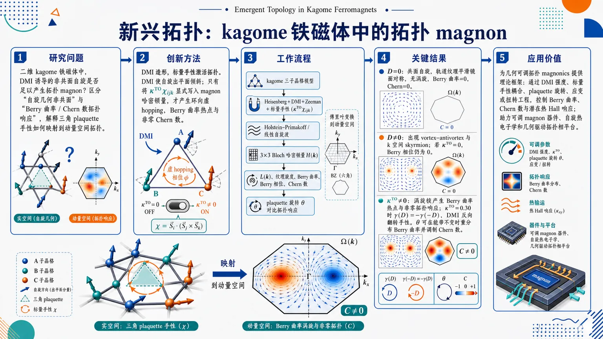
研究问题在二维 kagome 铁磁体中，DMI 诱导的非共面自旋是否足以产生拓扑 magnon？核心问题是分辨“自旋几何非共面”与“真正 Berry 曲率/Chern 数拓扑响应”之间的关系，并解释实空间三角 plaquette 手性如何转化为动量空间拓扑结构。创新方法提出“DMI 造形、标量手性激活拓扑”的机制：DMI 先让三角 plaquette 自旋出平面倾斜，形成非共面结构；但只有通过 (κTOḩiᵢⱼₖ) 将标量自旋手性显式写入 magnon 哈密顿量，才会产生环向虚 hopping、Berry 曲率热点和非零 Chern 数。Aha 点是：DMI 不是拓扑的直接开关，真正开关是被动力学耦合的标量手性。工作流程输入 kagome 三子晶格铁磁模型，加入 Heisenberg 交换、DMI、Zeeman 项和标量手性耦合项；用 Holstein–Primakoff 变换与线性自旋波理论把自旋映射为 magnon；傅里叶变换得到 (3×3) 动量空间 Bloch 哈密顿量；计算轨道纹理 (mathbf L(mathbf k))、纹理旋度、Berry 曲率、Berry 相位和 Chern 数；再通过 plaquette 全局旋转角 (θ) 比较能带不变时本征态几何和拓扑响应的变化。关键结果当 (D=0) 时，自旋共面，动量空间轨道纹理平滑镜面对称，无涡旋，旋度和 Berry 曲率均为零，Chern 数为 0。当 (D≠0) 时，轨道纹理出现 vortex–antivortex 对和动量空间 skyrmion，但若 (κTO=0)，Berry 相位仍为零；只有 (κTO≠0) 时，涡旋核处出现 Berry 曲率热点并产生非零拓扑响应。对于 (κTO=0.30)，Berry 相位满足 (γ(D)=-γ(-D))，显示 DMI 反向会翻转手性。plaquette 旋转 (θ) 可在能带不变时重新分布 Berry 曲率并调制 Chern 数。应用价值该研究为几何可调拓扑 magnonics 提供理论框架：可通过 DMI 强度、标量手性耦合、plaquette 旋转、应变或扭转工程来控制 kagome 铁磁体中的 Berry 曲率、Chern 数和潜在热 Hall 响应，有助于设计可调 magnon 器件、自旋热电子学器件和几何驱动拓扑相平台。第一部分：核心概览 (Overview)
该研究提出二维kagome 铁磁体中拓扑 magnon 相的几何—手性生成机制：DMI 诱导自旋出平面倾斜与非共面结构，但仅有 DMI 不足以产生有限 Berry 曲率或非零 Chern 数；必须通过 标量自旋手性项 (κTOḩiᵢⱼₖ) 将非共面性显式耦合进 magnon 哈密顿量。核心贡献在于把实空间三角 plaquette 的手性、动量空间轨道纹理涡旋、Berry 曲率热点与量子化 Chern 数建立直接对应，并指出全局 plaquette 旋转 (θ) 可在能带不变时调制本征态几何和拓扑响应。其定位属于几何可调拓扑 magnonics的理论框架扩展。
---
第二部分：结构化快速回顾
《Emergent Topology in Kagome Ferromagnets》（None，）
背景
Kagome 铁磁体因三角 plaquette 与几何阻挫天然支持非平庸自旋构型和 magnon 动力学。拓扑 magnon可产生热 Hall 输运与自旋电子学应用潜力。关键物理量是三自旋标量手性
[
ḩiᵢⱼₖ=hatmathbf Sᵢḑot(hatmathbf Sⱼ× hatmathbf Sₖ₎
]
它刻画三角 plaquette 上自旋构型的 handedness。
方法
采用二维 kagome 铁磁体模型，包含 Heisenberg 交换、Dzyaloshinskii–Moriya interaction (DMI)、标量自旋手性—磁场耦合项、Zeeman 项。通过 Holstein–Primakoff 变换与线性自旋波理论得到三子晶格 (3×3) 动量空间 magnon 哈密顿量，并计算轨道纹理 (mathbf L(mathbf k))、其旋度 (nablaₘₐₜₕbf ₖ×mathbf L(mathbf k))、Berry 曲率 (Ømegaₙ₍mathbf k))、Berry 相位 (γ) 与 Chern 数 (C)。
结果
在 (D=0) 时，自旋共面、轨道纹理镜面对称、旋度消失、Berry 曲率为零、(C=0)。在有限 DMI 下，如 (D=1)，轨道纹理出现 vortex–antivortex 对，形成动量空间 skyrmion；但只有当 (κTO≠0) 时，Berry 曲率、Berry 相位和 Chern 数才非零。对 (κTO=0.30) 的情形，(γ(D)=-γ(-D))，反映 DMI 反向导致手性反转。
讨论
全局 plaquette 旋转 (θ) 通过幺正变换保持能谱不变，却改变 Bloch 本征态的动量空间几何，因此可重新分布 Berry 曲率并调制 Chern 数。该机制显示拓扑分类不仅由能带色散决定，也由本征态几何决定。
局限
缺少材料特定参数拟合、实验可测量量的定量预测、有限温度效应、magnon–magnon 相互作用、无序、阻尼、边界态谱和热 Hall 电导的显式计算。图示结果未给出完整数值网格、误差估计或统计检验。
结论
拓扑 magnon 相需要两个条件同时满足：DMI 诱导的非共面 canting 与 标量手性项 (κTOḩiᵢⱼₖ) 的动力学耦合。Kagome 铁磁体可通过 DMI、(κTO)、plaquette 旋转角 (θ) 或应变/扭转工程实现几何可调的拓扑 magnon 响应。
---
第三部分：逐章节冷凝解析 (Section-by-Section Condensing)
Abstract
- Topology arises from chirality-coupled noncoplanarity
核心机制是将 DMI 与 标量自旋手性 (ḩiᵢⱼₖ) 共同纳入二维 kagome 铁磁体，其中手性定义为三重积
[
ḩiᵢⱼₖ=hatmathbf Sᵢḑot(hatmathbf Sⱼ×hatmathbf Sₖ₎
]
该项通过 topological orbital coupling (κTO) 进入哈密顿量。直接证据为 *"By incorporating a chiral interaction term proportional to the scalar triple product (ḩiᵢⱼₖ=hatbfSᵢḑot(hatbfSⱼ×hatbfSₖ)), we examine how the interplay between DMI and the topological orbital coupling (κTO) gives rise to geometric phase, nontrivial Berry curvature, and quantized Chern numbers in the magnon bands."*
- Linear spin-wave theory supplies the computational framework
技术路线是 动量空间表象加线性自旋波理论，目标量包括 orbital texture、vorticity 与 Berry curvature。原文表述为 *"Using a momentum-space representation and linear spin-wave theory, we compute the orbital texture, its vorticity, and the Berry curvature across the Brillouin zone."*
- Momentum-space skyrmions act as curvature sources
有限 DMI 诱导非共面自旋纹理，这些纹理在动量空间形成 skyrmion，并成为几何曲率源。对应表述为 *"We show that non-coplanar spin textures, driven by finite DMI, form momentum-space skyrmions that act as sources of geometric curvature."*
- DMI alone is declared insufficient for topology
关键判断是 DMI 单独不足以打破 magnon 哈密顿量层面的时间反演对称性；只有有限 标量手性项才使 Berry 相位和拓扑输运特征非零。直接引述为 *"Importantly, we demonstrate that DMI alone is insufficient to break time-reversal symmetry, only the presence of a finite scalar chirality terms does the system developed a nonzero Berry pahse and topological transport signatures."*
- Global plaquette rotation changes topology without changing bands
全局 plaquette 旋转是一个幺正变换，能带不变但 Berry 曲率和 Chern 数被调制，显示拓扑响应对本征态几何高度敏感。证据为 *"while the band structure remains invariant under this unitary transformation, the Berry curvature and Chern number are modulated, highlighting the geometric sensitivity of the topological response."*
---
I Introduction
- Topological magnons extend topology beyond electronic systems
拓扑物态不再局限于电子系统，磁绝缘体中的 bosonic topological magnons成为 spintronics 与 thermal Hall transport 的候选平台。原文指出 *"bosonic analogs, such as topological magnons in magnetic insulators, have recently attracted significant interest for their potential applications in spintronics and thermal Hall transport."*
- Kagome ferromagnet is chosen because frustration favors chiral textures
Kagome 晶格是二维几何阻挫系统，三角 plaquette 与竞争相互作用支持非平庸自旋构型和 magnon 动力学。依据为 *"the kagome ferromagnet, a geometrically frustrated two-dimensional lattice that naturally hosts nontrivial spin configurations and magnon dynamics."* 以及 *"triangular plaquettes and competing interactions, making it an ideal platform for realizing chiral spin textures and magnon topology."*
- Scalar spin chirality encodes three-spin handedness
标量手性 (ḩiᵢⱼₖ) 是三自旋局域 handedness 的量度，尤其适合描述 kagome 三角 plaquette。直接表述为 *"A central ingrident in this context is the scalar spin chirality (ḩiᵢⱼₖ=hatbfSᵢḑot(hatbfSⱼ×hatbfSₖ)), which captures the handedness of three-spin configurations on triangular plaquettes."*
- DMI induces noncoplanarity but not sufficient topology
DMI 可诱导非共面自旋态，但在 magnon 哈密顿量层面并不单独造成所需时间反演破缺；需要 (κTO) 将标量手性显式耦合入哈密顿量。原文为 *"While Dzyaloshinskii–Moriya interaction (DMI) can induced non-coplanar spin states, it does not by itself break time-reversal symmetry at the level of magnon Hamiltonian."* 以及 *"Only when scalar chirality is explicitly coupled into the Hamiltonian, via a topological orbital susceptibility parameter (κTO), does the system acquire finite Berry curvature and nonzero Chern number."*
- Three tuning knobs define the phase structure
拓扑相结构由 DMI 强度 (D)、手性耦合 (κTO) 与 几何旋转角 (θ) 共同控制。直接证据为 *"We explore how the DMI strength (D), chirality coupling (κTO), and geometric lattice rotation angle (θ) influence the topological phase structure."*
- Unitary lattice rotation separates spectrum from geometry
旋转角 (θ) 诱导的幺正变换不改变能带本征值，却改变 Berry 曲率和 Chern 数，因而提供不依赖色散改变的几何控制。原文为 *"while the band structure is invariant under a unitary transformation induced by (θ), the Berry curvature and Chern number are not, indicating a purely geometric control over the topological response."*
---
II Method
- Full Hamiltonian combines exchange, DMI, scalar chirality, and Zeeman coupling
模型哈密顿量为
[
hatmathcal H
=
-frac12sumᵢⱼJᵢⱼhatmathbf Sᵢḑothatmathbf Sⱼ
-frac12sumᵢⱼmathbf Dᵢⱼḑot(hatmathbf Sᵢ×hatmathbf Sⱼ₎
-κTOmathbf Bḑotsumᵢⱼₖhatmathbf eᵢⱼₖ[hatmathbf Sᵢḑot(hatmathbf Sⱼ×hatmathbf Sₖ₎]
-μ_Bmathbf Bḑotsumᵢhatmathbf Sᵢ .
]
参数包括 Heisenberg exchange (Jᵢⱼ)、DMI vector (mathbf Dᵢⱼ)、topological orbital susceptibility (κTO)、Bohr magneton (μ_B) 与外磁场 (mathbf B)。原文说明 *"(Jᵢⱼ) denotes the Heisenberg exchange interaction"*，*"The vector (Dᵢⱼ) is the Dzyaloshinskii–Moriya interaction (DMI)."*，以及 *"The third term couples the scalar spin chirality to an external magnetic field via the coefficient (κTO), henceforth referred to as the topological orbital susceptibility."*
- Scalar chirality measures signed spin volume and handedness
[
ḩiᵢⱼₖ=mathbf Sᵢḑot(mathbf Sⱼ×mathbf Sₖ₎
]
表示三个自旋张成的有向体积；(ḩiᵢⱼₖ>0) 为 right-handed/CW，(ḩiᵢⱼₖ<0) 为 left-handed/CCW。直接引述为 *"captures the scalar chirality and measures the signed volume spanned by three spins on a triangular plaquette."* 以及 *"(ḩiᵢⱼₖ>0): right-handed (clockwise, CW), (ḩiᵢⱼₖ<0): left-handed (counterclockwise, CCW)."*
- Plaquette orientation enters through the normal vector
手性项与三角 plaquette 法向量耦合，法向量满足
[
hatmathbf eᵢⱼₖpropto(mathbf Rⱼ₋mathbf Rᵢ₎×(mathbf Rₖ₋mathbf Rᵢ₎.
]
该结构将实空间几何取向写入哈密顿量。证据为 *"this chirality term is contracted with a unit normal vector (hateᵢⱼₖpropto(bfRⱼ-bfRᵢ)×(bfRₖ-bfRᵢ)), which gives the surface normal of the oriented triangular plaquette."*
- Holstein–Primakoff transformation maps spins to magnons
低能激发通过 Holstein–Primakoff transformation表示为 bosonic magnon：
[
hat Sᵢ^x-ihat Sᵢ^y=sqrt2Shat aᵢ,quad
hat Sᵢ^x+ihat Sᵢ^y=sqrt2Shat aᵢ^dagger,quad
hat Sᵢ^z=S-hat nᵢ .
]
直接依据为 *"we apply the Holstein–Primakoff transformation to express the spin operators in terms of bosonic magnon operators"*，并且 *"In the linear spin-wave approximation, we retain only quadratic terms in the bosonic operators."*
- Quadratic spin-wave Hamiltonian contains complex DMI hopping and chirality hopping
线性自旋波近似后的哈密顿量包含交换 hopping、DMI 反对称虚 hopping、手性项以及 Zeeman 数算符项：
[
-frac12SsumᵢⱼJᵢⱼ(hat aᵢ^daggerhat aⱼ₊ₕ.c.)
-frac i2SsumᵢⱼD^zᵢⱼ(hat aᵢ^daggerhat aⱼ₋hat aⱼ^daggerhat aᵢ₎
-BκTOsumCW,CCWhatḩiᵢⱼₖ
-μ_BSBsumᵢhat aᵢ^daggerhat aᵢ .
]
直接引述为 *"The resulting Hamiltonian can be written"* 后给出式 (4)。
- Chirality operator becomes imaginary magnon hopping around plaquettes
线性近似下
[
hatḩiᵢⱼₖ
=
iS²[(hat aᵢ^daggerhat aⱼ₋hat aᵢhat aⱼ^dagger)
+(hat aⱼ^daggerhat aₖ₋hat aⱼhat aₖ^dagger)
+(hat aₖ^daggerhat aᵢ₋hat aₖhat aᵢ^dagger)] .
]
这意味着手性以环向虚 hopping形式进入 magnon 动力学。原文给出 *"Within the adopted approximation, the chirality operator is in magnon operators given by"* 式 (5)。
- Finite scalar chirality requires out-of-plane evaluation and canting
有限 (ḩiᵢⱼₖ) 需要三角 plaquette 发生出平面倾斜，即 canting angle (φ≠0)。原文为 *"For equation 2 to be finite, the Hamiltonian II must be evaluated out of the plane. This in turn yield a tilt in the triangular plaquettes, which is characterized by finite canting angle (φ≠0)."*
- DMI-induced canting is encoded by a rotation generator
倾角由
[
φ=arctan(D/J)
]
给出，并通过旋转展开
[
eⁱφmathcal J_α
=
mathbb I+iφmathcal J_α-fracφ²2mathcal J_α²⁺mathcal O(φ³⁾
]
描述。原文写明 *"DMI-induced canting is accounted for via the rotation generator"*，且 *"where (φ=arctan(D/J))."*
- Canting renormalizes scalar chirality by (o̧s(2φ))
倾斜几何把手性重整化为
[
ḩiᵢⱼₖi̊ghtarrowo̧s(2φ)ḩiᵢⱼₖ.
]
这将 DMI 与手性耦合强度联系起来。直接证据为 *"This effectively renormalizes the scalar chirality as (ḩiᵢⱼₖi̊ghtarrowo̧s(2φ)ḩiᵢⱼₖ), encoding the degree of spin canting."*
- Momentum-space Hamiltonian is a (3×3) sublattice matrix
Fourier 变换
[
hat aᵢ₌N⁻¹/²sumₘₐₜₕbf ₖeⁱmathbf kḑotmathbf Rᵢhat aₘₐₜₕbf ₖ
]
后，kagome 三个子晶格 (A,B,C) 构成 (3×3) Bloch 哈密顿量。原文为 *"Upon Fourier transformation, this reduces to a (3×3) matrix acting on the three sublattices (A,B,C) of the kagome lattice."*
- DMI term has a sine momentum dependence
DMI 的动量依赖系数为
[
γDM(mathbf k)=Dsum_δsin(mathbf kḑotδ).
]
该 sine 结构体现反对称交换导致的奇宇称相位。直接引述为 *"with momentum-dependent coefficient (γDM(k)=Dsumδsin(kḑotδ))."*
- Scalar chirality term introduces oriented complex momentum-dependent hopping
手性项为
[
hatmathcal H_ḩi(mathbf k)
=
-iS²BκTO
sumₖsumα,β,γ
hatmathbf eα,β,γ
sin[mathbf kḑot(δα,β+δβ,γ)]
hat aₖ,α^daggerhat aₖ,β.
]
(hatmathbf eα,β,γ=±1) 区分 CW/CCW。证据为 *"the scalar spin chirality interaction becomes"* 式 (12)，以及 *"the sign factor (hateα,β,γ=±1) encodes the orientation of the triangular plaquettes ((+1) clockwise, (-1) counterclockwise)."*
- Zeeman coupling is diagonal in sublattice space
Zeeman 项为
[
hatmathcal H_Z(mathbf k)=μ_BBsumₖ,αhat aₖα^daggerhat aₖα.
]
原文明确 *"The Zeeman coupling from an external magnetic field is diagonal."*
- Full Bloch Hamiltonian sums four contributions
总动量空间哈密顿量为
[
tildemathcal H(mathbf k)=
hatmathcal H_J(mathbf k)+
hatmathcal HDM(mathbf k)+
hatmathcal H_ḩi(mathbf k)+
hatmathcal H_Z(mathbf k).
]
原文直接写出 *"The full magnon Hamiltonian in momentum space can be written as (tildeH(k)=hatHJ(k)+hatHDM(k)+hatHḩᵢ(k)+hatHZ(k))."*
- Global in-plane rotation is a unitary transformation
plaquette 全局旋转 (θ) 使
[
hatmathcal Hi̊ghtarrow hat U(θ)hatmathcal Hhat U^dagger(θ).
]
(θ=π/6) 时 kagome 映射到 chiral triangular lattice；一般 (0<θ<π/6) 时，相位因子为
[
φₗ₍θ)=e⁻ⁱ⁽sqrt³/⁶⁾taⁿθ,mathbf kḑotmathbf vₗ.
]
证据为 *"Under a global in-plane rotation by angle (θ), the triangular plaquettes transform via the unitary operator"*，*"For (θ=π/6), the kagome lattice maps onto a chiral triangular lattice"*，以及 *"For general (0<θ<π/6), the induced phase factor becomes..."*
- Band energies are invariant but Berry geometry changes
(θ) 保持 Bloch 哈密顿量本征值，因而能带色散不变；但本征态和其 (mathbf k) 导数改变，Berry 曲率和 Chern 数随之变化。原文为 *"This unitary transformation leaves the magnon band structure invariant, as it preserves the eigenvalues of the Bloch Hamiltonian."* 以及 *"However, it modifies the Bloch eigenstates and their momentum-space derivatives, and therefore changes the Berry curvature and Chern number."*
---
II.1 Topological transitions
- Three diagnostics track topology in momentum space
拓扑出现通过三个量判断：orbital texture (mathbf L(mathbf k))、curl (nablaₘₐₜₕbf ₖ×mathbf L(mathbf k))、Berry curvature (Ømega(mathbf k))。直接引述为 *"we compare three diagnostic quantities across momentum space, namely the orbital texture (L(k)), the curl of the orbital texture (nablaₖ×L(k)), and the Berry curvature (Ømega(k))."*
- Orbital texture winding signals nontrivial geometry
(mathbf L(mathbf k)) 表示 Brillouin 区中每个点的 pseudospin 或 magnon mode 方向；vortex/antivortex winding 指示潜在拓扑非平庸结构。证据为 *"The orbital texture, visualized as a momentum-space vector field, encodes the orientation of the pseudospin (or magnonic mode) at each point in the Brillouin zone."* 以及 *"When this texture exhibits winding (such as vortex or antivortex structures), it indicates the presence of geometric structure that may be topologically nontrivial."*
- Curl identifies vorticity and momentum-space skyrmions
轨道纹理旋度定位高 vorticity 区域，通常对应动量空间 skyrmion-like features。原文为 *"The curl of (L(k)) serves as a diagnostic of this structure, highlighting localized regions of high vorticity — typically corresponding to skyrmion-like features in momentum space."*
- Berry curvature integrates to the Chern number
Berry 曲率刻画 Bloch 本征态的量子几何扭转，并积分得到 Chern 数。公式为
[
Ømegaₙ₍mathbf k)=
-Imsumₘ≠ ₙ
frac{mathcal Fxyₙₘ(mathbf k)-mathcal Fyxₙₘ(mathbf k)}
(ǎrepsilonₙₘₐₜₕbf ₖ-ǎrepsilonₘₘₐₜₕbf ₖ)².
]
原文为 *"the Berry curvature (Ømega(k)) captures the quantum geometric twist of Bloch eigenstates and integrates to the Chern number."*
- Bosonic Berry curvature uses (Σ_z) matrix elements
交叉项
[
mathcal Fₙₘμν(mathbf k)=
łangle uₙₘₐₜₕbf ₖ|Σ_zpartialₖ_μmathcal H(mathbf k)|uₘₘₐₜₕbf ₖångle
łangle uₘₘₐₜₕbf ₖ|Σ_zpartialₖ_νmathcal H(mathbf k)|uₙₘₐₜₕbf ₖångle
]
是 bosonic 框架中的 gauge-invariant velocity-like operator cross terms。原文为 *"The quantity (a̧l Fₘₙμν(bf k)) captures the gauge-invariant cross terms between velocity-like operators within the bosonic framework."*
- Curvature hot spots coincide with vorticity centers
(Ømega(mathbf k)) 与 (nablaₘₐₜₕbf ₖ×mathbf L(mathbf k)) 叠加后，曲率热点与涡量中心重合，表明动量空间 skyrmion 是几何相位源。直接证据为 *"we observe that the curvature hot spots coincide with vorticity centers, confirming that momentum-space skyrmions act as sources of geometric phase."*
- Chern number is computed from Berry curvature over the Brillouin zone
能量分辨 Chern 数定义为
[
C(ǎrepsilon)=
sumₙfrac12πintBZØmegaₙₘₐₜₕbf ₖ(mathbf k)
δ(ǎrepsilonₙₘₐₜₕbf ₖ-ǎrepsilon)d²k .
]
原文为 *"By integrating it over the Brillouin zone, one obtains the energy-resolved Chern number"*，并指出其 *"encodes the global topological character of a magnon band."*
- Nonzero Berry curvature requires noncoplanarity plus chirality coupling
有限 Berry 曲率需要非共面自旋纹理和三角 plaquette 的正确倾斜，且这种非共面性必须通过 (κTOḩiᵢⱼₖ) 被哈密顿量“感知”。原文为 *"Crucially, a non-zero Berry curvature requires both noncoplanar spin textures and the proper canting of triangular plaquettes."* 以及 *"noncoplanarity must be actively felt by the Hamiltonian via the chirality-coupled term (κTOḩiᵢⱼₖ), scaled by (o̧s(2φ))."*
- Dominant Berry curvature comes from scalar chirality Hamiltonian
(mathcal H_ḩi(mathbf k)) 引入复数、动量依赖的子晶格 hopping，是 Berry 曲率主贡献。原文指出 *"The dominant contributions to (Ømegaₙ(k)) arise from the scalar chirality Hamiltonian (Hḩᵢ(k)), which introduces complex, momentum-dependent hopping terms between sublattice sites."*
- CW, CCW, and interference terms compose total curvature
总 Berry 曲率可分解为 CW loop、CCW loop 和相邻 plaquette interference：
[
Ømegaₙ₍mathbf k)
=
ØmegaₙCW(mathbf k)+
ØmegaₙCCW(mathbf k)+
Ømegaₙⁱⁿt(mathbf k).
]
原文为 *"These contributions can be grouped into clockwise (CW) and counterclockwise (CCW) plaquette loops"*，以及 *"Apart from these intra-plaquette contributions, interference between neighboring plaquettes ... also provide important contributions."*
- Berry phase requires finite canting and finite scalar chirality coupling
几何相位
[
γ=øintₘₐₜₕcₐₗ Cmathbf Aₙ₍mathbf k)ḑot dmathbf k
]
只有在两个条件满足时非零：(φ≠0) 与 (κTOḩiᵢⱼₖ) 存在。原文为 *"remains zero unless the following two requirements are fulfilled: (i) the noncoplanar structure is introduced via a finite canting angle (φ), (ii) the scalar chirality coupling (κTOḩiᵢⱼₖ) is present in the Hamiltonian."*
- Berry connection and curvature define eigenstate geometry
Berry connection 为
[
mathbf Aₙ₍mathbf k)=iłangle uₙₘₐₜₕbf ₖ|nablaₘₐₜₕbf ₖuₙₘₐₜₕbf ₖångle
]
且
[
Ømegaₙ₍mathbf k)=nablaₘₐₜₕbf ₖ×mathbf Aₙ₍mathbf k).
]
原文为 *"Here, (Aₙ(k)=iłeftłangle uₙₖmiddle|nablaₖuₙₖi̊ghtångle) is the Berry connection"*，以及 *"The Berry connection itself is associated to the Berry curvature through (Ømegaₙ(k)=nablaₖ×Aₙ(k))."*
- Plaquette orientation angle creates geometry-sensitive topology
全局 (θ) 不改变能谱，却改变 Bloch 本征态几何和 Berry 曲率，体现由本征态几何而非能谱单独决定的拓扑。原文为 *"While it leaves the band structure invariant—corresponding to a unitary transformation (hatU(θ)HhatUdagger(θ))—it modifies the Bloch eigenstate geometry and thereby the Berry curvature."* 以及 *"This reflects geometry-sensitive topology, where the topology is governed by eigenstate geometry rather than energy spectrum alone."*
---
III Results
- At (D=0), the orbital texture is ordered, coplanar, and topologically trivial
(D=0) 时自旋严格共面，轨道纹理镜面对称、平滑、无 winding 或拓扑缺陷。Figure 1(a) 说明 *"For (D=0), the spin configuration remains strictly coplanar."* 并且 *"This leads to a highly ordered and mirror-symmetric orbital texture in momentum space, characterized by smoothly varying pseudospin vectors (arrows) and the absence of winding or topological defects."*
- At (D=1), vortex–antivortex pairs appear in orbital texture
(D=1) 时 DMI 打破共面排列，引发非共面纹理与有限标量手性；轨道纹理出现局域圆形流动，标志动量空间 skyrmion 出现。原文为 *"At (D=1), The DMI breaks the coplanar alignment in the spin texture, breaking time-reversal symmetry and enabling finite scalar spin chirality (ḩiᵢⱼₖ)."* 以及 *"the orbital texture develops pronounced vortex-antivortex pairs, seen in figure 1 b visible as localized circular flows in the vector field-signaling the emergence of momentum-space skyrmions."*
- Heisenberg exchange favors ordered parallel spin alignment
在 (D=0) 或 DMI 弱时，系统主要由 Heisenberg interaction 控制，倾向自旋平行排列，从而产生有序轨道纹理。证据为 *"the system is governed by Heisenberg interaction which favors the parallel alignment of the spin vectors, resulting in the ordered structure."*
- Curl vanishes across the Brillouin zone when (D=0)
Figure 2(a) 显示 (D=0) 时轨道纹理无旋，Brillouin 区内 curl 消失，无拓扑奇点。直接引述为 *"At (D=0), the system is coplanar, and the orbital texture is irrotational—resulting in vanishing curl across the Brillouin zone."* 以及 *"free from topological singularities such as vortices."*
- At (D=1), finite curl forms positive and negative vorticity regions
Figure 2(b) 显示非共面结构产生 vortex–antivortex，蓝红区域分别表示正负 curl。原文为 *"When (D=1), the onset of noncoplanar structure generates vortex–antivortex structures with finite positive and negative curl values, shown as blue and red regions."*
- Vortex imbalance correlates with nonzero Chern number
curl 奇点被解释为动量空间 skyrmion，其 vortex 与 antivortex 数量不平衡关联非零 Chern 数。原文为 *"These curl singularities represent momentum-space skyrmions and encode the spatial organization of chirality."* 以及 *"the imbalance in vortex versus antivortex count correlates with a nonzero Chern number."*
- DMI must be distinguished from dynamically active chirality
有限 DMI 负责让自旋出平面 canting，但拓扑响应需要标量手性项进入哈密顿量。原文强调 *"it is not the finite DMI (D) itself that breaks time-reversal symmetry, but rather the emergence of a finite scalar chirality (ḩiᵢⱼₖ)."* 并进一步指出 *"time-reversal symmetry remains intact unless the noncoplanar alignment is explicitly coupled into the Hamiltonian."*
- Scalar chirality coupling (κTOḩiᵢⱼₖ) activates Berry curvature
(κTOḩiᵢⱼₖ) 使手性变成动力学活跃量，进而产生 Berry 曲率热点。原文为 *"this coupling occurs through a scalar chirality term (κTOḩiᵢⱼₖ), which renders the chirality dynamically active."* 以及 *"Only then does the Berry curvature become nonzero, exhibiting pronounced hot spots."*
- Figure 3(a) shows zero Berry curvature in coplanar state
(D=0) 时即使存在轨道纹理，Berry 曲率在整个 Brillouin 区为零，因为共面结构保留时间反演对称性。Figure 3 说明 *"At (D=0), despite the presence of orbital texture, the system retains coplanar structure and time-reversal symmetry."* 以及 *"the Berry curvature (Ømega(k)) ... is identically zero throughout the Brillouin zone."*
- Figure 3(b) links Berry curvature hot spots to vortex cores
有限 DMI 下，非共面与标量手性激活，Berry 曲率图案非平庸；热点出现在轨道纹理 vortex cores。原文为 *"At finite DMI ((D=1)), the system is noncoplanar and scalar chirality become active, leading to nontrivial Berry curvature patterns."* 以及 *"regions of finite Berry curvature appear precisely at the vortex cores of the orbital texture."*
- Berry curvature is a quantum signature invisible in energy spectra alone
曲率热点作为几何相位源/汇，其积分产生非零 Chern 数，反映底层非共面自旋结构，不能仅靠能谱分析获得。原文为 *"These regions act as sources (and sinks) of geometric phase, and their integral yields a nonzero Chern number."* 以及 *"The curvature thus provides a direct quantum signature of the underlying noncoplanar spin structure, inaccessible through purely energetic or spectral analysis."*
- Orbital texture is invariant under (θ) but sensitive to (φ)
改变全局面内旋转角 (θ) 不改变相对自旋方向，因此轨道纹理保持不变；改变 canting angle (φ) 则强烈影响轨道纹理。原文为 *"the orbital texture remains invariant under variation of the in-plane rotation angle (θ), which reorients the triangular plaquettes globally."* 以及 *"changes in the canting angle (φ), which control the degree of out-of-plane spin deformation, have a strong impact on the orbital texture."*
- Topological order needs geometric realization and dynamic coupling
非共面结构必须先由 spin canting 几何实现，再由 (κTOḩiᵢⱼₖ) 动力学耦合，才有拓扑序。原文总结为 *"topological order only emerges once scalar chirality is both geometrically realized (via spin canting) and dynamically coupled (via (κTOḩiᵢⱼₖ))."*
- Berry phase vanishes at (κTO=0) even when (D≠0)
Figure 4(a) 的关键结果是 (κTO=0) 黑线给出 (γ=0)，即使系统已非共面；说明非共面本身不足以激活拓扑。原文为 *"(κTO=0) (black line) yields (γ=0), even at finite (D), confirming that the spin moments being noncoplanar alone is insufficient to generate a topological response."*
- Finite (κTO=0.30) produces antisymmetric Berry phase
当 (κTO=0.30) 时出现有限 Berry phase，并满足
[
γ(D)=-γ(-D).
]
这反映 DMI 向量反转导致手性反转。证据为 *"With (κTO=0.30), we see a finite Berry phase, with displayed symmetry about (D=0) the antisymmetric dependence (γ(D)=-γ(-D)) reflects the reversal of chirality under inversion of the DMI vector."*
- Berry phase depends smoothly and periodically on (θ)
Figure 4(b) 固定 (κTO=0.30) 和 (D=0.10,meV)，(γ) 随 plaquette orientation angle (θ) 平滑周期变化。原文为 *"For fixed (κTO=0.30) and finite DMI (D=0.10,meV), the Berry phase (γ) varies smoothly and periodically with the plaquette orientation angle (θ)."*
- Berry phase bridges local curvature and global Chern number
(γ) 将局域 Berry 曲率热点沿闭合路径累积，是 Figure 3 的局域几何与 Figure 5 的全局 Chern 数之间的中间量。原文为 *"the geometric phase (γ) integrates the local structure of Berry curvature into a path-dependent quantity that reflects the global twisting of magnon eigenstates."* 以及 *"This makes it the natural bridge between local quantum geometry and the global topological classification provided by the Chern number."*
- (θ) redistributes Berry curvature and changes Chern number without changing energies
(θ) 的幺正变换保持能带能量，但改变本征态结构，重新分布 Berry 曲率并改变 Chern 数。原文为 *"although the unitary transform preserves band energies, it alters the eigenstate structure. This redistributes Berry curvature and changes the global topological invariant, namely the Chern number."*
- Chern maps show (C=0) along (D=0)
Figure 5 中 (D=0) 对所有 (κTO) 均有 (C=0)，与共面对称性一致。原文为 *"For (D=0), (C=0) for all (κTO), consistent with coplanar symmetry."*
- Distinct topological regimes depend on (θ)
(D>0) 后出现依赖 (θ) 的不同拓扑区域，说明晶格几何影响拓扑分类。Figure 5 说明 *"For (D>0), distinct topological regimes appear depending on (θ), illustrating how lattice geometry influences topological classification."*
- Fragile topology is driven by eigenstate geometry
Figure 5 的三点总结为：(D=0) 时 (C=0)；(D≠0) 打破共面排列并激活手性项；改变 (θ) 在能谱不变时修改 Chern 数。原文为 *"These maps show that (i) (C=0) along (D=0), where spins remain coplanar and TRS is preserved; (ii) (D≠0) breaks the coplanar alignment and activates the chirality term; (iii) Varying (θ), even with unchanged energy spectrum, reshapes Berry curvature and modifies the Chern number, demonstrating fragile topology driven by eigenstate geometry."*
---
IV Conclusion
- Topology is controlled by DMI, geometry, and scalar chirality together
拓扑 magnon 相由 DMI、lattice geometry 与 scalar spin chirality 的耦合决定。原文开宗明义为 *"the interplay between Dzyaloshinskii–Moriya interaction (DMI), lattice geometry, and scalar spin chirality in governing the topological magnonic phases of a kagome ferromagnet."*
- Three diagnostics identify topological emergence
轨道纹理、纹理旋度、Berry 曲率共同揭示有限 Berry phase 与量子化 Chern 数出现所需条件。证据为 *"By analyzing the orbital texture, its curl, and the Berry curvature across parameter space, we identified key geometric and dynamical conditions required for the emergence of topological features such as finite Berry phase and quantized Chern number."*
- DMI is necessary but insufficient
DMI 通过 out-of-plane canting 诱导非共面纹理，但单独不能打破时间反演对称性或生成有限 Berry 曲率。原文为 *"while DMI is necessary to induce noncoplanar spin textures—by canting spins out of plane—it is not sufficient on its own to break time-reversal symmetry or generate a finite Berry curvature."*
- Noncoplanarity must be coupled by (κTOḩiᵢⱼₖ)
(φ≠0) 只是几何非共面；拓扑效应要求该非共面性通过 (κTOḩiᵢⱼₖ) 显式进入 magnon 哈密顿量。原文为 *"The mere presence of noncoplanarity (i.e., (φ≠0)) does not induce topological effects unless it is explicitly coupled into the magnon Hamiltonian via a scalar chirality term of the form (κTOḩiᵢⱼₖ)."*
- The chirality term is weighted by (o̧s(2φ))
标量手性源于三角 plaquette 上自旋三重积，并受 (o̧s(2φ)) 几何因子加权，编码 canting 程度。证据为 *"This chirality term arises from the triple product of spins on a triangular plaquette and is effectively weighted by a geometrical factor (o̧s(2φ)), encoding the degree of canting."*
- Vortex–antivortex pairs connect classical winding to quantum Berry curvature
轨道纹理中的 vortex–antivortex 与 Berry 曲率热点重合，建立经典几何绕转与量子几何相位结构的直接对应。原文为 *"Vortex–antivortex pairs in the texture coincide with hot spots in the Berry curvature, revealing a direct correspondence between classical geometric winding and quantum geometric phase structure."*
- Berry phase connects local curvature to global topology
Berry phase 沿动量空间闭合环路积分本征态几何扭转，是局域曲率分布与 Chern 数之间的桥梁。原文为 *"the Berry phase (γ) serves as the natural bridge between these local curvature distributions and the global topological invariant, the Chern number."*
- Global plaquette rotations alter topology through wavefunction geometry
(θ) 控制的面内旋转是几何形变：能谱不变，但 Berry 曲率重新分布且 Chern 数改变。直接引述为 *"global in-plane rotations of the triangular plaquettes, controlled by the parameter (θ), act as geometric deformations that leave the energy spectrum invariant but alter the wavefunction geometry."* 以及 *"This manifests as a redistribution of Berry curvature across the Brillouin zone and results in changes to the quantized Chern number."*
- Topological transport is not a universal consequence of DMI
Berry 曲率、Berry phase 与 Chern 数不是 DMI 的普适结果，而是 (φ)、(θ)、(κTO) 等几何与手性参数的敏感函数。原文为 *"The resulting Berry curvature, Berry phase, and Chern number are therefore not universal consequences of DMI, but rather sensitive functions of geometric parameters such as canting angle (φ) and lattice rotation (θ)."*
- Experimental control routes include DMI, chirality coupling, strain, and twist
可通过调节 DMI、(κTO)、晶格旋转、substrate strain 或 twist engineering 调控拓扑响应。原文为 *"by tuning DMI, chirality coupling (κTO), or rotating lattice configurations (e.g., via substrate strain or twist engineering), one may tailor the topological response of magnetic systems."*
- Application outlook targets magnonic devices and spin caloritronics
Kagome 铁磁体被定位为可调 magnonic devices、spin caloritronics 和几何驱动拓扑相平台。原文为 *"These findings thus position kagome ferromagnets as promising platforms for the development of tunable magnonic devices, spin caloritronics, and geometry-driven topological phases in frustrated magnets."*
---
Acknowledgements
- Funding source is Olle Enkvists Stiftelse
经费来源为 Olle Enkvists Stiftelse。原文为 *"We gratefully acknowledge financial support from Olle Enkvists Stiftelse, which made this work possible."*
---
References
- Reference base spans chirality, DMI, HP theory, and recent kagome geometry
文献链条覆盖 Dzyaloshinsky–Moriya interaction 原始工作、Holstein–Primakoff transformation、标量手性与拓扑 Hall/thermal Hall 相关理论，以及 2024 年关于 kagome/chiral triangular geometry 的工作。代表性条目包括 *"Dzyaloshinsky [1958]"*、*"Moriya [1960]"*、*"Holstein and Primakoff [1940]"*、*"Katsura et al. [2010]"*、*"Duan et al. [2024]"*。
---
第四部分：深度理解与语言支持 (Understanding & Nuance)
1. 术语解析
- Scalar spin chirality
学术含义是三自旋构型的有向体积：
[
ḩiᵢⱼₖ=mathbf Sᵢḑot(mathbf Sⱼ×mathbf Sₖ₎.
]
它不只是“手性”的定性描述，而是一个可进入哈密顿量的 pseudoscalar。符号正负对应三角 plaquette 上 CW/CCW handedness。微妙点在于：非共面自旋可产生几何上的 (ḩiᵢⱼₖ)，但只有 (κTOḩiᵢⱼₖ) 出现在哈密顿量中时，它才成为动力学活跃的拓扑源。
- Topological orbital susceptibility (κTO)
该量是标量手性与外磁场耦合的系数，控制手性项对 magnon hopping 相位的贡献。它不是普通磁化率，而是把实空间手性转换为动量空间 Berry 几何的有效耦合强度。
- Orbital texture
指动量空间中 magnon 模式或 pseudospin 的方向场 (mathbf L(mathbf k))。它类似一个在 Brillouin 区上定义的向量纹理。出现 vortex/antivortex 表示本征态随 (mathbf k) 强烈扭转，但其本身不是量子拓扑不变量；它是拓扑的可视化诊断量。
- Berry curvature hot spots
指 Berry 曲率在动量空间局域强烈集中的区域，通常出现在能带接近、相位快速变化或纹理涡旋核附近。这里 hot spots 被解释为动量空间 skyrmion 的几何相位源/汇。
- Geometry-sensitive topology
微妙之处在于拓扑通常与能带 gap 和 Berry 曲率相关，但该研究强调：即使能带本征值不变，Bloch 本征态的 (mathbf k)-空间几何仍可改变 Berry 曲率和 Chern 数。也就是说，谱等价不必然意味着拓扑响应等价。
---
2. 疑难查证
#### 为什么 DMI 诱导非共面却“不足以”产生拓扑？
DMI 项可以让自旋从共面排列中倾斜出去，形成 (φ≠0) 的非共面结构。但在该模型的逻辑中，非共面只是几何背景；若哈密顿量没有显式包含 (κTOḩiᵢⱼₖ)，magnon 仍未感受到三自旋环流相位。
拓扑 magnon 的 Berry 曲率本质上来自 Bloch 本征态随 (mathbf k) 的复相位扭转，而这种复相位需要环向 hopping 或等效 gauge flux。标量手性项正是提供这种环向虚 hopping 的机制。因此：
[
D≠0 Rightarrow φ≠0
]
只说明自旋结构可非共面；但
[
D≠0, κTO≠0
]
才意味着非共面性被写入 magnon 哈密顿量并转化为 Berry 曲率。
---
#### 为什么 (θ) 不改变能带却改变 Chern 数？
(θ) 通过
[
hatmathcal Hi̊ghtarrow hat U(θ)hatmathcal Hhat U^dagger(θ)
]
作用，属于幺正变换。幺正变换保持本征值，所以能带色散不变。
但 Berry 曲率不是只由本征值决定，而由本征态及其动量导数决定：
[
mathbf Aₙ₍mathbf k)=iłangle uₙₘₐₜₕbf ₖ|nablaₘₐₜₕbf ₖuₙₘₐₜₕbf ₖångle,quad
Ømegaₙ₍mathbf k)=nablaₘₐₜₕbf ₖ×mathbf Aₙ₍mathbf k).
]
如果 (hat U(θ)) 含 (mathbf k)-依赖相位，如
[
φₗ₍θ)=e⁻ⁱ⁽sqrt³/⁶⁾taⁿθ,mathbf kḑotmathbf vₗ,
]
那么新本征态不仅是旧本征态乘常数相位，而是带有 (mathbf k)-依赖的几何重排。其导数会改变 Berry connection，从而改变 Berry curvature 分布。若能带之间存在 gap closing/重排或数值积分跨越拓扑相边界，Chern 数也可变化。
---
#### 动量空间 skyrmion 与真实空间 skyrmion 有何区别？
真实空间 skyrmion 是 (mathbf r)-空间中的自旋纹理；动量空间 skyrmion 是 (mathbf k)-空间中的 pseudospin 或 orbital texture 绕转结构。
这里的 skyrmion 不是实际磁畴中的拓扑缺陷，而是 Bloch 本征态在 Brillouin 区中的映射结构：
[
mathbf kin BZ łongmapsto mathbf L(mathbf k)
]
当该映射覆盖目标空间并产生非零 winding 时，Berry 曲率会集中在纹理扭转最强的位置。因而动量空间 skyrmion 是 Berry 曲率 hot spots 和 Chern 数的几何来源。
---
第五部分：创新评估与关联 (Synthesis & Novelty)
1. 创新性判断
- 从“DMI 产生拓扑”转向“DMI + 动力学手性耦合产生拓扑”
过去 2–5 年 kagome magnon 拓扑研究常强调 DMI 打开 Dirac gap、诱导 Berry 曲率和热 Hall 响应。该研究更细分地指出：DMI 的作用主要是生成非共面 canting，而有限拓扑响应还需要 (κTOḩiᵢⱼₖ) 显式进入 magnon 哈密顿量。新颖性在于把“非共面几何存在”与“手性动力学活跃”区分开。
- 建立 orbital texture–vorticity–Berry curvature–Chern number 的诊断链条
常规拓扑 magnon 研究直接计算 Berry 曲率与 Chern 数；这里加入 orbital texture 与其 curl，把经典向量场涡旋和量子几何曲率热点对应起来。该链条使拓扑相变更可视化：
[
vortex–antivortex texture
i̊ghtarrow
nablaₘₐₜₕbf ₖ×mathbf L(mathbf k)
i̊ghtarrow
Ømega(mathbf k)
i̊ghtarrow
C.
]
- 提出能带不变但拓扑响应可调的几何控制机制
(θ) 诱导的全局 plaquette 旋转保持能带本征值，却改变 Berry 曲率与 Chern 数。这比单纯调 DMI 或交换强度更几何化，接近 twist engineering、strain engineering 和 moiré/topological magnonics 的前沿方向。
- 把 scalar chirality 作为 magnon topology 的 active coupling，而非仅作为 order parameter
标量手性在很多文献中用于表征非共面磁结构或拓扑 Hall 效应；这里把它通过 (κTO) 作为哈密顿量中的显式项，承担 magnon hopping 相位与 Berry curvature 的来源。这解决了“观察到非共面纹理是否必然意味着拓扑 magnon”的概念混淆。
- 强调 eigenstate geometry beyond spectrum
传统能带拓扑讨论中 gap 与能谱结构常被放在中心；该研究强调本征态的 (mathbf k)-空间几何可在能谱不变时改变拓扑响应。这个观点与近年 quantum geometry、flat-band topology、twisted materials 中的思路一致，但被具体移植到 kagome ferromagnetic magnon 系统中。
2. 仍未完全解决的问题
- (κTO) 的微观来源尚不充分
(κTO) 被作为有效参数引入，但其与具体材料、电子轨道、spin–orbit coupling、磁场强度或界面效应之间的定量关系未建立。
- Chern 数随幺正变换改变的数学条件需要更严格说明
一般而言，若幺正变换是全局光滑规范变换且不改变 Hilbert bundle 的拓扑，Chern 数不应改变。这里 (θ) 改变 Chern 数的说法依赖 (mathbf k)-依赖相位、plaquette 几何重构或可能的 gauge/boundary 条件变化，需要更严格区分“规范变换”与“物理几何变形”。
- 缺少实验可观测量的定量映射
Berry 曲率与 Chern 数可关联 thermal Hall conductivity、edge magnon modes 或 magnon wave-packet anomalous velocity，但对应计算未展开。
- 有限温度、相互作用和阻尼尚未纳入
线性自旋波理论忽略 magnon–magnon 相互作用。真实 kagome 磁体中温度、Gilbert damping、无序、磁畴、各向异性和边界会影响拓扑输运可观测性。
- 数值细节不足
图中展示 (D=0)、(D=1)、(κTO=0.30)、(D=0.10,meV)、(θ=0ⁱ̧rc/30ⁱ̧rc) 等参数，但缺少 Brillouin 区网格密度、积分方法、band indexing、gap 大小、Chern 数具体整数值表和收敛检验。
-
02
📊 含图深析
📄 摘要：针对 200 余种同属 F-43m 结构、化学式和晶格常数不同的铁磁/亚铁磁 Heusler 化合物，结合实验 Tc 与基于从头算交换作用的经典蒙特卡洛 Tc，采用层级依赖提取分析材料参数对磁转变温度的贡献，目标是拆分化学组成、晶格与磁相互作用间的层级依赖。
💡 亮点：层级依赖提取把 Heusler 磁体 Tc 的组成、晶格常数和磁相互作用依赖拆开分析。该可解释框架有助于把机器学习预测转化为可用于磁性材料设计的物理规则。
📖 展开分析 + 配图
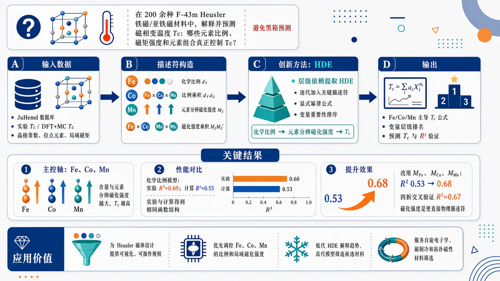
研究问题如何在 200 余种 F-43m Heusler 铁磁/亚铁磁材料中，解释并预测磁相变温度 Tc 的材料来源：哪些元素比例、磁矩强度和元素组合真正控制 Tc，而不是只得到神经网络式黑箱预测。创新方法提出用层级依赖提取 HDE 作为可解释符号回归：逐代加入最重要描述符，把 Tc 写成显式幂律公式，并自然给出变量重要性排序；Aha 点是把“化学比例 → 元素分辨磁化强度 → Tc”串成物理链条，用 MFe、MCo、MMn 替代纯化学比例后既更符合磁矩消失则 Tc 消失的物理边界，也提高预测力。工作流程输入 JuHemd 数据库中的 Heusler 化合物、实验 Tc、DFT+Monte Carlo 计算 Tc、晶格常数、位点元素和局域磁矩；构造化学比例 dY、比例乘积 dYdZ、元素分辨磁化强度 MZ、磁化强度乘积 MZMZ′；HDE 从第一代到第三代依次筛选主导描述符并拟合幂律表达式；输出 Fe/Co/Mn 主导的 Tc 公式、变量层级排名、预测 Tc 与 R² 验证结果。关键结果Tc 的主控轴稳定指向 Fe、Co、Mn：它们的含量越高、对应元素分辨磁化强度越大，Tc 越高。三代化学比例模型在实验 Tc 上 R²=0.60、计算 Tc 上 R²=0.53，且实验与计算得到相同函数结构；改用 MFe、MCo、MMn 描述计算 Tc 后，R² 从 0.53 提升到 0.68，四折交叉验证 R²=0.67，说明磁化强度是更直接的物理描述符。应用价值为 Heusler 磁体设计提供可视化、可操作规则：优先调控 Fe、Co、Mn 的比例和局域磁化强度来提高或定制 Tc；用低代 HDE 公式解释材料趋势，用高代模型辅助筛选候选材料；把磁相变温度预测从高精度黑箱推进到可解释的计算材料设计工具，可服务自旋电子学、磁制冷和拓扑磁性材料筛选。第一部分：核心概览 (Overview)
HDE（hierarchical dependence extraction）被用于解析 200 余种 F(øverline4)3m Heusler 磁体的磁相变温度 (T_c)，同时覆盖实验 (T_cm̊ exp) 与 DFT+Monte Carlo 计算 (T_cm̊ calc)。核心贡献在于：在保持接近神经网络、随机森林等黑箱模型预测精度的同时，给出可解释、层级排序、显式幂律形式的 (T_c) 表达式。结果显示 Fe、Co、Mn 含量及其对应的元素分辨磁化强度是决定 (T_c) 的主导变量；用磁化强度描述 (T_cm̊ calc) 的 (R²) 从化学比例模型的 0.53 提升至 0.68。该工作把 Heusler 合金 (T_c) 预测从“高精度黑箱”推进到“可解释材料设计规则”。
---
第二部分：结构化快速回顾
《Interpretable machine learning of magnetic transition temperature in Heusler magnets via hierarchical dependence extraction》（None，）
背景
Heusler 化合物具有丰富的铁磁、亚铁磁、反铁磁、非共线磁序、拓扑自旋纹理等性质，磁相变温度跨度约 (T_csimeq 10) K 到 1261 K。既有机器学习能预测 (T_c)，但常缺乏物理可解释性。
方法
使用 JuHemd 数据库，分析实验数据与 GGA 计算数据。目标变量为 (T_cm̊ exp) 或 (T_cm̊ calc)。描述符包括元素化学比例 (d_Y)、比例乘积 (d_Yd_Z)、元素分辨磁化强度 (M_Z)、磁化强度乘积 (M_ZMZ')。核心算法为 HDE，通过逐代加入单描述符幂律函数构造显式模型。
结果
(T_c) 主要随 Fe、Co、Mn 含量增加而升高。三代 HDE 化学比例模型给出 (R²⁼⁰.60)（实验）和 (R²⁼⁰.53)（计算）。用 (Mₘ̊ Fₑ, Mₘ̊ Cₒ, Mₘ̊ Mₙ) 描述 (T_cm̊ calc) 时，三代模型 (R²⁼⁰.68)，优于化学比例模型。
讨论
实验与计算模型在三代 HDE 中得到相同函数结构，说明 DFT+Monte Carlo 捕捉到与实验一致的主导物理规律。磁化强度模型更物理，因为 (T_c) 应在磁矩消失时趋于消失，而纯化学比例模型存在有限截距。
局限
分析限定于共线铁磁与亚铁磁 Heusler 合金；非共线、螺旋、反铁磁及 skyrmion/antiskyrmion 体系未被纳入。化学比例模型只能给出定性描述，三代 (R²) 约 0.53–0.60。实验条目中没有逐元素磁矩，因此磁化强度模型只能用于计算数据。
结论
HDE 能以显式、可排序、可物理解释的形式揭示 (T_c) 的材料依赖性。Fe、Co、Mn 的化学比例与磁化强度构成 Heusler 磁体 (T_c) 设计的主轴，为面向目标相变温度的计算材料筛选提供可解释工具。
---
第三部分：逐章节冷凝解析 (Section-by-Section Condensing)
Abstract
Interpretable machine learning targets Heusler magnetic transition temperatures
研究对象为铁磁与亚铁磁 Heusler 化合物的磁相变温度 (T_c)，核心工具是可解释机器学习。摘要直接界定目标为解析 (T_c) 的材料依赖性：*"We employ interpretable machine learning to analyze the material dependence of the magnetic transition temperature (T_c) in ferromagnetic and ferrimagnetic Heusler compounds."*
Dataset spans more than 200 structurally related candidate materials
数据覆盖超过 200 个候选材料，晶体结构相同但化学式与晶格常数不同。统一结构为 F(øverline4)3m，这一点降低了结构自由度对机器学习的干扰，使化学组成与磁性变量更容易被识别：*"For over 200 candidate materials with the same (Føverline43m) crystal structure but different chemical formulae and lattice constants"*。
Experimental and computed transition temperatures are jointly analyzed
(T_c) 同时来自实验与计算。计算 (T_c) 通过经典 Monte Carlo 模拟获得，磁相互作用来自 ab initio 计算：*"we consider both experimental (T_c) and those computed via classical Monte Carlo simulations using magnetic interactions derived from ab initio calculations."*
HDE extracts leading-to-higher-order dependencies
HDE 用于按层级提取 (T_c) 对化学组成和磁矩的依赖，并据此构造显式表达式：*"We use the hierarchical dependence extraction (HDE) procedure ... to determine how (T_c) depends on chemical composition and magnetic moments, from leading to higher-order effects, and use these dependencies to construct an explicit expression for (T_c)."*
Interpretability is achieved without sacrificing machine-learning-level accuracy
HDE 的预测精度与神经网络、随机森林等机器学习方法相当，同时保持完全可解释：*"the HDE framework predicts (T_c) with accuracy comparable to other machine-learning approaches such as neural network and random forest algorithms while remaining fully interpretable."*
Fe, Co, and Mn proportions dominate transition temperature
最重要的物理规律是 (T_c) 主要由 Fe、Co、Mn 比例控制，且随这些元素浓度增加而系统升高：*"(T_c) is primarily governed by the proportions of Fe, Co, and Mn, increasing systematically with their concentration."*
---
I Introduction
Heusler compounds form a broad ordered-intermetallic materials family
Heusler 化合物最早源自铁磁合金 Cu(₂)MnAl，属于有序金属间化合物大家族：*"Heusler compounds constitute a large family of ordered intermetallics, first identified in the ferromagnetic alloy (Cu₂MnAl)."*
Half-Heusler and full-Heusler phases have distinct cubic structures
半 Heusler 与全 Heusler 分别对应 C1(_b) 非中心对称结构与 L2(₁) 中心对称立方结构：*"The half-Heusler and full-Heusler phases crystallize in the noncentrosymmetric C1b and centrosymmetric L21 cubic structures, respectively."*
Electronic properties span half-metallicity, topology, Hall responses, and thermoelectricity
Heusler 材料可呈现半金属性：一个自旋通道金属、另一个自旋通道有带隙；也可承载 Weyl/Dirac 半金属拓扑相，带来大的异常霍尔、自旋霍尔、拓扑霍尔效应；部分体系还是热电候选材料：*"Some half-metallic Heuslers show metallic behavior in one spin channel and a band gap in the other"*；*"They can also host topological electronic phases, including Weyl and Dirac semimetals"*；*"certain Heuslers have been identified as promising thermoelectric materials."*
Magnetic ground states are highly diverse
Heusler 化合物可呈现铁磁、亚铁磁、反铁磁基态；部分体系如 Pt(₂)MnGa 与 Mn(₂)RhSn 具有复杂非共线和长程螺旋磁结构；另一些可承载拓扑 antiskyrmion 自旋纹理：*"Heusler compounds display a variety of ordered states, including ferromagnetic, ferrimagnetic, and antiferromagnetic ground states."*；*"Some compounds, such as Pt2MnGa and Mn2RhSn, exhibit complex noncollinear and long-range helical magnetic structures"*。
Transition temperatures cover an exceptionally wide range
Heusler 磁体 (T_c) 范围约从 10 K 到 1261 K，显示出巨大材料可调性：*"Reported transition temperatures span a broad range, from approximately (T_csimeq 10) K to 1261 K."*
Applications include spintronics, magnetocalorics, and topological spintronics
半金属性与高自旋极化用于自旋注入等自旋电子器件；Ni-Mn 基 Heusler 的巨反磁热效应适合固态磁制冷；非共线与手性 Heusler 磁体中 skyrmion/antiskyrmion 可作为纳米信息载体：*"The half-metallicity and high spin polarization are exploited for spintronic devices, e.g. spin injection."*；*"Ni-Mn-based Heuslers exhibit a giant inverse magnetocaloric effect"*；*"skyrmions and antiskyrmions act as nanoscale information carriers for racetrack-type devices."*
First-principles studies already provide microscopic magnetic insight
DFT 可描述磁矩形成、电子结构、交换相互作用，并通过自旋螺旋计算提取交换参数。对 Co(₂)XY 与 Ni(₂)MnX 合金，平均场 (T_c) 可与实验较好一致：*"Density functional theory (DFT) provides a microscopic description of magnetic moment formation, electronic structure, and the nature of the exchange interactions"*；*"leads to accurate mean-field estimates of (T_c) compared to experiments."*
High-throughput DFT has expanded Heusler screening
已有高通量 DFT 覆盖 A(₂)BC 家族，其中 A、B、C 来自 Sc 到 Hg 的 28 种过渡金属（排除 Tc），并要求 A 或 B/C 位至少有一个 V 到 Ni 的磁性 3d 原子，共检查 686 个化合物：*"A total of 686 compounds were inspected focusing on the structural stability and magnetic ordering."*
Recent screening incorporated phonon stability and magnetic transition temperatures
Xiao 与 Tadano 最近开展有序三元 Heusler 高通量第一性原理筛选，显式考虑声子稳定性与磁相变温度，识别出稳定磁性候选物，包括补偿亚铁磁体：*"Very recently, Xiao and Tadano performed high-throughput first-principles screening of ordered ternary Heusler alloys, explicitly considering phonon stability and magnetic transition temperatures"*。
Machine learning is needed for broad trend extraction
单个实验或 ab initio 研究能识别具体材料，但若要获得 (T_c) 如何依赖原子种类、化学有序性、晶格常数的总体规律，则需要机器学习：*"obtaining a broader understanding of how (T_c) depends on atomic species, chemical order, and lattice constant benefits from machine-learning methods, which can extract these trends from large amounts of data."*
JuHemd provides both experimental and DFT+Monte-Carlo transition temperatures
JuHemd 数据库汇编实验数据和 DFT+Monte Carlo 结果，是本研究的数据基础：*"databases such as JuHemd, which compiles experimental data and DFT+Monte-Carlo results; we use JuHemd in this work."*
Existing machine-learning models can predict (T_c) but often lack interpretability
过去用于铁磁体和 Heusler 的机器学习模型 (R²) 约为 0.53–0.93，但高精度模型通常为黑箱，难给出明确物理表达式：*"previous studies on ferromagnets and Heusler magnets report (R²) values in the range 0.53 to 0.93"*；*"methods that achieve the best predictive performance are often implicit, black-box models that do not provide an explicit, physically meaningful expression for (T_c)."*
Explicit models can be too complex to yield clear design rules
闭式表达式并不一定可解释；若依赖太多描述符或形式过于复杂，就无法定量排序控制变量：*"explicit models can return closed-form expressions, but these are frequently overly complex or depend on many descriptors."*；*"This prevents a clear, quantitative ranking of which variables control (T_c)"*。
HDE provides symbolic, monotonic, ranked, interpretable regression
HDE 是监督符号回归方法，逐步加入按重要性排序的单描述符单调函数；简单幂律形式便于与物理标度律比较，且结构化搜索比暴力搜索或进化算法更便宜：*"HDE is a supervised symbolic-regression method that constructs an interpretable model iteratively by adding monotonic, single-descriptor functions ranked by importance."*；*"Simple power-law forms keep the model easy to interpret and comparable with physical scaling laws"*。
Collinear FM and FiM compounds allow scalar magnetic-moment descriptors
分析限定为共线铁磁和亚铁磁 Heusler 合金，因此磁矩可视作沿 (z) 方向的标量：*"We restrict our study to collinear ferromagnetic (FM) and ferrimagnetic (FiM) Heusler alloys, for which the magnetic moments can be treated as scalar quantities (along the z direction)."*
Co(₂)FeSi demonstrates the high-(T_c) end of the dataset
相关材料 (T_c) 分布很宽，Co(₂)FeSi 可达到约 1100 K：*"reaching (T_csimeq 1100) K for Co2FeSi"*。
Magnetic moments are physically motivated intermediate variables
用元素分辨磁矩幅值作为中间量的依据来自交换相互作用解析展开、平均场理论、RPA 对 (T_c) 的表达式；这些理论都提示 (T_c) 与磁矩幅值相关：*"This choice of intermediate quantities is motivated by explicit expressions for (T_c) that involve the magnetic moments"*。
---
Figure 1: Crystal structure of Heusler compounds
The unified chemical formula is (X₁X₂YZ)
结构统一表示为 (X₁X₂YZ)，四个位点可由磁性 3d 过渡金属或 JuHemd 中其他元素占据：*"The general chemical formula is denoted as X1X2YZ, where X1, X2, Y, and Z are either magnetic transition metal elements with an open 3d shell ... or other chemical elements included in the JuHemd database"*。
The space group is (Føverline43m) No. 216
所有结构图对应空间群 F(øverline4)3m，编号 216：*"The space group is (Føverline43m) (No. 216)."*
Wyckoff positions define four crystallographic sites
四个位点坐标分别为 (Y:(0,0,0))、(X₁:(1/4,1/4,1/4))、(Z:(1/2,1/2,1/2))、(X₂:(3/4,3/4,3/4))：*"the Wyckoff positions of Y, X1, Z, and X2 are ((0,0,0)), ((1/4,1/4,1/4)), ((1/2,1/2,1/2)), and ((3/4,3/4,3/4)), respectively."*
Primitive vectors generate the unit cell volume used later
原胞基矢为 (bf a=[0,a/2,a/2])、(bf b=[a/2,0,a/2])、(bf c=[a/2,a/2,0])，后续磁化强度定义中使用 (Vₘ̊ cₑₗₗ=a³/4)：*"We show the primitive vectors that span the unit cell"*。
---
II Methodology
The workflow has three steps
方法流程包括：从 JuHemd 数据库出发；选择目标 (y=T_c) 并构造描述符 (bf x)；应用 HDE 获取 (T_c) 依赖关系：*"We start from the JuHemd database, then select the target (y=T_c) and build descriptors (bf x=xᵢ), then apply the HDE to obtain the dependence of (T_c)."*
---
II.1 Database
JuHemd contains 400 Heusler compounds
JuHemd 包含 (N_c=400) 个 Heusler 化合物，既有实验物理量，也有基于 DFT 的 LDA/GGA 结果：*"The JuHemd database contains material-dependent physical quantities for a collection of (N_c=400) Heusler compounds."*；*"It includes both experimentally measured quantities and ab initio results obtained using DFT together with the local density approximation (LDA) and the generalized gradient approximation (GGA)"*。
Experimental FM/FiM subset contains 186 compounds and 653 entries
实验数据中，具有 FM 或 FiM 磁序的化合物数为 (N_c=186)，条目数为 (Nₘ̊ ₑₙₜ=653)：*"For the experimental dataset, (N_c=186) compounds exhibit FM or FiM order, giving (Nₘ̊ ₑₙₜ=653) entries."*
Calculated GGA FM/FiM subset contains 206 compounds and 372 entries
计算数据中，具有 FM 或 FiM 磁序的化合物数为 (N_c=206)，条目数为 (Nₘ̊ ₑₙₜ=372)：*"For the calculated dataset, (N_c=206) compounds exhibit FM or FiM order, giving (Nₘ̊ ₑₙₜ=372) entries."*
Non-FM/FiM entries are a small minority
非 FM 或 FiM 化合物条目仅约 36，因此 FM/FiM 是数据库主体：*"The number of entries for compounds that are not FM or FiM is only (simeq 36), so that FM and FiM compounds constitute the vast majority of the database."*
Multiple entries per compound encode experimental or structural variability
同一化合物可有多个条目，化学式相同，但原子排列或实验条件可能不同，导致 (T_c) 和中间量不同：*"For a given compound, multiple entries correspond to different experiments or calculations."*；*"the atomic arrangement and/or experimental conditions may differ, leading to different values of (T_c) and intermediate quantities."*
Each entry contains transition temperature, magnetic order, and lattice constant
每个条目包括 (T_c)、低温磁序、晶格常数 (a)。实验条目记为 (T_cm̊ exp)，GGA 条目记为 (T_cm̊ calc)：*"Each entry includes the value of (T_c) (denoted as (T_cm̊ exp) for an experimental entry and (T_cm̊ calc) for a GGA entry), the magnetic ordering at temperatures (T<T_c), and the lattice constant (a)."*
Calculated entries contain site-resolved chemical configurations and magnetic moments
计算条目含每个位点 (i=1,2,3,4) 的元素与磁矩；无序时每个位点有 (N(i)) 个配置，配置 (j) 包含 ((Yᵢ,ⱼ,cᵢ,ⱼ,μY,ᵢ,ⱼ))：*"Calculated entries also include the element and magnetic moment on each site (i=1,2,3,4) in the unit cell"*；*"for each configuration (j=1,dots,N(i)) the entry includes ((Yᵢ,ⱼ,cᵢ,ⱼ,μY,ᵢ,ⱼ))"*。
DFT workflow uses full-potential all-electron KKR Green functions
JuHemd 计算采用全势全电子 Korringa-Kohn-Rostoker 绿函数方法与 GGA 交换关联泛函：*"The electronic structure calculations rely on the full potential all-electron Korringa-Kohn-Rostoker Green function method using the GGA"*。
Exchange interactions are mapped to a classical Heisenberg model
ab initio 哈密顿量通过无穷小旋转方法映射到局域自旋的经典 Heisenberg 模型：*"The mapping of the ab initio Hamiltonian onto a classical Heisenberg model with localized spins is done using the infinitesimal rotation method."*
Monte Carlo simulations provide calculated transition temperatures
经典自旋模型由 Monte Carlo 模拟求解以得到 (T_cm̊ calc)：*"The spin model Hamiltonian is then solved using Monte-Carlo simulations to evaluate (T_cm̊ calc)."*
The Heisenberg assumption neglects longitudinal moment fluctuations
Heisenberg 模型假设磁矩纵向涨落可忽略，即局域磁矩稳健：*"the Heisenberg Hamiltonian assumes that longitudinal fluctuations of the magnetic moments can be neglected, i.e., the magnetic moments are local and robust."*
---
II.2 Choice of target and descriptors
Targets are experimental or calculated transition temperatures
目标变量 (y) 分别设为 (T_cm̊ calc) 或 (T_cm̊ exp)：*"The target (y) is the calculated (experimental) magnetic transition temperature (T_cm̊ calc) ((T_cm̊ exp))."*
Descriptor choice prioritizes experimentally controllable variables
描述符优先选择实验可控物理量，首先是元素化学比例 (d_Y)：*"The choice of descriptors (bf x=xᵢ) is motivated by the preference for physical quantities that can be controlled experimentally."*
Chemical proportion (d_Y) takes discrete values in four-site Heusler cells
(d_Yin[0,1])，对四原子 Heusler 单胞可能取 0、0.25、0.50、0.75，因为单胞有 (Nₘ̊ ₛᵢₜₑₛ=4) 个原子：*"For Heusler compounds, the possible values of (d_Y) are 0, 0.25, 0.50, and 0.75, because there are (Nₘ̊ ₛᵢₜₑₛ=4) atoms in the unit cell"*。
Chemical proportion is computed from site occupations and concentrations
[
dₘ̊ Y=frac1Nₘ̊ ₛᵢₜₑₛsumᵢNₘ̊ ₛᵢₜₑₛsumⱼ₌₁N⁽ⁱ⁾δₘ̊ Y,ₘ̊ Yᵢ,ⱼcᵢ,ⱼ.
]
该式考虑化学无序中的位点浓度 (cᵢ,ⱼ)：*"The value of (d_Y) is straightforwardly deduced from the chemical formula; it is also possible to express (d_Y) as..."*
Element-resolved magnetization amplitudes are introduced as intermediate descriptors
为识别哪些元素控制 (T_c)，总磁化 (M) 被分解为元素贡献，使用元素分辨磁化强度 (M_Z)：*"we decompose the total magnetization (M) into its elemental contributions and use the element-resolved magnetization amplitude (M_Z) as a descriptor of the element-specific influence on (T_c)."*
(M_Z) is volume-normalized and uses absolute local moments
[
Mₘ̊ Z=frac1Vₘ̊ cₑₗₗsumᵢNₘ̊ ₛᵢₜₑₛsumⱼN⁽ⁱ⁾
δₘ̊ Z,ₘ̊ Zᵢ,ⱼcᵢ,ⱼ|μₘ̊ Z,ᵢ,ⱼ|,
quad Vₘ̊ cₑₗₗ=a³/4.
]
该定义将元素 Z 在所有位点和无序配置中的磁矩幅值按浓度求和后除以原胞体积：*"we therefore define (M_Z) as..."*；*"where (Vₘ̊ cₑₗₗ=a³/4) is the volume of the unit cell generated by the primitive vectors in Fig. 1."*
Magnetization amplitudes are indirectly controllable through chemical formula
(M_Z) 不能直接按化学式显式给出，因为局域磁矩依赖元素、位点和化学环境；但可通过化学配比间接调控：*"(M_Z) is indirectly controllable by tuning the chemical formula, since (|μZ,ᵢ,ⱼ|) implicitly depends on the chemical concentration (cᵢ,ⱼ) and element (Zᵢ,ⱼ) on site (i)"*。
Mean-field theory and RPA motivate magnetic-moment descriptors
平均场和 RPA 的 (T_c) 解析表达式显示，(T_c) 随磁矩幅值标度并在磁矩消失时消失：*"we find that (T_c) scales with the magnetic moment amplitude, and vanishes when the latter vanishes."*
Only open-shell 3d elements Ti–Ni are treated as magnetically active
(M_Z) 限制在 Ti 到 Ni 的开放 3d 壳层元素，因为它们构成 Heusler 中的主要磁性子集：*"we restrict (M_Z) to the subset Z (the elements with open 3d shell from Ni to Ti), which is the magnetically active subset in Heusler compounds."*
Small induced moments on non-3d active sites are excluded
非 Z 位点可能有小诱导磁矩，典型幅值 (łesssim 0.1μ_B)，但这些磁矩由邻近磁性 Z 位点诱导，不独立：*"Small induced magnetic moments whose amplitude is typically (łesssim 0.1μ_B) may appear on non-Z sites"*；*"the induced magnetic moments are not independent from the Z subset"*。
Moment thresholds distinguish robust and induced magnetic moments
即使在 Z 子集中，也可能有本征稳健磁矩或诱导小磁矩。幅值低于阈值 (μₘ̊ ₜₕᵣ) 的磁矩被置零，不计入 (M_Z)：*"only moments whose amplitude exceeds a given threshold (μₘ̊ ₜₕᵣ) are included in (M_Z), while smaller moments are considered induced and are neglected"*。
Two thresholds are tested
阈值取 (μₘ̊ ₜₕᵣ=0μ_B) 与 (μₘ̊ ₜₕᵣ=0.5μ_B)，后续结果显示 HDE 对该选择不敏感：*"In this work, two threshold moments are considered: (μₘ̊ ₜₕᵣ=0μ_B) and (μₘ̊ ₜₕᵣ=0.5μ_B)."*；*"the HDE result has little dependence on the choice of (μₘ̊ ₜₕᵣ)."*
Pairwise products are added as higher-information descriptors
实际 HDE 不只用单变量，还加入成对乘积：化学描述符为 (bf x=d_Y,d_Yd_Z)，磁化描述符为 (bf x=M_Z,M_ZMZ')：*"we include not only the chemical proportions and magnetization amplitudes but also their pairwise products, which carry additional information."*
---
II.3 Hierarchical dependence extraction
HDE constructs a nonlinear descriptor (z) and an affine prediction
HDE 从目标 (y) 和描述符 (bf x) 出发，构建非线性 HDE 描述符 (z)，再用 (ym̊ HDE=a+bz) 近似目标：*"This procedure constructs the HDE descriptor (z) which captures the nonlinear dependence of (y) on the (xᵢ), then the HDE expression (ym̊ HDE) which is an affine function of (z)"*。
Generation 1 selects the most important descriptor
第一代形式为
[
z₍₁₎=xᵢ_₁α₁.
]
通过最大化 (|h̊o[y,z₍₁₎]|) 选择 (i₁) 和 (α₁)，其中 (h̊o) 是 Pearson 相关系数：*"At generation (g=1), the expression of (z) is (z₍₁₎=xᵢ_₁α₁)"*；*"optimized to maximize the fitness function (|h̊o[y,z₍₁₎]|)"*。
Higher generations add ranked correction factors
第 (gge2) 代形式为
[
z₍g₎=z₍g₋₁₎m̊ opt
łeft[
1+ζ_gfracxᵢ_gα_g[z₍g₋₁₎m̊ opt]β_g
i̊ght].
]
每一代选择一个新描述符 (xᵢ_g)，并将其解释为第 (g) 重要变量：*"The descriptor (xᵢ_gm̊ opt) is identified as the (gm̊ th) most important descriptor for (y)."*
(β_g) is binary and (α_g) is constrained positive
(β_g) 限制为 0 或 1；(α_g>0) 用于避免化学比例为 0 时出现发散：*"The value of (β_g) is restricted to be either 0 or 1"*；*"we impose (α_g>0) in this paper to avoid divergences when the value of the chemical descriptor (xᵢ_g) becomes zero"*。
Prediction quality is measured by (R²)
第 (g) 代 HDE 表达式为
[
ym̊ HDE₍g₎=a₍g₎+b₍g₎zm̊ opt₍g₎.
]
决定系数为
[
R²₍g₎=|h̊o[y,ym̊ HDE₍g₎]|²⁼|h̊o[y,zm̊ opt₍g₎]|².
]
*"We denote the coefficient of determination at generation (g) as (R²₍g₎=|h̊o[y,ym̊ HDE₍g₎]|²)"*。
HDE optimizes (R²) directly, unlike many post-evaluated models
其他机器学习常把 (R²) 作为优化后的评价指标，而 HDE 把它等价地作为适应度函数：*"they treat (R²) as a post-optimization metric, while HDE treats (R²) as the fitness function"*。
(R²simeq0.8-0.9) is characterized as reasonably accurate
尺度无关的 (R²) 便于解释；通常 (R²simeq0.8-0.9) 表明对 (y) 的描述相当准确：*"(R²₍g₎simeq 0.8-0.9) usually means the description of (y) is reasonably accurate at generation (g)."*
MAE is also computed
平均绝对误差定义为
[
m̊ MAE₍g₎=frac1Nₘ̊ ₑₙₜsumₑ₌₁Nₘ̊ ₑₙₜ
|y[e]-ym̊ HDE₍g₎[e]|.
]
*"For completeness, we also compute and show the mean average error (MAE)"*。
Iterations stop after convergence, usually by 10–30 generations
收敛值记为 (Rᵢₙfty²)，实际在 (głesssim10-30) 达到；主要物理依赖通常在低代数 (głesssim3) 已体现：*"In practice, (R²ᵢₙfty) is reached at (głesssim 10-30)"*；*"The dependence of (y) is mainly contained in (ym̊ HDE₍g₎) at low (głesssim3)"*。
Overfitting risk is controlled by entry-to-parameter ratios
在 (głe30) 时参数数 (Nₘ̊ ₚₐᵣ=2g-1łe59)。计算条目 (Nₘ̊ ₑₙₜ/Nₘ̊ ₚₐᵣge6.3)，实验条目 (ge11.1)，远高于过拟合常见的 (sim1)：*"the number of (α) and (ζ) parameters is (Nₘ̊ ₚₐᵣ=2g-1łe59)"*；*"Overfitting typically happens when (Nₘ̊ ₑₙₜ/Nₘ̊ ₚₐᵣsim1), which is not the case here."*
Score analysis tests descriptor-selection robustness
固定代数 (g)，描述符得分为
[
S₍g₎(xᵢ₎₌|h̊o[y,zⁱ₍g₎]|²/|h̊o[y,zm̊ opt₍g₎]|².
]
最优描述符得分为 1，其他描述符越接近 1，竞争越强：*"For the optimal (xᵢ_gm̊ opt), the score is always 1. For other descriptors, the score is lower than 1."*
Four-fold cross-validation tests expression robustness
采用 (k=4) 折交叉验证：数据随机打乱分成 4 折，每次用 3 折训练、1 折测试，最后计算 (R²₍g₎ₘ̊ CV)：*"we examine if the expression of (ym̊ HDE₍g₎) for (głe3) is robust, by performing the 4-fold cross-validation."*
---
III Hierarchical dependence of (T_c)
The dependency map proceeds from chemistry to magnetization to (T_c)
分析框架先考察 (T_cm̊ exp) 和 (T_cm̊ calc) 对化学比例 (d_Y)、(d_Yd_Z) 的依赖；再分析 (T_cm̊ calc) 对 (M_Z)、(M_ZMZ') 的依赖；最后考察 (M_Z) 对化学比例的依赖：*"First, the dependence of the experimental and calculated magnetic transition temperatures ... on (d_Y) and (d_Yd_Z) is examined."*；*"Second, the dependence of (T_cm̊ calc) on the element-resolved magnetization amplitudes (M_Z) and their products ... is analyzed."*
---
III.1 Dependence of (T_c) on chemical proportions
Two independent HDE runs compare experimental and GGA datasets
分别对实验条目和 GGA 计算条目进行 HDE；目标变量为 (T_cm̊ exp) 与 (T_cm̊ calc)：*"We perform two independent HDE runs, one using the experimental entries and the other using the computed GGA entries."*
Chemical descriptor set includes proportions and pairwise products
描述符为 (bf x=d_Y,d_Zd_Y)，其中 Y 为 JuHemd 中任意元素，Z 为 Ti–Ni 开壳 3d 过渡金属：*"The descriptor set (bf x=d_Y,,d_Zd_Y) consists of the chemical proportions (d_Y) and their pairwise products (d_Zd_Y)."*
Dominant chemical control comes from Fe, Co, and Mn
第一条核心结果：(T_c) 主要依赖 Fe、Co、Mn 分数，并随这些元素浓度增加而升高：*"Our first result is that (T_c) depends primarily on the Fe, Co, and Mn fractions, and increases with increasing concentration of these elements."*
Third-generation chemical HDE has the same form for experiment and calculation
三代 HDE 表达式为
[
(T_c)m̊ HDE₍₃₎
=a₀₊ₐ₁łeft[
dₘ̊ Cₒ,Fₑα₁
+a₂dₘ̊ Cₒ,Mₙα₂
+a₃dₘ̊ Fₑα₃
i̊ght],
]
其中 (dₘ̊ Cₒ,Fₑ) 与 (dₘ̊ Cₒ,Mₙ) 对应化学比例乘积型描述符。该结构同时适用于实验和计算数据：*"For (g=3) (third generation), the HDE expressions for both (T_cm̊ exp) and (T_cm̊ calc) are given by..."*
Experimental chemical model coefficients quantify the Fe-Co-Mn hierarchy
实验 (T_cm̊ exp) 三代模型参数为：(a₀₌₃₆₇.50) K，(a₁₌₈₉₁₅₉.02) K，(a₂₌₀.242)，(a₃₌₀.0401)，(α₁₌₂.34)，(α₂₌₁.89)，(α₃₌₇.23)，(R²⁼⁰.60)。表格说明：*"The coefficients (a₀) and (a₁) are in K while (a₂) and (a₃) are dimensionless."*
Calculated chemical model coefficients differ numerically but preserve the same descriptor structure
计算 (T_cm̊ calc) 三代模型参数为：(a₀₌₃₄₁.06) K，(a₁₌₅₇₁₇₃₃.22) K，(a₂₌₀.00489)，(a₃₌₀.00239)，(α₁₌₃.41)，(α₂₌₁.11)，(α₃₌₃.38)，(R²⁼⁰.53)。相同函数结构显示实验与 GGA 编码同一主导描述符结构：*"the two HDE expressions at (g=3) share the same functional form and differ only in the fitted coefficients"*。
Three-generation chemical models are qualitative rather than high-accuracy
三代模型的 (R²) 为 0.60 与 0.53，只能给出定性描述：*"These values indicate that the (g=3) HDE expressions provide only a qualitative description of (T_c)"*。
Consistency between experiment and calculation supports DFT+Monte Carlo reliability
实验和计算三代模型具有同一表达形式、Fe-Co-Mn 等值面结构相近，说明 DFT+Monte Carlo 程序给出稳定且有物理意义的 (T_c) 估计：*"This consistency indicates that the computational DFT+Monte Carlo procedure provides a stable and physically meaningful estimate of (T_c)."*
Score analysis supports robust descriptor selection
实验数据第二高得分为 (g=1:0.56)、(g=2:0.74)、(g=3:0.86)；计算数据为 (g=1:0.88)、(g=2:0.67)、(g=3:0.90)。这些值均低于 1，说明最优描述符没有几乎等价的竞争者：*"the second-largest score values remain well below 1, indicating that no alternative descriptor competes closely with the optimal one."*
Four-fold cross-validation nearly matches training performance
交叉验证给出 (R²₍₃₎ₘ̊ CV=0.59)（实验）与 0.51（计算），接近训练值 (R²₍₃₎=0.60) 与 0.53，说明模型没有明显依赖特定数据划分：*"In the 4-fold cross-validation, we obtain (R²₍₃₎CV=0.59) for (T_cm̊ exp) and (R²₍₃₎CV=0.51) for (T_cm̊ calc), close to the corresponding training values"*。
Pure chemical proportions leave an unphysical finite offset
仅用化学比例描述 (T_c) 存在有限截距问题。对 (T_cm̊ calc)，(a₍₃₎simeq341) K，(a₍₃₀₎simeq241) K；当所有磁性化学比例为零、(zm̊ opt₍g₎=0) 时，模型仍预测非零 (T_c)：*"the offset (a₍g₎) in the HDE expression remains finite even in the limit (gi̊ghtarrowinfty)"*；*"Consequently, (T_cm̊ calc) does not vanish when all the magnetic chemical proportions are zero"*。
Magnetization-amplitude descriptors address the finite-offset limitation
该有限截距问题在下一节通过用元素分辨磁化强度表达 (T_cm̊ calc) 来处理：*"This limitation is addressed in the next subsection by expressing (T_cm̊ calc) in terms of the element-resolved magnetization amplitudes."*
---
Figure 3: Chemical-proportion HDE results
Isosurfaces visualize Fe-Co-Mn control of (T_c)
图 3(a,b) 展示三代 HDE (T_cm̊ exp) 与 (T_cm̊ calc) 关于 (dₘ̊ Fₑ)、(dₘ̊ Cₒ)、(dₘ̊ Mₙ) 的等值面：*"The panels (a, b) show the isosurfaces of the HDE expressions ... as a functions of the chemical proportions (dₘ̊ Fₑ), (dₘ̊ Cₒ), and (dₘ̊ Mₙ)"*。
Generation 3 captures dominant trends, generation 30 gives converged predictions
图 3(c,d) 是三代实际值与预测值比较，图 3(e,f) 是 30 代收敛预测。低代数负责物理解释，高代数负责预测收敛：*"The (g=3) expressions capture the dominant physical trends, while the (g=30) expressions are the converged HDE predictions."*
---
III.2 Dependence of calculated (T_c) on element-resolved magnetization amplitudes
Calculated (T_c) is modeled using (M_Z) and (M_ZMZ')
GGA 计算 (T_cm̊ calc) 用元素分辨磁化强度及其乘积描述：(bf x=M_Z,M_ZMZ')，其中 Z 与 Z′ 为 Ti–Ni 开壳 3d 元素：*"The descriptor set (bf x=M_Z,,M_ZMZ') contains the amplitudes (M_Z) defined in Eq. (2) and their pairwise products"*。
Fe, Co, and Mn magnetization amplitudes dominate calculated (T_c)
(T_cm̊ calc) 主要依赖 Fe、Co、Mn 的磁化强度，并随它们增加而升高：*"We find that (T_cm̊ calc) depends mainly on the magnetization amplitudes of Fe, Co, and Mn, and increases with them."*
Third-generation magnetization model has a simple additive power-law form
三代模型为
[
(T_cm̊ calc)m̊ HDE₍₃₎
=a₀₊ₐ₁łeft[
Mₘ̊ Fₑα₁
+a₂Mₘ̊ Cₒα₂
+a₃Mₘ̊ Mₙα₃
i̊ght].
]
该形式比化学比例模型更贴近磁性物理，因为 (M_Z) 是磁有序强度的直接表征：*"For (g=3), the HDE expression can be written in the common form..."*
Moment-threshold robustness is explicitly tested
(μₘ̊ ₜₕᵣ=0) 与 (μₘ̊ ₜₕᵣ=0.5μ_B) 两种阈值下模型均得到相近预测，说明小诱导磁矩的处理不改变主要规律：*"The HDE expression is robust with respect to the threshold (μₘ̊ ₜₕᵣ) on the magnetic-moment amplitude."*
Coefficient values across thresholds should not be physically overcompared
由于 (Mₘ̊ Fₑ,Mₘ̊ Cₒ,Mₘ̊ Mₙ) 单位为 (μ_B/ų)，而指数不同会改变系数维度，因此不同阈值下 (a₁,a₂,a₃) 的数值不能直接物理比较：*"the numerical values of (aᵢ,αᵢ) listed in Table 2 for the two thresholds are not directly physically comparable, since the coefficients have different physical dimensions."*
Prediction is the relevant invariant across thresholds
尽管系数维度和数值不完全可比，两种阈值给出的 (T_c) 预测基本不变：*"Although the corresponding coefficients are therefore not physically identical between the two thresholds, their numerical values are close, so the predicted (T_c) from Eq. (13) is essentially unchanged."*
Magnetization descriptors improve (R²) from 0.53 to 0.68
在 (μₘ̊ ₜₕᵣ=0) 下，磁化强度三代模型 (R²₍₃₎=0.68)，高于化学比例三代模型 (R²₍₃₎=0.53)：*"For (μₘ̊ ₜₕᵣ=0), we obtain (R²₍₃₎=0.68), compared with (R²₍₃₎=0.53) in Eq. (12)."*
Magnetization amplitudes are better descriptors than chemical proportions for calculated (T_c)
(T_cm̊ calc) 用磁化强度描述更准确；这符合化学比例结果，因为某元素磁化强度通常随其化学比例升高：*"Thus, (T_cm̊ calc) is described more accurately in terms of the magnetization amplitudes than in terms of the chemical proportions."*；*"the magnetization amplitude of a given element generally increases with its chemical proportion."*
Score analysis again supports robust descriptor selection
磁化强度模型的第二高得分为 (g=1:0.71)、(g=2:0.88)、(g=3:0.94)，均低于 1，说明无候选描述符能与最优描述符近乎等价：*"the second-largest score values are 0.71 at (g=1), 0.88 at (g=2), and 0.94 at (g=3), all well below 1"*。
Four-fold cross-validation confirms similar predictive robustness
磁化模型四折交叉验证 (R²₍₃₎ₘ̊ CV=0.67)，接近训练 (R²₍₃₎=0.68)：*"The 4-fold cross-validation yields (R²₍₃₎CV=0.67), close to (R²₍₃₎=0.68"*。
---
第四部分：深度理解与语言支持 (Understanding & Nuance)
1. 术语解析
Hierarchical dependence extraction (HDE)
学术含义：一种可解释符号回归框架，不是一次性搜索复杂公式，而是逐代添加最有解释力的描述符。
语境细节：hierarchical 强调“按重要性层级进入模型”；dependence extraction 强调“提取依赖关系”，而非仅做预测。关键句为：*"constructs an interpretable model iteratively by adding monotonic, single-descriptor functions ranked by importance."*
微妙差别：HDE 的目标不是找到任意高精度函数，而是找到能按变量重要性排序的显式函数。
Descriptor
学术含义：用于预测目标变量 (y) 的输入特征，例如 (d_Y)、(d_Yd_Z)、(M_Z)、(M_ZMZ')。
语境细节：descriptor 不等于普通“变量”；它通常是经过物理选择、工程化构造、可用于机器学习的材料表征。
微妙差别：chemical proportion 是实验可控 descriptor；magnetization amplitude 是 ab initio 后处理得到的 intermediate descriptor。
Element-resolved magnetization amplitude
学术含义：按元素分解的磁化强度幅值 (M_Z)，体现某一元素对总磁化的贡献。
语境细节：使用 (|μZ,ᵢ,ⱼ|) 而非带符号磁矩，因此适用于铁磁和亚铁磁中不同元素磁矩可能反平行的情况。
微妙差别：magnetization amplitude 强调“幅值”，不是净磁化方向；在 FiM 中这点很关键，否则相反方向磁矩可能抵消，掩盖局域磁性强弱。
Pairwise products
学术含义：两个描述符的乘积，如 (d_Yd_Z)、(M_ZMZ')，用于捕捉二体或协同效应。
语境细节：Heusler 磁性常依赖不同元素之间的交换作用，仅用单元素比例可能遗漏 Fe-Co、Co-Mn 等组合信息。
微妙差别：pairwise product 不一定代表真实物理相互作用项，但为机器学习提供近似表达相互依赖的低阶交互特征。
Coefficient of determination (R²)
学术含义：衡量预测值解释目标方差的比例。
语境细节：HDE 中 (R²⁼|h̊o|²)，直接作为优化目标，而不是事后评价指标。
微妙差别：(R²⁼⁰.53) 或 0.60 在复杂材料数据库中可捕捉主趋势，但不能算高精度；(R²⁼⁰.68) 说明磁化强度确实比化学比例更接近 (T_c) 的直接物理驱动因素。
---
2. 疑难查证
为什么化学比例模型有有限截距是物理问题？
纯化学比例 HDE 模型形式为
[
T_c=a₀₊ₐ₁z.
]
如果所有磁性元素比例都为零，则 (z=0)，模型仍给出 (T_c=a₀)。对计算数据三代模型 (a₀simeq341) K，30 代仍有 (a₀simeq241) K。这意味着一个不含磁性元素的材料仍被预测有几百 K 磁相变温度，物理上不合理。
根源在于：化学比例是间接变量。某元素存在并不保证有稳健局域磁矩；反过来，磁相变温度更直接依赖交换相互作用和磁矩大小。因此 (M_Z) 比 (d_Y) 更接近磁有序的物理本质。
为什么 (M_Z) 使用绝对值 (|μ|)？
铁磁中各磁矩大致同向，带符号求和与绝对值差别不大。亚铁磁中不同子晶格磁矩方向相反，如果直接求和，强磁矩可能互相抵消，导致净磁化很小。但 (T_c) 主要反映磁有序稳定性，不一定由净磁化大小决定；补偿亚铁磁体可以净磁化接近零但 (T_c) 很高。因此使用 (|μ|) 更合理，表征局域磁矩强度而非净磁化。
为什么 Fe、Co、Mn 反复出现为主导元素？
Fe、Co、Mn 是 Heusler 中最常见的强 3d 磁性元素，通常具有较大的局域磁矩和较强交换相互作用。HDE 从实验 (T_cm̊ exp)、计算 (T_cm̊ calc)、化学比例模型、磁化强度模型中都独立恢复 Fe-Co-Mn 主导结构，说明这不是某个数据处理选择造成的偶然结果，而是跨数据源、跨描述符层级稳定出现的规律。
为什么三代 HDE 已经值得关注，即使 (R²) 不高？
三代 HDE 的目标不是最大预测精度，而是提取最主要的物理控制变量。高代数 (g=30) 用于收敛预测，但解释性降低。三代 (R²⁼⁰.53–0.68) 说明少数变量已经解释了很大一部分趋势；剩余误差可能来自晶格常数、位点占据、化学无序、交换路径、实验条件差异、计算近似等复杂因素。
为什么交叉验证 (R²) 接近训练 (R²) 很重要？
如果训练 (R²) 高而交叉验证 (R²) 明显下降，说明模型可能记住了训练数据噪声。化学模型中 (R²₍₃₎ₘ̊ CV=0.59) vs 训练 0.60，计算化学模型 0.51 vs 0.53，磁化模型 0.67 vs 0.68，差距很小，说明三代 HDE 规则具有泛化能力，而非单纯过拟合。
---
第五部分：创新评估与关联 (Synthesis & Novelty)
1. 创新性判断
从黑箱预测转向显式、层级、可解释公式
近 2–5 年材料机器学习常追求预测 (T_c) 的高 (R²)，例如神经网络、随机森林、其他非线性回归可达到较好精度，但难给出可操作的物理表达式。该研究的创新在于用 HDE 同时实现三件事：
- 给出显式表达式；
- 按重要性排序描述符；
- 保持与常见机器学习相近的预测精度。
关键进展不是单纯预测 (T_c)，而是把预测结果转化为材料设计规则：Fe、Co、Mn 含量及磁化强度是首要调控轴。
同时对实验 (T_c) 与 DFT+Monte Carlo (T_c) 做同构解释
很多工作只分析实验数据库或只分析高通量计算结果。这里对 (T_cm̊ exp) 与 (T_cm̊ calc) 分别建模，并发现三代化学比例 HDE 具有相同函数结构。这种“实验—计算结构一致性”增强了结论可信度，也说明 DFT+Monte Carlo 不只是数值拟合，而是捕捉到实验中存在的主导化学规律。
把磁化强度作为中间物理层连接化学组成与 (T_c)
创新点不止于发现 Fe、Co、Mn 重要，还在于建立了两层关系：
[
化学比例 i̊ghtarrow 元素分辨磁化强度 i̊ghtarrow T_c.
]
纯化学比例可实验控制，但物理上间接；元素分辨磁化强度更接近磁有序本质。用 (Mₘ̊ Fₑ,Mₘ̊ Cₒ,Mₘ̊ Mₙ) 后 (R²) 从 0.53 提升到 0.68，说明该中间层确实增强了物理描述能力。
解决了显式模型“太复杂、不便排序”的旧问题
传统符号回归或显式机器学习可能产生复杂公式，包含大量变量，导致难以判断哪些因素真正重要。HDE 通过逐代加入单描述符函数，使第 1、2、3 代变量天然对应最重要、次重要、第三重要因素。这个层级机制直接服务于材料设计：先调 Fe-Co-Mn 主轴，再考虑更高阶修正。
把物理合理性纳入模型评价
化学比例模型存在非零截距，即磁性元素比例为零时仍预测非零 (T_c)。这种问题如果只看 (R²) 可能被忽视。通过引入磁化强度描述符，模型更符合 (T_c) 应随磁矩消失而消失的物理图像。这体现出创新点：可解释机器学习不仅追求统计精度，还检查物理边界条件。
对 Heusler (T_c) 设计给出直接可操作准则
过去相关研究已指出 Fe、Co 含量、d 价电子数等与 (T_c) 有关；该研究进一步给出定量、层级、显式的幂律依赖，并把 Mn 与元素分辨磁化强度纳入同一解释框架。对新材料筛选而言，设计路径更明确：
- 增加 Fe/Co/Mn 主导磁性元素比例；
- 优先关注能维持较大 (Mₘ̊ Fₑ,Mₘ̊ Cₒ,Mₘ̊ Mₙ) 的化学环境；
- 避免只依赖净磁化，因为亚铁磁补偿可能掩盖局域磁矩强度；
- 使用 HDE 低代模型做解释，高代模型做预测收敛。
-
03
📄 摘要：在完整参数化 SU(4) 流形的双量子比特量子神经网络中，观察到从记忆到泛化的延迟跃迁，即 grokking，以及随训练轮次出现的双下降。增加线路深度带来的过参数化提高了成功泛化概率，揭示变分量子学习中训练动力学与模型容量的关系。
💡 亮点：双量子比特 QNN 中同时出现 grokking 和按轮次双下降，且更深线路更易泛化。该结果把经典深度学习训练动力学引入可控量子模型分析。
📖 展开分析 + 配图
研究问题在变分量子机器学习中，二量子比特 QNN 是否也会出现“先记忆训练集、长时间后突然泛化”的 grokking，以及测试误差随训练 epoch 呈现“下降—上升—再下降”的双降曲线；更关键的是，已获得的泛化是否会在训练后期因参数漂移而再次衰退。创新方法在 SU(4) 完全参数化的二量子比特量子神经网络中，通过增加量子电路深度制造过参数化，系统追踪训练误差、测试误差、权重范数、学习率与 weight decay 的时间演化；Aha 点是把 post-grokking 泛化衰退解释为权重范数无约束增长导致的 Hilbert 空间漂移，并用弱显式权重范数正则化作为“结构锚点”锁住泛化解。工作流程输入二量子比特 QNN 训练任务与 SU(4) 完全参数化量子电路；逐步加深电路形成不同过参数化程度；用梯度优化长期训练并按 epoch 记录训练损失、测试误差和权重范数；观察从记忆到泛化的 grokking 转换、测试误差双降峰谷和后期泛化衰退；最后在损失函数中加入弱权重范数正则项，比较正则化前后 post-grokking 稳定性。关键结果更深的过参数化量子电路提高了成功泛化的概率；测试误差常在关键 epoch 附近先恶化再恢复，形成 epoch-wise double descent；训练后期即使训练损失停滞，测试误差仍会显著上升；这种泛化衰退与权重范数持续膨胀相关，模型从稀疏、相位对齐的谐波解漂移到 Hilbert 空间中的过拟合解；弱权重范数正则化可稳定 grokking 后阶段并保持泛化收益。应用价值为训练过参数化量子神经网络提供可视化的动力学诊断框架：不仅看训练损失，还要监控测试误差曲线和权重范数漂移；提示深量子电路不一定只带来过拟合，适度过参数化可能帮助找到泛化解；同时给出简单可实施的正则化策略，用于防止量子模型在长期训练中丢失已获得的泛化能力。第一部分：核心概览（Overview）
该研究将grokking、epoch-wise double descent与变分量子机器学习连接起来，在二量子比特 QNN、SU(4) 完全参数化条件下经验展示：过参数化电路更易从记忆转向泛化，但训练后期会出现测试误差回升的泛化衰减。其核心贡献在于把该衰减与权重范数无约束增长、算法稳定性和 Hilbert 空间中过拟合漂移联系起来，并提出弱显式权重范数正则化以稳定 post-grokking 泛化。
---
第二部分：结构化快速回顾
《Grokking and epoch-wise double descent in quantum neural networks》（None，）
背景
Grokking 指模型先记忆训练集、经过较长训练后才突然获得泛化能力的现象。该现象在梯度学习中已被视为基础动力学现象，但在变分量子机器学习（QML）和量子神经网络（QNN）中的表现仍缺乏系统检验。摘要明确指出：*"Grokking, the delayed transition from memorization to generalization, is a fundamental phenomenon in gradient-based learning, yet its dynamics within variational quantum machine learning (QML) remain largely unexamined."*
方法
实验对象为二量子比特量子神经网络，采用SU(4) 流形的完全参数化。通过增加电路深度形成过参数化架构，并考察训练过程中训练误差、测试误差、权重范数、学习率、weight decay 与泛化之间的时间动力学关系。摘要给出的关键设定是：*"a two-qubit quantum neural network (QNN) under a complete parameterization of the SU(4) manifold."*
结果
观察到两个核心现象：grokking transition 与 epoch-wise double descent。测试误差在某一关键训练 epoch 附近恶化，随后恢复并进入泛化状态。过参数化通过增加电路深度提升成功泛化概率。摘要中的直接证据为：*"We demonstrate that overparameterization via increased circuit depth improves the probability of successful generalization."* 以及 *"these architectures frequently exhibit an epoch-wise double descent in test error, degrading at a critical epoch before recovering into a generalizing state."*
讨论
post-grokking 阶段并不必然稳定。训练后期出现generalization decay：训练损失停滞，但测试误差显著上升。该行为与权重范数无约束增加相关，模型从稀疏、相位对齐的谐波解漂移到 Hilbert 空间中过拟合解。摘要表述为：*"this decay correlates with an unconstrained increase of the weight-norm, drifting away from sparse, phase-aligned harmonic solutions toward overfitted solutions in the Hilbert space."*
局限
可见材料未提供完整正文、图表、实验表格、训练集规模、测试集规模、随机种子数、显著性检验、具体学习率、weight decay 数值、正则化系数、损失函数形式、优化器配置与误差曲线数值。因此无法验证实验稳健性、统计置信度、跨任务泛化性或是否适用于更大规模 QNN。
结论
弱显式权重范数正则化可作为结构锚点，缓解 late-stage generalization decay，并维持 grokking 后获得的泛化收益。摘要给出的结论为：*"we introduce a weak explicit weight-norm regularization into the loss function"*，并进一步声称该正则化 *"stabilizes the post-grokking phase and permanently preserves generalization gains."*
---
第三部分：逐章节冷凝解析（Section-by-Section Condensing）
可用材料仅包含 arXiv 页面元数据与摘要；未包含论文 PDF 正文、原始章节标题、图表、实验设置表、附录或参考文献列表。以下仅能严格基于可见标题、摘要与元数据解析，不能伪造章节结构、样本量、P 值、图号或参数表。
---
Title: Grokking and epoch-wise double descent in quantum neural networks
- Core phenomenon pairing
题名直接将两个训练动力学现象并置：grokking 与 epoch-wise double descent。前者强调训练早期记忆、后期泛化的延迟转换；后者强调测试误差随 epoch 演化时出现“下降—上升—再下降”的非单调曲线。题名中的 *"Grokking and epoch-wise double descent"* 表明研究对象不是静态模型容量分析，而是训练时间轴上的泛化动力学。
- Quantum neural network setting
题名将现象限定在量子神经网络中：*"in quantum neural networks"*。这使研究区别于过去主要围绕 Transformer、小型 MLP、模算术任务、分类任务或传统深度学习模型的 grokking 文献，转向变分量子电路与量子机器学习。
- Temporal generalization focus
“epoch-wise” 明确表示 double descent 不是经典的 model-wise double descent，即不是随模型参数量变化的双降，而是随训练轮数变化的测试误差曲线变化。题名中的 *"epoch-wise double descent"* 暗示核心变量是训练过程长度、优化轨迹和训练后期行为。
---
Abstract
- Grokking is framed as delayed memorization-to-generalization transition
Grokking 被定义为从记忆到泛化的延迟转换，而非普通过拟合或普通收敛。摘要开头给出定义：*"Grokking, the delayed transition from memorization to generalization, is a fundamental phenomenon in gradient-based learning"*。这里的关键是“delayed”：模型可能先达到低训练误差但高测试误差，随后在继续训练后测试误差突然下降。
- Variational QML dynamics remain underexamined
变分量子机器学习中的 grokking 动力学被描述为尚未充分研究的空白领域。摘要明确指出：*"yet its dynamics within variational quantum machine learning (QML) remain largely unexamined."* 该表述构成研究动机：已有 grokking 研究不能直接推断到 QNN，因为量子电路参数空间、Hilbert 空间表达、相位结构与优化景观均不同于经典网络。
- Empirical observation in a two-qubit QNN
实验平台为二量子比特 QNN。摘要给出具体系统规模：*"a two-qubit quantum neural network (QNN)"*。二量子比特系统虽然规模小，但便于完全控制参数化、分析 SU(4) 流形以及观察训练轨迹。
- Complete SU(4) parameterization
模型采用 SU(4) 流形的完全参数化：*"under a complete parameterization of the SU(4) manifold."* SU(4) 是二量子比特纯量子门的核心群结构之一；完全参数化意味着模型原则上可覆盖二量子比特酉变换空间的全部相关自由度，而非仅使用受限硬件高效 ansatz。
- Both grokking transition and epoch-wise double descent are observed
研究同时报告 grokking transition 与 epoch-wise double descent。摘要中的证据为：*"we report the empirical observation of both the grokking transition and epoch-wise double descent"*。这表明测试误差动力学至少包含两个阶段性现象：延迟泛化，以及在进入泛化前后的测试误差非单调变化。
- Overparameterization through circuit depth improves generalization probability
通过增加电路深度实现过参数化，并提升成功泛化概率。摘要表述为：*"We demonstrate that overparameterization via increased circuit depth improves the probability of successful generalization."* 这里的“probability”提示实验可能涉及多次随机初始化或多次训练运行，但可见材料未提供重复次数、成功标准或置信区间。
- Epoch-wise double descent involves degradation at a critical epoch
测试误差在关键 epoch 附近先恶化再恢复。摘要中的描述为：*"these architectures frequently exhibit an epoch-wise double descent in test error, degrading at a critical epoch before recovering into a generalizing state."* 这一区别于单调泛化提升，也区别于训练后期持续过拟合；其关键特征是“critical epoch”附近的瞬时退化。
- Late-stage generalization decay is identified
训练后期出现泛化衰减，即测试误差显著增加，但训练损失不再明显变化。摘要给出强表述：*"we identify a generalization decay in late-stage training, where the test error increases significantly despite a stagnant training loss."* 这说明训练损失不能充分表征模型是否保持泛化；训练集拟合状态稳定时，测试表现仍可能恶化。
- Algorithmic stability theory is used as interpretive bridge
泛化衰减被连接到算法稳定性理论。摘要表述为：*"Bridging this behavior with algorithmic stability theory"*。算法稳定性通常关注训练数据微小变化对学习算法输出的影响；若权重范数无约束增长，模型可能对样本扰动更敏感，从而降低泛化稳定性。
- Weight-norm growth correlates with decay
泛化衰减与权重范数无约束增长相关，而不是与训练损失继续下降直接同步。摘要指出：*"this decay correlates with an unconstrained increase of the weight-norm"*。这暗示控制参数范数可能比继续优化训练损失更重要。
- Solution drift occurs in Hilbert space
模型从较好的结构化解漂移到过拟合解。摘要中的关键短语为：*"drifting away from sparse, phase-aligned harmonic solutions toward overfitted solutions in the Hilbert space."* 这里包含三个细节：
- 较好解具有 sparse 特征；
- 较好解具有 phase-aligned harmonic 结构；
- 退化方向是 Hilbert 空间中的 overfitted solutions。
- Learning rate and weight decay affect the onset of generalization
泛化出现时间与优化超参数相关。摘要写道：*"the onset of generalization is linked to optimization hyperparameters such as learning rate and weight decay."* 这说明 grokking 不是单纯由模型容量决定，也受优化过程、步长尺度、隐式正则化和显式衰减共同影响。
- Weak explicit weight-norm regularization is proposed
缓解 late-stage decay 的方法是在损失函数中加入弱显式权重范数正则化。摘要给出方法：*"we introduce a weak explicit weight-norm regularization into the loss function."* “weak” 表示正则项强度不应压制任务损失，而是作为限制权重漂移的结构约束。
- Regularization acts as a structural anchor
权重范数正则化被称为结构锚点，用于稳定 grokking 之后的解。摘要表述为：*"this structural anchor stabilizes the post-grokking phase"*。这里的“anchor”不是单纯提升初始泛化，而是防止模型在已经泛化后继续漂移。
- Generalization gains are claimed to be permanently preserved
正则化被声称可长期保持泛化收益。摘要中的强结论是：*"permanently preserves generalization gains."* 由于可见材料未提供训练长度、误差曲线、随机种子、统计检验或对照实验，该“permanently”只能理解为在实验观察窗口内保持，而不能外推为数学意义上的永久保证。
- Framework targets overparameterized quantum circuits
研究目标是形成训练过参数化量子电路的稳健框架。摘要结尾为：*"providing a robust framework for training overparameterized quantum circuits."* 该定位显示贡献不只是发现现象，还包括提出训练策略。
---
Subjects: Quantum Physics; Data Analysis, Statistics and Probability
- Primary field is quantum physics
arXiv 分类为 Quantum Physics (quant-ph)，对应元数据：*"Subjects: Quantum Physics (quant-ph)"*。研究对象、模型与解释空间均属于量子机器学习与量子电路训练。
- Secondary relevance to data analysis and probability
元数据同时列出 Data Analysis, Statistics and Probability：*"Data Analysis, Statistics and Probability (physics.data-an)"*。这反映研究不仅是量子电路构造，也涉及泛化误差、训练动态、稳定性、概率性成功率与统计分析。
---
Submission metadata
- arXiv identifier and date
论文编号为 arXiv:2607.08350，提交日期为 2026 年 7 月 9 日。元数据给出：*"arXiv:2607.08350 (quant-ph) [Submitted on 9 Jul 2026]"*，版本记录为：*"[v1] Thu, 9 Jul 2026 10:55:16 UTC"*。
- Authors
作者为 Daniel Pranjić、Marco Roth、Christian Tutschku。元数据列出：*"Authors: Daniel Pranjić , Marco Roth , Christian Tutschku"*。
- DOI
arXiv DOI 为 10.48550/arXiv.2607.08350。页面给出：*"https://doi.org/10.48550/arXiv.2607.08350"*。
---
第四部分：深度理解与语言支持（Understanding & Nuance）
1. 术语解析
- Grokking
学术含义：模型先学会“记住”训练集，训练误差已经很低，但测试误差仍高；继续训练很久后，测试误差突然下降，出现泛化。摘要定义为 *"the delayed transition from memorization to generalization"*。
微妙差别：grokking 不是普通的慢收敛，也不是普通过拟合；关键在于训练集拟合与测试集泛化之间存在长时间延迟。
- Epoch-wise double descent
学术含义：测试误差随训练 epoch 演化出现双降曲线，即先下降、再上升、再下降。摘要描述为 *"test error, degrading at a critical epoch before recovering into a generalizing state."*
微妙差别：经典 double descent 常指随模型规模或参数量变化的风险曲线；epoch-wise 强调固定模型下随训练时间变化的风险曲线。
- Complete parameterization of the SU(4) manifold
学术含义：二量子比特酉操作属于 4 维复 Hilbert 空间上的特殊酉群结构；SU(4) 表示行列式为 1 的 4×4 酉矩阵群。完全参数化意味着 ansatz 能表达 SU(4) 中的全部自由度，而非只覆盖其中低维子空间。摘要短语为 *"complete parameterization of the SU(4) manifold."*
微妙差别：这不同于常见硬件高效 ansatz 的“可训练但表达受限”；完全参数化更适合分析表达能力与优化动力学。
- Generalization decay
学术含义：模型已经获得泛化后，继续训练导致测试误差再次上升。摘要定义性描述为 *"the test error increases significantly despite a stagnant training loss."*
微妙差别：这不是普通训练早期未泛化，也不是训练损失同步恶化；它发生在训练损失几乎不变时，说明参数仍在移动，但训练目标看不出来。
- Structural anchor
学术含义：显式正则化项限制权重范数漂移，为解空间中的泛化解提供稳定约束。摘要称其为 *"this structural anchor stabilizes the post-grokking phase."*
微妙差别：anchor 不是让模型无法学习，而是防止模型在等训练损失区域内漂移到过拟合解。
---
2. 疑难查证
- 为什么训练损失停滞，测试误差还能上升？
在过参数化模型中，许多参数配置可以给出几乎相同的训练损失。训练集上的损失平坦，并不意味着参数停止移动；优化器仍可能沿着训练损失近似不变的方向漂移。若这些方向改变了模型在未见样本上的行为，测试误差就会上升。摘要中的现象是 *"test error increases significantly despite a stagnant training loss"*。
高年级博士生式解释：训练集约束只定义了函数空间中的少数点；过参数化 QNN 在 Hilbert 空间中有大量自由方向。训练损失平坦方向可能对应训练样本等价但测试样本不等价的函数变换，因此泛化退化可以在训练损失不变时发生。
- 为什么权重范数增长会伤害泛化？
权重范数通常与函数复杂度、Lipschitz 性、稳定性或有效容量相关。范数无约束增长时，模型可能变得对输入扰动或训练样本变化更敏感。摘要将该现象与算法稳定性连接：*"this decay correlates with an unconstrained increase of the weight-norm"*。
在 QNN 中，参数范数增长还可能对应量子态相位结构变复杂，使模型从简单、稀疏、相位对齐结构偏离，进入能拟合训练集但不稳定泛化的 Hilbert 空间区域。
- “Sparse, phase-aligned harmonic solutions”是什么意思？
该短语为 *"sparse, phase-aligned harmonic solutions"*。可拆为三层：
- Sparse：有效参与表达的模式较少，解更简洁；
- Phase-aligned：量子态或参数化表达中的相位关系一致，有利于形成稳定干涉结构；
- Harmonic solutions：解可能对应某种频率/傅里叶/谐波模式结构。
直观理解：泛化好的 QNN 解可能不是任意复杂的量子态变换，而是少数相位协调的模式组合；继续训练后，模型可能引入更多复杂模式，训练集仍拟合，但测试集泛化变差。
- 为什么增加电路深度反而提升泛化概率？
传统直觉认为更大模型更容易过拟合；grokking 文献中的另一种现象是：足够过参数化反而更容易找到简单泛化解。摘要声称：*"overparameterization via increased circuit depth improves the probability of successful generalization."*
解释路径：更深电路增加可达解空间，使优化器更可能找到代表底层规则的结构化解；但更大的自由度也带来后期漂移风险，因此需要正则化约束权重范数。
---
第五部分：创新评估与关联（Synthesis & Novelty）
1. 创新性判断
- 将 grokking 引入变分量子机器学习动力学分析
过去 2–5 年中，grokking 主要在经典神经网络、Transformer、模算术、算法任务、小型分类任务中被研究；QML 研究更多关注 barren plateaus、表达能力、量子优势、泛化界、优化景观与噪声鲁棒性。该研究的新颖点在于把 *"the delayed transition from memorization to generalization"* 放入 QNN 训练动力学中，并报告其在二量子比特 SU(4) 完全参数化模型中的经验出现。
- 同时观察 QNN 中的 epoch-wise double descent 与 grokking
经典深度学习中 grokking 与 double descent 已有联系，但在 QNN 中同时观察二者仍具新意。摘要明确报告 *"both the grokking transition and epoch-wise double descent"*。这使 QNN 不再只是被看作量子版分类器，而成为研究非经典训练动力学的实验平台。
- 将过参数化电路深度与成功泛化概率联系起来
QML 中常见担忧是更深电路导致优化困难、噪声累积或 barren plateau；该研究提出相反且更细致的经验关系：增加深度产生的过参数化可提升成功泛化概率，即 *"overparameterization via increased circuit depth improves the probability of successful generalization."* 这为“深量子电路是否必然更差”提供了动态层面的反例或补充。
- 识别 post-grokking 的 late-stage generalization decay
许多 grokking 研究关注“何时泛化出现”，较少关注“泛化出现后是否稳定”。该研究的新颖点是指出后期训练可能破坏已获得的泛化：*"generalization decay in late-stage training"*，且发生在 *"a stagnant training loss"* 条件下。这解决了一个前人常忽略的问题：grokking 并非训练终点，post-grokking 仍可能退化。
- 用权重范数漂移解释 QNN 泛化退化
研究将泛化衰减与 *"an unconstrained increase of the weight-norm"* 联系起来，并解释为从 *"sparse, phase-aligned harmonic solutions"* 漂移到 *"overfitted solutions in the Hilbert space."* 这一解释将经典算法稳定性、范数控制与量子 Hilbert 空间结构结合，具有跨领域综合性。
- 提出弱显式权重范数正则化作为稳定 post-grokking 的方案
过去 QML 正则化常围绕噪声、参数初始化、ansatz 设计或训练启发式展开；该研究提出直接在损失中加入 *"weak explicit weight-norm regularization"*，把它作为 *"structural anchor"* 来稳定 post-grokking 阶段。这一方法的价值在于简单、可迁移、与优化器兼容，并直接针对晚期权重漂移。
- 尚未解决或仍需验证的问题
可见材料未提供完整实验证据，因此以下问题仍开放：
- 二量子比特结果能否扩展到更多量子比特；
- SU(4) 完全参数化下的现象是否适用于硬件高效 ansatz；
- 成功泛化概率的统计显著性是否稳健；
- late-stage decay 是否受噪声、测量 shot 数、优化器选择影响；
- “permanently preserves generalization gains” 是否只在有限训练窗口内成立。
-
04
📊 含图深析
📄 摘要：在神经网络量子蒙特卡洛中引入局域赝势，降低显式电子处理和非局域赝势带来的计算负担，同时保持能量精度。方法被用于尺寸较大且电子相关强的铁硫团簇，显示在复杂过渡金属簇可靠模拟中的效率优势。
💡 亮点：局域赝势显著提升神经网络量子蒙特卡洛对铁硫团簇的可扩展性，同时保留精度。该策略把高精度电子结构学习推进到更大的强相关生物无机体系。
📖 展开分析 + 配图
研究问题神经网络量子蒙特卡洛在处理含重元素、强电子相关的大型体系时，若采用全电子相互作用，采样与局域能量评估成本极高，限制了其在铁硫团簇等真实复杂电子结构问题中的应用。创新方法将局域赝势系统性嵌入神经网络波函数量子蒙特卡洛框架，用简化的电子-核相互作用替代昂贵的全电子处理；核心亮点是在尽量保持高精度的同时，显著减轻重元素核心电子带来的计算负担，使神经网络QMC更适合大尺寸强关联团簇。工作流程输入含过渡金属的铁硫团簇结构与电子体系 → 用局域赝势描述部分电子-核相互作用 → 构建并优化神经网络波函数 → 进行量子蒙特卡洛电子采样 → 计算局域能量和总能量 → 输出更低成本下的高精度电子结构结果。关键结果引入局域赝势后，神经网络QMC在保持可靠精度的同时降低了采样和能量评估成本；方法能够处理以往计算代价很高的较大铁硫团簇，展示出对强关联、含过渡金属体系的可扩展性。应用价值为生物无机化学、金属酶活性中心、铁硫蛋白团簇以及其他强关联过渡金属体系提供更高效的高精度电子结构模拟路径，有助于把神经网络QMC从小分子基准推向真实复杂材料和生物体系。核心概览
该论文属于神经网络量子蒙特卡洛与电子结构计算方向，提出在神经网络波函数量子蒙特卡洛中引入局域赝势，以降低大体系采样和能量评估成本，并应用于强相关铁硫簇。
方法要点
- 在神经网络量子蒙特卡洛框架中使用局域赝势，以替代或简化对部分核心电子效应的显式处理。
- 通过降低电子结构采样与能量评估的计算负担，提升神经网络波函数方法处理大体系的可扩展性。
- 将该策略应用于大尺寸、电子相关性强的铁硫簇体系进行验证。
- 摘要未详述具体神经网络波函数形式、赝势构造方式、采样算法或能量估计细节。
关键结果
- 引入局域赝势后，电子结构采样与能量评估成本降低。
- 在降低成本的同时，计算精度仍能保持。
- 方法在大尺寸、强电子相关的铁硫簇上表现出可靠性。
- 结果表明该策略有助于扩展神经网络波函数量子蒙特卡洛可处理的体系规模。
- 摘要未详述具体精度指标、加速比例、误差大小或对比基准。
创新性判断
- 可能的新颖点在于将局域赝势系统性引入神经网络量子蒙特卡洛框架，用于降低大规模强相关体系的计算成本。
- 相对传统神经网络量子蒙特卡洛通常面临全电子计算昂贵、难以扩展到大体系的问题，该工作可能提供了一种兼顾效率与精度的实用路径。
- 将方法应用于铁硫簇这类大尺寸且强相关的复杂体系，也可能体现其面向真实化学问题的扩展价值。
- 但摘要未详述与已有赝势量子蒙特卡洛方法、非局域赝势处理或其他神经网络波函数工作的具体差异，因此创新性强弱仍需全文确认。
-
05
📊 含图深析
📄 摘要：提出用于偏微分方程求解的量子物理信息神经网络，将残差驱动的自适应采样嵌入训练流程。RAR 机制在残差较大的区域增加训练点，以改善 QPINN 的收敛与精度，发表于 Phys. Rev. Research 8, 033042。
💡 亮点：QPINN 与残差自适应加密结合，把训练样本集中到 PDE 误差大的区域。该设计为量子机器学习求解连续物理方程提供了更稳健的采样策略。
📖 展开分析 + 配图
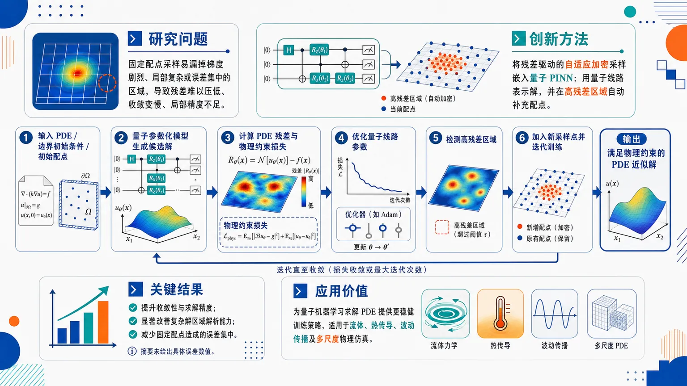
研究问题量子物理信息神经网络在求解偏微分方程时，固定配点采样容易漏掉梯度剧烈、局部复杂或误差集中的解区域，导致 PDE 残差难以充分压低、收敛变慢、局部求解精度不足。创新方法将“残差驱动的自适应加密采样”嵌入量子物理信息神经网络：用量子参数化线路表示 PDE 解，同时不断扫描当前 PDE 残差，在残差高的区域自动补充新配点，让训练焦点从均匀采样转向误差热点区域。工作流程输入 PDE 方程、边界/初始条件和初始配点；量子参数化模型生成候选解；计算 PDE 残差与物理约束损失；优化量子线路参数；检测空间中残差较大的位置；向这些区域加入新采样点；重复训练与加密，最终输出满足物理约束的 PDE 近似解。关键结果残差自适应加密采样提升了量子 PINN 的收敛性和求解精度，尤其改善复杂解区域的解析能力；相比固定配点训练，该策略能减少关键区域采样不足造成的误差集中问题，但摘要未提供具体误差数值或基准对比。应用价值为量子机器学习求解科学计算中的偏微分方程提供更稳健的训练策略，可用于需要捕捉局部复杂结构的物理仿真场景，如流体、热传导、波动传播和其他多尺度 PDE 问题。核心概览
该论文属于量子机器学习与科学计算交叉方向，提出一种带残差自适应细化的量子物理信息神经网络（QPINN），用于求解偏微分方程并提升精度与收敛性。
方法要点
- 使用量子物理信息神经网络（QPINN）求解偏微分方程。
- 在训练过程中依据 PDE 残差动态增加采样点。
- 将新增采样重点放在误差或残差集中的区域，以强化物理约束。
- 通过残差自适应细化机制改进训练过程中的采样分布。
- 具体量子线路结构、损失函数形式、优化器和测试 PDE 类型等，摘要未详述。
关键结果
- 该方法旨在改善 QPINN 的收敛表现。
- 通过在高残差区域增加采样点，可提高 PDE 解的精度。
- 论文明确声称该残差自适应细化策略有助于让 QPINN 在误差集中区域更强地满足 PDE 约束。
- 具体数值提升幅度、对比基线、实验规模和误差指标，摘要未详述。
创新性判断
- 可能的新颖点在于将“残差自适应细化”引入量子物理信息神经网络框架，用于 PDE 求解；这一点相对传统 PINN 或常规 QPINN 具有方法组合上的创新性。
- 其核心价值可能体现在缓解固定采样点导致的局部误差集中问题，使训练资源更聚焦于难以满足 PDE 的区域。
- 但摘要信息有限，无法判断其是否在量子线路设计、训练复杂度、实际量子硬件适配或理论收敛分析方面也有实质创新；这些内容摘要未详述。
-
06
📊 含图深析
📄 摘要：以 Inconel 718 磨料水射流铣削数据集为例，样本量 n=155，讨论小数据、材料特异且实验昂贵场景下的物理信息机器学习。区分基于物理的数据清洗与统计筛选，并把后者作为竞争建模假设比较，强调评估设计和物理耦合形式对结果的影响。
💡 亮点：在仅 155 个 Inconel 718 水射流铣削样本上，数据筛选被视为建模假设而非默认预处理。该方法论提醒小数据物理学习需同时审查数据、评估和物理嵌入。
📖 展开分析 + 配图
研究问题在 Inconel 718 磨料水射流铣削（AWJM）这种小样本、实验昂贵、物理主导的制造过程中，模型表现究竟由算法决定，还是同样受数据清洗、统计筛选、评估划分和物理知识嵌入方式影响；尤其是仅用 15 个测试点的 hold-out 排名是否可靠。创新方法把“物理错误清洗”和“统计异常筛选”明确拆开：先剔除 25 个物理不可能或不可靠点，再把 MAD-3.5、MAD-2.5、IQR、无筛选作为可竞争的建模假设；同时构建 PG-H(4) 物理骨架，并比较纯机器学习、对数特征、物理残差学习、GP 物理先验均值四级融合，揭示“物理融合是否有效”取决于学习器归纳偏置。工作流程输入 155 个 AWJM 实验点，包括水压、横移速度、磨料质量流率和平均铣削深度；先用领域规则删除正深度符号错误、高实验内方差、表面釉化等物理异常点，得到 130 点；再在训练集内应用不同统计筛选假设，并对目标做带符号平方根变换；随后拟合 PG-H(4) 物理基线和 GP、GB、SVR、Ridge 等模型，在 Level 0–3 物理融合层级下训练；最后用 15 点 hold-out 与 10 折交叉验证输出 RMSE、MAE、排名稳定性和不确定性覆盖率。关键结果15 点 hold-out 的冠军 GB L0 IQR 看似 RMSE 仅 0.262 mm，但在 10 折交叉验证中跌到第 7，RMSE 变为 0.520±0.220 mm；10 折前列由 GP 变体占据，最佳为 GP L0 MAD-3.5，RMSE 0.411±0.232 mm；GP 残差学习在部分设置下降低方差，例如 GP L2+PGH4 MAD-2.5 达到 0.432±0.150 mm，而 GB 做残差学习后误差和相对误差上升；独立 GP 的 90% 区间经验覆盖率为 86%，混合 GP 因忽略物理模型不确定性仅 74%。应用价值为小样本制造过程建模提供一套可复用的严谨评估框架：不要把预处理当作中性步骤，要把统计筛选显式作为假设比较；不要依赖一次小测试集排名，要使用重采样评估；不要盲目加入物理模型，而要让物理融合形式匹配学习器结构。该思路可用于 AWJM 之外的精密加工、材料实验和昂贵工艺优化，帮助工程师获得更可信、可解释、可量化不确定性的代理模型。第一部分：核心概览（Overview）
该研究以 Inconel 718 磨料水射流铣削（AWJM）小样本数据集 n=155 为案例，系统揭示小数据物理主导制造过程中的模型性能并不只由算法决定，而强烈依赖 数据清洗、统计筛选、评估协议与物理知识嵌入方式。核心贡献在于：将物理错误清洗与统计异常筛选分离，把后者视为可竞争的建模假设；证明 15 点 hold-out 排名不稳定，单次划分冠军在 10 折交叉验证中降至第 7；比较多层级物理融合，发现 GP 残差学习兼具竞争性精度、较低方差和可解释分解，而树模型受损。其地位偏方法论：为小样本制造过程建模提供可复用的严谨评估框架。
---
第二部分：结构化快速回顾
《Physics-Informed Machine Learning Under Small-Data Constraints: Lessons from Abrasive Waterjet Milling》（None，）
背景
磨料水射流铣削（AWJM） 需要通过水压、横移速度、磨料质量流率控制目标铣削深度，但实验昂贵且材料特异，典型研究仅有 27–50 个样本。该研究使用 n=155、Inconel 718 数据，关注小样本下数据质量、评估稳定性和物理融合策略对模型结论的影响。
方法
建立两阶段数据准备流程：先移除 25 个物理错误或不可靠点，再将 MAD-3.5、MAD-2.5、IQR、无筛选 作为竞争性统计筛选假设。构建 PG-H(4) 物理基线模型，并设置 Level 0–3 四种物理融合层级。比较 GP、GB、SVR、Ridge 及若干树模型，并采用 15 点 hold-out 与 10 折交叉验证 对照。
结果
单次划分冠军 GB L0 IQR 的 RMSE 为 0.262 mm，但在 10 折 CV 中降为第 7，RMSE 0.520±0.220 mm。GP 变体占据 10 折排名前列，最佳为 GP L0 MAD-3.5，RMSE 0.411±0.232 mm。GP 残差学习 Level 2 在部分设定下方差更低，GB 在 Level 2 下误差上升。
讨论
物理融合并非普遍有益，而取决于学习器归纳偏置。平滑核方法 GP 能利用物理基线简化残差；树模型 依赖轴对齐划分，面对物理残差结构时优势削弱。小样本下，数据筛选假设造成的性能差异可与算法差异同量级。
局限
实验限于 单一材料 Inconel 718、单一机器设置和实验室环境；10 折 CV 仍无法消除小样本方差；统计筛选本身带有假设性；PG-H(4) 需要材料特异校准，不能直接证明该封闭形式物理模型普适。
结论
可信的小样本制造过程模型比较需要：显式化数据筛选假设、使用重采样评估而非单次 hold-out、让物理融合方式匹配学习器归纳偏置。未来关键方向是引入概率物理基线并测试跨材料迁移。
---
第三部分：逐章节冷凝解析（Section-by-Section Condensing）
Abstract
Small-data process modelling is governed by upstream methodological choices
在物理主导加工过程中，数据往往小样本、昂贵、材料特异，模型结论高度依赖数据整理、评估设计和物理融合形式。核心判断直接表述为：*"experimental datasets are small, expensive, and material-specific"*，并且 *"data curation, evaluation design, and the form of physics integration can matter as much as the learning algorithm."* 研究对象为 AWJM Inconel 718 数据集，n=155。
Three methodological contributions define the study
三项贡献分别是：区分物理清洗和统计整理；揭示 15 点 hold-out 排名不稳定；分析物理融合层级。原始表述为：*"we make three methodological contributions"*；第一项是 *"separate physics-based data cleaning from statistical curation"*；第二项是 *"model rankings from a 15-point hold-out set can be unstable"*；第三项是 *"study a spectrum of physics integration levels"*。
Single-split rankings can be misleading at n≈100
15 点 hold-out 的单次冠军在 10 折交叉验证中由第 1 降至第 7，说明小测试集排名极易受划分影响。关键证据为：*"the single-split winner drops from rank 1 to rank 7 under 10-fold cross-validation"*，且 GP variants occupy the top ranks。
Residual physics helps GP but harms tree-based models
基于紧凑物理模型的残差学习对 Gaussian Process 具有竞争力，带来更低方差和可解释分解，但会削弱树模型。原始判断为：*"residual learning on a compact physics baseline is competitive for GP, yielding lower variance and an interpretable decomposition, but degrades tree-based models."*
Bayesian tuning is beneficial only selectively
Bayesian hyperparameter tuning 改善对参数敏感的 GB、SVR，但在小样本下损害多阶段混合管线。原句为：*"Bayesian hyperparameter tuning improves parameter-sensitive baselines such as gradient boosting and SVR, yet harms multi-stage hybrid pipelines at this sample size."*
GP uncertainty is approximately but not perfectly calibrated
GP 的不确定性区间接近校准，90% 名义置信水平下经验覆盖率为 86%。关键证据为：*"GP uncertainty intervals are approximately calibrated (86% empirical coverage at nominal 90%)."*
---
1 Introduction
AWJM aims at controlled depth rather than cutting through the workpiece
磨料水射流铣削（AWJM） 的目标不是切断工件，而是实现规定平均铣削深度 (bar d) 并保持严格公差。英文原文给出定义：*"the goal is not to sever the workpiece but to achieve a prescribed milling depth (bard) with tight tolerances."*
Three process parameters dominate milling depth
主导输出的三个工艺参数是 水压 (p)、横移速度 (v)、磨料质量流率 (dot m)。原文为：*"Three process parameters dominate the outcome: water pressure (p), traverse speed (v), and abrasive mass flow rate (dotm)."*
Experimental data are structurally scarce
AWJM 数据稀缺不是暂时现象，而是由材料、机器配置和测量成本共同决定。典型研究只有 27–50 个测量值，单个点可能需要数小时机时和后处理轮廓测量。关键句为：*"AWJM datasets are inherently small – typical studies report 27–50 measurements"*，以及 *"a single data point can cost hours of machine time plus post-process profilometry."*
The dataset is larger than typical AWJM studies but still small
使用 n=155 的 Inconel 718 数据集。Inconel 718 是航空制造常用镍基高温合金。原文为：*"Our dataset contains (n=155) measurements on Inconel 718, a nickel-based superalloy common in aerospace manufacturing."*
Small-data limitation is structural, not temporary
跨材料迁移需要重新实验，数据获取成本持续存在。原文明确指出：*"This limitation is structural, not temporary: transferring models to a new material requires fresh experimentation, and the cost per data point remains considerable."*
Small datasets amplify data-quality effects
在 155 个样本 下，少量记录错误或工艺状态转变就可能改变模型排名。关键表述为：*"with 155 points, a handful of recording errors or regime transitions can shift model rankings."* 这使预处理选择不应被视为中性步骤。
Small test sets cannot support stable model comparison
当 hold-out 测试集只有 10–15 点 时，模型比较不稳定。原文为：*"a held-out set of 10–15 points is too small for stable model comparison"*，因此 *"single-split evaluation insufficient for stable model comparison in this setting."*
Physics integration remains an open empirical question
AWJM 半经验模型能捕捉主要趋势，但需材料特异校准；是否改善机器学习预测仍未确定。原文为：*"semi-empirical AWJM models capture dominant trends but require material-specific calibration; whether they improve ML predictions remains open."*
Modelling decisions begin before fitting
核心方法论立场是：异常识别、统计筛选、评估设计可以像算法选择一样改变结论。原文为：*"modelling decisions begin before model fitting"*，并且 *"choice of anomaly identification, statistical filtering, and evaluation design can change conclusions as much as algorithm choice itself."*
Contribution 1: physics cleaning and statistical curation are separated
第一项贡献是将物理错误清洗与统计异常整理分离，并将整理视为竞争性建模假设。原文：*"we separate physics-based data cleaning ... from statistical curation ... and treat curation as competing modelling hypotheses."*
Contribution 2: evaluation protocol changes model ranking
第二项贡献是证明评估协议本身会改变结论。具体证据：*"a 15-point hold-out set produces a different ranking than 10-fold cross-validation, with the single-split winner dropping to rank 7."*
Contribution 3: physics integration depends on learner class
第三项贡献是比较四种物理融合层级，并发现 GP 与树模型反应相反。原文：*"we study four physics integration levels and find that residual physics helps smooth interpolators (GP) but degrades tree-based methods."*
---
2 Related Work
AWJM surrogate modelling has used neural networks, ensembles, and SVR
已有 AWJM 代理建模涵盖 neural networks、ensemble methods、support vector regression。原文总结为：*"ML-based surrogate modelling for AWJM has been explored with neural networks, ensemble methods, and support vector regression."*
Gaussian processes remain underexplored in AWJM
尽管 Gaussian process regression 在相邻工程领域的物理信息建模中显示潜力，但 AWJM 中关注较少。原文为：*"probabilistic approaches such as Gaussian process regression ... have received little attention."*
Data quality is a recognized but under-addressed manufacturing ML issue
制造业机器学习中数据质量问题尚未充分解决。原文引用 Zhao et al. 并指出：*"data quality as an under-addressed challenge in ML-based manufacturing."*
Small-data regime n<200 is common in materials and process engineering
n<200 是材料科学和过程工程中的常态，而非例外。原文为：*"The small-data regime ((n<200)) is the norm in materials science and process engineering."*
Transfer learning, augmentation, and physics priors help but do not remove scarcity
小样本策略包括迁移学习、数据增强和物理先验，但不能消除根本限制。原文为：*"these help but do not eliminate the fundamental limitation."*
Classical methods remain competitive for tabular small-data regression
对于 AWJM 深度预测这类表格回归，Gaussian Processes 等经典方法仍具竞争力。原文为：*"For tabular regression problems like AWJM depth prediction, classical methods such as Gaussian Processes remain competitive."*
Cross-validation instability persists even at much larger n
小样本下交叉验证不稳定已有文献证明；甚至 n=1000 时 k 折 CV 仍会产生偏倚估计。原文为：*"k-fold CV produces biased performance estimates even at (n=1000)"*，且当特征选择在合并数据上执行时偏差加剧。
Physics-informed machine learning is defined broadly
Physics-informed machine learning 不限于神经网络中的物理损失项，而包括特征表示、残差形式、先验均值函数等科学知识嵌入方式。原文定义为：*"scientific-knowledge integration into the learning pipeline, including feature representations, residual formulations, and prior mean functions."*
Physics can enter ML pipelines at multiple stages
物理知识可通过损失函数、初始化、架构设计、混合模型、GP 核函数和均值函数等方式进入模型。原文引用分类：*"distinguishing physics-guided loss functions, initialisation, architecture design, and hybrid models"*，以及 *"a spectrum of physics-informed Gaussian Processes from physics-derived kernels and mean functions to constrained covariance formulations."*
AWJM physics models are semi-empirical and material-specific
Hashish 和 Hlaváč 的 AWJM 模型能捕捉主要趋势，但仍需材料校准。原文为：*"these capture dominant trends but still require material-specific calibration."*
The central open question concerns conditions for benefit
关键问题不是物理能否整合，而是在什么条件下有可测量收益。原文为：*"The open question is not whether physics can be integrated, but under which conditions – algorithm class, integration level, data curation – it yields measurable improvement."*
Model selection overfitting is amplified at small n
小样本下模型选择过拟合可导致性能退化，幅度可与算法间差异相当。原文为：*"overfitting in model selection can cause performance degradation comparable inter-algorithm differences—a risk amplified at small (n)."*
Epistemic uncertainty dominates under small data
小样本制造过程里主要不确定性是认知不确定性（epistemic uncertainty），置信区间校准需要比常见数据规模更多的 hold-out 数据。原文为：*"epistemic uncertainty dominates, and calibrating prediction intervals requires more held-out data than is typically available."*
---
3 Dataset and Data Preparation
3.1 Dataset
The dataset contains 155 single-pass AWJM experiments
数据集包含 n=155 个 Inconel 718 单道 AWJM 实验。原文为：*"The dataset comprises (n=155) single-pass AWJM experiments on Inconel 718."*
The input design spans pressure, traverse speed, and abrasive flow
参数范围包括 5 个压力水平 (p in 1000,łdots,5000) bar、6 个横移速度 (v in 250,łdots,3000) mm/min、6 个磨料质量流率 (dot m in 60,łdots,480) g/min。原文为：*"five pressure levels ... six traverse speeds ... and six abrasive mass flow rates."*
The target is mean milling depth with negative sign convention
目标变量是平均铣削深度 (bar d)，范围从 −5.5 mm 到接近 0。原文为：*"The target is the mean milling depth (bard) (mm), ranging from −5.5 mm to near zero."*
The experimental design is incomplete factorial
名义上有 5×6×6=180 种参数组合，但实际实现 155 种。原文为：*"The design is not fully crossed: of the (5 × 6 × 6 = 180) nominal parameter combinations, 155 were realised."*
The depth distribution is strongly left-skewed
目标分布左偏，偏度为 −1.28。原文为：*"The distribution of (bard) is left-skewed (skewness −1.28)."*
---
3.2 Two-Stage Data Preparation
Two types of data preparation are explicitly separated
常见应用机器学习中混同的两类操作被区分：物理清洗与统计筛选。原文为：*"We distinguish two operations commonly conflated in applied ML studies."*
Stage 1 removes 25 demonstrably erroneous or unreliable points
第一阶段利用领域知识剔除 25 个明确错误或不可靠点。原文：*"Domain knowledge identifies 25 demonstrably erroneous or unreliable points."*
Positive depth values are physically impossible sign anomalies
其中 13 个点 出现物理不可能的正深度，属于记录错误导致的符号异常。原文为：*"(a) 13 with physically impossible positive depth (sign anomalies from a recording error)."*
High within-experiment variance flags unreliable measurements
其中 9 个点 的实验内方差超过平均深度，即变异系数 >1，其中一个与正深度异常重叠。原文为：*"(b) 9 with within-experiment variance exceeding the mean depth (variation coefficient >1; one overlaps with (a))."*
Regime-boundary surface glazing points are excluded
另有 4 个点 位于工艺边界，切削退化为表面釉化。原文为：*"(c) 4 at a regime boundary where cutting degrades into surface glazing."*
Stage-1 exclusions are always applied
这些物理错误点始终剔除。原文为：*"These are always excluded."*
Stage 2 treats statistical curation as competing hypotheses
剩余 130 个点 物理上合理，但可能统计极端，例如低横移速度和高压力下的深切削。是否排除取决于算法偏差—方差权衡。原文为：*"The remaining 130 points are physically plausible but statistically extreme"*，以及 *"Whether excluding them improves prediction depends on the algorithm’s bias–variance trade-off."*
Four curation hypotheses are compared downstream
定义四种筛选假设并以模型性能检验其效果，而不是默认选一种。原文为：*"Rather than committing to a single filter, we define four hypotheses ... and evaluate each by its downstream effect on model performance."*
H-NONE keeps all training points after Stage 1
H-NONE 不做统计筛选，训练样本数 (nₜᵣₐᵢₙ=115)。表格信息对应：*"H-NONE No statistical filter 115."*
H-MAD-3.5 uses permissive modified Z-score filtering
H-MAD-3.5 使用 MAD，阈值 (τ=3.5)，训练样本数 99。公式为：*"a point is flagged if its modified Z-score (Mᵢ = 0.6745 (yᵢ₋tilde y)/MAD) exceeds the threshold (τ)."*
H-MAD-2.5 uses more conservative modified Z-score filtering
H-MAD-2.5 使用 MAD，阈值 (τ=2.5)，训练样本数 97。原文说明阈值范围：*"The thresholds (τ=2.5) and (τ=3.5) bracket a moderately conservative to permissive range."*
H-IQR uses Tukey fences
H-IQR 使用 1.5×IQR Tukey fence，训练样本数 105。公式为：*"points outside the Tukey fence ([Q₁ - 1.5 IQR, Q₃ + 1.5 IQR]) are removed."*
Filtering is applied per pressure group to reduce skewness issues
MAD 改进 Z 分数隐含近似正态性；按压力组筛选时每组约 n≈30，组内分布比总体更少偏斜。原文为：*"since filtering is applied per pressure group ((n approx 30)), within-group distributions are considerably less skewed than the overall dataset."*
Statistical filtering is justified only by downstream prediction quality
筛选方法本身不是正当性来源；真正依据是预测性能。原文为：*"Statistical filtering is justified not by the method itself but by its downstream effect on prediction quality."*
Signed square-root target transformation reduces skewness dramatically
目标变换 (yₜ₌sqrt|y|,sgn(y)) 将偏度从 −1.28 降到 −0.10，同时保留符号、无参数、可逆。原文为：*"The signed square root ... reduces skewness from −1.28 to −0.10 while preserving sign, remaining parameter-free and invertible."*
Target transformation consistently improves RMSE
该变换使所有算法 RMSE 降低 5–9%。原文为：*"It provided a consistent 5–9% RMSE reduction across all algorithms; all results below use the transformed target."*
---
4 Methodology
4.1 Physics Baseline Model
Milling depth follows an approximate power law
AWJM 深度近似服从工艺参数的幂律关系。原文为：*"Milling depth approximately follows a power law in the process parameters."*
Hashish scaling links jet energy to pressure and abrasive loading
Hashish 模型表明射流动能按 (p³/²) 缩放，深度随磨料加载 (dot m^γ) 增加，并与横移速度 (v) 成反比。原文为：*"jet kinetic energy scales as (p³/²) (Bernoulli), depth increases with abrasive loading (dotmγ), and is inversely proportional to traverse speed (v)."*
A pure power law overestimates high-pressure depth
简单幂律 (bar d=-C p^α dot m^γ/v) 会在高压下高估深度，因为切削效率饱和。原文为：*"a simple power law ... overestimates depth at high pressures because the cutting efficiency saturates."*
PG-H(4) introduces a rational pressure saturation denominator
引入紧凑有理分母 (A p+B)，得到
[
bar d=-fracC,p³/²dot m^γv(Ap+B)
]
原文为：*"we introduce a compact rational denominator"*，并给出公式 *"(bard=-,fracCḑot p³/²ḑot dotmγvḑot(Ap+B))."*
Four parameters are fitted with robust nonlinear least squares
模型参数 (C,A,B,γ) 通过非线性最小二乘拟合，使用 soft-(L₁) 损失和 10 次随机重启。原文为：*"where (C), (A), (B), (γ) are fitted via nonlinear least squares (soft-(L₁) loss, 10 random restarts)."*
The pressure exponent is fixed by Bernoulli physics
压力指数 (α=3/2) 固定自伯努利方程，而 (γ) 因磨料效率材料相关而拟合。原文为：*"The pressure exponent (α=3/2) is fixed from Bernoulli’s equation; (γ) is fitted because abrasive efficiency is material-dependent."*
The denominator models pressure-dependent resistance
低压时 B 主导，阻力近似常数；高压时 Ap 主导，深度增长减速。原文为：*"at low (p), (B) dominates ... at high (p), (Ap) dominates and depth growth decelerates."*
PG-H(4) is a backbone rather than a standalone predictor
PG-H(4) 是混合模型的物理骨架，不是主要单独预测器。原文为：*"PG-H(4) serves as a physics backbone for hybrid models, not as a standalone predictor."*
The physics baseline captures about half of training variance
该四参数模型在训练数据上 (R² approx 0.51)，捕捉主导缩放，使残差 (r=y-fₚₕyₛ(x)) 更简单、方差更低。原文为：*"With four free parameters, it captures roughly half the variance ((R² approx 0.51) on training data)"*，并且 *"the ML residual ... is simpler and lower-variance than the raw target."*
---
4.2 Physics Integration Levels
Physics integration is treated as a spectrum rather than a binary choice
物理融合不是“有/无”二分，而是四个层级。原文为：*"Rather than treating physics integration as binary, we define four levels."*
Level 0 uses pure ML on raw features
Level 0 使用原始特征 (p,v,dot m)，模型学习完整输入—输出映射。GP、SVR 使用标准化特征，树模型使用原始特征。原文为：*"At Level 0 (pure ML): raw features ... model must learn the full input–output mapping."*
Level 1 uses logarithmic feature transformation
Level 1 使用 ((łn p,łn v,łn dot m))，编码幂律假设，使纯幂律变为线性。原文为：*"At Level 1 (log-transform): features ... encoding the power-law assumption so the pure power law becomes linear."*
Log transforms affect kernels but not tree splits
对树模型而言，单调变换不改变划分，因此 Level 0 与 Level 1 等价；对核方法，距离度量改变。原文为：*"For tree-based methods the monotone transform produces identical splits ... for kernel methods, it changes the distance metric."*
Level 2 uses residual learning on PG-H(4)
Level 2 中，PG-H(4) 提供初始近似 (fₚₕyₛ(x))，ML 学习残差 (r=y-fₚₕyₛ(x))，预测为 (hat y=fₚₕyₛ(x)+hat r(x))。原文为：*"At Level 2 (residual learning): PG-H(4) provides a first approximation ... and the ML model learns the additive residual."*
Physics does not need perfect accuracy at Level 2
Level 2 只需物理模型捕捉主导趋势，不必每个细节准确。原文为：*"The physics model need not be accurate in every detail – it suffices that it captures dominant trends."*
Level 3 uses PG-H(4) as GP prior mean
Level 3 将 PG-H(4) 作为 GP 先验均值；数据丰富区域由后验修正，数据稀疏区域回退到物理模型。原文为：*"At Level 3 (PG-H(4) as GP prior mean): in data-rich regions the posterior corrects the physics; in data-sparse regions the prediction reverts to the physics model."*
Level 3 is the strongest but most fragile integration
Level 3 物理依赖最强，也最敏感于物理模型准确性。原文为：*"the strongest integration but most sensitive to physics model accuracy."*
Physics accuracy requirements differ by level
Level 0–2 可由 ML 显式纠正物理误差；Level 3 的外推质量直接受物理准确性控制。原文为：*"At Levels 0–2, the ML explicitly corrects physics error"*，而 *"At Level 3, reversion to the physics in data-sparse regions means accuracy directly governs extrapolation quality."*
---
4.3 ML Algorithms
Sample efficiency is prioritized over model capacity
由于小样本，模型选择强调样本效率而非大容量。原文为：*"Given small (n), we prioritise sample efficiency over model capacity."*
Eight algorithms are evaluated across integration levels
共评估 8 种算法，主比较聚焦 GP、GB、SVR、Ridge。原文为：*"We evaluate 8 algorithms across all integration levels; the main comparison focuses on..."*
GP uses Matérn-5/2 kernel with ARD
Gaussian Processes 使用 Matérn-5/2 kernel 和 automatic relevance determination；超参数通过边际似然最大化优化。原文为：*"Gaussian Processes (GP) with a Matérn-5/2 kernel and automatic relevance determination; hyperparameters are optimised by marginal likelihood maximisation."*
GP cubic cost is negligible at n≈100
GP 计算复杂度为 (mathcal O(n³⁾)，但在 n≈100 时可忽略。原文为：*"(O(n³⁾) cost negligible at (n approx 100)."*
GP provides native predictive variance
GP 天然输出预测方差。原文为：*"GP natively provides predictive variance."*
Gradient boosting is deliberately conservative
GB 设置为保守配置以限制过拟合：max_depth=3、100 iterations、learning rate=0.05、subsample=0.8。原文为：*"configured conservatively (max_depth=3, 100 iterations, learning rate 0.05, subsample 0.8) to limit overfitting."*
SVR uses RBF kernel and small grid search
SVR 使用 RBF 核，(ǎrepsilon=0.05)，(C in 0.1,1,10,100)，5 折网格搜索。原文为：*"SVR with RBF kernel ((ǎrepsilon=0.05), (Cin0.1,1,10,100), 5-fold grid search)."*
Ridge is the linear baseline
Ridge regression 作为线性基线，(α in 0.01,0.1,1,10,100)。原文为：*"Ridge regression as linear baseline."*
Additional tree models rank below GP and GB variants
XGBoost、LightGBM、HistGBR、Random Forest 在 10 折 CV 中低于所有 GP 和标准 GB 变体，因此仅汇总报告。原文为：*"Four additional tree-based methods ... ranked below all GP and standard GB variants under 10-fold cross-validation."*
A shallow MLP is included only for uncertainty comparison
浅层 MLP 结构为 3→32→16→1，约 625 参数，结合 MC-Dropout，仅作为不确定性量化对照。原文为：*"A shallow MLP baseline ... (3→32→16→1), (sim625) parameters) with MC-Dropout was included as an uncertainty-quantification comparison only."*
The best MLP remains below GP variants
MLP 最佳配置为 Level 2, H-NONE，测试 RMSE 0.55 mm，低于所有 GP 变体。原文为：*"its best configuration ... achieved test RMSE = 0.55 mm, ranking below all GP variants."*
Fixed hyperparameters are preferred for many models under small n
非网格搜索模型使用固定超参数，因为 n≈100 时，5 折调参每个验证折约 16 点，信号不可靠。原文为：*"5-fold CV for tuning leaves only (sim16) points per validation fold – too few for a reliable signal."*
---
4.4 Evaluation Protocol
Stage-1 cleaning reduces 155 points to 130
第一阶段清洗后数据从 155 降至 130。原文为：*"After Stage-1 cleaning ((155 → 130) points)."*
A fixed stratified 15-point test set is reserved
保留 15 个点 作为固定分层测试集，剩余 115 个训练点。原文为：*"15 points are reserved as a fixed, stratified test set, leaving 115 for training."*
Always-clean pool contains 111 points
在所有 Stage-2 筛选下均保留的点有 111 个，构成 “always clean” 池，其中训练 96、测试 15。原文为：*"111 survive every Stage-2 filter, forming the 'always clean' pool (96 training, 15 test)."*
Stage-2 filtering is applied only within training data
统计筛选只在训练分区内计算，避免信息泄漏。原文为：*"Stage-2 curation is applied only within the training partition: filters are computed from training data alone, preventing information leakage."*
Single-split evaluation uses the 15 held-out points
单次划分设置下，15 个 held-out 点作为测试集。原文为：*"In the single-split setting, the 15 held-out points serve as test set."*
10-fold CV uses the 96 always-clean training points
10 折 CV 将 96 个 always-clean 训练点 划分为 10 折。原文为：*"In the 10-fold CV setting, the 96 always-clean training points are partitioned into 10 folds."*
Filter-dependent points augment fold training when eligible
其余 19 个至少被一个 Stage-2 筛选移除的点，若通过当前筛选，会加入每折训练集。原文为：*"the remaining 19 points ... augment each fold’s training set when they pass the active filter."*
Stage-2 filters are recomputed per fold to prevent leakage
每折重新基于训练数据计算筛选器。原文为：*"Stage-2 filters are recomputed per fold from training data only."*
RMSE and MAE are both reported
报告 RMSE(mm) 表示总体精度，MAE(mm) 作为对离群值较不敏感的尺度补充。原文为：*"We report RMSE (mm) for overall accuracy and MAE (mm) as a scale-independent complement less sensitive to outliers."*
---
5 Results
5.1 Single-Split vs. Multi-Fold Rankings
The single-split champion fails to remain best under 10-fold CV
15 点 hold-out 冠军 GB L0 IQR 的单次 RMSE 为 0.262 mm，但 10 折 CV 排名降至第 7，RMSE 0.520±0.220 mm。原文为：*"The single-split champion (GB, H-IQR, RMSE 0.262) drops to rank 7 under 10-fold CV (0.520 ± 0.220)."*
GP variants dominate the top 10-fold rankings
10 折 CV 前列由 GP 变体占据。原文为：*"GP variants occupy the top 7 ranks."*
Best 10-fold model is GP L0 MAD-3.5
最佳 10 折配置为 GP L0 MAD-3.5：单次排名第 3，10 折排名第 1，单次 RMSE 0.324，10 折 RMSE 0.411±0.232，MAE 0.261。表格信息对应：*"GP L0 MAD-3.5 ... Rank 10-fold 1 ... RMSE 10-fold 0.411 ± 0.232 ... MAE 0.261."*
Second-best is hybrid GP L2+PGH4 MAD-2.5
第二名为 GP L2+PGH4 MAD-2.5：单次排名第 6，10 折排名第 2，单次 RMSE 0.467，10 折 RMSE 0.432±0.150，MAE 0.267。表格给出：*"GP L2+PGH4 MAD-2.5 ... RMSE 10-fold 0.432 ± 0.150."*
Other GP pure-ML variants also outperform GB under CV
GP L0 MAD-2.5 排第 3，RMSE 0.437±0.181；GP L0 IQR 排第 4，RMSE 0.446±0.244。对应表格为：*"GP L0 MAD-2.5 ... 0.437 ± 0.181"* 与 *"GP L0 IQR ... 0.446 ± 0.244."*
The rank change is substantive rather than marginal
这种变化不是轻微排序扰动，而是实质性排名反转。原文为：*"This is not a marginal reshuffling but a substantive rank reversal."*
A 15-point test set gives false precision
在 n≈100 下，15 点测试集会产生看似精确的点估计，但折间方差显示不应据此做稳定排名。原文为：*"a 15-point held-out set yields point estimates with apparent precision"*，同时 *"these point estimates should be interpreted cautiously and may not support stable model comparison."*
---
5.2 Effect of Data Curation
Outlier hypothesis interacts with algorithm class
离群筛选假设与算法类别存在交互。原文为：*"The outlier hypothesis interacts with algorithm class."*
GP prefers cleaner datasets
作为平滑插值器，GP 更偏好较干净数据，例如 H-MAD-3.5 或 H-MAD-2.5，宁可减少样本也要降低噪声。原文为：*"GP, as a smooth interpolator, prefers cleaner data (H-MAD-3.5 or H-MAD-2.5), accepting fewer points for lower noise."*
Tree-based methods prefer more data
树模型本身对离群点较稳健，因此更偏好 H-NONE 或 H-IQR。原文为：*"tree-based methods prefer more data (H-NONE or H-IQR), being inherently robust to outliers."*
Curation effects can match algorithm differences
GP 最好与最差筛选假设之间 RMSE 差距超过 0.10 mm，与算法间差异同量级。原文为：*"The best-to-worst hypothesis gap exceeds 0.10 mm RMSE for GP – to inter-algorithm differences."*
Target transformation gives modest but consistent gains
平方根目标变换带来 5–9% RMSE 降低。原文为：*"The sqrt target transformation provides a consistent but modest benefit (5–9% RMSE reduction)."*
---
5.3 Physics Integration
Physics integration effects are algorithm-dependent
物理融合对不同学习器的影响不同。原文为：*"Physics integration is algorithm-dependent."*
GP residual learning is competitive and lower-variance
在 GP + H-MAD-2.5 下，Level 2 残差学习 RMSE 0.432±0.150，优于纯 GP Level 0 的 0.513±0.233；MAPE 均值相同为 30%，但标准差从 14% 降到 9%。原文为：*"For GP with H-MAD-2.5, Level 2 ... achieves RMSE 0.432 ± 0.150 vs. 0.513 ± 0.233 for pure GP at Level 0 (MAPE 30% ± 9% vs. 30% ± 14%)."*
Mean difference is not statistically significant
配对 t 检验未发现均值差异显著，p=0.14。原文为：*"A paired t-test detects no significant mean difference (p=0.14)."*
Variance reduction is suggestive but underpowered
Levene 检验 p=0.06，方差比 2.4:1，显示混合模型折间方差更低，但只有 10 折，检验功效不足。原文为：*"Levene p=0.06, variance ratio 2.4:1"*，以及 *"with only 10 folds neither test has high power."*
GB is degraded by residual physics
GB 的 Level 2 使 RMSE 从 0.524±0.225 增至 0.549±0.216，MAPE 从 38%±17% 增至 50%±19%。原文为：*"For GB, Level 2 increases RMSE from 0.524 ± 0.225 to 0.549 ± 0.216 and MAPE from 38% ± 17% to 50% ± 19%."*
Tree degradation arises from residual geometry
物理残差缺乏树模型擅长利用的轴对齐结构。原文为：*"the physics residuals lack the axis-aligned structure that trees exploit."*
MAPE exposes relative degradation better than RMSE
MAPE 更清楚地显示 GB 退化，因为 RMSE 受深切削主导。原文为：*"MAPE is shown because relative error exposes GB degradation more clearly than RMSE, which is dominated by deep cuts."*
Hybrid GP provides interpretable prediction decomposition
混合 GP 将预测分解为 (hat y=fₚₕyₛ(x)+hat r(x))。原文为：*"The hybrid GP decomposes each prediction as (haty=fₚₕyₛ(x)+hatr(x))."*
Physics dominates shallow cuts
浅切削 (|bar d|<0.3) mm 时，物理分量占预测约 81%。原文为：*"At shallow cuts ((|bard|<0.3) mm), the physics component accounts for (sim81%) of the prediction."*
Residual contribution increases in deep cuts
深切削 >1 mm 时，学习残差贡献约 40%。原文为：*"at deep cuts (>1 mm), the learned residual contributes (sim40%)."*
Training-size ablation does not support stronger benefit at lower data size
训练规模按 20%、40%、60%、80%、100% 子采样后，没有证实数据更少时物理融合收益更大。原文为：*"A training-size ablation ... does not confirm that physics integration provides a larger benefit when data are scarce."*
Hybrid variance advantage appears only at full data size
在 20–60% 训练规模下，L0 与 L2 折间标准差相近，比例 ≤1.2:1；全数据时混合模型方差优势才出现，比例 1.6:1。原文为：*"at 20–60% training size, L0 and L2 fold-to-fold standard deviations are comparable (ratio ≤1.2:1)"*，以及 *"variance advantage ... emerges only at full data size (1.6:1)."*
Prediction error strongly depends on depth
深切削 (|bar d|>1) mm 时，最佳 GP 的 MAE 约 0.18 mm；浅切削 (|bar d|<0.3) mm 时 MAE 约 0.05 mm。原文为：*"For deep cuts ... MAE ≈ 0.18 mm, whereas shallow cuts ... reach MAE ≈ 0.05 mm."*
Relative error is intrinsically high near zero depth
当 (|bar d|approx0.1) mm 时，即使绝对误差 0.02 mm，也相当于目标值的 20%。原文为：*"at (|bard| approx 0.1) mm, even 0.02 mm absolute error ... represents 20% of the target."*
---
5.4 Hyperparameter Tuning at Small n
Bayesian optimisation uses Optuna with 60 trials and 5-fold inner CV
超参数调优使用 Optuna，60 trials，5 折内层 CV，应用于 6 个配置。原文为：*"Bayesian optimisation (Optuna, 60 trials, 5-fold inner CV) was applied to six configurations."*
GP L0 is essentially unaffected by tuning
GP L0 MAD-3.5 默认 RMSE 0.411，调优后 0.414，变化 +0.003。表格给出：*"GP L0 (MAD-3.5) 0.411 0.414 +0.003."*
Hybrid GP degrades after tuning
GP L2+PGH4 MAD-2.5 默认 RMSE 0.432，调优后 0.504，恶化 +0.072。原文表格：*"GP L2+PGH4 (MAD-2.5) 0.432 0.504 +0.072."*
GB improves substantially after tuning
GB L0 IQR 默认 RMSE 0.524，调优后 0.431，改善 −0.093。表格为：*"GB L0 (IQR) 0.524 0.431 −0.093."*
SVR also benefits from tuning
SVR L0 MAD-3.5 默认 RMSE 0.534，调优后 0.456，改善 −0.078。表格为：*"SVR L0 (MAD-3.5) 0.534 0.456 −0.078."*
GP marginal likelihood already tunes kernel hyperparameters
GP 不受 Optuna 明显影响，因为核超参数已经通过边际似然优化。原文为：*"GP is unaffected because kernel hyperparameters are already optimised via marginal likelihood."*
Sensitive defaults benefit from Bayesian tuning
GB 和 SVR 等默认参数敏感模型改善 −0.078 到 −0.093 mm RMSE。原文为：*"Algorithms with sensitive defaults (GB, SVR) improve substantially (−0.078 to −0.093 mm RMSE)."*
Multi-stage hybrid pipelines are harmed by unreliable inner validation
混合 GP 的两阶段结构 physics fit → residual GP 引入更复杂搜索空间，而每个内层验证折约 16 点 不足以可靠选择。原文为：*"the two-stage pipeline (physics fit → residual GP) introduces a search space where (sim16) validation points per fold are insufficient for reliable selection."*
Automated tuning should be selective under small data
小样本下自动调参应选择性使用：可帮助参数敏感模型，但可能损害多阶段混合管线。原文为：*"automated tuning should thus be applied selectively."*
---
5.5 Uncertainty Quantification
GP provides analytic predictive variance
GP 模型天然提供预测方差。原文为：*"GP models provide native predictive variance."*
Uncertainty is back-propagated through the square-root target transform
由于建模对象是平方根变换目标，不确定性通过 delta method 反变换：(σ_y approx 2|yₜ|σy_ₜ)。原文为：*"uncertainty is back-propagated via the delta method: (σ_y approx 2|yₜ|σy_ₜ)."*
Delta approximation underestimates variance near zero
当 (|yₜ|→0) 时，一阶近似低估方差，解释小深度处覆盖率下降。原文为：*"This first-order approximation underestimates variance when (|yₜ|→0), partially explaining degraded coverage at small depths."*
GP L0 is approximately calibrated
GP L0 在名义 90% 置信水平下经验覆盖率为 86%，95% 下为 92%。表格为：*"GP L0 (standalone) ... 90% 86 ... 95% 92."*
Hybrid GP uncertainty is under-calibrated
GP L2+PGH4 在 90% 名义水平下覆盖率仅 74%，95% 下为 82%。表格为：*"GP L2+PGH4 (hybrid) ... 90% 74 ... 95% 82."*
MLP MC-Dropout performs worse for uncertainty
MLP MC-Dropout 覆盖率更低：90% 名义水平下 67%，95% 下 73%。表格为：*"MLP MC-Dropout ... 90% 67 ... 95% 73."*
Standalone GP outperforms hybrid and neural approximate uncertainty
GP L0 的 90% 覆盖率 86%，区间宽度 1.04 mm，优于混合 GP 和 MLP MC-Dropout。原文为：*"GP L0 achieves 86% empirical coverage at nominal 90% (interval width 1.04 mm)"*，并且 *"analytically derived GP variance outperforms both hybrid and approximate neural-network uncertainty."*
Hybrid variance omits physics model-form uncertainty
混合模型方差只包含残差不确定性 (Var[hat r(x)])，忽略物理模型形式不确定性 (Var[fₚₕyₛ(x)])。原文为：*"(σ²ₕybᵣᵢd) captures only residual uncertainty ... but omits physics model-form uncertainty."*
Probabilistic physics baseline is needed for full uncertainty
纳入物理模型形式不确定性需要概率物理基线。原文为：*"incorporating the latter requires a probabilistic physics baseline."*
Depth-dependent calibration reveals distinct regimes
按深度分层显示全局覆盖率掩盖不同工况。原文为：*"these global figures average over distinct regimes."*
Shallow cuts meet nominal 90% coverage
浅切削 (|bar d|<0.3) mm 下，两个模型接近或达到 90% 目标，覆盖率分别为 100% 和 89%。原文为：*"At shallow cuts ... both models meet the 90% target (100% and 89%)."*
Intermediate depths expose hybrid failure
中等深度 0.3–1.0 mm 时，GP L0 约 88%，GP L2 降至约 58%。原文为：*"At intermediate depths ... GP L0 maintains (sim88%) while GP L2 drops to (sim58%)."*
Deep cuts degrade both models
深切削 >1.0 mm 时，两者覆盖率都降至约 67%。原文为：*"At deep cuts (>1.0 mm) both degrade to (sim67%)."*
Wider intervals do not guarantee better coverage
GP L2 在中深切削区间产生更宽区间却覆盖更差，说明确定性物理模型导致区间偏移，而不只是区间变窄。原文为：*"GP L2 produces wider intervals than GP L0 at medium and deep cuts yet achieves worse coverage"*，以及 *"the deterministic physics model shifts the intervals rather than merely narrowing them."*
Physics fraction offers an interpretability rule
GP L2 预测分解中的物理占比从浅切削约 81% 到深切削约 60%。原文为：*"The physics fraction varies from (sim81%) at shallow cuts to (sim60%) at deep cuts."*
Hybrid interpretability is its most distinctive advantage
即使点预测精度相当，知道预测中多少来自物理、多少来自数据驱动校正，是混合模型最突出优势。原文为：*"This interpretability – knowing how much of a prediction is physics versus data-driven – is the hybrid’s most distinctive advantage."*
---
6 Discussion
Numerical results are AWJM- and Inconel-specific
数值结论特定于 Inconel 718 的 AWJM。原文为：*"The numerical results are specific to AWJM on Inconel 718."*
Methodological conclusions generalize by structural similarity
方法论结论依赖于结构属性：小 n、异质数据质量、不完美物理、小评估集排名不稳定。原文为：*"depend only on structural properties – small (n), heterogeneous data quality, imperfect physics, and evaluation sets too small for stable ranking."*
The setting represents broader precision manufacturing problems
这些结构属性存在于广泛精密制造问题中。原文为：*"shared by a broad class of precision manufacturing problems."*
Controlled application isolates factor effects
所有算法、筛选假设和评估协议应用于同一数据集，使各因素影响可隔离。原文为：*"Because all algorithms, curation hypotheses, and evaluation protocols are applied to the same dataset, each factor’s effect can be isolated."*
---
6.1 Threats to Validity
External validity is limited by one material and setup
局限一：只覆盖一个材料、一个机器设置和一个实验室环境。原文为：*"it covers one material, machine setup, and laboratory environment."*
Generalization rests on problem structure rather than replication
外部有效性依赖问题结构，而不是多数据集重复验证。原文为：*"external validity rests on problem structure, not multi-dataset replication."*
10-fold CV reduces but does not eliminate small-sample variability
局限二：10 折 CV 比 15 点 hold-out 信息更多，但无法消除小样本变异。原文为：*"10-fold CV is more informative than a 15-point hold-out but does not eliminate small-sample variability."*
Reported standard deviations are part of the evidence
折间标准差本身就是结果的一部分。原文为：*"reported standard deviations are part of the result."*
Stage-2 curation is hypothesis-driven, not neutral
局限三：Stage-2 筛选是带假设的，不是中性操作。原文为：*"Stage-2 curation is hypothesis-driven, not neutral."*
The framework exposes curation dependence
价值在于显式暴露这种依赖，而不是将其隐藏在预处理步骤中。原文为：*"the framework exposes that dependence rather than burying it in preprocessing."*
Physics baseline needs material-specific calibration
局限四：物理基线需要材料特异校准。原文为：*"the physics baseline requires material-specific calibration."*
Physics conclusions concern integration strategy, not the closed-form model itself
关于物理融合的结论适用于融合策略层面，不等于认可某个封闭形式模型。原文为：*"conclusions about physics integration apply at the level of integration strategy, not as endorsement of one closed-form model."*
Replication on more materials and processes is the key next step
最重要后续步骤是在更多材料和过程上复制验证。原文为：*"Replication on additional materials and processes remains the most important next step."*
---
7 Conclusion
Data curation and physics integration interact under small-data AWJM regression
研究对象是 Inconel 718 AWJM 小样本回归，n=155，重点是数据筛选和物理融合如何相互作用。原文为：*"studied how data curation and physics integration interact in small-data regression for AWJM on Inconel 718 ((n=155))."*
Data preparation is not neutral preprocessing
核心方法论发现是数据准备不是中性预处理。原文为：*"data preparation is not a neutral preprocessing step."*
Separating cleaning and curation reveals curation as modelling hypothesis
区分物理清洗和统计筛选使筛选本身成为建模假设。原文为：*"separating physics-based cleaning from statistical curation reveals curation itself as a modelling hypothesis."*
For GP, curation spread exceeds algorithm-class spread
GP 在不同筛选假设下 RMSE 差异为 0.10 mm，超过固定筛选下算法类别差异 0.07 mm。原文为：*"For GP, the RMSE spread across hypotheses (0.10 mm) exceeds the spread across algorithm classes (0.07 mm at fixed curation)."*
Tree-based methods are less sensitive to curation
树模型对筛选假设不太敏感，RMSE spread 为 0.03 mm。原文为：*"tree-based methods are less sensitive (0.03 mm spread)."*
Physics integration is learner-dependent
物理融合不是普遍有益，而依赖学习器。原文为：*"Physics integration is learner-dependent rather than uniformly beneficial."*
GP residual learning offers accuracy, stability, and interpretability
紧凑物理骨架 + GP 残差学习带来竞争性精度、较低折间方差和可解释分解。原文为：*"A compact physics backbone with GP residual learning yields competitive accuracy, lower fold-to-fold variance, and an interpretable decomposition."*
Tree-based learners are degraded by residual construction
残差构造削弱树模型，因为其归纳偏置与残差结构不兼容。原文为：*"construction degrades tree-based learners whose inductive bias is incompatible with the residual structure."*
Standalone GP intervals are better calibrated than hybrid intervals
独立 GP 在 90% 名义水平下经验覆盖率 86%，混合 GP 为 74%，后者系统性过度自信。原文为：*"Standalone GP intervals are approximately calibrated (86% empirical coverage at nominal 90%), whereas the hybrid is systematically over-confident (74%)."*
Hybrid overconfidence comes from omitted physics uncertainty
混合模型过度自信是因为忽略物理模型形式不确定性。原文为：*"because it omits physics model-form uncertainty."*
Bayesian tuning helps GB and SVR but harms hybrid GP
Bayesian 调优使 GB、SVR 改善最多 0.09 mm RMSE，但损害混合 GP。原文为：*"Bayesian hyperparameter tuning improves parameter-sensitive baselines (GB, SVR) by up to 0.09 mm RMSE but degrades the hybrid GP pipeline."*
Inner validation folds are too small for two-stage search
每个验证折约 16 点，不足以可靠指导两阶段搜索。原文为：*"where (sim16) validation points per fold cannot guide a two-stage search reliably."*
Single-split rankings are too fragile
小样本下单次划分排名太脆弱，无法支撑强结论。原文为：*"Single-split rankings at this sample size are too fragile for strong conclusions."*
Credible comparison requires explicit hypotheses, resampling, and matched inductive bias
小样本过程数据的可信模型比较需要显式筛选假设、重采样评估，以及与学习器归纳偏置匹配的物理融合策略。原文为：*"credible model comparison on small process datasets requires explicit curation hypotheses, resampling-based evaluation, and physics integration strategies matched to the learner’s inductive bias."*
Future work should probabilize physics and test transfer
未来方向是扩展到概率物理基线并测试跨材料迁移。原文为：*"Future work should extend the hybrid approach to probabilistic physics baselines and test transfer across materials."*
---
第四部分：深度理解与语言支持（Understanding & Nuance）
1. 术语解析
Physics-informed machine learning
语境中不是狭义的 PINN，不等于只在神经网络损失函数里加入微分方程约束。这里指任何将科学知识嵌入学习流程的方式，包括 log 特征、残差学习、GP 先验均值、物理基线模型。英文定义是 *"scientific-knowledge integration into the learning pipeline"*。微妙点：physics-informed 比 physics-constrained 更宽松；物理知识可作为软先验，而非硬约束。
Statistical curation
不是简单“删异常值”，而是对物理合理但统计极端样本进行有假设的筛选。语境中它被称为 *"competing modelling hypotheses"*，意味着不同筛选规则会导致不同目标分布、不同噪声结构、不同模型排名。微妙点：curation 比 cleaning 更主观；cleaning 删除明显错误，curation 处理可争议样本。
Residual learning
指先用物理模型 (fₚₕyₛ(x)) 捕捉主趋势，再让 ML 学习残差 (r=y-fₚₕyₛ(x))。核心表达为 *"the ML model learns the additive residual"*。微妙点：残差学习不要求物理模型完美，只要求能降低目标复杂度；但如果残差结构不适合某类模型，例如树模型的轴对齐划分，性能可能下降。
Inductive bias
学习器在数据不足时偏好的函数结构。GP 的归纳偏置是平滑插值，GB/树模型偏好轴对齐分段结构。语境中 *"matched to the learner’s inductive bias"* 的意思是：物理融合方式必须与算法天然擅长表示的函数形态一致，否则物理知识可能变成负担。
Calibration / empirical coverage
不确定性区间的校准指名义置信水平与实际覆盖率是否一致。例如 90% 区间应覆盖约 90% 真实值。这里 GP L0 为 86% at nominal 90%，属于近似校准；混合 GP 为 74%，说明过度自信。微妙点：区间更宽不一定覆盖更好；若均值预测因物理模型偏差系统偏移，宽区间仍可能错位。
---
2. 疑难查证
为什么 15 点 hold-out 会让 GB 看起来最好，却在 10 折中掉到第 7？
15 个测试点无法代表完整工艺空间，尤其 AWJM 深度分布左偏、浅切削和深切削误差尺度不同。若某次划分刚好避开 GB 不擅长的区域，GB 的 RMSE 会异常低，例如 0.262 mm。10 折 CV 多次重采样后暴露出其不稳定性，变为 0.520±0.220 mm。这不是“CV 一定真实、hold-out 一定错误”，而是小样本下单次划分误差条很大，无法支撑模型排序。
为什么物理残差学习帮助 GP，却伤害 GB？
GP 使用核函数建模平滑函数，物理模型去除主趋势后，残差更低方差、更平滑，GP 更容易学习。GB/树模型依赖一系列轴对齐切分，例如 (p<3000)、(v<1000)。原始工艺参数到深度的关系可能具有单调和分段结构，树容易拟合；但减去非线性物理基线后，残差可能呈弯曲、交互、非轴对齐结构，树的优势被破坏。因此物理知识不是普适增益，必须匹配学习器表达偏好。
为什么混合 GP 的区间更宽却覆盖更差？
混合预测为 (hat y=fₚₕyₛ(x)+hat r(x))。其不确定性只来自残差 GP，即 (Var[hat r(x)])，没有包含 (fₚₕyₛ) 本身的模型形式误差。如果物理基线在某些深度区间系统偏高或偏低，整个预测区间会随均值一起偏移。区间变宽只能覆盖随机残差，不能修正系统偏移，所以会出现“更宽但更不准”的现象。
为什么小样本下 Bayesian tuning 会损害混合模型？
Optuna 使用 60 trials、5-fold inner CV，每个验证折约 16 点。对 GB/SVR 这种单阶段模型，搜索空间相对直接，仍能找到更好超参数；对混合 GP，搜索涉及物理拟合与残差 GP 两阶段，验证信号太稀疏，容易选择偶然适合某几个验证点的配置，导致外层性能恶化。小样本下“自动调参”本身也会过拟合。
---
第五部分：创新评估与关联（Synthesis & Novelty）
1. 创新性判断
从算法比较转向方法论因子分解
近 2–5 年制造小样本 ML 研究常强调新算法、集成模型、神经网络或数据增强；该研究的创新点不在提出更复杂模型，而在把 数据清洗、统计筛选、评估协议、物理融合层级、调参策略、不确定性校准 放入同一受控框架中比较。核心新意是证明：小样本制造建模中，上游决策造成的性能差异可与算法差异同量级。
将统计异常筛选显式建模为 hypothesis，而非 silent preprocessing
很多应用研究会默认使用某种异常值规则，然后直接报告模型性能。这里把 H-NONE、H-MAD-3.5、H-MAD-2.5、H-IQR 作为竞争性建模假设，并通过下游预测质量评价。这解决了前人常忽略的问题：异常点处理不是中性步骤，而会改变训练分布、噪声水平和模型排名。
用真实小样本制造数据展示单次 hold-out 排名脆弱性
文献已经讨论小样本交叉验证不稳定，但制造过程建模中仍常见单一 train-test split。这里给出具体反例：GB 单次 RMSE 0.262 mm 排第 1，却在 10 折中以 0.520±0.220 mm 降至第 7。创新点在于把评估协议本身视为建模选择，并用同一数据集展示其对结论的决定性影响。
系统比较物理融合层级，而非只比较“有物理/无物理”
过去相关工作常把物理融合当成二分变量。这里设置 Level 0 原始 ML、Level 1 log 特征、Level 2 残差学习、Level 3 GP 先验均值，更细致地区分物理知识进入模型的位置和强度。结论也更精确：物理融合对 GP 有稳定性和解释性收益，但对 GB 可能有害。
揭示物理融合与学习器归纳偏置的相容性问题
过去常默认物理先验会提升模型表现。该研究显示物理残差只有在与学习器结构相容时才有利：GP 的平滑核适合低方差残差，树模型的轴对齐结构不适合物理残差。这一判断比“physics-informed is better”更科学，也更能指导工程实践。
指出混合模型不确定性需要物理模型形式不确定性
GP 残差学习虽然点预测竞争力强，但其区间覆盖率从独立 GP 的 86% 降到 74%，原因是只建模残差不确定性，忽略物理基线模型不确定性。该点连接了小样本制造建模与现代不确定性量化：未来混合模型不能只把物理模型当确定性均值，而需要概率物理基线。
对 Bayesian hyperparameter optimization 给出小样本限定结论
近年 Optuna 等自动调参工具广泛使用，但该研究展示调参在小样本下并非单向收益：GB/SVR 改善至多 0.09 mm RMSE，混合 GP 恶化 0.072 mm RMSE。创新之处在于把调参本身纳入小样本可靠性问题，而不是将其视为无风险优化步骤。
解决的前人未充分解决问题
前人已有 AWJM 代理模型、制造小样本 ML、物理信息 GP 和交叉验证不稳定等分散研究，但缺少一个真实制造过程案例同时回答以下问题：
- 物理错误点和统计极端点应否区别处理？
- 小 hold-out 排名是否足够可信？
- 物理知识以何种层级进入模型最有效？
- 物理融合是否对所有学习器都有益？
- 混合模型的不确定性是否校准？
- 小样本下自动调参是否可靠？
该研究的主要创新是给出一套可迁移的方法论原则：显式筛选假设 + 重采样评估 + 与归纳偏置匹配的物理融合 + 谨慎调参 + 概率化不确定性处理。
-
07
📊 含图深析
📄 摘要：针对 GIWAXS 薄膜与表面散射数据量大、人工 Bragg 峰标注慢的问题，构建基于变换器的自动峰检测方法。模型面向弱峰、叠加在 Debye–Scherrer 环上的峰等困难情形，提高二维掠入射宽角 X 射线散射图谱分析的自动化程度。
💡 亮点：变换器被用于 GIWAXS 图像中的 Bragg 峰自动识别，重点处理弱峰和环上峰。该方法可减少薄膜结构表征中的人工判读瓶颈。
📖 展开分析 + 配图
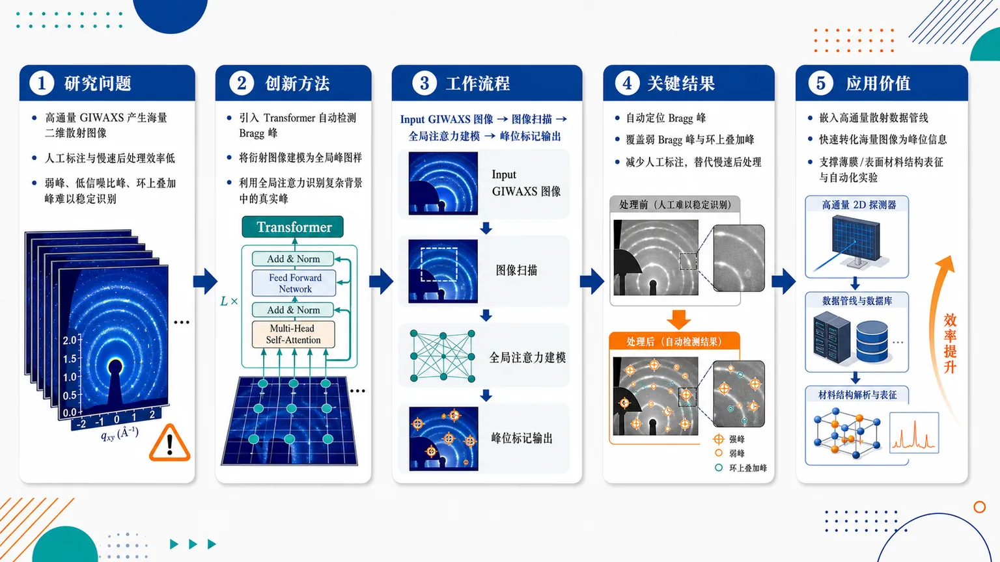
研究问题高通量 GIWAXS 薄膜/表面衍射实验会产生大量二维散射图像，传统 Bragg 峰识别依赖人工标注和慢速后处理，难以稳定发现弱峰、低信噪比峰，以及叠加在 Debye-Scherrer 环上的复杂峰。创新方法将 Transformer 引入 GIWAXS Bragg 峰自动检测，把衍射图像视为包含全局空间关系的峰图样进行建模；核心亮点是利用 Transformer 的全局注意力在复杂背景、环状散射和弱信号中定位真实 Bragg 峰，而不是只依赖局部阈值或人工规则。工作流程输入 GIWAXS 薄膜/表面二维衍射图像；模型扫描图像中的散射斑点、弱峰、环上叠加峰和背景纹理；Transformer 捕捉远距离峰位关系与全局衍射结构；输出自动标记的 Bragg 峰位置，用于后续结构信息提取。关键结果方法能够自动检测 GIWAXS 数据中的 Bragg 峰，覆盖弱 Bragg 峰和叠加在 Debye-Scherrer 环上的困难案例；目标效果是减少人工标注、替代慢速后处理，并加快从高通量散射数据中提取结构信息。应用价值可嵌入高通量散射实验数据管线，快速把海量衍射图转化为可分析的峰位信息，帮助研究者更高效获取薄膜和表面材料的原子/分子尺度结构特征，适用于材料筛选、薄膜表征和自动化实验平台。核心概览
该论文面向薄膜与表面 GIWAXS 高通量数据分析，提出基于 Transformer 的自动布拉格峰检测方法，用于识别弱峰及 Debye–Scherrer 环上峰，减少人工峰标注与解析工作。
方法要点
- 使用 Transformer 架构进行 grazing-incidence diffraction / GIWAXS 图像中的峰检测。
- 目标任务是自动识别布拉格峰位置，而非依赖人工逐一分析。
- 方法关注弱峰、与 Debye–Scherrer 环重叠或位于其上的峰等检测难例。
- 应用场景指向薄膜、表面结构表征及高通量散射实验数据处理。
- 训练数据、模型结构细节、损失函数、评价指标等摘要未详述。
关键结果
- 摘要明确指出该方法能够自动识别布拉格峰位置。
- 方法被设计用于减少 GIWAXS 海量数据中的人工分析负担。
- 对弱峰和 Debye–Scherrer 环上峰等困难情形具有针对性。
- 可服务于原子/分子尺度结构信息提取与高通量散射数据处理。
- 具体检测精度、召回率、与传统方法或其他深度学习方法的量化对比，摘要未详述。
创新性判断
- 可能的新颖点在于将 Transformer 引入 grazing-incidence diffraction / GIWAXS 的自动峰检测任务，尤其针对复杂二维散射图中的布拉格峰定位。
- 相比传统阈值、滤波或人工标注流程，该方法可能更适合处理海量数据和复杂背景；但摘要未提供直接对比，创新幅度需结合全文判断。
- 对弱峰及 Debye–Scherrer 环干扰下峰的识别是一个较有应用价值的切入点，可能体现了方法在困难峰检测场景中的针对性。
- 是否在模型架构、数据构建、标注策略或物理先验融合上有实质创新，摘要未详述，无法确定。
-
08
📊 含图深析
📄 摘要：面向玄武岩纤维/环氧复合材料界面弱、早期损伤和抗压稳定性不足的问题，构建实验—计算一体框架。通过电泳沉积在玄武岩纤维上涂覆还原氧化石墨烯，并在基体中引入 rGO，结合物理信息机器学习预测屈曲性能和损伤演化。
💡 亮点：双相 rGO 功能化被用于改善玄武岩/环氧复合材料界面和压缩稳定性。物理信息模型把屈曲性能与损伤演化纳入同一预测框架。
📖 展开分析 + 配图
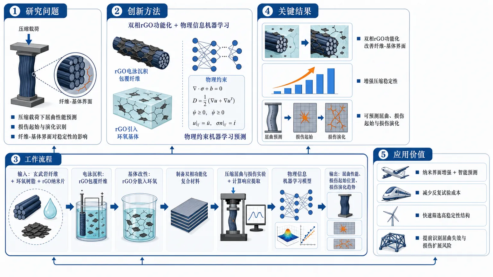
研究问题如何准确预测并提升rGO功能化玄武岩/环氧复合材料在压缩载荷下的屈曲性能、损伤起始与损伤演化，尤其是纤维-基体界面对轻量复合结构承载稳定性的影响。创新方法提出“双相rGO功能化+物理信息机器学习”框架：一方面将rGO通过电泳沉积涂覆在玄武岩纤维表面，另一方面把rGO引入环氧基体，相当于在纤维外壳和树脂内部同时构建纳米增强网络；再用带物理约束的机器学习模型预测屈曲与损伤全过程。工作流程输入玄武岩纤维、环氧树脂与rGO纳米片；先电泳沉积形成rGO包覆纤维，再将rGO分散进环氧基体并制备双相功能化复合材料；随后开展压缩屈曲与损伤实验，结合计算框架提取力学响应；最后将实验/计算数据输入物理信息机器学习模型，输出屈曲性能、损伤起始位置和损伤演化趋势。关键结果研究表明，rGO双相功能化是改善纤维-基体界面、增强压缩稳定性和调控损伤响应的关键策略；物理信息机器学习能够用于预测屈曲性能、损伤起始和损伤演化。但摘要未给出具体预测精度、屈曲载荷提升比例或与传统模型的定量对比。应用价值为航空航天、交通运输、风电叶片等轻量承载结构提供一种“纳米界面增强+智能预测”的设计路径，可减少反复试验成本，辅助快速筛选高稳定性复合材料结构，并提前识别潜在屈曲失效和损伤扩展风险。核心概览
该论文面向石墨烯增强玄武岩/环氧复合材料，结合实验、计算框架与物理信息机器学习，预测其屈曲性能和损伤演化，重点关注界面、早期损伤与压缩稳定性问题。
方法要点
- 采用双相 rGO 功能化策略：对玄武岩纤维进行电泳沉积 rGO 涂覆，同时在环氧基体中引入 rGO。
- 构建实验与计算相结合的研究框架，用于分析复合材料力学行为。
- 引入物理信息机器学习方法，用于预测屈曲性能和损伤演化。
- 研究重点包括界面弱化、早期损伤发展以及压缩稳定性不足等问题。
- 具体机器学习模型类型、物理约束形式、输入特征与训练数据规模摘要未详述。
关键结果
- 摘要明确表明该研究旨在预测玄武岩/环氧复合材料的屈曲性能与损伤演化。
- 双相 rGO 功能化被用于改善或调控纤维-基体体系中的界面与压缩稳定性问题。
- 论文关注早期损伤识别/演化和界面弱化对结构稳定性的影响。
- 具体性能提升幅度、预测精度、对照实验结果和统计显著性摘要未详述。
创新性判断
- 可能的新颖点在于将“双相 rGO 功能化”与“物理信息机器学习”结合，用于玄武岩/环氧复合材料的屈曲和损伤演化预测。
- 相比单纯实验或传统数据驱动模型，该工作可能强调物理约束对机器学习预测可靠性的提升，但摘要未说明具体物理信息如何嵌入。
- 同时在纤维表面和基体中引入 rGO 的协同增强设计，可能是其材料改性层面的创新点；不过其相对已有石墨烯改性复合材料工作的差异程度，摘要无法确定。
- 是否实现显著优于传统模型或单相改性的效果，摘要未详述，需依赖全文数据判断。
-
09
📊 含图深析
📄 摘要：系统综述并定量荟萃分析监督机器学习预测钙钛矿太阳能电池 PCE 的研究。讨论材料组成、器件结构和制备参数之间的复杂耦合，以及不同监督模型在效率预测和工艺优化中的应用表现。
💡 亮点：该综述汇总监督学习在钙钛矿太阳能电池 PCE 预测中的数据、特征和模型。量化比较有助于辨别哪些 ML 策略真正能服务器件优化。
📖 展开分析 + 配图
研究问题钙钛矿太阳能电池的功率转换效率受材料组成、器件结构和制备参数多因素耦合影响，传统试错优化成本高、效率低；核心问题是：已有监督机器学习能否可靠预测并辅助优化 PSC 的 PCE，以及不同研究中的模型、数据和评价方式表现如何。创新方法将“系统综述”与“定量荟萃分析”结合，不再只训练单一预测模型，而是把已有监督机器学习研究作为整体证据库，横向比较模型类型、输入特征、数据来源和性能评估方式，形成面向 PSC PCE 预测的机器学习方法地图。工作流程输入已有 PSC 机器学习研究文献及其中的材料组成、器件结构、制备参数、PCE 数据和模型性能指标；经过系统检索、文献筛选、特征归类、监督学习模型整理、评价指标汇总与定量荟萃分析；输出不同模型应用模式、数据使用方式、性能比较结果和数据驱动优化建议。关键结果研究表明监督机器学习已广泛用于 PSC PCE 预测与优化，并能捕捉材料组成、器件结构、制备参数与效率之间的复杂关系；论文整理了不同监督模型、数据来源和性能评估方式，为识别当前研究趋势、方法差异和评价规范提供了综合证据，但摘要未给出最佳模型或具体精度数值。应用价值该研究为钙钛矿太阳能电池的高效率设计提供数据驱动路线图，可帮助研究者选择合适的监督学习模型、规范数据与性能评价、减少盲目实验筛选，并推动 PSC 材料和器件优化从经验试错转向证据整合与智能预测。核心概览
本文是一篇关于监督机器学习预测钙钛矿太阳能电池功率转换效率（PCE）的系统综述与定量荟萃分析，属于光伏材料信息学/机器学习辅助器件优化方向。
方法要点
- 采用系统综述方法，梳理已有监督机器学习用于预测钙钛矿太阳能电池 PCE 的研究。
- 进行定量荟萃分析，用于综合评估相关研究结果；具体统计方法摘要未详述。
- 关注输入变量包括材料组成、器件结构和制备参数等。
- 比较或讨论不同监督学习模型在 PCE 预测与工艺优化中的适用性；具体模型类别摘要未详述。
- 强调材料—结构—工艺参数与 PCE 之间的复杂耦合关系。
关键结果
- 论文明确指出，监督机器学习已被用于钙钛矿太阳能电池 PCE 预测。
- 材料组成、器件结构和制备参数与 PCE 存在复杂耦合关系，是模型预测的重要信息来源。
- 不同监督模型在性能预测和工艺优化中的适用性存在差异。
- 该研究通过系统综述和定量荟萃分析对相关工作进行了综合评估；具体量化结论、最佳模型或性能指标摘要未详述。
创新性判断
- 可能的新颖点在于将“系统综述”与“定量荟萃分析”结合，用于总结监督机器学习预测钙钛矿太阳能电池 PCE 的研究，而不仅是单一实验或单一模型研究。
- 相比普通综述，其潜在贡献可能是对不同模型、输入特征和应用场景进行更系统的横向比较；但具体比较框架和量化结果摘要未详述。
- 其创新性更偏向研究综合与方法学评估，而非提出新的机器学习算法或新的钙钛矿器件体系；是否包含新指标或新分析流程，摘要无法确定。
-
10
📊 含图深析
📄 摘要：从神经积分方程及其 PDE 形式重新审视前馈深度神经网络与离散动力系统的类比。以 Burgers 方程和 Eikonal 方程为例，对比数值/精确解与 PINN 解，指出 PINN 学习与标准数值离散是逼近同一动力学的不同计算路径。
💡 亮点：文章把 DNN、神经积分方程和 PDE 动力学联系起来，并用 Burgers/Eikonal 方程检验 PINN。该视角有助于理解物理信息学习和传统数值方法的差异。
📖 展开分析 + 配图
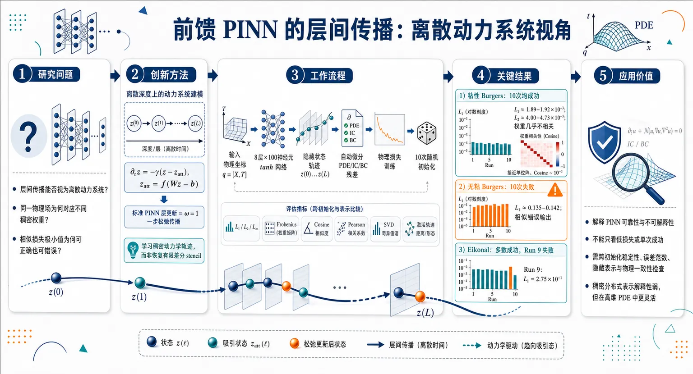
研究问题前馈 DNN/PINN 的层间传播是否可以被看作离散动力系统？在求解 PDE 时，为什么不同随机初始化会得到几乎相同的物理场输出，却对应完全不同、不可解释的稠密权重；以及为什么相似的损失极小值既可能产生正确解，也可能产生错误解。创新方法将普通前馈 PINN 重新表述为“神经积分方程离散化得到的松弛型离散动力系统”：把网络层数视为离散时间，把隐藏状态 z 视为随深度演化的信号，用 ∂t z = −γ(z−zatt) 描述其向非线性吸引子 zatt=f(Wz−b) 的推进；标准 PINN 层更新对应 ω=1 的一步松弛传播。Aha 点是：PINN 学习不是恢复有限差分 stencil，而是在高维参数空间中寻找许多可等价映射到同一函数输出的稠密动力学轨迹。工作流程输入物理坐标 q，如 Burgers 方程中的 [空间 X, 时间 T]；经过 8 层、每层 100 神经元的 tanh 前馈网络，形成深度方向上的离散状态轨迹 z(0)→z(1)→…→z(L)；用自动微分计算 PDE、初始条件和边界条件残差，构造物理损失；对同一 PDE 进行 10 次不同随机初始化训练；输出预测物理场 u(X,T)，并用 L1/L2/L∞ 误差、Frobenius 距离、cosine similarity、Pearson correlation、SVD 奇异值谱和隐藏层激活轨迹比较不同训练路径。关键结果粘性 Burgers 方程中，10 次训练都得到低误差物理解，L1 约 1.89–1.92×10⁻³，L2 约 4.00–4.73×10⁻³，但对应权重矩阵几乎不相关，cosine similarity 多为 10⁻² 量级，Pearson 相关矩阵近似单位阵。无粘 Burgers 方程中，10 次训练全部失败，L1 约 0.135–0.142，却仍收敛到相似的错误输出，说明相同或相近损失极小值不保证物理正确。Eikonal 方程多数运行误差极低，但 Run 9 灾难性失败，L1=2.75×10⁻¹，显示成功与失败轨迹可在同一设置下并存。应用价值为 PINN 的可靠性和不可解释性提供动力系统层面的解释：相同物理解可能由大量互不相关的参数配置产生，单个权重矩阵不能像有限差分算子那样直接解释。该研究提示科学机器学习中不能只看低损失或单次成功训练，还应检查跨初始化稳定性、误差范数、隐藏表示和物理一致性；同时说明 PINN 的稠密分布式表示虽计算成本高、解释性弱，但可能在高维 PDE 和传统网格法困难的问题中提供灵活优势。第一部分：核心概览（Overview）
该研究把前馈深度神经网络重新表述为由神经积分方程离散化得到的离散动力系统，并用 Burgers 方程与 Eikonal 方程检验 PINN 学习路径与传统有限差分/谱方法的差异。核心贡献在于揭示：PINN 的相同物理解可由大量互不相关的权重配置产生，体现逆映射退化性；成功收敛的低误差解和失败收敛的错误解都可能对应相似的损失极小值。该视角把 PINN 的表达能力、不可解释性、计算成本与高维优势统一到动力系统框架中，在 PINN 理论解释与科学机器学习可靠性研究中具有基础性定位。
---
第二部分：结构化快速回顾
《Deep Neural Networks as Discrete Dynamical Systems: Implications for Physics-Informed Learning》（None，）
背景
PINNs 通过把 PDE、初始条件和边界条件写入损失函数来求解物理问题，但其内部学习动力学、权重可解释性和多解性仍不清楚。已有 Neural ODE 把网络深度解释为连续时间，该研究转向积分表示及其离散形式，强调层间传播的松弛动力学。
方法
前馈 DNN 被写成层间递推映射，并进一步表述为
∂t z = −γ(z − zatt) 的松弛型动力系统。PINN 的标准层更新对应 ω = 1 的离散时间推进。实验使用 Burgers 方程的粘性与无粘形式，以及 Eikonal 方程；每个问题进行 10 次独立随机初始化训练，用 L1、L2、L∞ 误差和权重矩阵的 Frobenius 距离、cosine similarity、Pearson correlation、SVD 谱结构分析退化性。
结果
粘性 Burgers 方程中，10 次 PINN 运行均达到低误差：L1 ≈ 1.89–1.92 × 10⁻³，L2 ≈ 4.00–4.73 × 10⁻³，但权重矩阵几乎不相关，cosine similarity 多为 10⁻² 量级。无粘 Burgers 方程中，10 次运行均失败，L1 ≈ 0.135–0.142，却仍产生相近的错误输出。Eikonal 方程多数运行误差很低，但 Run 9 明显失败，L1 = 2.75 × 10⁻¹。
讨论
PINN 学习不是传统数值离散的直接替代，而是一条不同的计算路径。有限差分方法依赖稀疏、结构化、可解释的算子；PINN 学到的是稠密、分布式、非唯一的参数表示。相同函数空间输出可由不同参数空间轨迹实现。
局限
无粘 Burgers 方程失败的机制未被进一步诊断；研究主要展示退化性与动力系统类比，尚未给出可保证收敛到物理解的训练准则。对 Eikonal 方程的完整章节内容在给定材料中不完整。
结论
前馈 DNN/PINN 可被理解为深度方向上的离散动力系统；损失最小化与动力学固定点收敛并不等价。PINN 的物理解学习存在显著参数退化性，这解释了其高表达能力与低可解释性的并存，也提示高维 PDE 中 PINN 的潜在优势与风险。
---
第三部分：逐章节冷凝解析（Section-by-Section Condensing）
Abstract
DNNs are reformulated as discrete dynamical systems
核心观点是把前馈深度神经网络与由神经积分方程及其 PDE 形式导出的离散动力系统相联系。摘要开头直接界定研究对象：*"We revisit the analogy between feed-forward deep neural networks (DNNs) and discrete dynamical systems derived from neural integral equations and their corresponding partial differential equation (PDE) forms."*
这种表述不同于仅把网络看作函数逼近器，而是把层间传播解释为某种动力学演化。
PINN learning follows a different computational pathway from numerical discretization
PINN 与传统数值方法近似的是同一个底层物理动力学，但计算路径不同。摘要明确指出：*"PINN learning provides a different computational pathway compared to standard numerical discretization in approximating essentially the same underlying dynamics of the system."*
这意味着 PINN 不是有限差分、有限体积或谱方法的简单神经网络版本，而是通过高维参数优化间接满足 PDE 约束。
Layer-wise evolution approaches attractors
DNN 的逐层传播被解释为向吸引子靠近的离散动力系统。摘要中给出核心判断：*"DNNs can be interpreted as discrete dynamical systems whose layer-wise evolution approaches attractors."*
这里的 attractor 不是物理空间中的稳定态，而是特征空间中网络层演化可能趋向的表示状态。
Inverse mapping degeneracy is central
同一个 PINN 解可能由多个不同权重配置产生，形成逆映射退化性。摘要使用的关键表述是：*"multiple parameter configurations may yield comparable solutions, reflecting the degeneracy of the inverse mapping."*
这解释了为什么不同随机初始化的 PINN 可能输出几乎相同的函数，却拥有完全不同的权重矩阵。
PINNs learn dense and less interpretable representations
与有限差分的结构化 stencil 不同，PINN 权重通常是稠密参数表示。摘要明确对比：*"In contrast to the structured operators associated with finite-difference (FD) procedures, PINNs learn dense parameter representations that are not directly associated with classical discretization stencils."*
代价是可解释性降低、参数量增加和计算成本上升：*"This distributed representation generally involves a larger number of parameters, leading to reduced interpretability and increased computational cost."*
Flexibility may help in high-dimensional regimes
尽管稠密分布式表示带来成本，但可能在传统网格法失效的高维问题中有优势。摘要给出平衡判断：*"the additional flexibility of such representations may offer advantages in high-dimensional settings where classical grid-based methods become impractical."*
这对应 PINN 在高维 PDE、反问题和复杂几何中的潜在价值。
---
Introduction
PINNs solve PDEs by embedding physics into the loss function
PINN 的基本特征是把控制方程直接纳入损失函数，从而求解正问题和反问题。引言指出：*"Traditional PINNs incorporate governing equations directly into the Loss function, enabling the solution of forward and inverse PDE problems without a reliance on labeled data."*
这种机制区别于监督学习，因为目标函数不必在全域已知。
PINNs have broad scientific motivation
PINN 已用于 PDE、化学动力学和分子静电学等科学问题。相关背景包括：*"Recent studies in the chemical physics literature have also explored PINNs for solving physically relevant systems, including applications to stiff chemical kinetics and molecular electrostatics."*
这表明研究关注的不只是机器学习理论，而是科学计算中的物理约束学习。
The central framework comes from neural integral equations
研究重新激活 DNN 与松弛型离散动力系统之间的类比，其来源是神经积分方程离散化。引言写道：*"we revisit the analogy between feed-forward DNNs and discrete dynamical systems in relaxation form, originating from the discretization of neural integral equations."*
该路径强调非局部积分核、层间松弛和特征空间动力学。
Layer propagation is interpreted as time stepping
网络层的传播可视为时间推进过程。关键表述为：*"the propagation of features across layers can be interpreted as a time-stepping process, in which the network evolves toward attractors that may, in principle, correspond to learned representations."*
层数 L 对应离散时间，隐藏状态 z(l) 对应随时间演化的信号。
The framework differs from Neural ODEs
Neural ODE 把网络深度解释为连续时间变量；该研究强调积分表示及其离散对应物。引言明确区分：*"This perspective differs from, but is related to, the framework of neural ordinary differential equations, where the depth of the network is interpreted as a continuous time variable."*
核心差异在于：*"we emphasize a formulation based on integral representations and their discrete counterparts, which leads to relaxation-type dynamics and potentially nonlocal interactions in feature space."*
The main target is learning dynamics and non-uniqueness
目标不是提出新的 PINN 架构，而是分析学习动力学与参数非唯一性。引言中给出主旨：*"The main objective of this work is to investigate the learning dynamics of deep neural networks, and in particular PINNs, through the lens of discrete dynamical systems."*
该视角揭示：*"multiple parameter configurations leading to essentially the same learned solution, revealing a fundamental non-uniqueness in the mapping between network parameters and physical outputs."*
FD schemes provide an interpretability contrast
有限差分方法作为对照，因为其算子结构明确。引言写道：*"classical numerical discretization methods, such as finite-difference (FD) schemes, which typically rely on structured and more directly interpretable operators."*
这种结构化算子通常表现为局部 stencil，例如三对角矩阵或带状矩阵；PINN 权重则是稠密矩阵。
Universal approximation does not explain construction across layers
通用逼近定理只能保证表达能力，不能说明层间如何构造表示。引言指出：*"universal approximation results guarantee the expressive power of neural networks, they do not address how such representations are constructed across layers."*
动力系统视角补充了这一缺口：*"this process can be interpreted as the evolution of a dynamical system towards a target state through a sequence of transformations."*
---
Physics-informed neural networks (PINNs)
DNNs are recursive nonlinear nonlocal maps
DNN 被定义为对输入数据递归施加非线性、非局部映射。章节开头写道：*"The basic idea of deep neural networks (DNNs) is to represent a given d-dimensional output y through the recursive application of a nonlinear and nonlocal map to the input data x."*
标准链式结构为
z(0)=x，
z(l)=f(W(l)z(l−1)−b(l))，
最终 z(L+1)=y。
Network architecture is explicitly layer-wise
对于包含输入层 x、L 个隐藏层、每层 N 个神经元、输出层 y 的 DNN，更新链为：*"the update chain x → z(1) … → z(L) → y reads symbolically as follows"*。
该式清晰给出隐藏层状态 z(l)、权重矩阵 W(l)、偏置 b(l) 与激活函数 f 的关系。
PINNs approximate PDE solutions
PINN 是用于近似 PDE 解的深度网络。原文定义为：*"PINNs are a class of deep neural networks designed to approximate solutions of partial differential equations (PDEs), which arise across a wide range of fields including physics, engineering, and chemical kinetics."*
输出 y(q) 被解释为物理场 u(q) 的近似。
The input coordinate q represents feature-space coordinates
在 1D PINN 中，输入和输出是变量 q 的标量函数。章节写道：*"In 1D PINNs, the input and output are taken in the form of scalar functions of a variable q, representing a coordinate in feature space (e.g. space or space-time)."*
随后规定物理空间和时间记为 𝒳 与 𝒯：*"we represent physical space and time using the notations 𝒳 and 𝒯 respectively."*
Hidden dimensions need not match input/output dimensions
PINN 的隐藏层维度可以远大于物理输入维度。文本指出：*"the dimensions of z for any layer need not be the same as the input/output dimensions."*
这为后续 Burgers 实验中 2 维输入 [𝒳,𝒯] → 100 维隐藏表示 → 标量输出 u 铺垫。
PINNs do not require full-domain target labels
PINN 不假定目标函数在整个区域已知。关键表述为：*"In contrast to standard supervised learning, the target function is not assumed to be known over the entire domain."*
训练依赖物理约束：*"the network is trained to satisfy a set of physical constraints, typically expressed in terms of a differential operator 𝒩."*
The loss combines data and physics
PINN 的复合损失为
E[W] = Edata + Ephysics。
数据项为 Edata = ||u(q) − udata(q)||，物理项为
Ephysics = ||𝒩[u(q)]|| = ||λ1𝒩PDE[u(q)] + λ2𝒩IC[u(q)] + λ3𝒩BC[u(q)]||。
原文解释：*"penalizes the residual of the governing equations (PDEs, initial and boundary conditions)."*
Data loss may be absent
并非所有 PINN 都是数据驱动。章节明确说明：*"Edata is not included for systems that are not data-driven."*
因此 PINN 可通过 PDE 残差、初始条件和边界条件自监督训练。
Automatic differentiation supplies derivatives
物理残差中的空间和时间导数通过自动微分获得。原文写道：*"The required spatial and temporal derivatives entering 𝒩 are computed via automatic differentiation through the network."*
这是 PINN 与传统有限差分离散导数的关键差异。
Optimization uses steepest descent or stochastic variants
参数更新为
W′ = W − α ∂E/∂W。
原文说明：*"The minimization of the Loss function is typically performed via a steepest descent procedure (or stochastic variants thereof)."*
其中 α 是学习率/松弛参数：*"α is a relaxation parameter controlling the convergence (learning rate) of the procedure."*
Loss landscapes contain many local minima
由于权重空间维度巨大，损失景观复杂，局部极小值很多。章节指出：*"Given the large dimensionality of the weight space 𝒲 and the complex structure of the Loss landscape, the number of local minima is generally very large."*
并且难以预判哪些极小值对应物理解：*"it is difficult to identify a priori those corresponding to physically meaningful solutions."*
PINNs train over collocation points
训练过程在区域内的配置点/搭配点上重复。图注给出：*"The procedure is repeated over a set of collocation points in the domain."*
这些 collocation points 是物理残差计算位置，不一定是带标签数据点。
The learned functional mapping is parameter-rich
PINN 学习输入输出关系
y(q)=Ff[x(q);W,b]，并要求
𝒩[y(q)]≈0。
原文强调：*"the functional mapping Ff is trained such that 𝒩[y(q)] ≈ 0, thereby embedding the governing equations directly into the learning process."*
Parameter count scales as O(LN²)
对于 L 个隐藏层、每层 N 个全连接神经元，自由参数量在大 N、L 下满足
P ∼ 𝒪(LN²)。
原文为：*"for a chain of L hidden layers, each made of N fully connected neurons, the number of free parameters scales as P ∼ 𝒪(LN²) for large N and L."*
这解释了 PINN 的高表达能力和高退化性来源。
Physics constraints regularize the solution space
大量参数赋予复杂函数逼近能力，而物理项约束可压缩可行解空间。章节总结为：*"This large parametric freedom enables the network to approximate complex functional dependencies, while the inclusion of physical constraints serves to regularize the solution space and guide the learning towards physically admissible solutions."*
---
DNNs as discrete dynamical systems
4.1 Time-like analogy of DNN layers
Neural ODEs connect continuous-time dynamics and neural networks
Neural ODE 被引入作为深度学习与动力系统结合的背景。原文写道：*"Neural Ordinary Differential Equations (Neural ODEs) have emerged as a powerful paradigm in deep learning, one that combines continuous-time dynamical systems with neural networks."*
该背景说明“层 = 时间”的思想已有连续版本。
ResNet is interpreted as forward Euler discretization
ResNet 更新为
z(l+1)=z(l)+F(z(l),ε)。
原文指出：*"It is quickly recognized that this is just a forward Euler discretization of the underlying ODE, ż = f(z), with F(z,ε)=εf(z), ε being the timestep."*
这将残差网络与数值时间推进直接相连。
Neural ODE parameterizes hidden-state derivatives
Neural ODE 形式为
dz(t)/dt = fθ(z(t),t)。
原文解释：*"the derivative of the hidden state with respect to time (or depth) is parametrized by a neural network."*
这里 fθ 是带参数 θ 的神经网络。
Continuous-depth networks avoid fixed discrete layer stacking
Neural ODE 不再简单堆叠离散层，而是通过数值求解器得到任意深度输出。原文表述：*"Instead of stacking discrete layers as in traditional ResNets, the output at any 'depth' t (≡ l) is obtained by solving the ODE from an initial state z(0) using numerical solvers."*
Neural ODEs offer memory and adaptivity advantages
Neural ODE 的优势包括伴随灵敏度反传的 𝒪(1) 内存成本、自适应计算、处理不规则时间序列以及动力系统理论联系。原文列出：*"memory efficiency (via the adjoint sensitivity method for backpropagation, achieving 𝒪(1) memory cost), adaptive computation ... the ability to handle irregular time-series data, and most important, a direct connection to dynamical systems theory."*
---
4.2 Discrete dynamical systems in relaxation form
Feature vectors become signals over input features
隐藏状态 z 被解释为依赖输入特征 x=x(q) 的信号。章节开头写道：*"We interpret the feature vectors z as signals depending on the input features x=x(q), whose evolution across layers can be described in terms of neural differential equations."*
这将网络内部表示从向量代数对象转化为随深度演化的场变量。
Stability and convergence concepts apply to PINNs
在该视角下，数值分析中的稳定性和收敛性概念可以迁移到 DNN/PINN。原文指出：*"standard concepts of stability and convergence from numerical analysis naturally apply to deep neural networks, including the PINN framework."*
Layer index is treated as discrete time
章节明确写道：*"the layer index of a deep neural network may be interpreted as a discrete time variable."*
因此 z(q,t) 同时依赖空间/特征坐标 q 与深度代表时间 t：*"the feature vector z can be promoted to a continuous field z(q,t) depending on both a spatial (or feature) coordinate q and a depth-representative time t."*
Standard DNN update is relaxation toward a nonlinear attractor
核心动力学为
∂t z = −γ(z − zatt)。
原文解释：*"the standard DNN update can be interpreted as a first-order relaxation dynamics toward a nonlinear attractor."*
其中 γ 控制松弛速率：*"The parameter γ controls the relaxation rate."*
The attractor is nonlinear activation of a nonlocal convolution
吸引子定义为
zatt(q,t)=f(Z(q,t))，
其中
Z(q,t)=−b(q,t)+∫W(q,q′,t)z(q′,t)dq′。
原文说明：*"The attractor is defined through a nonlinear transformation of a linearly convoluted signal."*
W(q,q′,t) 是卷积核，b(q,t) 是偏置：*"W(q,q′,t) is a convolution kernel at time t and b(q,t) is a bias term."*
Expressive power comes from nonlocal mixing and local nonlinearity
DNN 的表达能力来自两类操作组合：非局部线性混合和局部非线性变形。原文写道：*"The dynamics in Eq. 10 describes a relaxation of the signal z towards the attractor zatt, which itself evolves through the combined action of nonlocal linear mixing (via W) and local nonlinear deformation (via f)."*
并进一步说明：*"The interplay of these two operations underlies the expressive power of deep neural networks."*
Steady states satisfy a fixed-point condition
稳态满足
z* = f(Wz* − b)。
章节指出：*"The steady states of the dynamics are given by the fixed-point condition."*
该方程可能有多个解：*"which may admit multiple solutions depending on the nonlinearity of f and the choice of W,b."*
Deep equilibrium models correspond to infinite-depth attractor finding
DEQ 使用寻找无限深度系统平衡点的策略。原文写道：*"This strategy of finding the equilibrium/attractor for an 'infinite' depth system is used by Deep Equilibrium Models (DEQ)."*
理想情况是网络达到学习问题的真解后停止演化：*"z(q,t) should stop evolving after reaching the true solution of the learning problem."*
The fixed-point equation exposes inverse underdetermination
由固定点方程可得
Wz* − b = f⁻¹(z*)。
原文强调：*"This representation also highlights the inverse nature of the learning problem."*
该参数方程通常欠约束：*"Since this system is generally underconstrained, multiple parameter sets can yield the same fixed point z*."*
Discrete-time relaxation recovers feed-forward DNNs
离散形式为
zi(t+1) = (1−ω)zi(t) + ω ziatt,(t)，
其中 ω=γΔt，i∈[0,N−1]。
原文指出：*"For ω=1, this reduces exactly to the standard layerwise update of a feed-forward neural network (PINN here), with the layer index playing the role of discrete time."*
The propagator contains identity relaxation and nonlinear map
传播算子写作
z(t+1)=Tf[W(l+1),b(l+1);ω]z(t)，
Tf[W,b;ω]=(1−ω)I+ωf[W,b]。
当 ω=1 时：*"Eq. 16 becomes ... which is the standard discrete feed-forward DNN update."*
Finite-layer DNNs need not dynamically relax to an attractor
标准有限层网络并不保证在动力系统意义上达到吸引子。原文写道：*"standard implementations provide no guarantee that a finite-layer DNN will relax to zatt in the usual dynamical sense (owing to an ever evolving attractor)."*
这里的原因是每一层的权重和偏置可变，吸引子本身也随深度变化。
Loss minimization and fixed-point convergence may not coincide
理想无限深度情形下，z=zatt=ydata 表示学习完成；但标准 PINN 损失没有显式约束底层神经 PDE。原文指出：*"the Loss function (Eq. 2) contains no explicit information about the underlying neural PDE, which therefore evolves in an essentially unconstrained manner as the weights are updated at each optimization step."*
直接后果是：*"convergence to a fixed point and minimization of the Loss often do not coincide."*
Different neural PDE trajectories may pass through the same final output
标准 PINN 只要求不同权重诱导的神经 PDE 轨迹在最后一层通过同一个输出点。原文写道：*"the standard formulation only enforces that trajectories generated by different neural PDEs ... all pass through the common point z(q,t)=ydata at t=L+1 for any q via the physics-informed Loss."*
这正是参数空间退化而函数空间相近的原因。
Degenerate representations arise even with identical outputs
损失最小化在权重空间高度欠定。章节总结：*"Loss minimization is highly underdetermined in weight space."*
其表现为：*"This manifests as degenerate representations even when the final network output appears identical."*
---
Demonstrating degeneracy in PINNs
Degeneracy is tested on hydrodynamic PDEs
实验展示 PINN 学习路径的非唯一性，任务包括 Burgers 方程和 Eikonal 方程。章节开头写道：*"we demonstrate the non-uniqueness in the learning paths of PINNs applied to representative PDEs in hydrodynamics."*
具体问题为：*"We consider the Burgers’ (viscous and inviscid) equations and the Eikonal equation."*
Each problem uses ten independent training runs
每个 PINN 架构进行 10 次独立训练。原文明确：*"perform ten independent training procedures for the PINN architecture chosen for each problem."*
独立运行定义为不同随机初始化：*"An independent run here corresponds to a training process performed starting from a different set of initial network weights, drawn at random from a uniform distribution using a different seed."*
Hyperparameters are held fixed across runs
除随机初始权重外，训练超参数保持相同。原文写道：*"All the other training hyperparameters remain the same across each run."*
训练时间覆盖一个完整对流时间：*"The networks are trained over one full convection time for the corresponding problems."*
Batch size equals training data size to reduce SGD randomness
为了最小化随机梯度下降带来的非确定性，batch size 等于训练数据大小，即只用一个 batch。原文写道：*"the batch size is kept equal to the training data size (i.e., one batch only) in order to keep the non-determinism due to SGD ... to a minimal."*
因此观测到的差异主要来自初始化和损失景观，而非 mini-batch 随机性。
Error norms are defined over n test points
误差 e = u − uref，其中 uref 是精确解或标准数值模拟解，u 是 PINN 解。原文定义：*"Here, uref denotes the reference solution, either exact or obtained from standard numerical simulations, while u represents the PINN solution."*
三个范数为：
L1 = (1/n)Σ|ei|，
L2 = [(1/n)Σei²]¹ᐟ²，
L∞ = max|ei|。
Weight similarity is quantified by Frobenius, cosine, and Pearson metrics
对任意两次运行的同一层权重 W¹、W²，定义相对 Frobenius 范数、cosine similarity 和 Pearson correlation。原文说明：*"The relative Frobenius norm measures the normalized difference between weight matrices, and the cosine similarity quantifies their alignment across different training runs."*
Pearson 相关衡量展平权重向量的线性依赖：*"The Pearson correlation calculates the linear dependence of the flattened weight vectors."*
Randomness leads to non-interpretable learning paths
章节目标是展示高度退化解空间中，随机性如何产生难以解释的解。原文写道：*"We now present examples illustrating how randomness can lead to solutions in a manner that is not immediately apparent or easily interpretable, arising from a highly degenerate solution space."*
---
5.0.1 Viscous Burgers equation
The viscous Burgers equation models nonlinear transport and diffusion
粘性 Burgers 方程被作为非线性输运和扩散模型。原文写道：*"the viscous Burgers equation, widely used as a model for nonlinear transport and diffusion in reacting and turbulent flows."*
方程为
∂𝒯u + u∂𝒳u = ν∂²𝒳𝒳u。
The viscosity and conditions are specified
粘性系数设为 ν = 0.01/π：*"The viscosity ν is kept as 0.01/π."*
初始条件为
u(𝒳,0)=sin(2π𝒳)；边界条件为
u(0,𝒯)=u(1,𝒯)=0。
PINN uses tanh nonlinear marching with ω=1
对于 PINN，松弛参数 ω=1，传播算子成为
Tf[W,b;1]=f[W,b]。
原文写道：*"The propagator for PINN (ω=1) becomes, Tf[W,b;1]=f[W,b]."*
非线性时间推进为
z(t+1)=tanh(W(t+1)z(t)+b(t+1))。
The Burgers PINN has 2 input features, 8 hidden layers, and 100 neurons per layer
网络输入为 z(0)(q)=[𝒳,𝒯]，隐藏层数 L=8，每层 N=100 个神经元，输出为标量 u(𝒳,𝒯)。原文写道：*"takes a 2 dimensional/feature input z(0)(q)=[𝒳,𝒯], passes it through L=8 hidden layers of N=100 neurons each ... and finally maps it to a scalar output u(𝒳,𝒯)."*
结构为：
z(0)[𝒳,𝒯] → z(1)[100] → … → z(8)[100] → u(𝒳,𝒯)。
Equal hidden width creates a fixed-resolution discrete feature grid
每个隐藏层神经元数相同，允许把 q 看作空间样离散变量，把层数看作时间样变量。原文表述：*"The use of an equal number of neurons in each layer corresponds to a grid in the discrete space-like variable q, whose resolution remains fixed as the system evolves in the depth-representative time t."*
All viscous Burgers runs achieve low error
10 次 PINN 运行与参考数值解吻合良好。原文总结：*"The PINN-predicted solutions reported in Fig. 2 show a good agreement with the standard reference numerical solution."*
Table 1 中，在 t=0.3 s、100 个均匀空间测试点上：
- L1 error 范围约 1.89×10⁻³–1.92×10⁻³；
- L2 error 范围约 4.00×10⁻³–4.73×10⁻³；
- L∞ error 范围约 2.58×10⁻²–4.31×10⁻²。
图表说明为：*"Error comparison ... against reference solutions at t=0.3 s over a uniform spatial grid of 100 test points."*
All viscous runs reach essentially the same loss minima
粘性 Burgers 作为成功学习案例，不同随机初始化最终输出一致且物理可接受。原文写道：*"All the runs reach essentially the same Loss function minima."*
动力系统解释为：*"the trajectory points of the signal z(q,t=L+1) for the discrete systems from the runs coincide with each other, and also with a numerically acceptable solution to the problem."*
Weight matrices are dense and lack low-order structure
不同运行的权重均值和标准差没有显著低阶结构。原文描述：*"the mean and standard deviations show no lower order structures and are rather dense matrices."*
单次运行的权重也同样稠密：*"The same is observed for the individual weight matrices for each run as well."*
Pairwise weight similarities show strong non-uniqueness
Table 2 中粘性 Burgers 的 Run 1 与 Run 2 层间比较显示 Frobenius 距离较大、cosine similarity 很低。原文解释：*"a high Frobenius norm and low cosine similarity of 𝒪(10−2) acts as the evidence for the same."*
具体数值包括：
- Layer 1：fro = 1.695, cos = 0.0153；
- Layer 2：fro = 1.628, cos = −0.0030；
- Layer 4：fro = 1.631, cos = 0.0110；
- Layer 7：fro = 1.733, cos = 0.0050。
Layer 0 和 Layer 8 的 cosine 稍高，分别为 0.0813 与 0.1465，但整体仍不支持权重一致性。
Inter-run Pearson correlations are effectively identity matrices
不同运行权重之间几乎无相关性。原文写道：*"the correlation matrices of the network layers are identity matrices effectively."*
这意味着同一层的不同训练实例之间，除自身与自身比较外，展平权重向量缺乏线性相关。
SVD spectra reveal shared directional structure despite random entries
虽然权重条目不相关，奇异值谱却显示层内存在相似方向结构。原文指出：*"the spectral representations of trained weight matrices in Fig. 5 show a preferred set of directions in each layer."*
10 次运行的奇异值 σ 通过 SVD 计算：*"The singular values σ of the trained weight matrices for all the runs are calculated using SVD."*
平均谱的标准差区域较小：*"The variation from the averages, represented using standard deviation regions, remains quite low."*
Run 2 deviates spectrally yet reaches the same loss minimum
即使 Run 2 在谱上偏离均值最大，也到达同样低误差区域。原文写道：*"Run 2 seems to have the highest deviation from the average yet settling into the same Loss minima."*
这进一步说明函数空间输出相近不要求权重空间结构相近。
PINNs do not recover classical structured operators
从可解释性角度看，独立运行得到的稠密且不相关权重没有恢复网格法常见的结构算子。原文明确指出：*"the learned dynamics do not recover the structured operators typically associated with grid-based discretizations of PDEs, where information is concentrated in a few entries (e.g., tridiagonal matrices)."*
因此 PINN 权重不能直接解释为有限差分 stencil。
Trained weights approximate random near-Gaussian distributions
已有研究显示这类问题中权重条目和谱性质近似随机高斯。原文写道：*"the trained weights exhibit an approximately random, near-Gaussian distribution, both in their entries and in their spectral properties."*
这种表示是分布式的：*"The representation appears to be distributed across the parameter space."*
Distributed representations trade interpretability for robustness
欠约束损失允许结构化和非结构化表示产生可比解。原文总结：*"both structured and unstructured representations can yield comparable solutions, with the resulting distributed representation offering robustness at the expense of interpretability."*
这正是 PINN 的优势与代价：表达灵活但难以解释。
Parameter-to-solution mapping is highly degenerate
动力系统视角下，W,b → z(q,t=L+1)=u(𝒳,𝒯) 的映射高度退化。原文写道：*"the mapping between parameters W,b and the resulting solution z(q,t=L+1)=u(𝒳,𝒯) is highly degenerate."*
不同参数实现可在函数空间产生相似表示：*"allowing different parameter realizations to yield similar representations in function space, even if their underlying dynamics differ."*
---
5.0.2 Inviscid Burgers equation
Random-matrix abundance does not guarantee successful PINN learning
无粘 Burgers 章节首先反驳一个可能误解：随机矩阵比三对角矩阵多得多，不意味着 PINN 一定能找到好解。原文写道：*"The fact that random matrices are astronomically more numerous than tridiagonal ones does not per se guarantee that a PINN will always find a suitable solution."*
The inviscid Burgers equation models shocks and nonlinear waves
无粘 Burgers 方程为
∂𝒯u + u∂𝒳u = 0。
原文称其为：*"a prototypical model for shock formation and nonlinear wave propagation."*
The initial condition is intentionally discontinuous
初始条件为 Riemann 型间断：
u(𝒳,0)=1, 𝒳<0.5；u(𝒳,0)=0, 𝒳≥0.5。
原文说明：*"We take a Riemann type initial condition, which is intentionally discontinuous."*
边界条件为
u(0,𝒯)=1, u(1,𝒯)=0。
PINNs are known to struggle with shocks
选择间断初值是为了测试 PINN 在 shock 问题中的困难。原文指出：*"it is known that traditional PINNs struggle to capture shocks without additional safeguards, consistent with known gradient pathologies and optimization difficulties of PINNs."*
这涉及双重困难：PDE 解的非光滑性和优化过程的梯度病态。
The same architecture fails in all inviscid runs
无粘 Burgers 的 PINN 在所有运行中失败。原文直接写道：*"The present network, however, fails to learn the problem in all the runs."*
Table 1 中 t=0.3 s、100 个测试点误差明显高于粘性情形：
- L1 error 范围 1.35×10⁻¹–1.42×10⁻¹；
- L2 error 范围 1.91×10⁻¹–2.00×10⁻¹；
- L∞ error 范围 5.12×10⁻¹–6.30×10⁻¹。
Runs converge to similar but incorrect outputs
虽然输出之间几乎相同，但并非数值可接受解。原文写道：*"While the predicted solutions from both runs are nearly identical, they are not numerically acceptable."*
动力系统解释为：*"the discrete trajectories arising out of the corresponding neural PDEs, pass through to the same point in the Loss function landscape at t=L+1, albeit an incorrect one."*
The error landscape is more rugged in high dimensions
错误但一致的收敛暗示高维误差景观更加崎岖。原文表述为：*"suggesting a more rugged error landscape in high dimensions."*
这说明 PINN 的损失最小值可能稳定但物理错误。
Trained weights again lack structured patterns
与粘性 Burgers 类似，无粘 Burgers 权重集成统计没有明显结构。原文写道：*"Ensemble representations of the trained weights in Fig. 3 show a similar lack of structures analogous to the viscous case."*
这说明失败解同样可以由稠密、非结构化权重实现。
Latent trajectories demonstrate learning-path degeneracy
对输入 [𝒳=0.6,𝒯=0.3]，跟踪层间隐藏状态 z(q,t) 的演化。原文写道：*"The degeneracy in the learning procedure is explicitly demonstrated through the evolution of z(q,t) across the deep layers for an 2-feature input signal at [𝒳=0.6,𝒯=0.3]."*
图 6 只展示每层 100 个神经元中的 5 个代表轨迹：*"For clarity, only 5 representative neuron trajectories are shown out of 100 per deep layer."*
Different runs produce markedly different neuron paths
同一个输入下，不同随机初始化导致给定神经元的激活路径显著不同。原文指出：*"Across independent runs, the activation of a given neuron follows markedly different paths, reflecting differences in the learned weights."*
这种差异从第一隐藏层开始：*"These differences originate from the first hidden layer itself, where the input is projected into a higher-dimensional latent space."*
Different latent paths collapse to the same incorrect output
尽管内部路径不同，输出却收敛到同一个错误值。原文写道：*"starting from the same input, the trajectories of different runs collapse to essentially the same, incorrect output."*
这清楚体现“内部动力学不同、宏观输出相似”的退化性。
Activation statistics reveal strongest variability in hidden layers
图 7 汇总了 10 次运行的激活均值和标准差。原文指出：*"The hidden layers exhibit the strongest activation variability, as indicated by the elevated standard deviation regions."*
这意味着隐藏层是最具表达性、也最不稳定的表示区域：*"suggesting that the latent representations are most expressive in these layers."*
Inviscid activations vary more sharply across layers
无粘 Burgers 的激活统计表现出更尖锐的层间变化。原文写道：*"For the inviscid Burgers’ equation, the activation statistics exhibit substantially sharper layer-to-layer variations, particularly in the standard deviation activation maps."*
早期隐藏层激活较弱且空间分布不足：*"the early hidden layers display comparatively weaker and less spatially distributed activation patterns."*
Feature propagation is less coherent for the shock problem
无粘情形出现特征放大和抑制的突变，表明信息传播不连贯。原文描述为：*"a less coherent propagation of informative features through the network depth, with abrupt changes in latent feature amplification and suppression across layers."*
这种内部动力学异常可能关联 shock 主导问题中的优化困难：*"Such irregular internal representation dynamics may be associated with the optimization difficulties commonly encountered in shock-dominated hyperbolic problems."*
The cause of non-learnability is not analyzed
章节明确承认未进一步分析失败原因：*"An analysis to determine the cause of this non-learnability by the network is not performed in the present context."*
因此只能把失败与表示动力学异常、shock 难题和优化困难联系起来，不能给出因果证明。
Viscous activation patterns are smoother and more stable
相较之下，粘性 Burgers 激活统计更平滑，早期隐藏层更具空间分布性。原文写道：*"the viscous case exhibits comparatively smoother activation statistics and more spatially distributed activation patterns in the early hidden layers."*
这说明扩散项可能使表示演化更稳定。
Neuron trajectories show multiple admissible internal paths
神经元轨迹图显示跨神经元和跨层的显著变异。原文写道：*"The neuron trajectory plots in Fig. 7 additionally demonstrate substantial variability across neurons and layers."*
动力系统解释为：*"distinct latent evolution pathways through the network depth, indicating the existence of multiple admissible internal solution trajectories capable of producing comparable macroscopic predictions."*
Weight non-uniqueness is quantified similarly to the viscous case
Table 2 中无粘 Burgers 的 Run 1 与 Run 2 权重比较也显示低 cosine similarity：
- Layer 0：fro = 1.473, cos = 0.0124；
- Layer 1：fro = 1.488, cos = 0.0139；
- Layer 2：fro = 1.439, cos = −0.0190；
- Layer 7：fro = 1.431, cos = −0.0235；
- Layer 8：fro = 1.254, cos = 0.1837。
原文总结：*"the similarity metrics in Tab. 2 quantify the non-uniqueness of the learned weights, which is consistent with the viscous case."*
Inviscid spectra may be closer even when the true solution is missed
无粘 Burgers 的独立运行权重谱相似性反而更强，但没有运行成功到达真解。原文写道：*"a closer spectral similarity in the trained weights of independent runs can be observed for the inviscid case ... even though the true solution is never reached satisfactorily by any of the realizations."*
这说明谱相似并不保证物理解正确。
---
Figure 8 / Eikonal equation material available in the supplied text
Eikonal results are numerically listed but the section text is incomplete
给定材料只保留到图 8 开头：*"The figure compares the solutions obtained by two PINN runs for the 1D Eikonal equation..."*，后续 Eikonal 章节正文缺失。
可用硬证据主要来自 Table 1。
Most Eikonal runs achieve low error, but one run fails catastrophically
Table 1 显示 Eikonal PINN 的 10 次运行中，Run 1–8 与 Run 10 多数误差在 10⁻⁵–10⁻³ 量级，但 Run 9 明显失败：
- Run 1：L1 = 2.12×10⁻⁵, L2 = 3.85×10⁻⁵, L∞ = 7.04×10⁻⁵；
- Run 5：L1 = 2.74×10⁻⁴, L2 = 7.07×10⁻⁴, L∞ = 4.80×10⁻³；
- Run 9：L1 = 2.75×10⁻¹, L2 = 3.18×10⁻¹, L∞ = 4.84×10⁻¹。
该结果支持同一 PINN 设置下存在成功和失败训练轨迹并存的现象。
---
第四部分：深度理解与语言支持（Understanding & Nuance）
1. 术语解析
Discrete dynamical systems
语境中指把网络层数 l 当作离散时间 t，把隐藏层状态 z(l) 当作系统状态。每一层的前向传播就是一次时间推进。不同于连续 Neural ODE，这里强调离散更新和松弛形式。核心对应关系是：网络层更新 z(t+1)=f(Wz(t)+b) ≈ 动力系统一步演化。
Relaxation dynamics
Relaxation 不是普通“放松”，而是动力系统中状态向平衡点或吸引子靠近的过程。方程
∂t z = −γ(z − zatt)
表示如果 z 偏离 zatt，系统会以速率 γ 朝 zatt 回归。这里用于解释隐藏表示如何在层间向某个目标表示演化。
Attractor
Attractor 是动力系统长期演化趋向的状态、集合或轨道。该研究中，zatt=f(Wz−b) 是由权重、偏置和激活函数定义的局部非线性目标。微妙之处在于：标准 DNN 中每一层 W,b 都可不同，所以吸引子本身也在变化，因此有限层网络不保证真正达到固定吸引子。
Degeneracy of the inverse mapping
Degeneracy 在此不是“性能退化”，而是“多对一非唯一性”。正向映射是 W,b → u(𝒳,𝒯)；逆向问题是从目标函数或物理解推断参数。由于参数数目巨大且损失约束不足，许多不同的 W,b 都能产生类似输出，这就是 inverse mapping degeneracy。
Distributed representation
指信息不是集中在少量可解释参数或局部 stencil 中，而是分散在大量权重矩阵条目中。有限差分导数算子可能是三对角或稀疏矩阵；PINN 权重通常是稠密矩阵，单个权重难以对应物理意义。
---
2. 疑难查证：复杂概念解释
为什么损失最小化不等于动力学收敛到固定点？
PINN 训练优化的是
E = PDE 残差 + 初始/边界条件残差。
这个损失只检查最终输出函数是否满足物理约束，并不约束隐藏层状态 z(q,t) 是否沿着某个稳定动力系统逐步靠近吸引子。
换句话说，PINN 像是在要求“最后一层给出正确答案”，但不要求“中间每一步必须遵守某个稳定演化规律”。因此，不同随机初始化可以形成完全不同的隐藏层轨迹，只要最后输出相近，损失都可能很低。
为什么不同权重能产生同样解？
固定点关系
Wz* − b = f⁻¹(z*)
中，未知量是整个矩阵 W 和向量 b，约束只是目标状态 z*。当未知参数数量远大于约束数量时，线性代数上自然存在大量解。PINN 的 P∼O(LN²) 参数规模使这种欠定性更严重。
以 Burgers 网络为例，输入只有 2 维，输出只有 1 维，但隐藏层有 8×100 个神经元，并包含大量 100×100 权重矩阵。大量不同矩阵都可能把输入映射到相似输出。
为什么无粘 Burgers 更难？
无粘 Burgers 的 Riemann 初值会产生 shock 或间断结构。标准 PINN 使用光滑激活函数如 tanh，自动微分也倾向于表达平滑函数。Shock 附近解不光滑，PDE 残差、边界条件和初始间断之间可能产生难以平衡的梯度信号。
因此，即使损失下降，网络也可能学到一种平滑化但错误的近似，导致所有运行都收敛到相似错误输出。
为什么权重不相关但奇异值谱相似？
权重矩阵的条目排列和具体数值可以完全不同，因此 Pearson correlation 和 cosine similarity 很低；但矩阵作为线性算子的整体放大/压缩方向可能具有统计相似性。SVD 奇异值只描述各主方向的尺度强弱，不关心对应向量是否逐项相同。
因此“条目不相关”和“谱结构相似”并不矛盾。
---
第五部分：创新评估与关联（Synthesis & Novelty）
1. 创新性判断
从 PINN 解的准确性转向 PINN 学习动力学的非唯一性
近 2–5 年 PINN 研究大量关注 adaptive loss、domain decomposition、shock PINN、gradient pathology、operator learning 或高维加速。该研究的独特性在于，不主要提出新训练技巧，而是把重点放在：为什么多个完全不同的权重配置能产生相同或相似物理解，以及为什么同样的退化机制也能产生相似错误解。
把前馈 PINN 明确连接到松弛型离散动力系统
Neural ODE 已经建立“深度 = 连续时间”的框架，但该研究强调神经积分方程 → 松弛动力学 → 离散前馈网络这一链条。标准 PINN 的层更新被解释为 ω=1 的离散松弛推进，这比单纯类比 ResNet-Euler 更贴近普通前馈 PINN。
揭示“损失极小值相同”与“物理解正确”之间的断裂
粘性 Burgers 中，10 次运行都达到低误差且权重不相关；无粘 Burgers 中，10 次运行都达到相似错误输出且权重同样不唯一。这个对比说明：参数退化性本身不是成功或失败的充分条件；优化景观、方程类型和解的光滑性决定退化空间中是否存在可达的正确物理解。
用权重统计、相关性和谱结构同时刻画退化性
研究不只展示多个 PINN 输出曲线相同，还分析：
- 权重矩阵均值和标准差；
- Frobenius 距离；
- cosine similarity；
- Pearson correlation；
- SVD 奇异值谱；
- 隐藏层激活轨迹。
这种多层证据链把“PINN 不可解释性”从经验说法具体化为参数空间与表示空间的可测现象。
重新界定 PINN 与有限差分的关系
过去常把 PINN 看作 mesh-free PDE solver。该研究更精确地指出：PINN 近似相同物理动力学，但没有学习有限差分那类结构化 stencil；它学习的是高维、稠密、分布式表示。
这解决了一个常见误解：PINN 的成功并不意味着网络内部发现了传统数值离散算子。
对科学机器学习可靠性提出理论警示
如果多个参数轨迹能产生相似输出，那么单次训练成功不足以证明模型内部表示可解释；如果多个轨迹能产生相似错误输出，那么低损失或一致输出也不必然意味着物理正确。
因此，该研究对 PINN 的可靠性评估提出隐含要求：需要结合参考解、误差范数、跨初始化稳定性、隐藏表示诊断和物理一致性检查。
-
11
📊 含图深析
📄 摘要：面向海上基础设计中海洋土强非线性、速率相关和循环响应建模，提出物理约束的 hypoplasticity–机器学习耦合流程。文章比较德国北海与秘鲁太平洋海岸场景，关注如何在成熟与新兴海上市场之间迁移这类本构—数据混合模型。
💡 亮点：hypoplasticity 与 ML 被耦合用于海洋土本构响应和海上基础设计。德国北海与秘鲁海岸对比突出物理约束模型的跨区域迁移问题。
📖 展开分析 + 配图
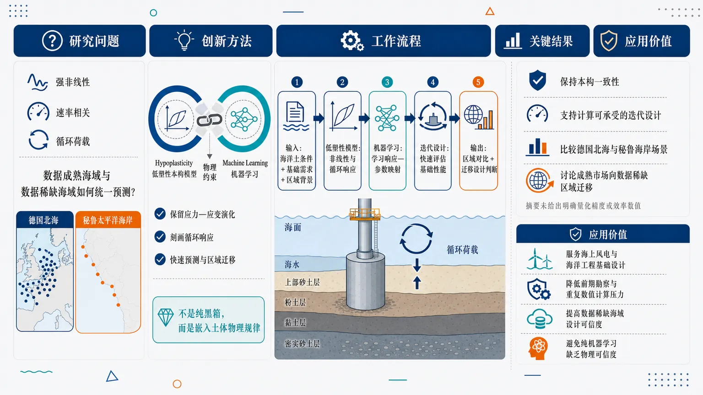
研究问题海上基础设计需要预测海洋土在强非线性、速率相关、循环荷载下的复杂响应；核心问题是如何在德国北海等数据成熟区域与秘鲁太平洋海岸等数据较少区域中，获得既符合土体本构规律又适合迭代设计计算成本的预测框架。创新方法提出“低塑性本构模型 + 机器学习”的物理约束框架：用hypoplasticity保留土体应力—应变演化、循环响应等力学一致性，用机器学习提升复杂场景下的快速预测与区域迁移能力；Aha点在于不是用纯黑箱替代岩土模型，而是把土体物理规律嵌入数据驱动设计流程。工作流程输入德国北海与秘鲁太平洋海岸的海洋土条件、基础设计需求和区域工程背景；低塑性本构模型刻画土体非线性与循环力学响应；机器学习模块学习本构响应与设计参数之间的映射；在迭代设计中快速评估海上基础性能；输出具备本构一致性的区域对比结果与数据较少海域的迁移设计判断。关键结果框架目标是在保持本构一致性的同时支持计算可承受的海上基础迭代设计；论文比较了德国北海与秘鲁太平洋海岸两类海域场景，并讨论了从数据和经验较成熟的海上市场向数据稀缺区域迁移的可行性；摘要未给出明确的定量精度提升、效率提升或工程指标改善数值。应用价值可为海上风电和海洋工程基础设计提供更可靠的快速分析工具，尤其适合将成熟海域的土工经验迁移到新兴、数据不足的海岸区域；有助于降低前期勘察与反复数值计算压力，同时避免纯机器学习模型在岩土设计中缺乏物理可信度的问题。核心概览
论文提出物理约束的低塑性本构—机器学习框架，用于海上基础设计，并比较德国北海与秘鲁海岸的跨区域适用性。
方法要点
- 将低塑性本构模型与机器学习耦合，以表征海洋土体复杂力学行为。
- 框架强调“物理约束”或物理信息融入，以避免纯数据驱动模型偏离力学规律。
- 目标是同时描述土体强非线性、速率相关性和循环响应。
- 面向海上基础迭代设计，关注在可接受计算成本下提高建模能力。
- 通过德国北海与秘鲁太平洋海岸两个场景进行比较分析。
- 摘要提到跨区域迁移，但具体迁移策略、模型结构和训练数据未详述。
关键结果
- 摘要明确称该框架可用于描述海洋土的强非线性、速率相关和循环响应。
- 该方法旨在保持海上基础迭代设计中的计算成本可承受。
- 研究比较了德国北海与秘鲁太平洋海岸场景，讨论了物理约束管线及跨区域迁移。
- 摘要未详述定量性能指标、对比基线、误差水平或工程案例结果。
创新性判断
- 可能的新颖点在于将低塑性本构模型与机器学习结合，并以物理约束方式服务于海上基础设计；但具体耦合形式摘要未详述。
- 相比传统本构或纯数值模拟，该框架可能试图在物理可信度与计算效率之间取得平衡；这一判断基于摘要表述，仍需全文验证。
- 跨德国北海与秘鲁太平洋海岸的区域比较与迁移讨论可能是其应用层面的特色；但迁移效果和泛化能力摘要未给出定量证据。
- 若全文确实实现了面向循环、速率相关和强非线性响应的统一高效预测，则在海洋岩土智能设计方向具有一定方法集成创新；但摘要不足以判断其相对现有工作的实质提升幅度。
-
12
📊 含图深析
📄 摘要：在外延 PbTiO3/SrTiO3 周期超晶格中，通过应变、退极化场和界面/表面能调控拓扑极性结构，包括斯格明子、涡旋、半子、正弦波和极性超晶体。结果显示，极性涡旋在三维超晶体中的排列会抑制 PTO/STO 超晶格热导率，并分析其温度依赖。
💡 亮点：PbTiO3/SrTiO3 超晶格中三维极性涡旋超晶体可降低热导率。极性拓扑结构由此成为调控氧化物薄膜声子输运的自由度。
📖 展开分析 + 配图
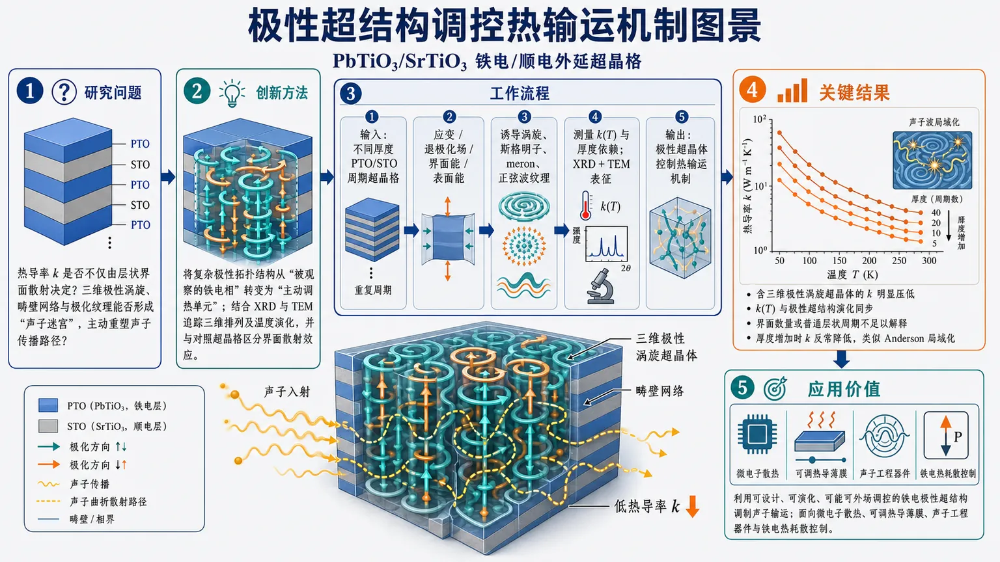
研究问题在 PbTiO₃/SrTiO₃ 铁电/顺电外延超晶格中，热导率为何不仅由层状界面散射决定？核心问题是：三维极性涡旋超晶体、畴壁网络和极化纹理是否能像“声子迷宫”一样主动重塑声子传播路径，从而显著抑制热导率 k。创新方法Aha 点是把复杂极性拓扑结构从“被观察的铁电相”转变为“主动调热单元”：构筑含三维极性涡旋超晶体的 PTO/STO 超晶格，用 X 射线衍射和透射电镜追踪极性超结构的三维排列与温度演化，再与其他超晶格对照，区分极性涡旋三维网络效应和传统界面声子散射效应。工作流程输入为不同厚度和结构参数的 PbTiO₃/SrTiO₃ 周期性外延超晶格；通过应变、退极化场、界面能和表面能诱导涡旋、斯格明子、meron、正弦波等极性纹理；测量热导率随温度和厚度的变化；用 XRD 识别长程超周期结构，用 TEM 观察局域涡旋和界面图像；最后将 k(T)、厚度依赖和极性超结构演化对应起来，输出“极性超晶体控制热输运”的机制图景。关键结果含三维极性涡旋超晶体的 PTO/STO 超晶格热导率被明显压低；热导率的温度依赖与极性超结构的演化同步变化；与其他超晶格比较表明，界面数量或普通层状周期不足以解释热导率变化，关键因素是极性涡旋的三维排列；热导率还随超晶格厚度增加而反常降低，呈现类似声子波 Anderson 局域化的特征。应用价值该研究提出一种新的热管理材料设计策略：不只靠材料组分、界面密度或缺陷散射降热导，而是利用可设计、可演化、可能可外场调控的铁电极性超结构来调制声子输运，可用于微电子散热、可调热导薄膜、声子工程器件和铁电热耗散控制。第一部分：核心概览（Overview）
该研究将铁电 PbTiO₃ 与顺电 SrTiO₃ 构筑为外延周期性超晶格，聚焦复杂极性涡旋三维超结构对热导率 k 的调控作用。核心贡献在于把传统上由界面散射主导解释的超晶格热输运，推进到由拓扑极性结构与极性超晶体三维排列主动调控的新框架。实验通过 X-ray diffraction 与 transmission electron microscopy 关联热导率温度依赖与极性超结构演化，并观察到热导率随超晶格厚度增加而反常降低，提示类似声子波 Anderson localization 的机制。该工作处于铁电拓扑结构、声子输运与热管理材料交叉前沿。
---
第二部分：结构化快速回顾
《Complex polar superstructure controlled thermal conductivity in ferroelectric PbTiO3/SrTiO3 superlattices》（None，）
背景
PbTiO₃/SrTiO₃ 外延超晶格可通过应变、退极化场、界面能与表面能调控，产生丰富的拓扑极性结构，包括 skyrmions、vortices、merons、sinusoidal waves，以及更高阶的polar supercrystals。这些复杂极性结构此前主要被用于研究铁电拓扑相与极化动力学，其对热输运的作用仍未充分厘清。
方法
构筑不同结构参数的 PTO/STO superlattices，测量其热导率 k 随温度与厚度的变化；利用 X-ray diffraction 和 transmission electron microscopy 确定极性超结构的三维排列与温度演化，并将含极性超晶体的样品与其他超晶格进行比较，以区分极性三维排列效应与常规界面声子散射效应。
结果
含有三维极性涡旋超晶体的 PTO/STO 超晶格表现出被显著抑制的热导率。热导率的温度依赖与极性超结构演化相对应。与其他超晶格对比显示，单纯界面数量或周期性不足以解释热输运变化，3D arrangement of polar vortices 是关键因素。热导率还随超晶格厚度增加而反常降低。
讨论
热输运受复杂极性超结构调控，可能涉及声子与极化纹理、畴壁、涡旋晶格或长程有序极化调制之间的耦合。厚度增加导致热导率降低的现象不同于常规尺寸效应，具有类似phonon-wave Anderson localization 的特征，暗示极性超结构可作为声子传播的非平庸散射或局域化场。
局限
当前提供材料仅包含摘要与 arXiv 元数据，缺少完整正文、实验细节、图表、样品参数、测量方法、误差范围、拟合模型与支持信息，无法验证具体数值、统计显著性、样品批次、热导率绝对值、超晶格周期数或显微结构定量参数。
结论
复杂极性超结构不仅是铁电超晶格中的结构现象，也可作为调控热导率的主动功能单元。PTO/STO 极性涡旋超晶体为热管理、声子工程与可调热耗散器件提供了新的材料设计路径。
---
第三部分：逐章节冷凝解析（Section-by-Section Condensing）
Abstract
Artificial PTO/STO superlattices enable access to topological polar phases
PbTiO₃/SrTiO₃ 外延薄膜超晶格通过人工周期性层状结构，将铁电层与顺电层耦合在同一异质体系中，从而同时调控应变、退极化、界面能和表面能。这种多自由度耦合使体系能够进入复杂的拓扑极性相图，而非仅停留在普通单畴或多畴铁电状态。摘要明确指出：*"Integrating epitaxial thin films of ferroelectric PbTiO3 and paraelectric SrTiO3 into artificially layered periodic superlattices provides a unique platform for tuning strain, depolarization, and interfacial/surface energies"*。这里的关键在于 ferroelectric PbTiO₃ 与 paraelectric SrTiO₃ 的异质耦合，而非单一材料内部的自发畴结构。
A rich polar phase diagram includes skyrmions, vortices, merons, sinusoidal waves, and polar supercrystals
PTO/STO 超晶格能够承载多类拓扑极性结构与更高阶极性超结构。摘要列出的结构包括 skyrmions、vortices、merons、sinusoidal waves 以及 polar supercrystals，表明研究对象不是普通铁电畴壁，而是具有空间缠绕、旋转、波状调制或三维有序排列的复杂极化纹理。原文表述为：*"thereby accessing a rich phase diagram of topological polar structures (skyrmions, vortices, merons, or sinusoidal waves) and superstructures (polar supercrystals)"*。该句直接限定了材料体系的物理丰富性：拓扑极性结构与热输运之间存在可被实验追踪的耦合机会。
Three-dimensional polar vortex arrangement suppresses thermal conductivity
核心发现是极性涡旋的三维排列能够压低 PTO/STO 超晶格的热导率 k。摘要给出直接结论：*"Here we show that the 3D arrangement of polar vortices in a supercrystal suppresses thermal conductivity (k) of PTO/STO superlattices (SLs)"*。该表述包含三个关键信息：第一，控制变量不是单个涡旋，而是 3D arrangement；第二，结构形态是 supercrystal；第三，被调控的物理量是 thermal conductivity (k)。因此，热导率降低被归因于极性涡旋超晶体的空间组织，而非仅仅归因于 PTO/STO 界面密度。
Temperature-dependent thermal conductivity tracks polar superstructure evolution
热导率的温度依赖与极性超结构演化相联系，说明 k(T) 不只是普通晶格非谐性或 Umklapp 散射的结果，还反映了极性纹理随温度发生的结构变化。摘要写道：*"The temperature dependence of k reflects the evolution of the polar superstructure, as determined by X-ray diffraction and transmission electron microscopy"*。这里的证据链由两部分组成：热输运测量给出 k 的温度响应，X-ray diffraction 与 transmission electron microscopy 给出极性超结构的结构演化。该对应关系是论文建立“极性超结构控制热输运”的关键逻辑环。
X-ray diffraction and transmission electron microscopy provide structural verification
结构判据来自 X-ray diffraction 与 transmission electron microscopy。摘要明确指出极性超结构演化是 *"as determined by X-ray diffraction and transmission electron microscopy"*。这意味着研究依赖互补表征：XRD 更适合捕捉周期性、长程有序和超晶格峰信息；TEM 更适合提供局域结构、界面、涡旋或极性纹理的空间图像。虽然当前材料未提供具体衍射峰位置、倒易空间图谱、TEM 图像或晶格参数，但摘要中的方法组合支持其结构—输运关联。
Comparison with other superlattices separates 3D polar arrangement from ordinary interface scattering
常规超晶格热导率降低通常归因于界面声子散射，例如界面粗糙、声阻抗不匹配、周期性破缺或声子折叠。然而摘要强调，与其他超晶格比较后，三维极性排列本身是超越通常界面散射的关键因素：*"The comparison with other SLs suggests that the 3D arrangement is crucial for controlling thermal conductivity beyond the usual interfacial scattering"*。这一点构成重要创新：热导率不是被动地由层状界面数目决定，而是可由极性拓扑结构的三维有序性主动调制。
Thermal conductivity decreases unexpectedly with increasing superlattice thickness
观察到热导率随超晶格厚度增加而下降，这与许多常规薄膜热输运直觉不同。一般情况下，在界面密度固定或近似固定时，厚度增加可能减弱边界散射影响，使热导率趋近体相或饱和值；但摘要称：*"we observed an unexpected reduction in thermal conductivity with increasing superlattice thickness"*。该反常厚度依赖说明热输运受某种随厚度增强或累积的结构无序、相干散射、波干涉或极性超结构相关机制影响。
Thickness-dependent suppression resembles phonon-wave Anderson localization
热导率随厚度增加而降低被类比为声子波 Anderson 局域化。摘要使用谨慎措辞：*"a phenomenon reminiscent of phonon-wave Anderson localization"*。这里的 reminiscent of 表示现象类似但不等于已被完全证明的 Anderson localization。物理含义是：声子作为波在复杂空间势场中传播时，可能因多重散射与相干干涉而局域化，从而降低热传输效率。极性涡旋超晶体可能提供一种非普通随机缺陷式的“结构化散射景观”。
Complex polar superstructures may act as active thermal-management elements
复杂极性超结构可作为调控热输运的主动功能单元，服务于需要热耗散控制的技术场景。摘要结论为：*"Our results show that complex polar superstructures can be useful active elements for modulating heat transport in technologies where control over heat dissipation is critical"*。关键词是 active elements，暗示极性结构不是静态缺陷，而是潜在可通过外场、温度、应变或电边界条件调节的功能元素。应用方向包括微电子热管理、铁电器件散热、声子工程和可调热导材料。
---
arXiv metadata and scope
The work is an arXiv preprint submitted in July 2026
该研究以 arXiv 预印本形式发布，编号为 arXiv:2607.08683，提交时间为 9 Jul 2026。元数据列出：*"Submitted on 9 Jul 2026"*，并标注领域为 Condensed Matter > Materials Science。这说明该成果尚处于预印本传播阶段，正式同行评议状态无法从当前材料确认。
The manuscript length and supporting information suggest an experimental condensed-matter study
元数据给出：*"15 pages, 5 figures, 11 pages of supporting informatiton"*。15 页正文、5 幅图和 11 页支持信息通常对应实验凝聚态材料研究的结构规模，可能包含样品制备、结构表征、热导率测量、附加显微图、拟合过程或对照样品。但当前输入未提供这些内容，因此无法提取具体图中数据、误差线、样品参数或支持信息结论。
The subject classification spans materials science and mesoscale/nanoscale physics
学科分类包括：*"Materials Science (cond-mat.mtrl-sci) ; Mesoscale and Nanoscale Physics (cond-mat.mes-hall)"*。该双重分类准确反映研究定位：材料科学侧重 PTO/STO 超晶格、极性拓扑结构与功能材料；介观/纳米物理侧重声子输运、热导率、局域化和尺寸效应。
---
第四部分：深度理解与语言支持（Understanding & Nuance）
1. 术语解析
Topological polar structures
Topological polar structures 指极化矢量在空间中形成具有非平庸几何或拓扑特征的构型，例如涡旋、斯格明子、meron 等。这里的 “topological” 不只是“形状复杂”，而是指极化场可能具有绕转数、拓扑荷、连续变形稳定性等特征。摘要中的表达为：*"topological polar structures (skyrmions, vortices, merons, or sinusoidal waves)"*。在铁电语境中，它们对应电偶极矩方向的空间旋转、缠绕或周期调制。
Polar supercrystal
Polar supercrystal 可理解为极性纳米结构本身进一步形成的超周期有序晶体。普通晶体的重复单元是原子或晶胞；polar supercrystal 的重复单元可能是涡旋阵列、极化调制波或拓扑极性单元。摘要中的 *"superstructures (polar supercrystals)"* 表明研究对象是高阶组织结构，而不仅是单个极性畴。
Depolarization
Depolarization 在铁电薄膜中通常指由于极化电荷未被完全屏蔽而产生的反向电场，即退极化场。它倾向于削弱均匀极化，促使体系形成畴、涡旋或其他闭合通量结构。摘要中的 *"tuning strain, depolarization, and interfacial/surface energies"* 说明 PTO/STO 超晶格通过多种能量项竞争稳定复杂极性结构。
Interfacial/surface energies
Interfacial/surface energies 指界面和表面对体系总自由能的贡献。在超晶格中，PTO/STO 界面会改变晶格匹配、极化连续性、氧八面体连接、局域电场与声子散射条件。与体相能量不同，界面/表面能在纳米尺度上占比显著，能够决定极性纹理类型和热输运边界条件。
Phonon-wave Anderson localization
Phonon-wave Anderson localization 是从电子 Anderson 局域化类比而来的概念：声子作为波在无序或复杂介质中传播时，由多重散射和相干干涉导致传播态变为局域态，热传导能力降低。摘要措辞为 *"reminiscent of phonon-wave Anderson localization"*，说明当前证据更像现象类比，而非已经完整证明声子局域化，例如尚需声子谱、相干长度、频率分辨输运或模拟支持。
---
2. 疑难查证
为什么极性涡旋会影响热导率？
热导率主要由声子携带，近似可写作：
[
k sim frac13 C v l
]
其中 (C) 是声子热容，(v) 是声子群速度，(l) 是平均自由程。复杂极性涡旋超结构可能通过几条路径降低 (k)：
- 增强声子散射：涡旋、畴壁和极化梯度造成局域晶格畸变，声子传播时遇到空间变化的弹性常数和质量—力常数环境。
- 改变声子谱：极化纹理与软模、声学模或低频光学模耦合，可能降低部分声子群速度。
- 引入周期性或准周期性调制：极性超晶体会产生额外超周期势场，引起声子折叠、带隙或相干散射。
- 形成三维散射网络：二维界面散射只在层间方向强烈，而三维极性涡旋阵列可在多个方向上重塑声子传播路径。
摘要中最关键的证据链是：*"The comparison with other SLs suggests that the 3D arrangement is crucial for controlling thermal conductivity beyond the usual interfacial scattering"*。也就是说，声子并非只被 PTO/STO 界面阻挡，还受到极性结构三维排列的额外调控。
为什么“热导率随厚度增加而降低”反常？
在普通薄膜中，厚度很小时边界散射强，热导率偏低；厚度增加后，边界散射相对减弱，热导率通常上升或趋于饱和。这里却出现 *"unexpected reduction in thermal conductivity with increasing superlattice thickness"*，说明控制因素可能不是简单边界散射。
如果极性超结构随厚度增加而变得更完整、更长程有序，或形成更强三维涡旋超晶体，那么厚膜中声子可能遭遇更强的体内相干散射。另一种可能是厚度增加带来极性超结构中的相位失配、畸变、缺陷或多尺度无序，使声子波发生类似 Anderson 局域化的干涉抑制。摘要用 *"reminiscent of phonon-wave Anderson localization"*，表明该解释具有启发性但仍需更多直接证据。
“Beyond usual interfacial scattering” 的深层含义是什么？
传统超晶格热导率降低常由以下因素解释：
- 界面热阻；
- 声学阻抗不匹配；
- 界面粗糙导致的漫散射；
- 周期层状结构导致的声子折叠；
- 纳米周期缩短导致的平均自由程受限。
但该研究强调极性涡旋的 3D arrangement 是关键。这意味着即使界面数量、材料组分或超晶格周期相似，只要极性超结构不同，热导率也可能显著不同。换言之，热导率成为一种对极化拓扑相敏感的物理响应，而非单纯的几何界面效应。
---
第五部分：创新评估与关联（Synthesis & Novelty）
1. 创新性判断
将铁电拓扑极性结构引入热输运调控机制
近几年 PTO/STO、PbTiO₃/SrTiO₃ 及相关铁电超晶格研究主要关注极性涡旋、斯格明子、meron、负电容、拓扑相变、极化动力学和电场可控性。热输运研究则多集中于界面散射、声子相干、超晶格周期、界面粗糙度和质量失配。该研究的新颖性在于把两条研究线合并：复杂极性超结构被证明可显著调控热导率。
从二维界面散射转向三维极性超结构控制
传统超晶格热导率设计常围绕界面密度和周期长度展开；该研究强调 *"the 3D arrangement is crucial for controlling thermal conductivity beyond the usual interfacial scattering"*。这解决了一个前人未充分回答的问题：在具有复杂铁电极性纹理的超晶格中，热导率是否只是界面效应的副产物，还是可由极化拓扑相本身主动控制？摘要给出的答案倾向于后者。
建立结构演化与 k(T) 之间的实验关联
热导率温度依赖被连接到极性超结构演化：*"The temperature dependence of k reflects the evolution of the polar superstructure"*。这使热导率不再只是材料常数，而成为极性相变、极性纹理重构或超晶体演化的敏感探针。相对于只报告室温热导率或平均界面热阻的工作，这种结构—热输运同步关联具有更强机制指向性。
提出厚度增强导致热导率降低的反常现象
*"unexpected reduction in thermal conductivity with increasing superlattice thickness"* 是重要发现。传统尺寸效应难以直接解释该趋势，因此该结果为声子波在复杂极性超结构中的相干散射、局域化或多尺度干涉提供实验入口。摘要中的 *"reminiscent of phonon-wave Anderson localization"* 将铁电拓扑纹理与波局域化问题联系起来，具有跨领域启发性。
拓展热管理材料的设计自由度
该研究将 complex polar superstructures 定位为 *"useful active elements for modulating heat transport"*。这意味着未来热管理材料不仅可以依靠化学组分、纳米界面、缺陷和晶粒边界，还可以依靠可重构的极性纹理。若极性超结构可通过电场、应变、温度或边界条件调控，则热导率可能具备可开关、可调制或可编程特征。
-
13
📄 摘要：利用微观模拟和低能场论研究交替磁体中的空位响应。单个空位通常会诱导实空间各向异性磁序畸变，其形状编码底层交替磁态对称性；在经典交替磁体中，横向磁场下空位产生各向异性磁化纹理，可被局域探针探测。
💡 亮点：交替磁体空位会生成带有对称性指纹的各向异性磁化纹理。局域缺陷响应因此可作为识别交替磁有序的实空间探针。
📖 展开分析 + 配图
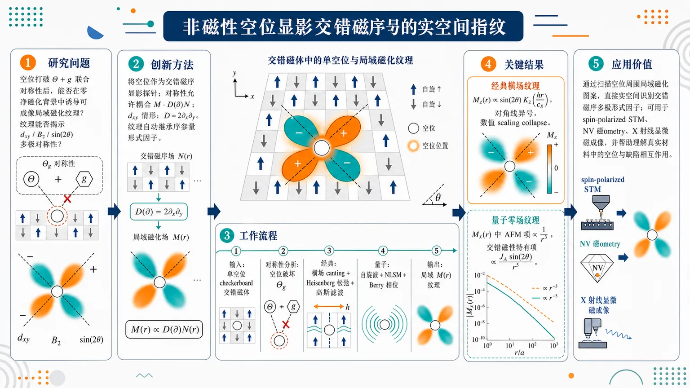
研究问题非磁性空位打破交错磁体中“时间反演 Θ + 晶体点群操作 g”的联合对称性后，是否会在零净磁化背景中诱导可成像的局域磁化纹理；这些纹理能否像“实空间指纹”一样揭示交错磁序的多极对称性，例如 dxy / B2 / sin(2θ) 角向结构。创新方法把空位从普通无序源转化为“交错磁序显影探针”：通过对称性分析提出 M·D(∂)N 耦合，其中 dxy 交错磁体对应 D=2∂x∂y，使空位诱导的磁化纹理自动继承序参量形式因子；并联合经典 Heisenberg 松弛模拟、连续场论、线性自旋波和非线性 σ 模型，分别揭示经典横场纹理与量子零场纹理。工作流程输入为含单个非磁性空位的 checkerboard 交错磁体模型：先用对称性判断空位破坏 Θg 并允许局域磁化；再在经典体系中加入横向磁场，引发自旋 canting，空位调制倾角，经高斯滤波得到局域 M(r)；同时建立连续场论，从 N 的空间形变经 2∂x∂y 导数耦合生成 Mz(r)；在量子 S=1/2 体系中，用自旋波和 NLSM 处理空位 Berry 相位与涨落，输出零场纵向 Mx(r) 的幂律衰减图案。关键结果经典交错磁体中，单空位在横向磁场下诱导强各向异性 Mz(r)，长距离主导项呈 sin(2θ)K2(hr/cS) 的 dxy 波纹理，沿两条对角线符号相反，并与数值 scaling collapse 相符；量子交错磁体中，即使零磁场也出现纵向空位纹理，普通反铁磁贡献按 1/r³ 衰减，交错磁性特有项为 JA sin(2θ)/r⁵，线性自旋波验证了 r⁻³、r⁻⁵ 衰减和 dxy 角向依赖。应用价值提供一种直接实空间识别交错磁序的方法：通过扫描空位周围的局域磁化图案，而非只依赖能带自旋劈裂、输运或磁振子谱，可用 spin-polarized STM、NV 磁ometry、X 射线显微磁成像等技术读取交错磁体的多极形式因子；该机制也为理解真实材料中不可避免空位、有限缺陷密度和缺陷间相互作用奠定理论基础。第一部分：核心概览 (Overview)
单个非磁性空位在交错磁体（altermagnet）中诱导的局域磁化纹理具有由交错磁序决定的强各向异性，可作为实空间探测交错磁序多极对称性的手段。经典极限下，空位在横向磁场中产生近似 d<sub>xy</sub> 波横向磁化纹理；量子自旋体系中，零磁场也因涨落诱导纵向幂律衰减纹理。该工作把交错磁性研究从能谱、输运和准粒子响应推进到局域磁矩本身的缺陷响应，为扫描隧道、自旋探针和显微磁成像提供理论依据。
---
第二部分：结构化快速回顾
《Anisotropic vacancy-induced magnetization textures in altermagnets》（None，）
背景
交错磁体兼具零净磁化与时间反演破缺响应，其核心特征是磁子晶格由非平移、非反演的晶体点群操作关联。既有研究主要聚焦电子或磁振子谱、输运和准粒子干涉，对局域磁矩对缺陷的响应关注不足。
方法
结合三类工具：
- 显微经典 Heisenberg 模拟，研究大自旋极限下空位与外磁场诱导的纹理；
- 连续场论，从统一磁化 M 与交错磁化 N 的耦合推导长距离形式；
- 线性自旋波理论与非线性 σ 模型，研究 S = 1/2 量子交错磁体在零场下的涨落诱导纹理。
结果
经典交错磁体中，空位在横向磁场下诱导各向异性 M<sup>z</sup>(r)，长距离主导项具有 sin(2θ) 即 d<sub>xy</sub> 波角依赖。量子模型中，零场下空位诱导纵向磁化，普通反铁磁贡献按 1/r³ 衰减，交错磁性特有各向异性项按 J<sub>A</sub> sin(2θ)/r⁵ 衰减。
讨论
空位破坏联合的 Θg 对称性，使局域磁化与各向异性形变变得对称允许。纹理的角向结构继承交错磁序的不可约表示，因此可用实空间局域探针直接成像交错磁序多极形式因子。
局限
分析主要基于单空位、低能长波长展开、线性自旋波与微扰处理；有限空位密度、空位间有效相互作用、强无序、动态杂质响应和具体材料细节尚未展开。补充材料与 End Matter 未完整提供，部分显微空位耦合的显式形式无法复核。
结论
空位诱导磁化纹理是交错磁体中普遍存在的局域响应，经典与量子体系均可出现，并携带交错磁序对称性信息。该机制为交错磁性的实空间探测提供了直接理论路线。
---
第三部分：逐章节冷凝解析 (Section-by-Section Condensing)
Abstract
- Vacancies reveal altermagnetic order in real space
非磁性空位在交错磁体中普遍诱导实空间各向异性磁化形变，其空间结构编码底层交错磁序的对称性。核心命题由原文直接给出：*"We show that a vacancy generically produces a real-space anisotropic distortion of the magnetic order, whose structure encodes the symmetry of the underlying altermagnetic state."* 这意味着空位不只是无序源，而是可读出序参量对称性的局域探针。
- Two complementary regimes are established
经典与量子交错磁体的空位响应不同：经典体系需要横向磁场产生磁化纹理，量子体系即使零场也因涨落产生纵向纹理。原文概括为：*"We demonstrate this for both classical altermagnets, where vacancies generate anisotropic magnetization textures in a transverse magnetic field, and quantum models, where fluctuations induce longitudinal power-law decaying magnetic distortions even at zero field."* 其中“transverse magnetic field”对应磁场垂直于序参量方向，“power-law decaying”表明量子纹理不是短程局域效应。
- Locally resolved probes become central
空位响应被提出为检测交错磁序的直接实验路线：*"This impurity response offers a direct route to detecting altermagnetic order with locally resolved probes."* 与动量空间谱学不同，该路线依赖空间分辨探测，如后文列出的 spin-polarized STM、NV magnetometry、x-ray microscopy。
---
Introduction.—
- Altermagnetism combines zero net magnetization with time-reversal-broken responses
交错磁性被定义为一种非常规磁性范式：净磁化因对称性为零，但能谱和响应函数破坏时间反演。原文表述为：*"Altermagnetism has emerged as a unifying theme for unconventional magnets featuring time-reversal-symmetry broken spectra and response functions while the net magnetization vanishes by symmetry."* 该性质区别于铁磁体的非零净磁化，也区别于常规反铁磁体的简单子晶格反平行补偿。
- Joint spin/time-reversal and crystal operations define the phase
交错磁相的关键不是单纯反平行排列，而是磁子晶格由特定晶体对称操作关联，且该操作不是平移或反演。原文明确：*"Key to the definition of an altermagnetic phase is a symmetry of joint spin rotations/time-reversal symmetry and crystal symmetry operations which relate magnetic sublattices other than translation and/or inversion."* 这使得交错磁序携带晶体角动量结构。
- Uniform magnetization multipoles act as secondary order parameters
均匀磁化的空间多极矩成为区分交错磁体与常规反铁磁体的次级序参量。原文指出：*"spatial multipoles of the uniform magnetization (spin density) become finite and act as secondary order parameters distinguishing altermagnets from conventional antiferromagnets."* 这为后续“空位纹理继承多极形式因子”奠定理论基础。
- Itinerant systems exhibit momentum-dependent spin splitting
在巡游电子体系中，交错磁序导致动量依赖自旋劈裂，例如 d 波形式因子。原文写道：*"In itinerant systems, this leads to momentum-dependent spin splittings, e.g. with a d-wave form factor, in the electronic spectrum."* 这里的 d-wave form factor 类似 superconductivity 中的角向符号结构，但作用对象是自旋劈裂。
- Prior probes mainly measured excitations rather than local moments
既有重要进展集中在谱学和输运探测，敏感于电子或磁振子激发的自旋依赖空间各向异性。原文为：*"Significant theoretical and experimental progress has been made in identifying signatures of altermagnetism, foremost spectroscopic and transport probes, which are sensitive to the spin-dependent spatial anisotropy of excitations (electrons or magnons) in the altermagnetic state."* 缺口在于局域磁矩自身的静态形变。
- Non-magnetic impurities provide a local route to order-parameter imaging
核心转向是利用非磁性杂质诱导局域磁序畸变，直接解析交错磁序本身。原文强调：*"non-magnetic impurities lead to distortions in the ordering of local moments which directly resolve the altermagnetic order itself."* 可用实验技术包括：*"spin-polarized scanning tunneling spectroscopy, NV magnetometry or x-ray microscopy methods."*
- Impurity response is a known diagnostic of correlated ground states
杂质响应长期用于探测基态与关联性质。原文写道：*"probing the response to impurities is a powerful method to investigate a system’s ground state and its correlations."* 相关背景包括量子反铁磁体空位诱导交错磁化、普适缩放形式、非共线磁序长程形变等。
- Altermagnets are especially sensitive to crystalline impurities
交错磁体中磁序、晶体与轨道环境深度纠缠，空位作为晶体对称破缺缺陷尤其重要。原文为：*"the intertwinement of magnetic ordering with the crystalline and orbital environment renders altermagnets particularly susceptible to crystalline impurities as symmetry-breaking defects."* 因实验中空位不可避免，问题兼具基础和应用意义。
- Previous inhomogeneity studies focused on quasiparticles
既有关于交错磁体非均匀性的研究多关注电子准粒子而非局域磁矩。原文明确：*"Previous works on inhomogeneities in altermagnets have been mostly concerned with the impact on electronic quasiparticles... rather than the response of the local magnetic moments themselves."* 该研究的定位正是填补这一空白。
- Classical and quantum altermagnets are separated conceptually
研究区分大自旋极限的经典交错磁体与有限自旋的量子交错磁体。原文写道：*"We distinguish “classical” altermagnets, corresponding to the large-spin limit of spin-S magnets, from “quantum” altermagnets with S<∞."* 图 1(b)(c) 分别对应两种机制。
- Classical vacancy response requires an applied field
经典零温共线体系中，空位保持局域磁矩反平行排列；但外磁场下，空位附近出现空间各向异性磁化纹理。原文概括：*"In the classical limit, a vacancy preserves the antiparallel alignment of local moments in a collinear altermagnet, but... in an applied magnetic field, a spatially anisotropic magnetization texture near the vacancy emerges."*
- Quantum vacancies induce zero-field longitudinal textures
量子体系中，空位即使在 h = 0 下也通过涨落诱导纵向交错磁化和缓慢衰减的纵向均匀磁化。原文给出：*"In quantum altermagnets, a non-magnetic impurity produces anisotropic distortions already at zero field, both in the local longitudinal staggered magnetization and in the slowly decaying vacancy-induced longitudinal magnetization."*
---
Symmetry considerations.—
- Altermagnets preserve a combined Θg symmetry
理想交错磁体在零自旋轨道耦合极限下是共线局域磁矩态；磁子晶格由点群操作 g 关联，而不是平移或反演。原文定义为：*"An ideal altermagnet... is a state of collinear local moments where the magnetic sublattices are related by some point-group operation g, but not translation or inversion."* 因此联合操作 Θg 是体系对称性：*"Thus, Θg is a symmetry of the altermagnet."*
- A vacancy breaks Θg and permits local magnetization
单个空位落在一个磁子晶格上，破坏 Θg，使有限局域磁化在对称性上允许。原文推论：*"As a vacancy on one magnetic sublattice breaks Θg, we deduce that (i) a finite magnetization near the vacancy becomes symmetry-allowed."* 这解释了为什么零净磁化体系中仍可出现空位附近局域磁化。
- Vacancy-induced distortions must be anisotropic in altermagnets
因 g 按定义不属于单个格点的 site-symmetry group，单空位不可能是全对称扰动。原文指出：*"(ii) vacancy-induced distortions of the magnetic order will generally be anisotropic: by definition, g is not in the site-symmetry group and thus a single vacancy can not be a symmetric perturbation."* 这是各向异性的最一般对称性来源。
- Conventional antiferromagnets can have symmetric vacancy response
常规反铁磁体中，空位可以位于对所有点群操作不变的磁性格点上，从而诱导完全对称形变。原文对比：*"We contrast this with conventional antiferromagnetic order, which allows scenarios where a vacancy can be placed on a magnetic site which is invariant under all point group operations."* 平方格反铁磁体被列为例子：*"as is the case for the square lattice antiferromagnet."*
- Landau theory couples uniform and staggered magnetization through derivatives
序参量 N 属于非平凡不可约表示 Γ<sub>N</sub>，均匀磁化 M 属于平凡表示 Γ₁。空间非均匀时允许自由能项
F<sub>AM</sub> ∼ M · 𝒟[∂x,∂y,∂z]N。原文写道：*"symmetry-allowed contributions to the free energy of the form F_AM[N,M]∼M⋅D[∂x,∂y,∂z]N become important."*
- The derivative operator carries the altermagnetic representation
导数算符 𝒟 与 N 属于相同点群不可约表示。例如 d<sub>xy</sub> 交错磁体中，𝒟 = 2∂x∂y，对应 C₄ᵥ 点群 B₂ 表示。原文为：*"D[∂x,∂y]=2∂x∂y for dₓy-wave altermagnets where N transforms... in the B2 IR of the C4v point group."*
- Spatial variations of N generate non-trivial M textures
只要空位造成 N(r) 空间变化，就会通过交错磁耦合产生 M(r)。原文总结：*"Hence, spatial variations of N can induce non-trivial magnetization textures, M(r)∼D[∂x,∂y,∂z]N(r)."* 这一逻辑也与交错磁畴壁中的磁化纹理一致：*"as also observed in altermagnetic domain walls."*
---
Vacancy in classical altermagnets: magnetization textures.—
- Classical local moments are fixed-length vectors in a Heisenberg model
经典极限使用固定长度 S<sub>i</sub>² = S² 的局域磁矩，Hamiltonian 为
H = Σ<sub>ij</sub> J<sub>ij</sub> S<sub>i</sub>·S<sub>j</sub>。原文定义：*"the local moments are described in terms of classical vectors with length Sᵢ²⁼S², interacting via the Heisenberg Hamiltonian H=Σij Jij Si⋅Sj."*
- Collinear compensated order is encoded by ηi = ±1
交换耦合稳定共线补偿磁序 S<sub>i</sub> = η<sub>i</sub>S n̂，两磁子晶格由 η<sub>i</sub> = ±1 区分。原文写道：*"Jij are exchange couplings stabilizing collinear compensated magnetic order Si=ηi S n̂ along an axis n̂ and ηi=±1 on the two magnetic sublattices."*
- Zero-field classical vacancies do not distort the order
空位保持绕序参量轴 n̂ 的 SO(2) 自旋旋转对称性，因此无横向形变；零温下没有涨落重整化有序矩，空位无法扭曲经典共线磁序。原文为：*"The SO(2) symmetry of spin rotations around n̂ is preserved by the vacancy. Thus, no transverse distortions emerge, and since at zero temperature (T=0) there are no fluctuations to renormalize the ordered moment, a vacancy cannot distort classical collinear magnetic order."*
- A transverse magnetic field produces canting and uniform magnetization
加入磁场项 H → H − h·ΣS<sub>i</sub> 后，局域磁矩向磁场方向倾斜产生均匀磁化；当 h ⟂ N 时最大。原文写道：*"Then, the local moments cant towards the field direction to produce a finite uniform magnetization, which is maximized when h⊥N."*
- Vacancy modifies canting and induces staggered field-axis component
空位附近倾角偏离洁净体相值，在磁场方向产生交错磁化分量。原文指出：*"near a vacancy, this canting angle can vary from its bulk (clean) value, inducing a finite component of the staggered magnetization N along the field axis."*
- The field-induced vacancy response is necessarily anisotropic
结合前述对称性，交错磁体中的该响应必须各向异性。原文直接陈述：*"In altermagnets, given above symmetry considerations, this field-induced vacancy response is necessarily anisotropic."*
- Checkerboard Heisenberg model serves as a minimal d-wave altermagnet
数值模拟采用 checkerboard lattice Heisenberg model H<sub>CB</sub>，被称为原型交错磁模型，并与准二维 oxychalcogenides 相关。原文写道：*"numerical simulations of the checkerboard lattice Heisenberg model H_CB as a prototypical altermagnetic model, relevant to quasi-2D oxychalcogenides such as KV2Se2O."*
- Microscopic couplings define the checkerboard anisotropy
最近邻耦合为 J<sub>i,i+x̂</sub> = J<sub>i,i+ŷ</sub> = J₁；两类对角耦合为
J<sub>i,i+x̂+(-1)ⁱŷ</sub> = J₂，
J<sub>i,i+x̂−(-1)ⁱŷ</sub> = J₂′，
其中 (-1)<sup>i</sup> = (-1)<sup>iₓ+iᵧ</sup>。原文完整给出：*"The coupling constants are given by Ji,i+x̂=Ji,i+ŷ=J1, Ji,i+x̂+(-1)i ŷ=J2 and Ji,i+x̂-(-1)i ŷ=J2′."*
- The Néel ground state has an explicit stability regime
当 J₁ > |J₂|, |J₂′|, J₂ + J₂′, h/8 时，基态为共线 Néel 序。原文条件为：*"For J1>|J2|,|J2′|,J2+J2′,1/8 h, the ground state exhibits collinear Néel order."* 该不等式限定经典模拟所在相区。
- J2 ≠ J2′ turns the model into a d-wave altermagnet
当 J₂ ≠ J₂′ 时，两磁子晶格既非平移相关也非反演相关；磁序只保留 C₄ 晶格旋转与时间反演 Θ 的组合，因此是 d 波交错磁体。原文说明：*"for J2≠J2′, the two magnetic sublattices are neither related by lattice translations nor by inversion. Instead, the magnetic order preserves the combination of C4 lattice rotations... and time reversal Θ, rendering it a d-wave altermagnet."*
- Iterative relaxation computes the vacancy ground state
空位放在 r = (0,0)，外场取 h = hẑ，经典自旋构型由迭代松弛得到。原文写道：*"The classical spin configuration of the model with vacancy at site r=(0,0) and in an applied field h=hẑ is obtained via iterative relaxation."*
- A Gaussian filter defines the coarse-grained magnetization
局域均匀磁化由 3×3 Gaussian filter 得到：
M(r)=Σ<sub>i,j=-1</sub><sup>1</sup>ω<sub>ij</sub>S<sub>r+i x̂+j ŷ</sub>，
ω<sub>ij</sub>=(vvᵀ)<sub>ij</sub>，v=(1,2,1)ᵀ/4。原文给出：*"we obtain from the microscopic spin configuration via a Gaussian filter... with the kernel ωij=(vv⊤)ij where v=(1,2,1)⊤/4."* 这对应实验中空间分辨探针测得的局域平均磁化。
- Numerical parameters show strong anisotropy
图 2(a)(b) 使用 J₂ = 0.6J₁, J₂′ = 0, h = 0.6J₁；图 2(c) 使用 h = 4J₁ 且 J₂ = 0.6J₁, J₂′ = 0。图注给出：*"for J2=0.6J1, J2′=0, and h=0.6J1"* 以及 *"for h=4J1 and J2=0.6J1, J2′=0."*
- Vacancy induces staggered magnetization along the field direction
数值结果显示，在均匀 canting 背景上，空位诱导沿外场方向的有限交错磁化。原文为：*"the vacancy induces a finite staggered magnetization along the field direction, on top of the uniform magnetization due to canting."*
- Small fields yield approximate dxy texture
对足够小的外磁场，M(r) 纹理在 C₄ 晶格旋转下近似奇变，并呈近似 d<sub>xy</sub> 波对称性。原文指出：*"for sufficiently small applied magnetic fields, the texture in M(r) is approximately odd under C4 lattice rotations and exhibits an approximate dₓy-wave symmetry."*
- The phenomenon is not restricted to the checkerboard lattice
蜂窝格交错磁体空位也得到类似结果。原文写道：*"We obtain similar results for a vacancy in an honeycomb-lattice altermagnet."* 这强化了普适性而非模型偶然性。
---
Continuum field theory.—
- Spins are decomposed into uniform and staggered fields
连续场论将自旋写为
S<sub>i</sub> = (-1)<sup>i</sup>N(r<sub>i</sub>)√[S²−M²(r<sub>i</sub>)] + M(r<sub>i</sub>)。约束为 |N|² = 1 与 N·M = 0。原文为：*"We decompose the spins into uniform and staggered magnetization fields..."* 以及 *"the unit-length constraint is satisfied if we demand |N|²=1 and N⋅M=0."*
- The bulk Hamiltonian contains a symmetry-mandated altermagnetic coupling
展开到 |M| ≪ S 并取连续极限后，bulk Hamiltonian density 为
ℋ<sub>bulk</sub> = M²/(2χ⊥) + S²ρ<sub>s</sub>(∇N)²/2 + SJ<sub>A</sub>M·2∂x∂yN − h·M + λM·N + μ(N²−1)。原文强调该项为此前 Eq. (1) 预期：*"effective altermagnetic coupling JA=J2−J2′ between uniform and staggered magnetization as anticipated in Eq. (1)."*
- Continuum parameters are explicit
反横向磁化率、刚度和交错磁耦合分别为：
χ⊥⁻¹ = 8J₁，
ρ<sub>s</sub> = J₁ − J₂ − J₂′，
J<sub>A</sub> = J₂ − J₂′。原文给出：*"with the inverse spin susceptibility χ⊥−1=8J1, stiffness ρs=J1−J2−J2′ and effective altermagnetic coupling JA=J2−J2′."*
- The vacancy is represented as a local UV defect
空位项为 ℋ<sub>vac</sub> = δ(r) f(M,N)，包含与 bulk 相同形式但裸耦合不同的相互作用，以及因方格中心旋转对称性破缺而出现的新项。原文写道：*"Here, f(M,N) includes the same interaction terms as ℋbulk with different bare coupling constants and also new terms due to the broken rotational symmetry around the center of a square."*
- Long-distance behavior is cutoff-independent at leading order
空位作为 UV 缺陷会使有效空位耦合在低能流动，但后续推导的 M(r) 领先长距离行为不依赖 cutoff。原文为：*"the leading-order long-distance behavior of M(r) as derived below is cutoff-independent."* 因此可使用裸耦合继续分析。
- Saddle-point equations give M as field response plus altermagnetic gradient response
远离空位处，磁化为
M = χ⊥[(h − N(h·N)) − SJ<sub>A</sub>(2∂x∂yN + N(N·2∂x∂yN))]。原文解释该式：*"comprised of a uniform response to an applied field h and contributions induced by gradients in N via the altermagnetic coupling."*
- The ordered state and field geometry are fixed without loss of generality
取交错磁化沿 x̂，外场 h = hẑ，并参数化
N = (√(1−n<sub>y</sub>²−n<sub>z</sub>²), n<sub>y</sub>, n<sub>z</sub>)，n<sub>y,z</sub> ≪ 1。原文为：*"Without loss of generality, we consider the staggered magnetization to lie along the x̂-axis and h=hẑ."*
- Field gaps the nz mode while ny remains Goldstone-like
二次展开得到两个解耦 Gaussian 理论：n<sub>y</sub> 是线性色散 Goldstone 模，n<sub>z</sub> 因 h ≠ 0 获得能隙。原文写道：*"two decoupled Gaussian theories, for the linearly dispersing Goldstone mode ny, and for nz which becomes gapped due to h≠0."*
- Vacancy generates four source terms for the massive nz mode
到 h 的线性阶，空位项为
δ(r)[Sh n<sub>z</sub> − Sχ⊥J<sub>A</sub>h 2∂x∂y n<sub>z</sub> + S²J<sub>A</sub>n<sub>z</sub>2∂x∂y n<sub>z</sub> + S²ρ<sub>s</sub>n<sub>z</sub>Δn<sub>z</sub>]。原文指出：*"we find up to linear order in h four separate source terms for the massive mode."*
- The induced staggered field-axis component follows a Bessel K0 profile
线性响应得到
⟨n<sub>z</sub>(r)⟩ ≈ [h/(2πρ<sub>s</sub>S)] K₀[(h/(cS))r][1+O(h²)]。原文写道：*"We obtain the staggered magnetization along the field direction nz(r) as the linear response of the bulk theory to the defect term."* 该第一项也存在于常规反铁磁体：*"The first term in square brackets also emerges in conventional antiferromagnets."*
- The key classical magnetization result contains isotropic and dxy anisotropic terms
领先非平凡阶为
χ⊥⁻¹M<sup>z</sup>(r) = h − [h³/(4π²ρ<sub>s</sub>²S²)]K₀² − [h³J<sub>A</sub>/(2πρ<sub>s</sub>c²S²)] sin(2θ)K₂。原文称其为：*"our key result for the out-of-plane magnetization to leading non-trivial order in h."*
- The anisotropic altermagnetic term dominates at long distance
因 K₀(x)² 比 K₂(x) 在大 r 时指数衰减更快，长距离空位诱导磁化由含 J<sub>A</sub> sin(2θ)K₂ 的第二项主导。原文明确：*"this implies that [K0(hr/c)]2 decays exponentially faster than K2(hr/c) for large r=|r|, and thus the long-distance behaviour... is dominantly governed by the second term."*
- sin(2θ) is the dxy form factor
sin 2θ ≡ 2xy/r 被识别为 d<sub>xy</sub> 波形式因子。原文写道：*"sin2θ≡2xy/r corresponds to the dₓy-wave form factor."* 严格地，从维度看常见形式应与 2xy/r² 相关；给定文本写作 2xy/r，需按原文保留，但该处可能存在排版或转录问题。
- The texture transforms in the same B2 representation as the order parameter
空位磁化纹理具有 d<sub>xy</sub> 对称性，并与交错磁序同属 B₂ 不可约表示。原文为：*"The vacancy-induced magnetization texture with dₓy-symmetry transforms in the same IR B2 as the staggered magnetization."* 因此可实空间成像序参量对称性：*"allowing to image the symmetry of the altermagnetic order parameter in real space."*
- The field theory generalizes beyond d-wave altermagnets
低能论证不依赖显微细节，可推广到 g 波等交错磁体，只需用相应形式因子导数算符替换 2∂x∂y。原文写道：*"Our low-energy field-theory arguments are independent of microscopic details and readily extended to other altermagnets, e.g. with g-wave symmetry."*
- Lattice simulations confirm scaling collapse and angular dependence
数值沿对角线 r = r(1,1)/√2 取样，此时 sin 2θ = 1，效应最大；不同场强数据出现 scaling collapse，并与 Eq. (8) 良好符合。原文为：*"The data for different field strengths exhibit a scaling collapse... and agree well with the continuum field-theory expression in Eq. (8), which also reproduces the angular dependence of the texture."* 图 3 参数包括 J₂ = 0.3J₁, J₂′ = 0；插图使用 h = 0.6J₁。
---
Vacancy in quantum altermagnets at zero field.—
- Quantum fluctuations renormalize the ordered moment
量子模型中，局域有序矩满足 |⟨S<sub>i</sub>⟩| ≤ S，并被量子涨落削弱。原文开头：*"Turning to quantum models, the ordered moment |⟨Si⟩|≤S is renormalized by quantum fluctuations."* 这正是零场空位能诱导纵向形变的物理来源。
- Vacancy induces longitudinal distortions at h = 0
与经典零温体系不同，量子涨落使空位在零磁场也能导致共线磁序纵向畸变。原文表述：*"Thus, a vacancy can lead to longitudinal distortions of the collinear magnetic order even at zero field h=0."*
- The explicit quantum model uses S = 1/2 checkerboard spins
显式演示仍基于 Eq. (2) 的 checkerboard Heisenberg 模型，但自旋取 S = 1/2。原文写道：*"We demonstrate this explicitly for the checkerboard lattice Heisenberg model in Eq. (2), but now with S=1/2 moments."*
- Linear spin-wave theory provides 1/S corrections
半经典有序态中的量子涨落修正通过 spin-wave theory 和 1/S expansion 计算。原文为：*"Corrections from quantum fluctuations in (semi-)classically ordered state can be obtained via spin-wave theory in a 1/S expansion."* End Matter 未提供，因此 Bogoliubov 变换、有限尺寸外推细节无法从给定文本复核。
- Finite altermagnetic coupling JA = 0.6J1 produces anisotropic ordered-moment distortion
图 4(a) 展示 J<sub>A</sub> = 0.6J₁ 时外推到热力学极限的每格点有序矩 ⟨S<sub>i</sub><sup>x</sup>⟩。原文写道：*"The ordered moment on each site ⟨Six⟩ for finite altermagnetic coupling JA=0.6J1, extrapolated to thermodynamic limit, is shown in Fig. 4(a)."*
- The anisotropy is strongest between the two diagonals
空位附近磁序畸变具有明显方向差异，尤其体现在 x̂ + ŷ 与 x̂ − ŷ 两条轴对比。原文指出：*"The magnetic order acquires an anisotropic distortion in the vicinity of the vacancy which is particularly pronounced when comparing the x̂+ŷ-axis with the x̂−ŷ-axis."*
- The local uniform magnetization is again extracted by Gaussian filtering
与经典部分相同，局域平均均匀磁化 M(r) 由 Gaussian filter 得到。原文写道：*"As before, we obtain the locally averaged uniform magnetization M(r) using a Gaussian filter."*
- Figure 4 reports multiple quantitative checks
图 4(c) 使用 J₂ = 0.1J₁ 比较水平方向磁化衰减与差分 M<sub>x</sub>(r,r) − M<sub>x</sub>(r,−r)；图 4(d) 使用 J₂ = 0.4J₁ 固定半径角向数据。图注给出：*"Decay of the magnetization in horizontal direction... and the difference Mx(r,r)−Mx(r,−r)... for J2=0.1J1 compared to the theory in Eq. (12)."* 以及 *"Angular dependence... with J2=0.4J1."*
- Angular fitting includes higher anharmonic corrections
图 4(d) 用
a + b sin(2θ) + c sin²(2θ) + d sin³(2θ)
拟合，以容纳 Eq. (12) 之外的高阶非谐项。拟合参数为
a = (2.1 ± 0.001)×10⁻⁵，
b = (6.5 ± 0.2)×10⁻⁷，
c = (−2.1 ± 1.5)×10⁻⁸，
d = (2.7 ± 0.3)×10⁻⁷。原文图注完整给出：*"The fit parameters are a=(2.1±0.001)10−5, b=(6.5±0.2)10−7, c=(−2.1±1.5)10−8 and d=(2.7±0.3)10−7."*
---
Nonlinear sigma model analysis.—
- The bulk quantum theory is an altermagnetic nonlinear sigma model
从相干态路径积分得到 Euclidean time 下的 NLSM：
S<sub>bulk</sub>[N] = ∫d²r dτ [χ⊥(∂τN)²/2 + S²ρ<sub>s</sub>(∇N)²/2 + iSχ⊥J<sub>A</sub>N·(∂τN × 2∂x∂yN)]。原文写道：*"For the bulk altermagnet, we obtain a Nonlinear Sigma Model (NLSM) for N≡N(r,τ) from the coherent state path integral."*
- Integrating out M yields both dynamical and static altermagnetic magnetization
saddle-point 磁化为
M = χ⊥[iN×∂τN − SJ<sub>A</sub>2∂x∂yN + SJ<sub>A</sub>N(N·2∂x∂yN)]。第一项是与 N 共轭的动力学横向磁化，后两项是静态交错磁贡献。原文解释：*"the first term encodes the dynamical transverse magnetization conjugate to N, and the JA-dependent terms reproduce the static altermagnetic contribution obtained previously in Eq. (5)."*
- The Berry phase structure is essential for a vacancy
bulk 中 altermagnetic term 与 coherent-state Berry phase 结合产生；剩余 staggered Berry phase 被假定抵消。原文为：*"Combined with the Berry phase term of the coherent state path integral, this contribution induces the altermagnetic term in Eq. (9)... and we assume a cancellation of the remaining (staggered) Berry phase terms."*
- A vacancy introduces an uncompensated Berry phase
空位在 r = 0 引入额外未补偿 Berry phase，这是量子杂质纹理的关键。原文写道：*"adding a vacancy, say at site r=0, introduces an additional uncompensated Berry phase."*
- The effective vacancy action contains Berry, altermagnetic Berry-like, and energetic terms
空位作用量为
S<sub>vac</sub> = ∫dτ[−iS(A·∂τN)|<sub>r=0</sub> − iSg<sub>A</sub>N·(∂τN×2∂x∂yN)|<sub>r=0</sub> + f<sub>h=0</sub>(M,N)]。原文说明 A(N) 满足 ∇<sub>N</sub>×A(N)=N，并且 g<sub>A</sub> 裸值为 J<sub>A</sub>χ⊥：*"gA is an effective vacancy coupling with bare value gA=JAχ⊥."*
- Goldstone modes acquire dxy momentum-dependent splitting
展开后 bulk action 描述两个模式，其色散为
ω<sub>±</sub>(k) ≈ c|k| ± SJ<sub>A</sub>k<sub>x</sub>k<sub>y</sub>。原文写道：*"Their linear dispersion (as k→0) is required by Goldstone’s theorem, but note the momentum-dependent splitting (with a dₓy-wave form factor) characteristic for altermagnets."*
- The defect is treated perturbatively in the ordered phase
深有序相中 n<sub>y</sub> 与 n<sub>z</sub> 小，缺陷项可微扰处理；控制条件为大刚度 ρ<sub>s</sub> 和 χ⊥J<sub>A</sub> ≪ 1。原文为：*"Deep in the ordered phase, the transverse fluctuations ny and nz are small and we thus treat the defect term perturbatively... controlled by a large order parameter stiffness ρs and χ⊥JA≪1."*
- Symmetry forces only Mx to be nonzero
由对称性，⟨M<sup>y</sup>⟩ = ⟨M<sup>z</sup>⟩ ≡ 0，只有纵向 M<sup>x</sup> 具有非零平均。原文写道：*"recall that ⟨My⟩=⟨Mz⟩≡0 by symmetry."*
- The leading quantum vacancy profile has r−3 and altermagnetic r−5 terms
得到
⟨M<sup>x</sup>(r,τ)⟩ = −[1/(64π√(ρ<sub>s</sub>χ⊥))]1/r³ − J<sub>A</sub>sin(2θ)[645χ⊥/(1024π√(ρ<sub>s</sub>χ⊥))]1/r⁵ + …。原文称为：*"we obtain the leading-order decay of the uniform magnetization profile."*
- The 1/r3 term is conventional; the sin(2θ)/r5 term is altermagnetic
1/r³ 来源于 Goldstone 模的线性色散，已在常规反铁磁体中报道；J<sub>A</sub>sin(2θ)/r⁵ 是交错磁性产生的角向各向异性贡献。原文写道：*"the 1/r3-decay directly follows from the linear dispersion of Goldstone modes and has been reported before for conventional antiferromagnets."* 以及 *"in an altermagnet with JA≠0, the vacancy induces a distortion with a – to leading order – sin2θ-angular dependence."*
- The angular dependence matches the B2 dxy order-parameter representation
sin 2θ 正对应 d<sub>xy</sub> 形式因子，与交错磁序 B₂ 不可约表示一致。原文为：*"which corresponds precisely to the dₓy-wave form factor associated with the B2 IR of the altermagnetic order parameter."*
- LSWT confirms the r−3 conventional decay
作为一致性检查，沿 x̂ 方向、即 Eq. (12) 中交错磁修正较小的方向，磁化显示 r⁻³ 衰减。原文写道：*"we first verify that the magnetization indeed exhibits a r−3-decay along the x̂-axis away from the vacancy."*
- Antisymmetric diagonal difference isolates the altermagnetic r−5 term
取 M<sup>x</sup>(r,θ=π/4) − M<sup>x</sup>(r,θ=−π/4) 可隔离交错磁贡献，因为两方向的 sin(2θ) 符号相反。原文说明：*"we take the antisymmetric combination... to isolate the altermagnetic contribution."* 数据同时匹配 r⁻⁵ 幂律与解析 prefactor：*"The data matches well both the expected r−5-power law of the altermagnetic contribution and its analytically obtained prefactor."*
- Angular deviations arise from higher-order JA harmonics
固定半径角向曲线略偏离理想 sin(2θ)，原因是忽略项含 J<sub>A</sub><sup>n</sup> sin<sup>n</sup>(2θ)。原文解释：*"This distortion is expected, since the neglected higher-order contributions contain terms of the form JAⁿ sin(2θ)ⁿ, which spoil the harmonic angular dependence."*
---
Conclusion.—
- Vacancy textures inherit altermagnetic order-parameter symmetry
单空位周围磁化纹理继承交错磁序参量对称性，这一结论同时适用于经典磁矩与量子自旋。原文总结：*"We have shown that the magnetization texture around a single vacancy in a collinear altermagnet inherits the symmetry of the altermagnetic order parameter, both for classical moments and for quantum spins."*
- d-wave realizations are explicit, but the argument is general
显式展示的是 d 波交错磁体，但对称性论证适用于更广泛的交错磁体。原文写道：*"We have demonstrated this explicitly for realizations of d-wave altermagnets and provided a general symmetry-based argument that applies to altermagnets more broadly."*
- Finite vacancy density and impurity interactions remain open
未来方向包括有限空位密度，以及由空位诱导纹理之间的有效相互作用。原文为：*"Several directions for future work remain open: this includes the study of a finite density of vacancies and effective interactions between the resulting impurity-induced textures."*
- Dynamical quantum impurity response is an unresolved direction
除静态响应外，量子杂质相关动态响应值得研究。原文指出：*"Beyond the static response considered here, it would also be worthwhile to study the dynamical response associated with quantum impurities."*
---
Acknowledgements.—
- Collaborative and funding context
研究获得多方讨论与德国、欧盟资助支持。原文列出：*"We gratefully acknowledge discussions with S. D. Lundemo, A. Rosch, C. Schrade, A. Sudbø and M. Vojta."* 资金来源包括 DFG SFB 1238、Emmy Noether Program、Studienstiftung des deutschen Volkes，以及 ERC-2021-STG SuperCorr。该部分不影响物理结论，但提供研究项目背景。
---
第四部分：深度理解与语言支持 (Understanding & Nuance)
1. 术语解析
- Altermagnetism / altermagnets（交错磁性 / 交错磁体）
不是简单“另一种反铁磁”。语境中指净磁化由对称性抵消，但电子或磁子谱出现类似铁磁体的时间反演破缺自旋劈裂。关键在于磁子晶格由点群操作而非平移/反演联系。微妙点：中文若译作“替代磁性”容易误导，物理核心是交错的自旋-晶格对称结构。
- Vacancy-induced magnetization texture（空位诱导磁化纹理）
“texture” 不只是某点磁化改变，而是空间上有结构、有角向对称性、有衰减律的磁化分布。该文中经典纹理含 K₂(hr/cS) sin(2θ)，量子纹理含 sin(2θ)/r⁵，因此“纹理”强调的是可成像的空间图案。
- Form factor（形式因子）
在这里指随动量或空间角度变化的对称性函数，例如 d<sub>xy</sub> 对应 k<sub>x</sub>k<sub>y</sub> 或实空间 sin(2θ)。它不是材料结构因子，而是序参量所属不可约表示的“角向指纹”。
- Irreducible representation, IR（不可约表示）
点群对称性下函数或序参量的分类标签。文中 B₂ 表示与 d<sub>xy</sub> 对称性绑定。空位纹理与交错磁序同属 B₂，所以它能“继承”并显示交错磁序。
- Uncompensated Berry phase（未补偿 Berry 相位）
在反铁磁体中，不同子晶格 Berry phase 常相互抵消；移除一个自旋后，抵消不完全，留下局域量子相位项。该项使量子空位即使零场也能诱导长程磁化响应，是经典静态能量项无法捕捉的量子机制。
2. 疑难查证
- 为什么经典零场空位不产生纹理，但量子零场会产生？
经典零温共线 Heisenberg 磁体中，每个自旋长度固定，空位只去掉一个自旋，不会自动改变其余自旋的最优反平行排列；绕序参量轴的 SO(2) 对称性仍在，且没有零点涨落削弱有序矩。
量子体系中，局域有序矩不是固定的 S，而是 S − δS，其中 δS 来自自旋波零点涨落。空位改变附近自旋波模态密度，使不同位置的 δS(r) 不同，于是纵向有序矩 ⟨S<sup>x</sup><sub>i</sub>⟩ 出现空间畸变。交错磁耦合再把该畸变转化为带 d<sub>xy</sub> 角向结构的均匀磁化纹理。
- 为什么空位能“成像”交错磁序对称性？
交错磁序 N 本身在空间上通常是共线、补偿的，直接测量净磁化可能为零。但空位破坏 Θg 联合对称性，使 M 与 𝒟N 的耦合显露出来。若交错磁序属于 B₂，则允许的导数算符是 2∂x∂y，其角向响应就是 sin(2θ)。因此，测量空位周围的磁化图案等价于测量序参量的不可约表示。
- 为什么经典长距离各向异性项反而主导？
Eq. (8) 中各向同性修正含 K₀²，各向异性交错磁项含 K₂。大距离下 K<sub>n</sub>(x) ∼ e<sup>−x</sup>√[π/(2x)]，所以 K₀² ∼ e<sup>−2x</sup>，而 K₂ ∼ e<sup>−x</sup>。尽管二者同为 h³ 阶，各向异性项衰减慢一个指数因子，因此长距离由交错磁项控制。
- 为什么量子交错磁贡献是 1/r⁵，而普通贡献是 1/r³？
普通空位 Berry phase 通过线性色散 Goldstone 模产生长程响应，二维中给出 1/r³。交错磁性特征需要额外的二阶空间导数结构 2∂x∂y，在实空间相当于多带两个梯度，通常会增加 1/r² 的衰减，因此从 1/r³ 变为 1/r⁵，并附带 sin(2θ) 的角向因子。
---
第五部分：创新评估与关联 (Synthesis & Novelty)
1. 创新性判断
- 研究对象从准粒子缺陷响应转向局域磁矩缺陷响应
过去 2–5 年交错磁体研究大量集中于能带自旋劈裂、磁振子谱、输运各向异性、Friedel oscillations、QPI、超导杂质态等。该工作把问题推进到局域磁矩本身如何围绕非磁性空位重排，解决了“交错磁序能否通过实空间缺陷纹理直接读出”的问题。
- 提出空位作为交错磁序多极形式因子的实空间探针
既有实验和理论多在动量空间识别 d 波或更高阶形式因子。该工作证明单空位纹理的角向结构与序参量不可约表示相同，例如 B₂ / d<sub>xy</sub> / sin(2θ)，从而提供无需直接测电子能带自旋劈裂的局域检测路线。
- 同时覆盖经典场致响应与量子零场响应
经典机制：横向磁场导致 canting，空位调制倾角，交错磁耦合产生各向异性 M<sup>z</sup>。
量子机制：空位 Berry phase 与涨落重整化在零场产生纵向 M<sup>x</sup>。
两套机制不同，但都指向同一对称性结论，增强普适性。
- 给出可检验的解析长距离律
经典场论给出 K₂(hr/cS) sin(2θ) 主导长距离纹理；量子 NLSM 给出
−1/[64π√(ρ<sub>s</sub>χ⊥)]·1/r³ − J<sub>A</sub>sin(2θ)[645χ⊥/(1024π√(ρ<sub>s</sub>χ⊥))]·1/r⁵。
这些不是定性图像，而是包含 prefactor、幂律/指数衰减和角向因子的定量预言。
- 建立显微模拟与低能场论的一致性闭环
checkerboard Heisenberg 模型数值模拟、连续场论、线性自旋波和 NLSM 互相印证。经典部分显示 scaling collapse 并匹配 Eq. (8)；量子部分显示 r⁻³ 与 r⁻⁵ 幂律及角向偏差的高阶谐波解释。
- 为局域实验技术提供具体目标图像
结果可由 spin-polarized STM、NV magnetometry、x-ray microscopy 等空间分辨技术检测。相较单纯判定“有无交错磁性”，该工作预测可观测的方向依赖符号结构：沿两条对角线响应相反，角向主谐波为 sin(2θ)。
- 尚未解决但自然延伸的问题清晰
单空位理论之后，最直接的未解问题是有限空位密度下纹理叠加、干涉、玻璃化或有效相互作用，以及动态量子杂质响应。这些问题对真实材料中的不可避免无序尤为关键。
-
14
📄 摘要：研究带莫尔调制层间交换的经典双层 Ising 模型，调制可由相对扭转或差分应变产生。大规模经典蒙特卡洛显示，即使低温态出现畴状非均匀磁纹理，有序转变仍属于常规二维 Ising 普适类。
💡 亮点：莫尔调制层间交换能在双层 Ising 磁体中产生畴纹理，但不改变二维 Ising 普适类。该极简模型澄清了莫尔磁性中纹理与临界性的关系。
📖 展开分析 + 配图
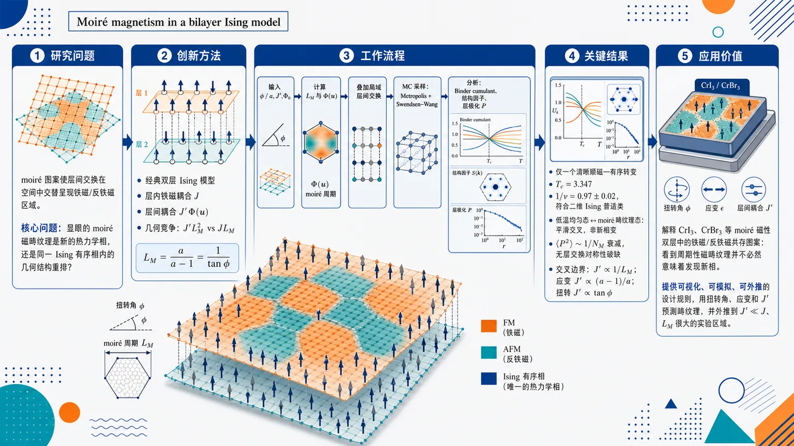
研究问题在扭转或差分应变的二维磁性双层中，moiré 图案会让层间交换在空间中交替呈现铁磁/反铁磁区域；核心问题是：这些显眼的 moiré 磁畴纹理究竟代表一个新的热力学相，还是只是同一 Ising 有序相内部由几何能量竞争产生的结构重排？创新方法提出最小经典双层 Ising 模型：两层方格 Ising 自旋保持层内铁磁耦合 J，层间耦合写成 J′Φ(u)，由扭转角或差分应变生成周期性 moiré 调制，使交换符号在超晶格中交替变化。Aha 点是把复杂 moiré 磁性简化为“层间体能收益 J′L_M²”与“层内畴壁线能 JL_M”的几何竞争，并用 Monte Carlo、Binder cumulant、结构因子和层极化量验证纹理不是新相。工作流程输入扭转角 φ 或应变比 a、层间强度 J′、偏置 Φ0 → 计算 moiré 周期 L_M=a/(a−1)=1/tanφ 和空间调制耦合 Φ(u) → 在双层方格 Ising 模型中叠加局域层间交换 → 使用 Metropolis 单自旋翻转与 Swendsen–Wang 簇更新采样 → 用 Binder cumulant 定位顺磁—有序转变，用 moiré 波矢结构因子识别畴纹理，用层极化 P 检验层对称性 → 输出相变普适类、低温交叉线和畴纹理分布。关键结果温度驱动转变只有一个清晰 Binder cumulant 交叉，示例临界温度 Tc=3.347，有限尺寸标度得到 1/ν=0.97±0.02，符合二维 Ising 普适类；低温下均匀铁磁态与 moiré 畴纹理态之间没有一级或二级相变，只是平滑交叉；扭转双层中 ⟨P²⟩ 随系统尺寸按约 1/N_M 衰减，热力学极限不发生层交换对称性破缺；交叉边界满足 J′∝1/L_M，对应应变 J′∝(a−1)/a、扭转 J′∝tanφ。应用价值为 CrI3、CrBr3 等 moiré 磁性双层中的铁磁/反铁磁共存图案提供清晰解释：看到周期性磁畴纹理并不必然意味着发现新相。该模型给出可视化、可模拟、可外推的设计规则，可用扭转角、应变和层间交换强度预测何时出现畴纹理，并将高 J′ 小 moiré 周期的模拟结果外推到真实材料中 J′≪J、L_M 很大的实验区域。第一部分：核心概览（Overview）
该研究建立了一个最小经典双层 Ising 模型，用扭转或差分应变生成 moiré 调制的层间交换作用，揭示 moiré 磁畴纹理可由几何能量竞争自然产生，而不必对应新的热力学相。大规模经典 Monte Carlo 结果表明，即使低温态出现强烈畴纹理，顺磁—有序转变仍属于二维 Ising 普适类，临界指数满足 (1/ν=0.97±0.02)。低温下均匀铁磁态与畴纹理态之间只是平滑交叉，交叉边界由层间体能 (J'L_M²) 与层内畴壁能 (JL_M) 平衡决定，即 (J'propto1/L_M)。研究为 moiré 磁性中的纹理形成提供了清晰、可模拟、可外推的几何能量框架。
---
第二部分：结构化快速回顾
《Moiré magnetism in a bilayer Ising model》（None，）
背景
二维磁性 van der Waals 双层中的相对扭转、晶格失配或应变会产生 moiré 图案，从而使层间交换相互作用空间调制。CrI(₃)、CrBr(₃) 等体系中已经观察到共存的铁磁/反铁磁区域与磁畴纹理，但这些纹理是否代表独立热力学相并不明确。
方法
采用方格双层经典 Ising 模型。层内相互作用为最近邻铁磁耦合 (J=1)，层间耦合为 (J'Φ(mathbf u))，其中
[
Φ(mathbf u)=Φ₀₊ₒ̧s(mathbf b₁ḑotmathbf u)+o̧s(mathbf b₂ḑotmathbf u).
]
通过差分应变参数 (a) 或扭转角 (φ) 控制 moiré 周期：
[
L_M=fracaa-1=frac1tanφ.
]
使用 Metropolis 单自旋翻转与 Swendsen–Wang 簇更新进行经典 Monte Carlo 模拟。
结果
温度驱动的顺磁—有序转变显示单一 Binder cumulant 交叉，示例参数下 (T_c=3.347)，有限尺寸标度给出 (1/ν=0.97±0.02)，与二维 Ising 普适类一致。低温下存在均匀铁磁态与 moiré 畴纹理态，但两者之间无一级或二级相变，仅为平滑交叉。
讨论
扭转双层保持层交换对称性；通过层极化量
[
P=fracbar S₂₍mathbf Q_M)-bar S₁₍mathbf Q_M)
bar S₂₍mathbf Q_M)+bar S₁₍mathbf Q_M)
]
检验后发现 (łangle P²ångle) 在热力学极限趋于 0，说明畴纹理态不自发破缺层对称性。应变双层的层对称性被显式破缺，畴壁优先出现在较大晶格常数层中。
局限
模型为最小 Ising 模型，使用方格而非 CrI(₃) 等真实材料常见的蜂窝晶格；忽略高阶 Fourier harmonics、连续自旋非共线结构、材料特定交换参数和第一性原理细节。为在可承受尺寸中观察交叉，模拟中采用 (J'=mathcal O(J))，而真实 van der Waals 材料通常 (J'łl J)。
结论
moiré 调制可在单一 Ising 有序相内部诱导磁畴纹理。纹理出现不必意味着新热力学相；其发生位置由几何能量平衡控制。扭转与应变产生定性相似的 moiré 磁性，主要区别在于应变显式破缺层对称性，而扭转不破缺。
---
第三部分：逐章节冷凝解析（Section-by-Section Condensing）
Abstract
- Moiré modulation creates spatially nonuniform interlayer exchange
磁性双层中的 moiré 图案导致层间交换相互作用随空间变化，并可诱导非均匀磁纹理。核心机制是几何变形改变局部层间堆垛，从而使交换从铁磁到反铁磁区域交替。原文表述为：*"Moiré patterns in magnetic bilayers generate spatially modulated interlayer exchange interactions that can give rise to nonuniform magnetic textures."*
- Minimal classical bilayer Ising model isolates geometric physics
模型采用经典双层 Ising 自旋，通过相对扭转或差分应变产生 moiré 调制层间耦合，目的不是复现某个具体材料，而是分离 moiré 磁性的最小几何机制。关键句为：*"We study a minimal classical bilayer Ising model with a moiré-modulated interlayer coupling, generated either by relative twist or differential strain between the layers."*
- Thermal transition remains conventional two-dimensional Ising
大规模经典 Monte Carlo 显示，即使低温态是畴纹理态，顺磁到有序态的温度驱动相变仍属于传统二维 Ising 普适类。摘要直接给出结论：*"Using large-scale classical Monte Carlo simulations, we show that the ordering transition remains in the conventional two-dimensional Ising universality class, even when the low-temperature state is domain-textured."*
- Ferromagnet–domain crossover is smooth rather than thermodynamic
低温下均匀铁磁态与局域跟随 (Φ(mathbf u)) 符号的畴纹理态之间是平滑交叉，不是独立相变。原文为：*"At low temperatures, we find a smooth crossover between a uniform ferromagnet and domain-textured state, in which the spins locally follow the sign of the interlayer exchange."*
- Twisted bilayers do not break layer symmetry
对于扭转双层，畴纹理形成并不导致层交换对称性自发破缺。摘要中的直接结论是：*"We demonstrate that there is no breaking of layer symmetry for twisted bilayers."*
- Crossover boundary follows geometric energy balance
交叉位置由层间体交换能与层内畴壁能之间的简单几何平衡决定。对应摘要句：*"The location of the crossover is determined by a simple geometric energy balance between bulk interlayer exchange and intralayer domain-wall costs."*
---
I Introduction
- Moiré platforms enable engineered electronic and magnetic behavior
二维材料堆叠中的 moiré 结构已经成为调控电子与磁性的通用平台，典型电子例子包括 twisted bilayer graphene 中的 superconductivity。原文为：*"Moiré structures in stacks of two-dimensional materials have emerged as a versatile platform for engineering their electronic and magnetic properties"*；并指出：*"superconductivity has been observed as the moiré pattern is tuned."*
- Magnetic moiré patterns arise from twist, mismatch, or strain
在磁性双层中，相对扭转、晶格失配、层间应变通过几何机制产生 moiré 图案，使层间交换相互作用空间调制。原文明确写道：*"relative twist, lattice mismatch, or strain between layers—create a moiré pattern that leads to spatially modulated interlayer exchange interactions."*
- Nonuniform magnetic textures are established theoretically and experimentally
moiré 调制可产生非共线态和畴状态，材料背景包括 twisted bilayer CrI(₃) 及相关体系。原文为：*"This moiré pattern has been shown to give rise to a variety of spatially nonuniform magnetic textures in both theory and experiment, including noncollinear and domain-like states in twisted bilayer CrI3 and related materials."*
- Two-dimensional ferromagnetism in CrI(₃) and Cr(₂)Ge(₂)Te(₆) enables moiré magnetism
单层 CrI(₃) 与 Cr(₂)Ge(₂)Te(₆) 的二维铁磁性实验实现，为磁性 moiré 异质结构奠定基础。原文为：*"Two-dimensional moiré ferromagnetism was first experimentally demonstrated in monolayer crystals of CrI3 and Cr2Ge2Te6."* 这里措辞中的 “moiré ferromagnetism” 与随后列举的单层材料存在概念压缩，更准确物理含义是二维铁磁材料为 moiré 磁性研究提供平台。
- Interlayer exchange is experimentally tunable
层状磁体 CrI(₃) 中的磁性可通过外电场调控，说明层间交换是敏感且可控的自由度。原文为：*"magnetic properties in layered magnets such as CrI3 can be tuned by external electric fields, establishing interlayer exchange as a sensitive and controllable degree of freedom."*
- Continuum theory predicts twist- and strain-induced moiré exchange
Hejazi 等的连续场论模型证明，相对扭转和应变均可在堆叠铁磁体与反铁磁体中产生具有 moiré 超晶格周期的空间变层间交换。原文为：*"both relative twist and strain between layers produce a spatially varying interlayer exchange with the periodicity of the moiré superlattice in stacked ferromagnets and antiferromagnets."*
- Low-temperature magnetic textures can be tuned by twist angle or strain
连续理论中，调节扭转角或应变可驱动不同非均匀低温磁相之间的转变。原文为：*"Low temperature transitions between these phases can be driven by tuning the twist angle or strain."*
- First-principles calculations support stacking-dependent exchange
双层 CrI(₃) 的第一性原理计算表明层间交换依赖局部堆垛，从微观上支持 moiré 调制磁性机制。原文为：*"First-principles calculations for bilayer CrI3 have further established the dependence of interlayer exchange on stacking order, providing a microscopic basis for moiré-modulated magnetism in real materials."*
- Differential strain is an alternative moiré engineering route
相比实验上更常用的扭转，差分应变也可单独产生 moiré 调制，且近期已有理论与实验提案/实现。原文为：*"similar modulation can also be engineered solely through differential strain between the layers."* 这种机制类似 graphene/hBN 中由自然晶格常数差异形成的 moiré：*"This method mimics the intrinsic moiré patterns created by stacking materials with naturally different lattice constants."*
- Texture appearance does not necessarily imply a new thermodynamic phase
磁纹理随扭转角、应变等参数变化出现，不必对应新的热力学相；空间结构特征可通过无额外自发对称性破缺的平滑交叉改变。原文为：*"the appearance of such textures does not necessarily imply the existence of a distinct thermodynamic phase"*；以及：*"changes in the characteristic spatial structure can occur as smooth crossovers without any additional spontaneous symmetry breaking."*
- Minimal model deliberately avoids material specificity
研究对象是带 moiré 调制层间交换的最小经典双层 Ising 模型，目标是提取 moiré 磁性的几何核心，而非描述某种具体材料。原文为：*"we study a minimal classical bilayer Ising model with a moiré-modulated interlayer exchange, which isolates the essential geometric ingredient of moiré magnetism without aiming to model any specific material."*
- Two low-temperature states share the same broken (mathbb Z₂) symmetry
低温下存在均匀铁磁态与畴纹理态，后者中自旋局域跟随层间交换符号；两者属于同一热力学相，共享全局 Ising 自旋翻转 (mathbb Z₂) 破缺。原文为：*"the system supports two distinct magnetic states: a uniform ferromagnet and a domain-textured state in which spins locally follow the sign of the interlayer exchange"*；并强调：*"these configurations belong to the same thermodynamic phase, sharing the same broken (Z₂) symmetry, and differ only in their spatial structure."*
- No first- or second-order transition accompanies domain formation
畴纹理态不破缺额外对称性，因此没有与该交叉相关的一阶或二阶相变证据。原文为：*"no additional symmetry is broken by the domain-textured state, and thus find no evidence of a first- or second-order transition associated with this crossover."*
- Crossover map applies to both strain and twist
交叉位置由层间体能与层内畴壁能平衡决定，并可统一描述应变与扭转双层；唯一关键区别是应变情形显式破缺层对称性。原文为：*"This yields an energetic crossover map that applies equally to strained and twisted bilayers, with the only qualitative distinction arising from explicit layer-symmetry breaking in the strained case."*
---
II Methods
- Square-lattice bilayer with Ising spins defines the minimal model
系统是方格双层，每个格点放置 Ising 自旋。原文为：*"Our system is a square-lattice bilayer with Ising spins at each site."* 选择方格是为了简化并隔离几何机制，而非复现 CrI(₃) 的蜂窝晶格。
- Twist and differential strain generate similar long-wavelength moiré patterns but differ in layer symmetry
相对扭转与差分应变均产生定性相似的长波长 moiré 图案；差分应变显式破坏两层交换对称性，而扭转保持该对称性。原文为：*"Both deformations produce qualitatively similar long-wavelength moiré patterns; however, differential strain explicitly breaks the symmetry of exchanging the two layers, while a twisted bilayer preserves it."*
- Moiré length is controlled by strain ratio or twist angle
对应变双层，参数 (a) 是一层相对另一层的晶格常数比，取 (age1)，(a=1) 表示无 moiré。对扭转双层，控制参数是 (φ)。moiré 单胞线尺寸满足
[
L_M=fracaa-1=frac1tanφ.
]
原文为：*"The size of a moiré unit cell (L_M) in terms of the control parameters is (L_M=fracaa-1=frac1tanφ)."* 当 (a→1) 或 (φ→0)，moiré 单胞增大：*"As (ai̊ghtarrow 1) or (φi̊ghtarrow 0), the moiré unit cell size grows."*
- Hamiltonian combines intralayer ferromagnetism and modulated interlayer coupling
哈密顿量为
[
H=-Jsumłₐₙgₗₑ ᵢⱼåₙgₗₑ,ₗσᵢ,ₗσⱼ,ₗ
-J'sumₘₐₜₕcₐₗ N[ᵢⱼ]e⁻|mathbf rᵢⱼ|/r_c
Φ(mathbf u(mathbf rᵢⱼ))σᵢ,₁σⱼ,₂.
]
层内最近邻铁磁耦合固定为 (J=1)，能量以 (J) 为单位；层间强度 (J') 是控制参数。原文为：*"The strength of this interaction is set to (J=1), with energies measured in units of (J). The interlayer coupling strength (J') is an additional control parameter."*
- Interlayer interaction is local with cutoff (r_c=sqrt2)
(mathcal N[ij]) 表示跨层自旋距离满足 (|mathbf rᵢⱼ|łe r_c) 的局域邻域，模拟中取 (r_c=sqrt2) 以保持局域层间交换。原文为：*"(r_c) controls the interlayer connectivity and range of the interaction, and in this work we set (r_c=sqrt2) to keep this exchange local."*
- Coupling function uses lowest reciprocal harmonics and ferromagnetic bias
层间耦合函数为
[
Φ(mathbf u)=Φ₀₊ₒ̧s(mathbf b₁ḑotmathbf u)+o̧s(mathbf b₂ḑotmathbf u),
]
其中 (mathbf b₁₌₂πmathbf x/a)，(mathbf b₂₌₂πmathbf y/a)。(Φ₀) 控制净铁磁偏置。原文为：*"The constant term (Φ₀) controls the net ferromagnetic bias between layers, and we treat this constant as a free parameter."* 若拟合具体材料，(Φ₀) 应来自第一性原理：*"To model a specific material, (Φ₀) would be set using a first-principles calculation."*
- Coupling alternates between ferromagnetic and antiferromagnetic regions
(Φ(mathbf u)) 具有 moiré 超晶格周期，使层间相互作用在空间中交替呈现铁磁和反铁磁符号。原文为：*"the interlayer interaction varies spatially with the periodicity of the moiré superlattice, alternating between ferro- and antiferromagnetic exchange."*
- Higher harmonics are omitted because they do not qualitatively change textures
模型保留最低阶 reciprocal harmonics，忽略高阶项。原文依据为：*"Higher harmonics are neglected as they do not qualitatively affect the resulting magnetic textures."*
- Competition between (J'), (a/φ), and (J) controls frustration
moiré 调制层间耦合与层内铁磁耦合竞争，造成挫折。调节 (J') 与 (a/φ) 可控制哪种相互作用主导。原文为：*"The coupling function and moiré pattern cause frustration in the system, with competition between the intralayer and interlayer exchange. We can tune which interaction dominates using the control parameters (J') and (a/φ)."*
- Figure 1 shows bias-dependent softening of domains
图 1 使用 (L=72)、差分应变 (a=24/23)、线性 moiré 单胞数 (N_M=3)，比较 (Φ₀₌₀) 与 (Φ₀₌₀.5)。蓝色表示层间铁磁，红色表示反铁磁；(Φ₀) 改变反铁磁区域大小但不改变 moiré 长度尺度。图注为：*"The constant (Φ₀) in the interlayer coupling function “softens” the domains."* 以及正文：*"(Φ₀) controls the size of the antiferromagnetic regions but does not otherwise change the moiré length scale."*
- Strained bilayers use unequal lattice constants and explicitly break layer symmetry
应变模型中，底层晶格常数为 1，顶层晶格常数 (a>1)，有限系统中应变层自旋数减少，层间不再一一对应。原文为：*"The bottom layer has unit lattice spacing, while the top layer has lattice constant (a>1), resulting in a reduced number of spins in the strained layer in a finite sized system."* 该构造产生严格周期 moiré 且显式破缺层对称性：*"This construction produces a perfectly periodic moiré pattern while explicitly breaking the layer symmetry."*
- Strain is biaxial and preserves square-lattice rotational symmetry
差分应变为双轴应变，不破坏方格旋转对称性。原文为：*"Note that this is biaxial strain and preserves the square-lattice rotational symmetry."*
- Twisted bilayers are implemented through the coupling map, not literal lattice rotation
为保持周期边界条件，扭转双层不直接旋转有限格点，而是在规则双层晶格上叠加扭转对应的 moiré 调制层间耦合。位移场为
[
mathbf u=fracφ2hatmathbf z×mathbf r.
]
原文为：*"Instead, we compute the moiré-modulated coupling function corresponding to a twist angle (φ)."* 以及：*"We then overlay this coupling map onto the regular bilayer lattice."*
- Twisted construction preserves periodic boundary conditions and exact layer symmetry
扭转实现方法保留周期边界与精确层交换对称性。原文为：*"This procedure preserves periodic boundary conditions, which would otherwise be lost, and the exact layer symmetry."*
- Using (J'=mathcal O(J)) is computationally motivated and later extrapolated
真实 van der Waals 材料通常 (J'łl J)，但为在合理系统尺寸中观察畴态交叉，模拟采用 (J'=mathcal O(J))。原文为：*"In van der Waals materials, the interlayer coupling strength is typically much weaker than that within layers, (J'łl J)."* 以及：*"we consider values (J'=O(J))."* 后续通过交叉边界外推到小 (J') 与大 (L_M)。
- Monte Carlo combines single-spin and cluster updates
模拟使用经典 Monte Carlo，包括 Metropolis 单自旋翻转与 Swendsen–Wang cluster updates。原文为：*"We study the model using classical Monte Carlo simulations with both Metropolis single-spin and Swendsen Wang cluster updates."*
- Single-spin updates are essential for low-temperature domain equilibration
低温有序畴态的平衡依赖畴壁局部重排和畴在层间隧穿；簇算法低温时典型簇跨越整个系统，采样效率差，单自旋翻转更适合。原文为：*"In the low-temperature ordered regime, equilibration is achieved by local rearrangements of domain walls and by tunneling domains between layers."* 以及：*"Single spin-flip updates allow these local processes and are thus better suited for equilibrating the domain state."*
- Cluster updates remain effective near the ordering transition
对较高温的有序转变，尽管存在挫折相互作用，簇更新仍有效。原文为：*"For the ordering transition at higher temperatures, cluster updates are effective despite the frustrated interactions."*
- Simulations use (L× L) square lattices with periodic boundaries in both layers
所有模拟在双层方格上进行，两个空间方向均采用周期边界条件。原文为：*"Simulations are performed on square lattices of size (L) with periodic boundary conditions in both spatial directions for both layers."*
- Metastability appears in low-temperature domain-textured regime
低温尤其是畴纹理区域存在长寿命亚稳构型，原因是重排畴壁需要克服能垒。原文为：*"At low temperatures, particularly in the domain-textured regime, the system exhibits long-lived metastable configurations due to the energy cost of rearranging domain walls."*
---
III Temperature-Driven Transition
- Ordering transition is tested in the domain-textured low-temperature regime
温度驱动相变首先在低温态已经形成 moiré 畴纹理的参数区间中分析。因为存在空间调制和竞争相互作用，不能先验假定其与均匀 Ising 模型相同。原文为：*"We first analyze the ordering transition in the regime where the low-temperature state exhibits a moiré-induced domain texture."* 以及：*"it is not a priori guaranteed that the ordering transition remains identical to that of the uniform Ising model."*
- Binder cumulant probes global (mathbb Z₂) spin-flip symmetry breaking
使用总磁化 (m) 的 Binder cumulant：
[
U₂₌frac32łeft(1-frac13fracłangle m⁴ånglełangle m²ångle²i̊ght).
]
其中 (m) 为两层总磁化，(3/2) 将 (U₂) 归一化到无序相 0、有序相 1。原文为：*"where (m) is the total magnetization summed over both layers."* 以及：*"The constant (3/2) normalizes (U₂) to range from 0 (disorder) to 1 (order)."* 该量直接检测全局 (mathbb Z₂)：*"The Binder cumulant probes the breaking of the global spin-flip (Z₂) symmetry."*
- Finite-size scaling uses moiré-cell count (N_M=L/L_M)
图 2 将系统尺寸表示为线性方向 moiré 单胞数 (N_M=L/L_M)，参数为 (L_M=10)、(a=10/9)、(N_M=2,łdots,14)、(Φ₀₌₀.5)。图注为：*"The moiré unit cell size is (L_M=10) sites, corresponding to (a=10/9), and (N_M=L/L_M) denotes the number of moiré unit cells along each linear system dimension."* 以及：*"Cumulants shown for (N_M=2,łdots,14) in increments of 1."*
- Single Binder crossing indicates continuous transition into ordered domain state
在大 (J') 且低温有畴的参数下，Binder cumulant 出现单一清晰交叉，临界温度为 (T_c=3.347)。原文为：*"we observe a single, well-defined crossing at (T_c=3.347), indicating a continuous transition from the paramagnetic phase directly into an ordered state."*
- Domain texture does not imply additional transition
尽管低温构型强烈畴纹理化，顺磁相直接进入有序态，没有额外的热力学相变对应畴形成。原文为：*"This behavior arises although the low-temperature configuration is strongly domain-textured, demonstrating that the emergence of moiré-induced domains is not associated with an additional thermodynamic phase transition."*
- Critical exponent is extracted from Binder slope
临界附近 Binder cumulant 导数满足
[
fracdU₂dTpropto L¹/ν.
]
利用尺寸对 ((L,2L)) 得到有效指数 (1/ν^*(L))，再外推。原文为：*"Near criticality, the derivative obeys (fracdU₂dTpropto L¹/ν)."* 以及：*"Using size-pairs ((L,2L)), we can obtain an effective exponent (1/ν*(L)) that converges with increasing system size."*
- Exponent agrees with two-dimensional Ising universality
热力学极限外推得到
[
1/ν=0.97±0.02,
]
与二维 Ising 的 (1/ν=1) 一致。原文为：*"Extrapolation to the thermodynamic limit yields (1/ν=0.97±0.02) in excellent agreement with the 2D Ising universality class value."*
- Universal scaling rules out a first-order transition
尽管二维 Ising 普适类结果并不意外，但理论上该转变可能是一阶；观察到 Ising 标度行为排除了这种可能。原文为：*"the transition could in principle have been first-order, which the expected universal Ising scaling behavior rules out."*
- Domain formation occurs within the ordered phase
moiré 畴纹理的形成完全发生在 (T_c) 以下的有序相内部。原文为：*"The formation of spatially modulated domain textures therefore occurs entirely within the ordered phase."*
---
IV Low-Temperature Crossover
- Low-temperature ordered phase contains two spatial structures
在 (T<T_c) 内，层内铁磁交换与 moiré 调制层间耦合竞争，产生均匀铁磁态与畴纹理态。后者中自旋局域对齐于耦合函数 (Φ(mathbf u)) 的符号。原文为：*"The competition between the intralayer ferromagnetic exchange and moiré-modulated interlayer coupling gives rise to two distinct states below (T_c): a uniform ferromagnet and a domain-textured state in which the spins locally align with the coupling function (Φ(u))."*
- Domain walls form in one layer per moiré unit cell
畴纹理态中，每个 moiré 单胞内畴壁出现在两层之一。原文为：*"In this domain state, domain walls form in each moiré unit cell in one of the two layers."*
- Ferromagnet and domain state are separated by smooth crossover
两种低温空间结构不由热力学相变分隔，而是由畴壁能与体能平衡控制的平滑交叉。原文为：*"these states are not separated by any thermodynamic phase transition, and instead there is a smooth crossover governed by the energy balance between the domain walls and bulk."*
- Translational symmetry is already explicitly reduced by moiré modulation
低温有序相中，可能进一步破缺的对称性很少；晶格平移对称性已被 (Φ(mathbf u)) 显式降至 moiré 超晶格尺度。原文为：*"Lattice translational symmetry is explicitly reduced to the moiré superlattice scale by the coupling function (Φ(u)), which depends implicitly on the moiré wavevector (Q_M)."*
- Layer-exchange symmetry is the key remaining candidate
重点检验层交换对称性
[
σₗ₌₁łeftrightarrow σₗ₌₂.
]
原文为：*"We therefore focus on the remaining layer-exchange symmetry (σₗ₌₁łeftrightarrowσₗ₌₂)."*
- Strained bilayers explicitly break layer symmetry and place domain walls in top layer
应变双层由于两层自旋密度不同，层交换对称性显式破缺，所有畴壁出现在晶格常数更大的层，即模拟中的顶层。原文为：*"In the strained bilayer, this symmetry is explicitly broken due to the unequal spin density in the layers, and all domain walls form in the layer with larger lattice constant (the top layer in our simulations)."*
- Twisted bilayers could in principle spontaneously break layer symmetry
扭转双层哈密顿量保持层对称性，因此若畴之间有效相互作用偏好某一层，可能出现自发层极化新相；因此重点检验扭转情形。原文为：*"for the twisted bilayer the Hamiltonian is layer-symmetric and conceivably an effective interaction between domains could spontaneously break this layer symmetry and generate a new phase."*
- Static structure factor detects moiré domain texture
对每层定义结构因子
[
Sₗ₍mathbf q)=frac1Nₗ²łeft|sumᵢᵢₙ ₗσᵢ eⁱmathbf qḑotmathbf ri̊ght|².
]
在 moiré 倒格矢
[
mathbf Q_M=(±2π/L_M,0),(0,±2π/L_M)
]
处取平均得到 (bar Sₗ₍mathbf Q_M))。原文为：*"We can evaluate the static structure factor at the moiré reciprocal lattice vectors, (QM=(± 2π/LM,0),(0,± 2π/LM)), to obtain (barSₗ(QM))."*
- (bar Sₗ₍mathbf Q_M)) functions as a crossover indicator
均匀铁磁态中 (bar Sₗ₍mathbf Q_M)=0)，畴纹理态中非零，因此可作为“order parameter”式的交叉诊断量，但并不代表真正相变序参量。原文为：*"(barSₗ(QM)) will be zero in the ferromagnetic state and nonzero in the domain state, and thus serves as an “order parameter” to study the crossover."*
- Layer polarization (P) measures layer-symmetry breaking
层极化定义为
[
P=fracbar S₂₍mathbf Q_M)-bar S₁₍mathbf Q_M)
bar S₂₍mathbf Q_M)+bar S₁₍mathbf Q_M).
]
该量检测畴纹理是否偏向某一层。原文为：*"This polarization parameter can be used to measure the presence of any layer-symmetry breaking."*
- Twisted-bilayer simulations use (φ=0.1), (L_M=10), (Φ₀₌₀.2)
图 3 参数为扭转角 (φ=0.1)、moiré 尺寸 (L_M=10)、偏置 (Φ₀₌₀.2)，系统尺寸用 (N_M=L/L_M) 标记，(N_M=2,łdots,16) 且仅偶数。图注为：*"No layer symmetry breaking in the twisted bilayer, with twist angle (φ=0.1) ((L_M=10)) and bias (Φ₀₌₀.2)."* 以及：*"(N_M=2,łdots,16), only even."*
- (łangle P²ångle) peaks near crossover but vanishes in the thermodynamic limit
(łangle P²ångle) 在交叉 (J'_c) 附近出现峰值，大 (J') 区域进入尺寸相关平台；平台值随系统尺寸减小，对大系统满足 (łangle P²ånglepropto1/N_M)，热力学极限趋零。图注为：*"(łangle P²ångle) peaks near the crossover (Jprⁱmec), and approaches a size-dependent plateau at large (Jprⁱme)."* 以及：*"The largest system sizes ((N_M>8)) follow the expected scaling (łangle P²ånglepropto1/N_M)."*
- Finite-size plateau reflects binomial domain placement, not symmetry breaking
若无层对称性破缺，每个 moiré 畴独立选择上层或下层，层极化应服从二项分布，因此 (łangle P²ånglesim1/N_M)。原文为：*"For no layer-symmetry breaking, the layer polarization (łangle Pångle) should be binomially distributed, as each domain independently forms in the top or bottom layer."*
- Twisted bilayer retains layer symmetry across the crossover
由于
[
łangle P²⁽L→infty)ångleJ'>J'_c→0,
]
扭转双层不破缺层对称性。原文为：*"We conclude that the twisted bilayer does not break the layer symmetry."*
- Strained and twisted bilayers both exhibit one low-temperature phase
应变双层层对称性显式破缺，扭转双层层对称性保持但不自发破缺；二者都只有平滑交叉而非新相。原文为：*"the strained bilayer (in which layer symmetry is explicitly broken) and the twisted bilayer (in which it remains unbroken) both exhibit a smooth crossover and a single low-temperature phase."*
- Crossover diagram uses (T=1łl T_c), (Φ₀₌₀.5)
图 4 在低温 (T=1łl T_c)、偏置 (Φ₀₌₀.5) 下绘制 (J') 与差分应变 (a) 的交叉图，并将横轴写为 ((a-1)/a=1/L_M)。图注为：*"The bias is (Φ₀=0.5). This occurs at low temperature; here (T=1łl Tc)."*
- Crossover boundary is detected through (bar Sₜₒₚ(mathbf Q_M)) in strained bilayers
应变情形中畴全部位于顶层，因此用顶层 moiré 波矢结构因子 (bar Sₜₒₚ(mathbf Q_M)) 检测畴纹理出现。原文为：*"Since we consider the strained bilayer, all domains will form in the top layer, and we measure (barSₜₒₚ(QM))."*
- Bulk interlayer energy scales as (J'L_M²)
单个 moiré 单胞内，跟随层间耦合符号形成畴可获得的层间体能收益与面积成正比，因此尺度为 (J'L_M²)。原文为：*"The bulk interlayer energy of the domains scales as (J'LM²)."*
- Domain-wall cost scales as (JL_M)
畴壁是线状对象，能量代价随 moiré 长度线性增长，因此为 (JL_M)，且模型中 (Jequiv1)。原文为：*"The domain-wall energy scales as (JL_M) (with (Jequiv1))."*
- Energy balance gives (J'propto1/L_M)
令 (J'L_M²sim JL_M)，得到交叉边界
[
J'proptofrac1L_M.
]
原文为：*"The crossover boundary should then follow a simple relationship (J'propto 1/L_M)."*
- Strain and twist forms follow from the same moiré length relation
利用 (L_M=a/(a-1)=1/tanφ)，应变边界为
[
J'proptofraca-1a,
]
扭转边界为
[
J'proptotanφ.
]
原文为：*"we fit the boundary function (J'propto(a-1)/a=1/L_M) in Fig. 4 and find it is consistent with our numerical results."* 以及：*"For the twisted bilayer, this maps to (J'proptotanφ)."*
- Bias (Φ₀) shifts but does not change the linear form
增大 (Φ₀) 会缩小有效反铁磁畴区域，移动交叉边界，但保持 (J'propto1/L_M) 的形式。原文为：*"increasing (Φ₀) decreases the effective size of the domains ... and thus would shift the boundary but maintain the simple form."*
- Large-(J') simulations can be extrapolated to realistic (J'łl J)
虽然模拟中 (J'=mathcal O(J))，交叉关系允许外推到 (J'łl J) 但 (L_Mgg1) 的真实弱层间耦合 regime。原文为：*"we show that these results can be extrapolated down to the regime of small interlayer coupling, (J'łl J), provided the moiré unit cell size is large, (L_Mgg1)."*
---
V Conclusion
- Minimal square-lattice bilayer Ising model captures geometric moiré magnetism
研究引入方格双层的最小 Ising 模型，并通过扭转或差分应变产生 moiré 图案。结论条目为：*"We introduce a minimal Ising model to study moiré magnetism in a square lattice bilayer."*
- Twist and strain generate qualitatively similar interlayer exchange couplings
扭转与差分应变虽然几何实现不同，但产生定性相似的 moiré 调制层间交换。原文总结为：*"We generate the moiré pattern via either twist or differential strain, and find they create qualitatively similar interlayer exchange couplings."*
- Thermal ordering is conventional Ising regardless of low-temperature texture
顺磁相到有序相的温度驱动转变为传统 Ising 相变，不依赖低温态是均匀铁磁还是畴纹理。结论条目为：*"We show that the temperature-driven phase transition from the paramagnetic to ordered phase is a conventional Ising transition, regardless of whether the low-temperature state is ferromagnetic or domain-textured."*
- Low-temperature ferromagnet–domain change is a smooth crossover
扭转与应变双层中，低温均匀铁磁态与畴态之间没有热力学相变，只有平滑交叉。原文为：*"for both twisted and strained bilayers there is no thermodynamic phase transition, but rather a smooth crossover, between the ferromagnet and domain state at low temperatures."*
- Crossover boundary is governed solely by domain-wall and bulk energetics
交叉由畴壁代价与层间体能收益的几何平衡决定。结论条目为：*"The crossover boundary is characterized solely by the energetic balance between domain walls and bulk."*
- Strain explicitly breaks layer symmetry; twist preserves it through crossover
应变情形的层对称性被显式破坏；扭转情形层对称性在交叉过程中保持不破缺。原文为：*"In the strained case, this is due to the layer symmetry being explicitly broken, while for the twisted bilayer it remains intact through the crossover."*
- Ferro- and antiferromagnetic regions agree qualitatively with CrI(₃) observations
模型在扭转和应变中均产生铁磁与反铁磁区域，定性符合 CrI(₃) 等材料的实验现象。原文为：*"In both cases, the appearance of ferro- and antiferromagnetic regions occurs, which is qualitatively consistent with experimental observations of materials such as CrI3."*
- Moiré-induced textures are not sufficient evidence for a distinct phase
最重要的概念澄清是：观测到 moiré 磁纹理本身不能说明存在不同热力学相。原文为：*"Our results clarify that the appearance of moiré-induced magnetic textures does not by itself imply the existence of a distinct thermodynamic phase."*
---
VI Acknowledgments
- Discussions and computational resources
研究受益于与 Guanghui Cheng 和 Gabe Schumm 的讨论，并使用 Boston University Research Computing Services 管理的 Shared Computing Cluster。原文为：*"We would like to thank Guanghui Cheng and Gabe Schumm for stimulating discussions."* 以及：*"The numerical calculations were carried out on the Shared Computing Cluster managed by Boston University’s Research Computing Services."*
- Funding source
经费来自 Simons Foundation Grant No. 511064。原文为：*"This research was supported by the Simons Foundation under Grant No. 511064."*
---
第四部分：深度理解与语言支持（Understanding & Nuance）
1. 术语解析
- Moiré-modulated interlayer coupling
字面意思是“moiré 调制的层间耦合”。这里不是简单说层间耦合大小改变，而是指层间交换 (J'Φ(mathbf u)) 随空间位置周期性变化，且可改变符号：局部为铁磁或反铁磁。其学术含义强调局部堆垛—交换相互作用之间的函数关系。
- Domain-textured state
“畴纹理态”不同于普通铁磁畴。这里的畴不是由随机退火历史产生的宏观畴，而是被 moiré 周期锁定的空间结构：自旋局域跟随 (Φ(mathbf u)) 的符号，在每个 moiré 单胞中形成规律畴壁。
- Smooth crossover
“平滑交叉”表示观测量随参数连续变化，没有热力学奇异性、无潜热、无发散关联长度，也无新的自发对称性破缺。它可以在有限尺寸图像中看起来像“状态变化”，但在热力学意义上不是相变。
- Layer-exchange symmetry
层交换对称性指将第 1 层与第 2 层所有自旋构型互换后哈密顿量不变。扭转双层中该对称性存在；应变双层中两层晶格常数和自旋密度不同，因此该对称性显式破缺。
- Universality class
“普适类”描述临界点附近的大尺度行为，由维度、序参量对称性、相互作用范围等决定，而非微观细节决定。该模型虽然有 moiré 长波调制与挫折，但临界指数仍与二维 Ising 相同，说明临界行为由全局 (mathbb Z₂) 自旋翻转对称性主导。
2. 疑难查证：为什么出现畴纹理却不是新相？
相变通常需要热力学非解析性，往往伴随某个对称性的自发破缺。该模型中顺磁到有序态破缺的是全局 Ising 自旋翻转对称性：
[
σi̊ghtarrow-σ.
]
这对应真正的温度驱动相变。
低温下从均匀铁磁到畴纹理，空间结构确实发生明显变化，但关键是：
- 平移对称性已经被 moiré 耦合显式降低，不是自发破缺；
- 全局 (mathbb Z₂) 在两种低温态中都已经破缺；
- 扭转情形中唯一可能的新对称性——层交换对称性——经 (łangle P²ånglesim1/N_M) 检验后在热力学极限不破缺；
- 应变情形中层对称性本来就被显式破坏，无法再产生对应的自发相变。
因此，畴纹理的出现更像是能量最优结构从“宁愿保持层内铁磁一致”逐渐转向“愿意付出畴壁代价以获得层间交换能”的结构重排。其临界尺度来自：
[
J'L_M²sim JL_M
quadRightarrowquad
J'simfracJL_M.
]
这是一条能量交叉线，不是相边界。
---
第五部分：创新评估与关联（Synthesis & Novelty）
1. 创新性判断
- 从“纹理是否存在”转向“纹理是否代表新热力学相”
近年 moiré 磁性研究大量关注 twisted CrI(₃)、CrBr(₃) 等体系中的非均匀磁纹理、铁磁/反铁磁共存和电场可调磁态。该研究的关键新意在于明确区分空间纹理形成与热力学相变：畴纹理可以非常明显，但仍只是同一 Ising 有序相内部的交叉。
- 用最小模型给出普适能量标度 (J'propto1/L_M)
过去连续理论和第一性原理研究常强调具体材料、堆垛依赖交换和可能的非共线磁相。这里用最小 Ising 模型抽象出简单几何规律：层间能量收益按面积 (L_M²) 增长，畴壁代价按长度 (L_M) 增长，因此交叉边界为 (J'propto1/L_M)。这一结果可直接映射为应变情形 (J'propto(a-1)/a)，扭转情形 (J'proptotanφ)。
- 系统检验二维 Ising 普适类而非默认假设
moiré 调制引入长波周期、空间非均匀耦合和 ferro/antiferro 竞争，原则上可能改变相变性质甚至导致一级转变。通过 Binder cumulant 与有限尺寸标度给出 (1/ν=0.97±0.02)，精确支持二维 Ising 普适类，排除了明显的一阶转变可能。
- 明确扭转双层不发生层对称性自发破缺
扭转双层中畴壁可以出现在任意一层，直觉上可能形成“畴壁偏向某一层”的层极化相。层极化量 (P) 的有限尺寸分析显示 (łangle P²ånglepropto1/N_M)，热力学极限为 0，说明没有层对称性破缺。这解决了畴纹理是否伴随额外 Ising-like 层自由度相变的问题。
- 统一比较扭转与差分应变 moiré 磁性
差分应变作为 moiré 工程路径在近年才受到更多关注。该研究将扭转与应变放入同一模型框架，指出二者产生定性相似的 moiré 调制层间交换，主要差异是应变显式破缺层交换对称性。这为理解 strain-engineered moiré magnets 提供了简洁基准模型。
- 为真实弱层间耦合材料提供外推逻辑
真实 van der Waals 磁体多满足 (J'łl J)，直接模拟大 (L_M) 极其昂贵。通过交叉标度 (J'sim1/L_M)，高 (J')、小 (L_M) 的可计算区域可外推到低 (J')、大 (L_M) 的实验相关区域，提供了实用的理论桥梁。
-
15
📊 含图深析
📄 摘要：针对稳态无黏翼型绕流中的激波捕捉，分析传统 PINN 失效原因：用于损失函数的稳态 Euler 方程约束偏弱，难以强制激波结构。文章围绕激波问题改进物理信息学习策略，以提升 PINN 对含间断流场的求解能力。
💡 亮点：工作指出稳态 Euler 损失对翼型激波约束不足，是 PINN 难以捕捉激波的核心原因。该诊断为含间断流体问题中的物理损失设计提供了具体依据。
📖 展开分析 + 配图
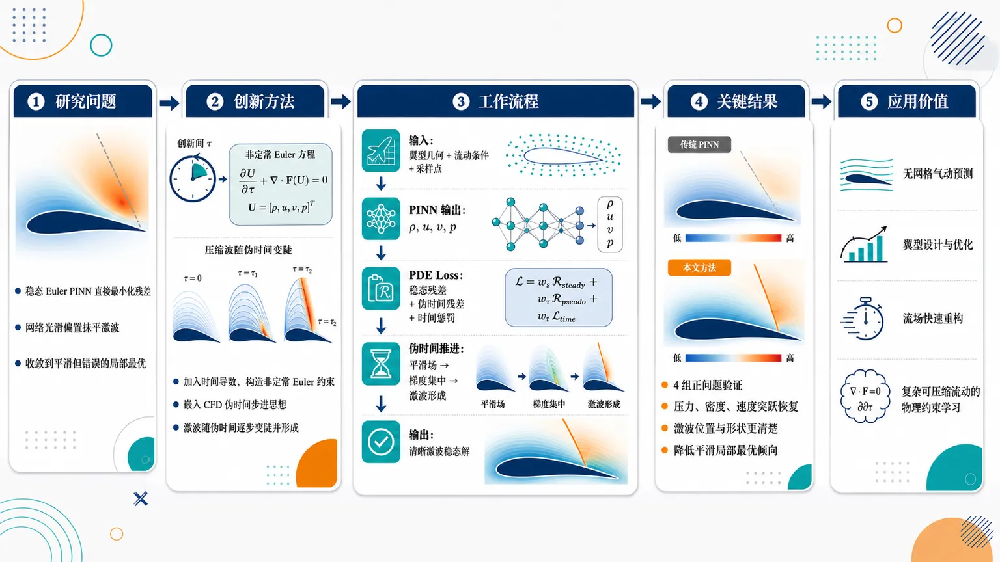
研究问题传统 PINNs 在稳态无黏翼型绕流中直接最小化稳态 Euler 方程残差时，容易输出一幅“平滑但错误”的流场图：翼型上方本应出现清晰压力/密度突跃的激波线，却被神经网络的连续光滑偏置抹平，梯度下降停在无激波的局部最优。创新方法将“直接求含激波稳态解”改造成“伪时间演化后自然形成激波”：在稳态 Euler 方程中加入时间导数，构造非定常 Euler 约束，并把 CFD 中的伪时间步进思想嵌入 PINN 的 PDE loss；同时使用简化 Euler 方程形式增强激波捕捉精度。Aha 点是：不强迫网络一次画出不连续激波，而是让激波像压缩波演化一样逐步变陡、形成。工作流程输入翼型几何、流动条件与采样点；PINN 输出密度、速度、压力等流场变量；损失函数不只检查稳态 Euler 空间残差，还加入伪时间演化残差与时间惩罚；训练过程中流场从初始平滑分布沿伪时间推进，压力/密度梯度在翼型附近逐渐集中；最终输出带有清晰激波位置和强跳跃结构的稳态无黏翼型绕流解。关键结果在 4 个不同流动条件和几何构型的正问题中，该方法比传统稳态 Euler PINN 更能恢复翼型周围的激波结构：原本被抹平的压力、密度、速度突变重新出现，激波位置和形状更清楚；额外的时间演化惩罚有效削弱了网络收敛到平滑局部最优的倾向。应用价值为 PINNs 处理跨声速/含激波无黏翼型气动问题提供了新的求解范式，可用于未来无网格气动预测、翼型设计、流场快速重构和复杂可压缩流动的物理约束学习；其核心价值是把传统 CFD 的伪时间推进经验转化为神经网络可训练的激波捕捉机制。第一部分：核心概览 (Overview)
该研究针对PINNs 在含激波无黏翼型绕流中失效这一核心瓶颈，提出一种将稳态激波捕捉重构为伪时间演化过程的物理约束增强方法。关键贡献在于指出传统稳态 Euler 方程残差约束过弱，难以克服神经网络偏向连续光滑函数的归纳偏置，导致梯度下降收敛到无激波的光滑局部最优。通过引入非定常 Euler 方程、伪时间步进思想和简化 Euler 方程形式，该方法使激波在演化规律约束下逐渐形成，为 PINNs 求解跨声速无黏翼型绕流提供了新的 shock-capturing 路径。
---
第二部分：结构化快速回顾
《Physics-informed neural networks for shock capturing in inviscid flows around an airfoil》（None，）
背景
Physics-informed neural networks (PINNs) 已被广泛用于求解由 partial differential equations (PDEs) 描述的正问题与反问题，但在含激波流动中仍存在显著困难。尤其在稳态无黏翼型绕流中，PINNs 可能完全无法捕捉激波。
方法
核心策略是将稳态 shock capturing 改写为一个逐渐收敛到稳态解的时间演化问题。通过在稳态 Euler 方程中引入时间导数项，构造非定常 Euler 方程约束 PINNs，使网络不再直接逼近含不连续激波的稳态流场，而是在时间演化规律引导下逐步形成激波。
结果
方法通过 4 个 forward problems 进行验证，覆盖不同流动条件与几何构型。结果显示，引入时间演化约束与伪时间步进损失后，PINNs 的激波捕捉能力得到改善。
讨论
传统 PINNs 失败的机制被归因于两点耦合：一是稳态 Euler 方程残差形成的物理约束较弱；二是神经网络天然倾向于连续光滑函数逼近，导致优化过程偏向平滑局部最优。时间演化约束为激波形成提供了额外物理惩罚项，从而缓解这一偏置。
局限
完整论文正文、数值表格、网络结构、训练超参数、边界条件、误差指标、计算成本、与传统 CFD 或其他 PINN 变体的定量比较未包含在所给材料中，因此无法确认具体精度提升幅度、收敛速度、稳定性边界和泛化能力。
结论
通过把稳态无黏激波问题转化为带伪时间演化约束的 PINN 学习问题，该研究为 PINNs 处理跨声速翼型绕流激波捕捉提供了新的物理建模范式。
---
第三部分：逐章节冷凝解析 (Section-by-Section Condensing)
可获得的原始材料只包含 arXiv 页面信息与摘要，未包含完整 PDF 正文。因此只能严格解析可见章节：Title / Abstract / Metadata。无法可靠还原 Introduction、Methodology、Numerical examples、Results、Conclusion 等原始章节标题与具体内容。
---
Title: Physics-informed neural networks for shock capturing in inviscid flows around an airfoil
Problem domain
研究对象是基于物理信息神经网络的激波捕捉，应用场景限定在翼型周围无黏流动。标题中的 *"Physics-informed neural networks for shock capturing in inviscid flows around an airfoil"* 明确给出三重限定：方法是 PINNs，目标是 shock capturing，物理系统是 inviscid flows around an airfoil。
Scientific target
核心科学目标不是一般流场预测，而是解决 PINNs 捕捉激波的问题。标题中的 *"shock capturing"* 指向数值流体力学中对不连续或近似不连续结构的稳定解析能力，尤其对应跨声速或超声速流动中的密度、压力、速度突变。
Flow regime implication
标题中的 inviscid flows 暗示控制方程主要为 Euler equations，而非 Navier–Stokes equations。无黏假设下缺少物理黏性带来的激波厚度正则化，激波表现为更尖锐的不连续结构，因此对 PINNs 的连续函数逼近能力构成更强挑战。
---
Abstract
PINNs have broad PDE-solving promise but remain weak for shocks
PINNs 在求解 PDE 正问题和反问题中具有潜力，但在含激波流体力学问题上仍存在困难。摘要开头指出：*"Physics-informed neural networks (PINNs) have shown remarkable prospects in solving forward and inverse problems involving partial differential equations (PDEs)."* 随后立即限定其短板：*"However, PINNs still face challenges in solving fluid mechanics problems involving shocks"*。这一对比明确了研究动机：PINNs 的一般 PDE 成功经验不能直接迁移到含激波流动。
The most difficult target is steady inviscid airfoil flow
困难场景被进一步聚焦为稳态无黏翼型绕流。摘要明确指出：*"especially in steady inviscid flows around an airfoil, where they may even fail to capture shocks."* 这里的关键不是激波位置略有误差，而是 fail to capture shocks，即网络可能给出完全平滑、无激波的错误流场。
Failure mechanism is attributed to weak steady Euler constraints
研究的首要理论判断是：传统 PINNs 使用稳态 Euler 方程构造损失函数时，物理约束过弱。摘要中给出的直接机制是：*"the reason PINNs fail to capture shocks is that the steady Euler equations used to construct the loss function impose weak constraints"*。这里的 weak constraints 指残差最小化并不足以强制网络产生非光滑激波结构。
Neural networks prefer continuous function approximations
PINNs 失败与神经网络的函数逼近偏好相关。摘要指出稳态 Euler 方程的弱约束 *"are difficult to correct the continuous function approximation preference of neural networks"*。这意味着常规神经网络倾向输出连续、平滑的函数；当控制方程残差约束不足时，优化过程更容易选择平滑近似，而非形成尖锐激波。
Gradient descent converges to a smooth local optimum
优化层面的失败表现为梯度下降进入错误局部最优。摘要给出明确表述：*"causing gradient descent converges to a smooth local optimum."* 这一点非常关键：问题不仅是表达能力不足，也不是单纯训练数据不足，而是损失地形中存在对优化器有吸引力的光滑局部最优解。
Steady shock capturing is reformulated as temporal evolution
核心方法是将稳态激波捕捉改写为时间演化问题。摘要指出：*"we propose to strengthen the physical constraints by reconstructing steady shock capturing as temporal evolution that gradually converges to the steady state solution."* 这表示稳态解不再被直接拟合，而是作为一个演化系统的长时间极限被获得。
Unsteady Euler equations are introduced by adding time derivative terms
方法的数学操作是向稳态方程加入时间导数项，形成非定常 Euler 方程。摘要明确说明：*"The unsteady Euler equations constructed by introducing time derivative terms into the steady equations are used to constrain PINNs."* 这一步将原本只含空间残差的约束扩展为包含时间演化一致性的约束。
PINNs no longer directly approximate discontinuous shock fields
传统 PINNs 的困难在于直接逼近含激波稳态流场；新方法避免了这一直接任务。摘要指出：*"The output of PINNs is no longer required to directly approximate a flow field with shocks by minimizing the residuals of the steady Euler equations."* 这句话表明方法从“直接拟合稳态不连续解”转向“学习满足演化规律的过渡过程”。
Shocks form gradually under temporal evolution laws
激波通过时间演化机制逐步生成，而不是一次性被网络输出。摘要给出机制性描述：*"Instead, shocks gradually form under the guidance of the temporal evolution law of the flow field."* 这与传统 CFD 中通过时间推进达到稳态解的思想相近：初始光滑流场在 Euler 动力学约束下逐渐压缩并形成激波。
Temporal penalty reduces smooth-solution bias
额外的时间项带来新的物理惩罚，有助于避免光滑局部最优。摘要指出：*"This additional temporal penalty alleviates the tendency of PINNs to converge to a smooth local optimum."* 这里的 temporal penalty 是创新核心之一，因为它不是单纯改变网络结构，而是改变损失函数中的物理约束形态。
Long-time unsteady Euler solving is difficult for PINNs
直接用 PINNs 求解长时间非定常 Euler 方程并不现实。摘要指出：*"Since obtaining the steady state solution requires solving the unsteady Euler equations over a long time in the time dimension, while the capability of PINNs to solve such problems is poor"*。这说明方法设计中存在一个二阶问题：引入时间演化能增强约束，但长时间时域 PINN 训练本身困难。
Pseudo time-stepping is embedded into the PDE loss
为避免长时间非定常求解困难，研究引入了带有伪时间步进思想的 PDE loss。摘要写道：*"we introduce a PDE loss function that embeds the concept of pseudo time-stepping to avoid this issue."* 这说明时间变量可能不是作为完整真实物理时间长期积分处理，而是以伪时间推进方式嵌入损失构造。
Simplified Euler formulation improves shock accuracy
除伪时间约束外，研究还提出一种简化 Euler 方程形式以提高激波捕捉精度。摘要指出：*"In addition, to further improve the shock capturing accuracy, we develop a simplified formulation of the Euler equations."* 由于正文缺失，无法确定该简化形式是变量重写、方程降阶、通量形式简化，还是残差项重构。
Validation uses four forward problems
方法验证基于 4 个正问题，并覆盖不同流动条件与几何。摘要中唯一可见的实验规模信息为：*"By solving four forward problems involving different flow conditions and geometries, we validate the effectiveness of the proposed method."* 但具体 Mach 数、攻角、翼型类型、网格/采样点数量、网络宽度深度、损失权重和误差指标未出现在所给材料中。
---
Metadata
Paper identity
论文 arXiv 编号为 2607.08130，分类为 Fluid Dynamics (physics.flu-dyn)。页面给出：*"arXiv:2607.08130 (physics)"* 与 *"Subjects: Fluid Dynamics (physics.flu-dyn)"*。这说明研究归属于物理学下的流体力学方向，而非单纯机器学习会议论文语境。
Submission date
提交时间为 2026 年 7 月 9 日。页面信息为：*"[Submitted on 9 Jul 2026]"*，版本历史为 *"[v1] Thu, 9 Jul 2026 06:03:12 UTC"*。这意味着该版本是初始 arXiv 版本。
Authors
作者为 Jiahao Song, Wenbo Cao, Weiwei Zhang。页面列出：*"Authors: Jiahao Song, Wenbo Cao, Weiwei Zhang"*。所给材料未包含机构、通讯作者、资助项目或代码链接。
Document scale
页面注明论文长度和图数量：*"Comments: 27 Pages, 14 figures"*。这说明完整论文包含较充分的数值实验与图示，但当前输入未提供 PDF 正文和图表内容，因此无法提取 14 幅图的具体结果。
Citation format and DOI
页面给出引用方式与 DOI：*"Cite as: arXiv:2607.08130 [physics.flu-dyn]"*，以及 *"https://doi.org/10.48550/arXiv.2607.08130"*。这表示论文拥有 arXiv-issued DOI，可作为预印本引用。
---
第四部分：深度理解与语言支持 (Understanding & Nuance)
1. 术语解析
#### Physics-informed neural networks (PINNs)
PINNs 指在神经网络训练损失中加入 PDE 残差、边界条件、初始条件等物理约束的模型。语境中的 PINNs 不是纯数据驱动模型，而是通过最小化 Euler 方程残差来学习流场。摘要中的 *"solving forward and inverse problems involving partial differential equations (PDEs)"* 表明其典型用途包括已知方程求解状态变量，以及根据观测反推参数或未知物理量。
#### Shock capturing
Shock capturing 指在不显式追踪激波面位置的情况下，通过数值方法自动捕捉激波等间断结构。它不同于 shock fitting：后者需要显式表示和移动激波边界；前者通常通过守恒形式、数值耗散、限制器或稳定化策略让激波自然出现在解中。该研究中的难点在于 PINNs 的连续网络输出与激波不连续性天然冲突。
#### Inviscid flows
Inviscid flows 即无黏流动，通常由 Euler equations 描述。无黏模型忽略黏性扩散，因此激波厚度在数学上趋近于零，表现为守恒律弱解中的间断面。相较 Navier–Stokes 方程，无黏 Euler 方程缺少物理黏性带来的平滑机制，因此更难被连续神经网络近似。
#### Smooth local optimum
Smooth local optimum 指优化过程中形成的局部最优解，其流场输出平滑但物理上错误。该表达的微妙之处在于：网络可能已经让稳态 Euler 残差较低，但仍未生成真实激波。这说明低残差不必然等于正确弱解，尤其在含间断守恒律问题中，熵条件、守恒通量跳跃关系和激波结构都可能未被充分约束。
#### Pseudo time-stepping
Pseudo time-stepping 是 CFD 中常见的求稳态解策略：引入一个非真实物理时间变量，让解随伪时间推进，直到残差趋近稳态。它不一定代表真实瞬态物理过程，而是一种数值迭代路径。摘要中的 *"embeds the concept of pseudo time-stepping"* 表明该方法借用了 CFD 的稳态求解思想来构造 PINN 的 PDE loss。
---
2. 疑难查证
#### 为什么稳态 Euler 方程残差会成为“弱约束”？
对含激波的无黏流动而言，真实解通常不是经典光滑解，而是弱解。稳态 Euler 方程在激波处并不以普通微分意义成立，而是通过积分守恒、Rankine–Hugoniot 跳跃条件和熵条件成立。常规 PINNs 通常在采样点上最小化微分残差：
[
LPDE = frac1Nsumᵢ łeft|R(U_θ(xᵢ,yᵢ₎₎ᵢ̊ght|²
]
如果网络输出始终光滑，自动微分得到的残差也可能在许多区域被压低。由于激波是局部强间断，若损失没有正确处理跳跃条件、守恒通量和熵条件，网络可能通过“抹平激波”获得较低平均残差。这就是摘要中所说的 *"steady Euler equations used to construct the loss function impose weak constraints"*。
#### 为什么神经网络倾向于给出光滑解？
常规多层感知机使用 tanh、sin、swish 等连续可微激活函数时，输出天然连续且可微。即使 ReLU 网络可表达分段线性函数，训练中的谱偏置也常使网络优先学习低频、平滑结构。激波属于高频、局部、非光滑结构，需要非常强的约束或特殊表示才能稳定出现。因此在稳态 Euler PINN 中，网络更容易收敛到平滑解，这正对应摘要中的 *"continuous function approximation preference of neural networks"*。
#### 为什么引入时间演化可以帮助形成激波？
在真实流体动力学中，激波常由压缩波非线性陡峭化形成。即使初始场较平滑，Euler 方程的非线性对流项也能使特征线汇聚，最终形成间断。将稳态问题改写为时间演化问题后，PINN 不再被要求“一步到位”输出含激波的最终场，而是受到演化规律约束：
[
fracpartial Upartial t + nabla ḑot F(U) = 0
]
这种约束提供了从平滑初态到激波稳态的路径依赖信息，减少了直接拟合间断解的困难。摘要中的 *"shocks gradually form under the guidance of the temporal evolution law of the flow field"* 正是这个思想。
#### 为什么不能简单地让 PINN 解完整长时间非定常 Euler 方程？
PINNs 在长时间时域问题中常出现误差累积、梯度病态、时间域采样不足和多尺度训练困难。稳态翼型绕流可能需要经过很长物理时间才能达到稳定激波位置。如果直接在整个时间区间训练非定常 PINN，损失函数会非常难优化。摘要中指出 *"solving the unsteady Euler equations over a long time in the time dimension"* 对 PINNs 能力要求很高，因此引入 pseudo time-stepping 是为了保留时间演化约束的优势，同时避免完整长时间瞬态学习的代价。
---
第五部分：创新评估与关联 (Synthesis & Novelty)
1. 创新性判断
#### 从“稳态残差拟合”转向“演化过程约束”
过去几年 PINNs 在 CFD 中常见策略包括自适应采样、残差加权、domain decomposition、conservative PINNs、entropy viscosity、shock-aware loss、gradient-enhanced PINNs、弱形式 PINNs 等。这些方法多半仍围绕稳态残差、采样策略或网络结构进行修正。该研究的新颖性在于直接重新定义问题：稳态激波不是直接拟合目标，而是伪时间演化的极限状态。
#### 明确指出 PINNs 捕捉激波失败的优化机制
研究不仅提出方法，还给出失败诊断：稳态 Euler 方程约束过弱，无法纠正神经网络的连续函数逼近偏好，导致梯度下降进入光滑局部最优。这个判断比单纯说“PINNs 对激波困难”更具体，因为它把失败原因定位到 PDE loss 约束强度 × 网络光滑偏置 × 梯度优化路径 的耦合。
#### 将 CFD 伪时间步进思想嵌入 PINN 损失
Pseudo time-stepping 是传统 CFD 中成熟的稳态求解工具，但将其作为 PINN PDE loss 的结构性设计，用来绕开长时间非定常 PINN 的训练困难，是该研究的重要创新点。其价值在于把数值流体力学中“通过伪时间推进获得稳态激波”的经验转化为神经 PDE 求解器的训练约束。
#### 面向无黏翼型绕流这一高难场景
含激波的无黏翼型绕流比一维 Burgers 方程、Sod shock tube 或简单二维通道激波更具挑战，因为几何边界复杂，流场包含翼型曲率、压力分布、激波-边界耦合和远场条件。摘要中明确聚焦 *"steady inviscid flows around an airfoil"*，说明该工作目标高于常见教学型 shock benchmark。
#### 通过简化 Euler 形式进一步提升 shock accuracy
摘要中提到 *"a simplified formulation of the Euler equations"*，表明创新不止于时间项引入，还包括控制方程表达方式重构。若该简化形式能够减少残差病态、改善变量耦合或强化守恒约束，则可能成为提升 PINN 激波精度的关键技术组件。
2. 解决的前人未解决问题
- 解决 PINNs 在稳态无黏翼型绕流中可能完全无法捕捉激波的问题，而不是仅改善小误差。
- 解决 直接最小化稳态 Euler 残差容易得到平滑假解的问题。
- 解决 引入非定常约束后长时间 PINN 求解困难的问题，通过伪时间步进式 PDE loss 避免完整长时间瞬态训练。
- 解决 连续神经网络与激波不连续结构之间的表示冲突，通过演化过程让激波逐渐形成，而非强迫网络直接生成间断。
- 推进 PINNs 从简单激波算例向更真实的 airfoil inviscid compressible flow 场景扩展。
-
16
📊 含图深析
📄 摘要：针对航空、汽车和海洋结构中交叉铺层复合材料的低速冲击隐蔽损伤，建立介观损伤力学与人工神经网络框架。模型关注基体开裂、纤维—基体脱粘、纤维屈曲和层间分层等难检测机制，用于预测低速冲击下损伤起始。
💡 亮点：介观损伤力学与 ANN 结合预测交叉铺层层合板低速冲击损伤起点。该框架面向 BVID 的早期识别，而不只给出冲击后强度。
📖 展开分析 + 配图
研究问题交叉铺层复合材料层合板在工具跌落、鸟撞等低速冲击后，外表可能只出现 barely visible impact damage，甚至难以肉眼识别；核心问题是如何在宏观破坏显现前，准确预测基体开裂、纤维-基体脱粘、纤维屈曲、层间分层等介观损伤的起始位置与发生时刻。创新方法将介观损伤力学与人工神经网络耦合：用介观力学刻画复合层板内部多失效模式的物理损伤机制，用神经网络学习冲击载荷、铺层响应与损伤起始之间的非线性映射；Aha 点在于用“物理损伤机制 + 数据驱动预测器”替代单纯经验判据或纯黑箱模型，面向隐蔽冲击损伤的早期识别。工作流程输入交叉铺层层合板参数与低速冲击工况 → 介观损伤力学描述层内与层间损伤机制 → 提取与冲击响应相关的特征信息 → 人工神经网络学习损伤起始规律 → 输出损伤是否起始、潜在失效模式及结构完整性评估结果。关键结果建立了一个面向低速冲击的复合材料损伤起始预测框架，能够把基体开裂、脱粘、纤维屈曲和分层等复杂损伤机制纳入统一预测思路；论文摘要未报告具体精度、误差、实验对比或性能提升百分比，因此主要结果体现为框架构建与预测目标实现。应用价值可用于航空、车辆和高性能复合材料结构的冲击后快速评估，尤其适合发现外观不明显但会削弱承载能力的隐蔽损伤；有助于维修决策、结构健康监测、服役安全评估和复合层合板抗冲击设计优化。核心概览
本文面向交叉铺层复合材料层合板低速冲击损伤预测，提出结合介观损伤力学与人工神经网络的框架，用于预测 barely visible impact damage 的损伤起始。
方法要点
- 采用介观损伤力学框架描述复合层合板在低速冲击下的损伤演化/起始行为。
- 引入人工神经网络用于辅助预测损伤起始。
- 研究对象为交叉铺层复合材料层合板。
- 考虑多种损伤机制，包括基体开裂、纤维-基体脱粘、纤维屈曲和层间分层。
- 应用场景指向航空、汽车和海洋结构中的冲击完整性评估。
- 具体网络结构、输入特征、训练数据来源、损伤判据和验证方式摘要未详述。
关键结果
- 摘要明确指出该研究构建了一个“介观损伤力学 + 人工神经网络”的预测框架。
- 该框架目标是预测交叉铺层复合层合板在低速冲击下的损伤起始。
- 研究关注 barely visible impact damage，即外观不明显但可能影响结构完整性的冲击损伤。
- 摘要未给出预测精度、对比基线、实验/仿真验证结果或定量性能指标。
创新性判断
- 可能的新颖点在于将介观损伤力学模型与人工神经网络结合，用于低速冲击下复合层合板损伤起始预测；这一点相较单纯力学模型或纯数据驱动模型可能具有混合建模优势。
- 另一个潜在新颖性是同时面向多种损伤机制，包括基体开裂、纤维-基体脱粘、纤维屈曲和层间分层，而不仅限于单一损伤模式。
- 针对 barely visible impact damage 的早期损伤起始预测具有工程实用价值，特别适用于航空、汽车、海洋结构的安全评估。
- 但摘要未详述模型实现、数据规模、验证方法和与已有方法的对比，因此其实际创新程度和性能提升仍无法确定。
-
17
📊 含图深析
📄 摘要：研究腐蚀钢筋混凝土梁残余抗弯承载力，结合实验、解析、数值和机器学习方法。M30 与 M50 两种混凝土等级梁试件尺寸为 100×150×1220 mm，腐蚀水平最高 16%，经四点弯曲测试；实验显示腐蚀显著降低抗弯强度。
💡 亮点：M30/M50 腐蚀 RC 梁在最高 16% 腐蚀后进行四点弯曲测试，并结合机器学习预测残余强度。该数据链路有助于结构健康评估中的材料退化建模。
📖 展开分析 + 配图
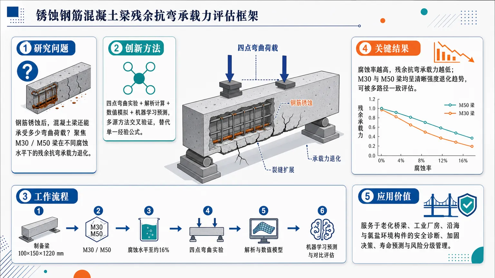
研究问题钢筋锈蚀后，混凝土梁还能承受多少弯曲荷载？聚焦不同腐蚀水平下 M30 与 M50 钢筋混凝土梁的残余抗弯承载力退化，画面可表现为一根内部钢筋生锈、裂缝扩展、在四点弯曲荷载下逐渐失去承载能力的梁。创新方法将四点弯曲实验、解析计算、数值模拟和机器学习预测整合为一套残余强度评估框架；Aha 点是用“多源方法交叉验证”替代单一经验公式，让锈蚀梁的剩余承载力可被实验观测、理论推导、仿真场景和数据模型共同刻画。工作流程制备 100×150×1220 mm 的 M30/M50 钢筋混凝土梁 → 施加不同钢筋腐蚀水平，最高约 16% → 进行四点弯曲加载实验，获得破坏荷载与抗弯响应 → 建立解析模型和数值模型 → 引入机器学习方法预测残余承载力 → 对比多方法结果，评估锈蚀梁剩余抗弯性能。关键结果钢筋腐蚀显著削弱梁的抗弯强度；腐蚀率越高，残余抗弯承载力越低，呈清晰下降趋势。研究显示 M30 与 M50 梁均受腐蚀影响，可通过实验、解析、数值和机器学习多路径评估这种承载力衰减。应用价值为老化桥梁、工业厂房、沿海与氯盐环境中的钢筋混凝土构件提供剩余承载力评估依据，可支持结构安全诊断、维修加固决策、服役寿命预测和腐蚀损伤后的风险分级管理。核心概览
该论文研究腐蚀钢筋混凝土梁的残余抗弯承载力，属于结构工程中腐蚀损伤评估与承载力预测方向，结合试验、解析、数值和机器学习方法分析 M30、M50 RC 梁在不同腐蚀水平下的强度退化。
方法要点
- 以 M30 和 M50 两种强度等级钢筋混凝土梁为研究对象。
- 梁试件尺寸为 100 × 150 × 1220 mm。
- 考察最高 16% 腐蚀水平下钢筋混凝土梁的残余抗弯性能。
- 采用四点弯曲试验测试腐蚀后梁的承载表现。
- 结合解析方法量化腐蚀对抗弯承载力的影响。
- 结合数值方法进行腐蚀 RC 梁承载力评估；具体模型形式摘要未详述。
- 引入机器学习方法预测或量化腐蚀导致的强度退化；具体算法摘要未详述。
关键结果
- 腐蚀会导致钢筋混凝土梁抗弯承载力退化。
- 研究量化了最高 16% 腐蚀水平下 M30 与 M50 RC 梁的残余强度变化。
- 试验、解析、数值和机器学习方法被用于腐蚀 RC 构件的残余承载力评估。
- 摘要未详述具体承载力降低幅度、模型精度、误差指标或不同方法间的对比结果。
创新性判断
- 可能的新颖点在于将试验、解析、数值模拟与机器学习方法结合，用于腐蚀钢筋混凝土梁残余抗弯承载力的综合评估。
- 同时比较 M30 与 M50 两种混凝土强度等级下腐蚀梁的残余性能，可能有助于揭示混凝土强度等级对腐蚀退化规律的影响，但摘要未详述具体差异。
- 引入机器学习预测腐蚀 RC 构件强度退化相对传统解析或数值方法具有一定应用新意，但具体模型、数据规模和性能优势摘要未详述，因此创新程度仍需全文验证。
-
18
📄 摘要：构建只用地球系统观测训练的机器学习原型再分析系统，不依赖物理数值模式生成多年代全球格点场。所得场能捕捉多时间尺度的大尺度大气结构和变率，展示观测驱动再分析替代传统同化—预报流程的潜力。
💡 亮点：机器学习模型仅由观测生成全球再分析格点场，绕开物理数值模式。若可扩展，该路线将改变天气气候训练数据的构建方式。
📖 展开分析 + 配图
研究问题仅用稀疏、非完整的地球系统观测，不借助数值天气模式、数据同化物理先验或 ERA5 等再分析训练标签，机器学习能否重建连续的全球六小时多变量再分析场，并保持风、温度、位势高度、湿度等变量之间的基本物理一致性。创新方法提出观测驱动的 AIFS-DOP 原型：把稀疏观测映射到 O96 全球网格，缺测位置用掩膜 MSE 训练；采用 GNN 编码器—16 层 pre-norm Transformer—GNN 解码器结构；通过独立的六小时循环，把过去 30 小时观测与上一阶段格点预测结合。Aha 点是：模型不学习 ERA5，而是直接从观测中学出类似数据同化中“物理模式 + 协方差统计”的隐含地球系统表征。工作流程输入为 1981–2022 年常规观测、卫星辐射、SST、地面和高空观测等稀疏数据；先映射到约 112 km 的 O96 八面体高斯网格，归一化并填零缺测值；模型在每个六小时窗口预测下一窗口观测，用缺测掩膜 MSE 反传；推理时每六小时独立循环四步，融合近期 30 小时观测与前一步格点估计；最终输出 1981–2022 年全球六小时三维大气和地表再分析场。关键结果AIFS-DOP 生成了 42 年全球六小时再分析，能重建副热带急流、ITCZ 季节迁移、风暴路径、ENSO、火山平流层增暖、全球变暖信号、风—质量场地转平衡和部分极端事件。相对独立 MISR 云运动风，上层风 RMSVD 接近同分辨率 ERA5/ERA-Interim；地面海平面气压和风速误差总体达到 ERA-Interim 或更好、介于 ERA-Interim 与 ERA5 之间。主要短板是小尺度动能偏弱、场过于平滑、湿度干区偏差、热带气旋强度明显低估。应用价值证明再分析生产可从“物理模式同化驱动”扩展为“观测直接驱动”的新路线，可在一个工作日内生成 42 年数据，远快于传统多年级再分析生产流程。该方法有望支持快速迭代观测质控、训练目标和模型架构，发展集合再分析、高分辨率区域嵌套、历史气候重建和独立于 ERA5 的机器学习天气气候基础数据。第一部分：核心概览 (Overview)
观测驱动的 AIFS-DOP 原型展示了仅依赖稀疏地球系统观测、完全不使用物理数值模式或再分析训练目标，生成 42 年全球六小时再分析场 的可行性。该系统在约 112 km O96 分辨率 上重建大尺度环流、ENSO、多年代温度变化、风—质量场平衡和部分极端事件；上层风相对独立 MISR 观测的误差接近同分辨率 ERA5，地面误差介于 ERA-Interim 与 ERA5 之间。核心地位在于把机器学习从“基于再分析的预报替代器”推进到“从观测直接生成再分析”的新范式。
---
第二部分：结构化快速回顾
《Global reanalysis from observations alone with machine learning》（None，）
背景
传统再分析依赖 数据同化系统，将稀疏观测与物理数值模式先验结合，生成连续、物理一致的格点场。ERA5、MERRA-2、JRA-3Q、CFSR 等产品已成为天气气候研究和机器学习天气预报训练的基础数据。新问题在于：纯观测训练的机器学习模型能否在没有物理模式约束的情况下生成物理一致的全球再分析。
方法
采用 AIFS-DOP，输入为映射到 O96 八面体约化高斯网格、六小时频率的稀疏观测；缺测值归一化后填零，损失函数用带缺测掩膜的 MSE。模型结构为 GNN 编码器—16 层 pre-norm transformer 处理器—GNN 解码器。训练期为 1981–2020，验证期为 2021 年 1–5 月，生成期为 1981-01-01 至 2022-12-31。
结果
AIFS-DOP 捕捉了纬向急流、温度层结、ITCZ 季节迁移、风暴路径、ENSO、火山导致的平流层增暖、全球变暖信号和若干极端事件。物理一致性诊断显示，风场和位势高度场可恢复有效科氏参数纬向结构；跨变量回归能再现槽脊、温度和风异常的动力一致模式。独立观测评估显示，上层风 RMSVD 接近 ERA5/ERA-Interim，地面误差总体达到 ERA-Interim 或更好。
讨论
观测训练模型内部学到的地球系统表征可在一定程度上替代传统同化中的物理模式与协方差统计。与传统再分析通常需数年生产不同，该原型再分析在 一个工作日 内生成，训练耗时 4 天、16 块 H100 GPU，推理用 8 条并行流。
局限
分辨率较低，O96 约 112 km，小尺度动能明显弱于 ERA5；热带中层经向环流存在偏差；极地和干燥平流层相对湿度不合理偏高；热带气旋强度显著低估；MSE 损失倾向输出条件均值，导致小尺度和平滑化问题。
结论
纯观测机器学习再分析具备成为新型再分析生产路线的潜力，但目前仍是原型，不是可直接替代 ERA5 的成熟产品。进一步进展依赖更高分辨率、更好观测质控、改进训练目标、改进湿度变量表示和更系统的独立验证。
---
第三部分：逐章节冷凝解析 (Section-by-Section Condensing)
Introduction
Reanalysis datasets are foundational infrastructure
再分析数据集已成为天气、气候、监测和产业应用的基础资料。ERA5、MERRA-2、JRA-3Q、CFSR 被描述为事实标准，其影响跨越学术界、保险、可再生能源等领域，并具有显著经济收益。原文明确指出：*"reanalysis datasets have increasingly served as a cornerstone for weather and climate research and monitoring"*，并列举 *"ECMWF’s ERA5, MERRA-2, JRA-3Q, and CFSR have become de-facto standards"*。这一定位说明再分析不仅是研究产品，也是现代天气气候服务体系的公共基础设施。
Traditional reanalysis depends on physical priors
传统再分析通过 数据同化 将稀疏观测与物理模式背景场结合，形成完整格点场。其统计基础是 Bayesian framework，核心作用是用数值模式提供空间、时间和变量之间的物理约束。关键表述为：*"These products are generated using data assimilation systems, which statistically combine sparse observational data with prior estimates informed by physical understanding of the Earth system, encoded in numerical models, within a Bayesian framework"*。物理模式的功能被进一步界定为：*"provides the crucial physical constraints needed to fill the gaps between sparse observations"*。
Machine learning weather prediction still depends heavily on reanalysis
当前大多数先进机器学习天气预报系统仍依赖 ERA5 等格点同化场进行训练和初始化。原文指出：*"nearly all state-of-the-art data-driven models relying on gridded data assimilation fields for training and initialisation"*。这意味着机器学习预报的“数据驱动”常常并非直接观测驱动，而是继承了传统物理模式同化系统生成的状态估计。
Observation-driven models introduce a new frontier
纯观测训练路线正在兴起，尤其是 Direct Observation Prediction (DOP)。这类模型端到端只使用观测，不依赖再分析输入或目标。关键句为：*"purely observation-driven techniques such as Direct Observation Prediction (DOP) ... are trained end-to-end exclusively on observations"*。其科学意义在于模型可能形成与数值模式物理先验无关的内部地球系统状态表征：*"DOP models can develop internal latent representations of the Earth system state and dynamics which are independent from the physics encoded in numerical models"*。
Core scientific question
核心问题是：没有显式物理先验，仅由稀疏观测训练的机器学习模型，能否生成 physically coherent, gridded reanalysis datasets。原文直接提出：*"can observation-driven machine learning models be used to construct physically coherent, gridded reanalysis datasets from sparse observations alone?"* 这一问题把研究目标从“预报技能”扩展为“再分析生产机制”。
AIFS-DOP generates a 42-year six-hourly global reanalysis
实验系统使用 AIFS-DOP，AIFS-DOP 是 ECMWF Artificial Intelligence Forecasting System (AIFS) 的变体。模型训练完全基于稀疏观测：*"trained end-to-end exclusively from sparse Earth system observations, with no (re)analysis inputs or targets"*。生成策略为每六小时运行一次一步预报，条件输入为此前 30 小时 近期观测：*"a series of one-step (six-hour) predictions every six hours, conditioned on recent observations over the previous 30 hours"*。生成数据覆盖 42 年，空间分辨率约 112 km：*"We generate 42 years of data at a spatial resolution of approximately 112 km"*。
Claimed performance reaches meaningful reanalysis quality
原型结果显示，大尺度结构、多时间尺度变率和动力平衡均可被部分恢复。独立观测评估给出较强结论：*"upper-level winds is close to that of ERA5 when compared at a consistent resolution"*；地面误差则 *"between that of 4th- and 5th-generation ECMWF reanalyses (ERA-Interim and ERA5)"*。此外，生产效率显著不同于传统再分析：*"the reanalysis presented here was generated during the course of a single working day"*。
---
Model and datasets
AIFS-DOP is built on ECMWF AIFS and GraphDOP experience
模型采用 Pinnington et al. (2026) 的 AIFS-DOP。它继承 ECMWF 业务 AIFS 架构经验，并吸收 GraphDOP 经验。原文说明：*"This paper uses the AIFS-DOP model introduced in Pinnington et al. (2026)"*，并指出：*"AIFS-DOP builds on the AIFS model, developed and used operationally at ECMWF"*，同时 *"draws on experience gained from GraphDOP"*。
Sparse observations are mapped to O96 grid with missing-value handling
稀疏观测映射到规则 O96 输入网格；缺测值在归一化后用零填充。关键句为：*"Sparse observations are represented on a regular O96 input grid, with missing values imputed with zeros after normalisation"*。O96 八面体约化高斯网格对应约 112 km 分辨率：*"O96 octahedral reduced Gaussian grid ... approximately 112 km resolution"*。这种设计允许不规则观测进入标准神经网络结构。
Architecture combines GNN attention and transformer processing
模型采用 encoder–processor–decoder 架构。编码器和解码器是带多头缩放点积注意力的 图神经网络，处理器由 16 层 pre-norm transformer 组成，并使用沿经向带的滑动窗口注意力。原文精确描述为：*"The model has an encoder–processor–decoder architecture"*；*"The encoder and decoder are graph neural networks (GNNs) with multi-head scaled dot-product attention"*；*"The processor consists of 16 pre-norm transformer layers with sliding window attention over longitudinal bands"*。
Training target is next six-hour observations
训练目标是预测下一个六小时窗口内的观测。损失函数为带缺测掩膜的 mean squared error：*"The training objective is to predict the observations in the next six-hour window"*；*"A mean squared error loss (MSE) which masks grid points with missing values is adopted"*。缺测掩膜阻止模型学习填充值：*"The masking prevents the loss from being back-propagated at missing locations to ensure that the model does not learn to predict fill values"*。
Cycling procedure allows information from previous windows
由于任意六小时窗口的观测并不完整，系统采用类似同化循环的简化 cycling procedure。每次初始化循环经过 4 个六小时输入步，上一阶段的六小时格点预测会与新观测结合：*"For each initialisation, the model cycles through four six-hour input steps"*；*"the six-hour gridded predictions from the previous step are passed forward and combined with new incoming observations"*。这相当于让过去窗口的信息影响当前状态估计。
Cycling is independent, unlike serial data assimilation
与传统数据同化不同，每个分析时刻的循环独立计算，以移除训练和推理中的串行约束。原文强调：*"Unlike traditional data assimilation, the cycling for each analysis is computed independently to remove serial constraints from the training and inference procedures"*。这一点直接支撑后文的快速并行生产能力。
Training dataset spans 1980–2022 and includes conventional and satellite sources
高质量训练观测数据集覆盖 1980–2022，来自 ECMWF、EUMETSAT、NOAA 的常规和卫星观测，并使用 Anemoi framework 构建。原文表述为：*"a quality controlled training dataset involving key conventional and satellite instruments spanning 1980-2022 was constructed using the Anemoi framework"*；数据源 *"drawn from ECMWF, EUMETSAT, and NOAA"*。这些观测被映射为 6-hourly O96 网格。
Training, validation, and generation periods are explicitly separated
训练期为 1981–2020，验证期为 2021 年 1–5 月，再分析生成期为 1981 年 1 月 1 日至 2022 年 12 月 31 日。原文给出：*"The model was trained over the period 1981-2020, with validation between January and May 2021"*；*"The reanalysis dataset was generated between January 1st, 1981 and December 31st, 2022"*。输出包括标准气压层上空变量与地表变量，时间频率为 每六小时：*"State estimates were made for a set of upper-air variables on standard pressure levels and surface variables every six-hours"*。
---
Atmospheric structure and mean state
ERA5 is used as a high-quality reference but not ground truth
评估中将 AIFS-DOP 的 O96 状态估计与同分辨率 ERA5 对比。ERA5 只是高质量参考，不被视为真值；AIFS-DOP 训练也没有 ERA5 目标。原文明确限定：*"ERA5 is used here as a high quality reference product for assessing large-scale structure, but should not be considered as a ground truth"*；*"ERA5 data was not used as a training target in AIFS-DOP"*。
Large-scale mean atmospheric structure is a baseline requirement
任何再分析都必须表示大尺度平均结构，包括 zonal jets、thermal stratification、meridional overturning circulation。原文直接给出标准：*"A basic requirement for any reanalysis is that it represents the large-scale mean structure of the atmosphere, including the zonal jets, thermal stratification, and meridional overturning circulation"*。这构成后续温度、风、ITCZ、Hadley 环流、湿度诊断的评价逻辑。
Zonal-mean temperature agrees with ERA5 within about 0.5 K in most regions
在 2000–2019 的 DJF/JJA 气候平均中，AIFS-DOP 与 ERA5 的纬向平均温度非常接近，大多数区域绝对差小于 0.5 K。原文描述：*"Absolute differences in the zonal mean temperature field are generally less than 0.5 K"*。主要例外在南极，AIFS-DOP 相对 ERA5 偏暖，尤其 JJA：*"The main exception to this is over Antarctica where AIFS-DOP is warmer than ERA5, particularly in JJA"*。
Subtropical jets and polar night jet are physically placed
AIFS-DOP 能根据热成风关系捕捉副热带急流位置与强度。原文指出：*"The subtropical jets are positioned as would be expected from thermal wind relationships with respect to the horizontal temperature gradients, and are well captured in terms of both intensity and location"*。JJA 在 100 hPa 附近的极夜急流也出现，但强度低于 ERA5：*"the polar night jet can be seen in JJA at 100 hPa ... although its intensity is slightly less than ERA5"*。
Near-surface trade wind reversal and tropical upper-level easterlies are mostly captured
近地面信风东风反转及其季节性纬度变化得到再现：*"the reversal of the near-surface trade wind easterlies is present with the latitude varying as expected with season"*。JJA 热带高层东风也存在，但向下延伸过深：*"The tropical easterlies at upper levels in JJA are present in AIFS-DOP but extend further towards the surface than in ERA5"*。
Surface wind convergence captures ITCZ migration
10 m 风场辐合季节平均显示 ITCZ 清楚可见，并能随季节南北迁移。原文指出：*"The Inter-Tropical Convergence Zone (ITCZ) is clearly visible and its migration north and south with the changing seasons is well captured in AIFS-DOP"*。分析范围为 40°S–40°N，时间平均为 2000–2019，单位为 10⁻⁶ s⁻¹。
Fine-scale tropical convergence structures are partly recovered
东太平洋赤道附近 MAM 窄带辐散结构在两套数据中均可见，并与该区域冷海温舌相关：*"the narrow band of divergence along the equator in the East Pacific during March to May (MAM) associated with the tongue of cold SSTs in this region are visible in both datasets"*。南太平洋辐合带也表现良好：*"the diagonal line of the South Pacific Convergence Zone shows good agreement with ERA5"*。
African inter-tropical discontinuity is correctly located but too weak
非洲上空的 inter-tropical discontinuity convergence line 在 AIFS-DOP 中纬度位置正确，但强度弱于 ERA5。原文表述：*"Over Africa, the inter-tropical discontinuity convergence line is present at the correct latitude in AIFS-DOP but its intensity is weaker than in ERA5"*。这提示局地低层辐合强度仍有系统偏差。
Surface wind skill emerges without scatterometer training
AIFS-DOP 没有用散射计数据训练或初始化，却能生成相当合理的地表风辐合结构。原文强调：*"this model was not trained or initialised with scatterometer data"*；地表风预测只来自 *"sparse in-situ wind and pressure observations alongside indirect satellite radiance data"*。这是“从间接观测学习动力关系”的重要证据。
Hadley-cell low-level convergence and upper-level divergence are reproduced but mid-level meridional circulation is problematic
纬向平均经向风显示低层辐合和高层辐散的 Hadley 环流结构能够重建：*"AIFS-DOP reproduces the low-level convergence and upper-level divergence associated with the Hadley cells"*。但中层差异更明显，AIFS-DOP 的辐合/辐散区域更深：*"there are more marked differences at mid-levels with AIFS-DOP exhibiting deeper areas of convergence and divergence relative to ERA5"*。这一项被明确列为需改进区域：*"likely to be an area that needs further improvement in AIFS-DOP"*。
Relative humidity captures broad features but fails in very dry regimes
AIFS-DOP 的相对湿度可捕捉 ITCZ 对流高湿和 Hadley 下沉支干空气：*"the high tropospheric humidity associated with convection along the ITCZ and the dry air in the descending arms of the Hadley cells are both present"*。但在极地和平流层等极干区域出现不合理高湿：*"implausibly high humidity values in AIFS-DOP in regions with very dry air such as the poles and the stratosphere"*。
Specific-humidity MSE may cause polar humidity problems
湿度问题被归因于训练目标使用 specific humidity。由于赤道比极地典型比湿高数个数量级，MSE 学习信号被高湿区支配。原文解释：*"Since typical specific humidity values are several orders of magnitude larger at the equator than at the pole, the learning signal from the MSE loss will be dominated by predictions in areas of high humidity"*。可替代方案是训练 dew point 或 relative humidity：*"Training against dew point or relative humidity targets instead of specific humidity may improve this"*。
---
Multi-scale variability
Observation-driven reanalysis must recover variability across scales
地球系统在空间和时间上具有多尺度变率，再分析不仅要恢复平均态，也要恢复天气尺度、季节尺度和更长时间尺度的代表性模态。原文提出标准：*"An observation-driven reanalysis therefore needs to recover not only the mean atmospheric state, but also representative modes of variability across synoptic, seasonal, and longer timescales"*。
Storm tracks are diagnosed by 2–6 day filtered Z500 variability
温带风暴路径强度用 500 hPa 位势高度 2–6 天带通滤波标准差诊断。图 6(a,b) 统计期为 2002–2021。原文说明：*"the standard deviation of the 2-6 day band-pass filtered geopotential height at 500 hPa as an indicator of extra-tropical storm track intensity"*。AIFS-DOP 能较好再现瞬变涡动方差空间分布及季节强度变化：*"captures the spatial distribution of the transient eddy variance well, as well as the change in intensity with season"*。
Southern Hemisphere storm tracks are slightly weak
AIFS-DOP 在南半球风暴路径能量略弱于 ERA5。原文指出：*"In the southern hemisphere the storm tracks are slightly weaker than in ERA5"*。这与后文动能谱中小尺度能量不足的结论方向一致。
ENSO SST variability and Walker circulation wind anomalies are recovered
训练与初始化观测包含浮标 SST 以及具有地表敏感性的间接卫星辐射。原文说明：*"The observations used to train and initialise AIFS-DOP included sea surface temperature (SST) observations from buoys as well as indirect satellite radiances with surface sensitivities"*。2015–2016 强厄尔尼诺主导图 6(c)：*"the strong El Niño of 2015-2016 dominating the plot"*。与 ENSO 响应相关的 Walker 环流纬向风异常也清楚可见：*"the zonal wind anomalies associated with the shifted Walker circulation in response to ENSO can be clearly seen"*。
Volcanic stratospheric warming signals are captured
全球上空温度异常显示 1982 El Chichon 和 1991 Pinatubo 火山喷发相关平流层增暖。原文指出：*"stratospheric warmings associated with the volcanic eruptions of El Chichon in 1982 and Pinatubo in 1991 are clearly visible in both datasets"*。图 7 时间范围为 1982–2022，异常经日气候态扣除后进行 30 天居中滚动平均。
Tropospheric ENSO temperature anomalies and global warming are evident
对流层中，厄尔尼诺导致的增暖、拉尼娜导致的冷却以及长期全球对流层变暖信号均可见。原文描述：*"prominent warming associated with El Niño events (in particular the 1997 event) and cooling associated with La Niña can be seen"*；长期趋势为：*"the gradual global tropospheric warming signal is evident"*。
Stratospheric CO2 cooling cannot be assessed above 100 hPa because training lacks radiosondes there
由于模型未用 100 hPa 以上探空数据训练，无法看到 CO2 增加导致的平流层冷却。原文为：*"Since this model was not trained with radiosonde data above 100 hPa it is not possible to see the cooling associated with increased CO2 in the stratosphere"*。这体现了观测覆盖对重建能力的硬约束。
Near-surface land temperature anomalies correlate strongly with ERA5
低海拔陆地区域的月平均 2 m 温度异常与 ERA5 高度相关，且包含全球变暖信号。原文指出：*"At the surface, there is a high degree of correlation between the monthly two-metre temperature anomalies over low elevation land in the two datasets"*；*"a clear signal of global warming is present"*。高海拔陆点被排除，以避免不同原始分辨率和复杂地形导致的高度依赖问题：*"High elevation land points were excluded ... since 2m temperature has a strong dependence on height"*。
Tropical SST anomaly distribution and Niño3.4 time series align closely with ERA5
热带 SST 异常的空间和时间分布与 ERA5 接近。原文指出：*"The spatial ... and temporal ... distribution of the tropical SST anomalies shows close alignment with ERA5"*。但部分异常相对平滑，尤其早期 1988/9 La Niña 偏弱：*"Some of the anomalies appear slightly smoothed compared to ERA5"*；*"the 1988/9 La Niña appears weaker in AIFS-DOP than ERA5"*。Niño3.4 区域定义为 5°N–5°S, 120°W–170°W，ONI 使用 3 个月居中滚动平均。
ENSO teleconnection patterns are reproduced
AIFS-DOP 捕捉 ENSO 遥相关结构，包括 Walker 环流减弱、赤道 850 hPa 纬向风减弱、200 hPa 对应减速、副热带急流增强和中高纬海平面气压响应。原文描述：*"AIFS-DOP also captures the teleconnection patterns associated with ENSO"*；*"The weakening of the Walker circulation is highlighted by the reduced zonal winds along the equator at 850 hPa and the corresponding slowdown at 200 hPa"*；模式与 ERA5 *"show remarkable similarity"*。ENSO 相位用 Niño3.4 异常 ±0.5 K 阈值定义。
Extreme-event case studies show partial but not complete fidelity
极端事件案例包括 2002 年南极平流层极涡分裂、1987 Great Storm、2021 大气河、2017 Hurricane Irma。南极极涡分裂重建良好：*"the rare Antarctic stratospheric polar vortex split of 2002 was well captured"*。1987 大风暴也被捕捉，尤其考虑早期卫星覆盖不足：*"the 'Great Storm' of 1987 (an encouraging sign, given that satellite observation coverage in this period was not as complete as in more recent times)"*。
Atmospheric river moisture anomaly is too weak
2021 年大气河事件中，AIFS-DOP 显示强综合水汽输送异常，但强度弱于 ERA5。原文为：*"AIFS-DOP shows the strong integrated moisture flux marking an atmospheric river event in 2021"*；但 *"the strength of the moisture anomaly is slightly weaker in the machine learning model"*。图 10(c) 的 IVT anomaly 从 925 hPa 到 300 hPa 积分，相对 2021 年 10 月月平均。
Hurricane Irma is represented but intensity is substantially underestimated
热带气旋处在 O96 约 112 km 粗网格模式可分辨极限。原文强调：*"Tropical cyclones lie at the edge of what can be resolved by coarse grid models such as the one presented in this paper"*。Irma 在佛罗里达登陆时可见，但强度显著低估：*"Hurricane Irma ... is represented albeit with the intensity significantly underestimated"*。
---
Physical consistency
Central test is physical coherence without numerical-model constraints
核心问题是没有数值预报模式的显式物理约束时，纯观测训练机器学习模型能否生成物理一致的稠密格点场。原文表述：*"whether machine learning models trained directly from Earth-system observations, without the explicit physical constraints provided by a numerical forecast model, can generate physically coherent dense gridded fields"*。
Wind–mass relationship is tested through geostrophic balance
大气风场与质量场的一阶关系是 地转平衡：科氏力与气压梯度力在无摩擦条件下平衡。原文说明：*"To first order the winds in the atmosphere are in geostrophic balance with the Coriolis force balancing the pressure gradient force in the absence of friction"*。这为有效科氏参数诊断提供动力学基础。
Effective Coriolis parameter diagnostic indicates learned latitude dependence
图 11(a) 计算由风和位势高度预测隐含的 effective Coriolis parameter。ERA5 可恢复科氏参数随纬度变化，AIFS-DOP 也呈类似模式。原文指出：*"the broad change in Coriolis parameter with latitude is recovered"*；AIFS-DOP 中 *"show a similar pattern"*。关键解释是：*"AIFS-DOP has learned about the changing strength of the Coriolis force with latitude and produces wind and geopotential fields consistent with that"*。
AIFS-DOP effective Coriolis field is noisier, suggesting grid-scale artifacts
AIFS-DOP 的有效科氏参数较 ERA5 更噪，可能存在时间平均后仍残留的网格尺度伪影。原文为：*"the derived Coriolis parameter is noisier in AIFS-DOP, perhaps indicating the presence of grid scale artifacts which remain after time aggregation"*。这说明物理一致性存在，但未达到高分辨率物理再分析的平滑和稳定程度。
Cross-variable regression tests coherent trough-related structures
采用 Hakim and Masanam (2024) 的方法，对西北太平洋目标格点 500 hPa 位势高度异常进行线性回归，检查周围温度与风场是否与槽相匹配。原文解释为：*"a linear regression was performed against the 500 hPa geopotential height anomaly at a target grid box in the Pacific, for each grid point and variable"*。研究问题被表述为：*"when there is a strong trough at one location, do the surrounding temperature and wind fields look dynamically consistent with that trough?"*
Rossby wave and associated temperature–wind anomalies are reproduced
目标槽、下游脊、西加拿大进一步槽的 Rossby wave pattern 同时出现在 ERA5 和 AIFS-DOP。原文指出：*"The Rossby wave pattern of the trough surrounding the target anomaly ... followed by a downstream ridge and a further trough over western Canada, is present in both ERA5 and AIFS-DOP"*。相伴的温度和风异常也重现良好：*"the temperature and wind anomalies associated with the troughs and ridges are reproduced well in AIFS-DOP"*。
Physical coherence emerges despite sparse-observation-only training
跨变量回归结果支持 AIFS-DOP 输出在空间和变量之间具有一致性。原文总结为：*"AIFS-DOP is producing fields that are coherent both spatially and across variables and that reproduce the same patterns found in the ERA5 dataset"*。关键条件是：*"despite only being trained on sparse observations with no physical model prior"*。
---
Spectral characteristics of the reanalysis fields
Kinetic energy spectra compare AIFS-DOP with ERA5, ERA5 EDA mean, and ERA-Interim
图 12 使用东西向一维水平动能谱比较 250 hPa 和 850 hPa，区域包括北半球、热带、南半球。对比数据包括 O96 ERA5、ERA5 EDA ensemble mean、O96 ERA-Interim 和 AIFS-DOP。原文说明：*"Figure 12 shows kinetic energy spectra in the east-west direction comparing AIFS-DOP against ERA5, as well as the ERA5 Ensemble of Data Assimilations (EDA) ensemble mean and ERA-Interim"*。
Agreement is good up to wavenumber 25 at 250 hPa
在 250 hPa，各区域直到约 wavenumber 25 都有较好一致性。原文为：*"At 250 hPa, it can be seen that there is good agreement in all regions up to around wavenumber 25"*。这说明大尺度和中尺度偏大部分的动能结构能够重建。
Small-scale kinetic energy is reduced relative to ERA5
在更小尺度，AIFS-DOP 相比 ERA5 动能下降，热带尤其明显。原文指出：*"At smaller scales AIFS-DOP shows a reduction in energy compared to ERA5; this is true especially in the tropics"*。这一特征与 O96 粗分辨率、MSE 平滑和观测约束不足共同相关。
Resolution difference explains part of the spectral drop-off
AIFS-DOP 原型为 O96，约 112 km，低于 ERA5 原生 TL639，约 31 km。原文解释：*"the low-resolution of the AIFS-DOP prototype (O96, approximately 112 km) is lower than the native resolution of ERA5 (TL639, approximately 31 km)"*。ERA-Interim 的 TL255，约 78 km 更接近 AIFS-DOP：*"ERA-Interim provides a useful additional reference as its native resolution (TL255, approximately 78 km) is more comparable to AIFS-DOP"*。
ERA-Interim spectra are similar to AIFS-DOP
ERA-Interim 动能谱与 AIFS-DOP 相当接近。原文指出：*"Indeed the kinetic energy spectra for ERA-Interim appear to be rather similar to AIFS-DOP"*。这表明 AIFS-DOP 的小尺度能量缺失不应只与“机器学习失败”联系，也反映分辨率与同化约束尺度差异。
MSE loss encourages smoothing of unpredictable scales
由于训练使用 MSE loss，模型倾向通过模糊化表达不确定性，尤其是不可预测或未被观测约束的小尺度。原文为：*"since AIFS-DOP was trained with a mean squared error (MSE) loss, it will tend to express uncertainty by blurring out unpredictable or unobserved scales"*。这是机器学习再分析的关键统计副作用。
Physical-model analyses may contain realistic but observationally unconstrained small scales
物理模式可通过 Navier–Stokes 湍流动力自旋出真实感小尺度，但这些尺度出现在分析中并不意味着被观测约束。原文指出：*"Although physical models spin up realistic scales of motion through the turbulent dynamics emerging from Navier-Stokes, the presence of these scales in an analysis does not mean that they are necessarily constrained by observations"*。这为后文独立观测评估中的“双重惩罚”问题埋下逻辑基础。
AIFS-DOP aligns with ERA5 EDA mean at 250 hPa but with ERA-Interim at 850 hPa
与 ERA5 EDA ensemble mean 的比较显示，250 hPa 下 AIFS-DOP 与 EDA mean 相当接近，而 850 hPa 更接近 ERA-Interim。原文描述：*"Interestingly, at 250 hPa the AIFS-DOP spectra align rather closely with the EDA mean. However at 850 hPa AIFS-DOP shows a closer fit to the ERA-Interim spectra"*。这暗示平滑程度与分析不确定性以及垂直层动力约束有关。
---
Evaluation against independent observations
Evaluation is difficult because generated fields overlap the training period
机器学习再分析质量评估面临特殊挑战：生成场处于训练数据覆盖期内，大模型可能记忆训练数据，特别是观测量较小的数据类型如探空。原文指出：*"Assessing the quality of a machine learning-based reanalysis poses unique challenges because the generated fields lie within the period covered by the training dataset"*；*"Large models have the capacity to memorise their training data, especially for observing systems with relatively small data volumes, such as radiosondes"*。
Overfitting mitigation uses validation datasets and dropout strategies
训练过程中使用独立验证数据监控过拟合，并采用 dropout 策略避免过度依赖特定观测类型。原文说明：*"the training process was monitored using independent validation datasets to detect early signs of overfitting"*；*"dropout strategies were implemented to prevent the model from relying too heavily on specific data types"*。目标是学习稳健的广义物理关系，而非局地记忆：*"forcing it to learn robust, generalised physical relationships rather than simply memorising localised inputs"*。
MISR provides clean held-out upper-air wind validation
上层环流验证使用 NASA Terra 卫星上的 Multi-angle Imaging SpectroRadiometer (MISR) 云运动风反演。MISR 的高度分配来自立体几何而非模式场，区别于许多 AMV 产品。原文指出：*"These retrievals provide wind-vector estimates from cloud motion"*；*"their height assignment is derived from stereoscopic geometry rather than from model fields"*。MISR 既未同化进 ERA5，也未进入 AIFS-DOP 训练集，因此是干净独立目标：*"Since these observations were neither assimilated in ERA5 nor included in the AIFS-DOP training dataset, they provide a clean held-out validation target"*。
Upper-air wind RMSVD is comparable to ERA5 and ERA-Interim
图 13 给出 2000–2020 MISR AMV 验证，按北半球 20°N–90°N、热带 20°S–20°N、南半球 90°S–20°S 和 最高 15 km 的六个高度层分组。AIFS-DOP 的 RMSVD 与 ERA5、ERA-Interim 可比：*"The RMSVD values are found to be comparable to ERA5 and ERA-Interim"*。
AIFS-DOP has a stronger slow wind-speed bias in the extratropics
相对 MISR 风，AIFS-DOP 在温带存在慢偏差，较 ERA5 强约 0.5 m s⁻¹。原文为：*"AIFS-DOP has a slow bias against MISR winds that is around 0.5 ms−1 stronger compared to ERA5 in the extra-tropics"*。这与动能谱中的平滑和小尺度能量不足一致。
Twenty-year RMSVD time series shows temporal consistency
图 13(g) 的全球 30 天滚动平均 RMSVD 显示 20 年质量稳定，且与 ERA5 接近。原文为：*"A time series of RMSVD is also shown ... which confirms the temporal consistency of the AIFS-DOP reanalysis over 20 years with the quality remaining very similar to ERA5 throughout"*。这对再分析尤其关键，因为长期稳定性和气候一致性比单次预报误差更重要。
Similar or lower RMSVD must be interpreted cautiously due to double penalty effects
AIFS-DOP 小尺度活动较弱，可能在与点状或局地观测比较时避免“双重惩罚”，从而看起来误差较低。原文警告：*"Caution is needed before interpreting the similar (or lower) RMSVD errors in AIFS-DOP since the activity level of the analyses is different"*。ERA5 的小尺度能量虽真实，但可能不被观测约束，从而在 RMSVD 中受罚：*"This energy at small scales, while realistic, may penalise the ERA5 RMSVD values due to double penalty effects and may favour AIFS-DOP"*。
Surface-land evaluation uses newly released comprehensive observations
地面验证利用新版综合陆地地面观测数据，其中包含此前 ECMWF 再分析不可用的数据源。原文指出：*"the recent release of a new version of a comprehensive dataset of surface-land observations"*；*"It includes data sources previously unavailable to ECMWF reanalyses"*。评估包括全数据集以及独立观测子集。
Independent surface observations are selected through spatio-temporal exclusion
独立观测定义为在每日比较时，其所在 O96 格点 在 ECMWF 档案中没有对应观测，并排除当天 24 小时 及之前 12 小时 的潜在影响。原文描述：*"Independent observations are those falling within O96 grid cells with no matching correspondence in the ECMWF archive at that resolution, for each day of observation comparison (for the 24 hours of each day compared, plus the 12 hours that precede)"*。这确保 spatio-temporal exclusion：*"This procedure ensures spatio-temporal exclusion"*。
Surface comparison uses observation-minus-analysis differences without time interpolation for legacy reanalyses
差值定义为原始时间、经纬度观测值减去 AIFS-DOP 最近时间、最近 O96 网格估计：*"The differences are then computed as the observations ... minus the corresponding AIFS-DOP estimate (closest-in-time and nearest O96 gridpoint)"*。对 ERA-15、ERA-40、ERA-Interim、ERA5 使用原生时空分辨率，并对观测位置进行双线性空间插值，不做时间插值：*"apply bilinear spatial interpolation to the observation location (but no time interpolation)"*。实际只评估每月 15 日：*"we only consider here the 15th day each month for practical reasons"*。
Legacy reanalysis ranking validates the evaluation protocol
图 14 中历代 ECMWF 再分析误差从 ERA-15、ERA-40、ERA-Interim 到 ERA5 逐代降低，符合既有认知。原文指出：*"the performance ranking of the four successive generations of reanalyses is consistent with well-established findings, with errors reducing from ERA-15, to ERA-40, then ERA-Interim, and finally ERA5"*。因此该评估方法和样本被视为代表性较好：*"the hypothesis that the evaluation method and data sample are representative of established results cannot be discarded"*。
AIFS-DOP surface performance is generally ERA-Interim level or better
地面 mean-sea-level pressure 和 wind speed 差值标准差显示，AIFS-DOP 通常达到 ERA-Interim 或更好水平。原文总结：*"The performance of AIFS-DOP is generally on par with ERA-Interim or better"*。进一步推断为：*"places the resulting products’ performance between ECMWF 4th- and 5th-generation reanalyses, at least for the surface parameters investigated here"*。图中黑色须线表示月标准差的 10th 和 90th percentiles，提示不确定性不可忽视：*"The whiskers indicate non-negligible variability and suggest to exercise caution"*。
---
Discussion and conclusions
Learned representations may replace part of the role of physical models and covariance statistics
传统数据同化依靠物理模式和协方差统计，从稀疏观测产生稠密、物理一致场。AIFS-DOP 结果表明，观测训练过程中学到的地球系统表征可发挥类似作用。原文对照为：*"Traditional data assimilation systems use a physical model and covariance statistics to produce dense, physically coherent fields from sparse observations"*；随后给出核心判断：*"the representations of the physical Earth system learned during training perform a similar role in observation-driven machine learning models"*。
Production speed is radically faster than traditional reanalysis
传统再分析通常需要数年生产，而该原型在一个工作日内完成。原文明确比较：*"While traditional reanalyses typically take several years to produce, the reanalysis presented here was computed during the course of a single working day"*。训练成本为 4 天、16 块 H100 GPU：*"The training for this model took four days running on 16 H100 GPUs"*。推理使用 8 条并行流：*"the reanalysis inference was run in eight parallel streams"*。
Higher-resolution N320 version may still be feasible within one day
尽管当前 O96 分辨率较低，估计 N320 输入/输出分辨率训练成本仅比 O96 高约 50%，推理仍可通过更多并行流在一天内完成。原文为：*"for a model with N320 input/output resolution, we expect the training costs to be approximately 50% higher than at O96 and inference could still be completed within a day using additional parallel streams"*。这为快速迭代、高分辨率区域嵌套和集合再分析提供现实可能。
Fast production enables iterative refinement and ensemble reanalysis
生产时间的数量级变化可能开启过去难以实现的新范式。原文指出：*"This step-change in production time potentially opens a new paradigm of iterative refinement that would previously have been impossible"*。可行方向包括：*"Ensembles of reanalyses and high resolution nesting for regional reanalysis become options that can be considered"*。
The product is not an ERA5 emulator
与训练在 ERA5 数据上的混合方法或扩散同化不同，该再分析不是 ERA5 仿真器，而是独立气候重建。原文强调：*"Unlike hybrid approaches ... which train on ERA5 data, the reanalysis in this paper is not an emulation of ERA5 but instead a completely independent climate reconstruction"*。这是创新性的关键边界：模型结果与 ERA5 相似并非由监督学习复制 ERA5 得来。
Observation-only historical datasets are narrower than AIFS-DOP’s ambition
HadCRUT5、COBE-SST、GISTEMP 等观测记录提供重要历史基线，但通常限于单一变量，主要是近地面温度。原文指出：*"other observation-only records ... also deliver vital historical baselines but are usually constrained to individual fields, primarily near-surface temperature"*。它们依赖克里金或最优插值：*"geostatistical interpolation methods, such as Kriging or Optimal Interpolation"*，并不试图合成多变量地球系统表示：*"do not attempt to synthesise the comprehensive, multi-component representation of the Earth system that the AIFS-DOP framework aims to establish"*。
Prototype is promising but not a new operational reanalysis product
诊断覆盖面广，是为了展示方法潜力，而不是发布可直接使用的新再分析产品。原文说明：*"The aim of this paper was to demonstrate the promise of the method rather than to introduce this dataset as a new reanalysis product in its own right"*。ERA5 的信任来自多年大量研究检验，单篇研究无法穷尽所有方面：*"Trust in the ERA5 dataset has been built up over years through countless research papers; a single paper could never exhaustively cover all these aspects"*。
Reconstructing ENSO teleconnections does not prove process understanding
即使 ENSO 遥相关模式出现，也不必然表示模型真正学习了这些过程；可能只是初始化时观测足够密集，直接约束出这些特征。原文警告：*"the presence of features such as ENSO teleconnection patterns ... does not necessarily mean that the model has learned a representation of these processes"*；另一种解释是：*"it may simply indicate that the observations are sufficiently dense to constrain these features at initialisation time"*。
Several deficiencies remain before reaching state-of-the-art fidelity
原型仍未达到最先进再分析的完整保真度。明确问题包括热带中层经向环流、干燥极区相对湿度，以及未来评估可能揭示的其他缺陷。原文指出：*"there is still more work to be done to reach the full fidelity of state-of-the-art reanalysis products"*；具体包括：*"the representation of the meridional circulation at mid-levels in the tropics and the predictions of relative humidity over dry polar regions"*。改进路径包括数据质控、训练过程和模型架构：*"further changes in the data quality control, training procedure or model architecture"*。
MSE loss creates conditional-mean smoothing
MSE 训练会鼓励模型预测大气状态的条件均值，在观测无法完全约束小尺度或不可预测成分时，结果自然趋于平滑。原文开头给出：*"A known consequence of training with a mean squared error loss is that the model is encouraged to predict the conditional mean of the atmospheric state"*。这解释了动能谱小尺度能量不足、极端强度偏弱和热带气旋低估等现象。
---
第四部分：深度理解与语言支持 (Understanding & Nuance)
1. 术语解析
#### Reanalysis
Reanalysis 不是简单“重新分析”，而是使用固定版本的模式和同化系统，把长时期历史观测重新整合成时间连续、空间完整、变量一致的格点地球系统状态估计。语境中，ERA5、ERA-Interim 都是典型再分析。核心微妙点：再分析不是观测真值，而是观测、物理模式和统计假设共同生成的最优估计。
#### Observation-driven
Observation-driven 强调模型训练和推理直接由观测驱动，而不是先学习 ERA5 这类再分析格点场。它比一般 data-driven 更严格；许多所谓 data-driven 天气模型实际上依赖 ERA5 训练，因此仍间接继承物理模式偏差。这里的 observation-driven 代表从稀疏观测到格点状态估计的端到端路线。
#### Physical coherence
Physical coherence 指变量之间、空间之间、时间之间满足基本动力学一致性。例如低压槽附近风、温度、位势高度异常要匹配；风场与质量场要大致满足地转关系；Hadley 环流、ITCZ、急流位置要符合热力—动力关系。它不等同于“严格满足方程”，而是统计和诊断层面的物理可信性。
#### Held-out independent observations
Held-out independent observations 指没有进入训练集、也没有进入对比再分析同化过程的观测。MISR 风反演就是较强独立验证，因为既未被 ERA5 同化，也未用于 AIFS-DOP 训练。地面验证中还通过时空排除确保独立性。该术语的关键价值是降低“模型记忆训练观测”或“再分析同化过该观测”的评估偏差。
#### Double penalty effects
Double penalty effects 在空间场验证中常见：如果一个小尺度天气系统位置稍有偏移，模型会因“该有的地方没有”和“不该有的地方有”被惩罚两次。ERA5 有更多小尺度能量，若这些尺度未被独立观测精确约束，反而可能在点对点 RMSVD 中吃亏；AIFS-DOP 更平滑，可能获得表面上更低误差。
---
2. 疑难查证
#### 为什么没有物理模式也可能产生物理一致场？
稀疏观测本身包含大量隐含物理关系。长期训练中，模型反复看到“某种温度梯度对应某种急流”“某种海温异常对应某种 Walker 环流响应”“某个位势高度槽对应某种风温异常结构”。神经网络不显式求解 Navier–Stokes 方程，但可以学习观测空间中的统计动力约束。类似高年级博士生熟悉的“数据流形”概念：真实大气状态只占所有可能变量组合的很小一部分，训练使模型学会把稀疏观测投影到这个低维、物理可行的状态流形上。
#### 为什么 MSE 会导致小尺度和平滑问题？
MSE 的最优预测是条件均值。如果某个网格点可能有两种同样可能的小尺度结构，例如强风暴中心略偏东或略偏西，MSE 不会随机选择其中一个，而会输出两者平均后的较弱、较宽系统。这种平均在视觉和谱空间上表现为平滑，在极端事件中表现为强度低估。热带气旋、大气河强度、小尺度动能不足都可由这一机制部分解释。
#### 为什么“接近 ERA5”不等于“达到 ERA5 质量”？
ERA5 不是真值，但经过大量独立研究和业务使用验证。AIFS-DOP 与 ERA5 相似说明其大尺度结构可信，但还需要多变量、区域、极端、长期趋势、能量水分闭合、边界层、辐射、陆面和水循环等系统验证。尤其当 AIFS-DOP 更平滑时，某些点对点误差可能小于 ERA5，并不意味着物理信息更多；它可能只是少生成了难以验证的小尺度结构。
#### 为什么 MISR 验证特别重要？
许多卫星风产品的高度赋值依赖数值模式场，若用这些产品验证 ERA5 或机器学习再分析，验证目标可能带有模式信息污染。MISR 的高度来自多角度立体几何，独立性更强。又因为 MISR 未进入 ERA5 同化也未进入 AIFS-DOP 训练，它可以更干净地检验上层风场估计。
---
第五部分：创新评估与关联 (Synthesis & Novelty)
1. 创新性判断
#### 从“再分析训练机器学习”转向“机器学习生成再分析”
过去 2–5 年主流机器学习天气模型，如 GraphCast、Pangu-Weather、FourCastNet、AIFS 等，大多以 ERA5 这类再分析为训练目标。即便预报阶段完全神经网络化，其初始状态和监督标签仍来自传统物理同化系统。AIFS-DOP 的新颖性在于把监督目标从 ERA5 移除，直接从稀疏观测学习到格点状态估计。关键突破不是又一个天气预报模型，而是挑战“再分析必须依赖数值模式同化”的基础假设。
#### 解决了观测到格点多变量状态重建的问题
传统观测-only 气候数据集多聚焦单变量，如近地面温度或 SST，通过最优插值、克里金等方法填补空缺。AIFS-DOP 试图生成多变量、多层次、全球、六小时频率的三维大气状态，包括温度、风、位势高度、湿度、海平面气压、地表风、SST 等。这一跨度显著超过传统观测-only 数据集。
#### 提供了无物理模式约束下物理一致性的实证证据
过去关于纯观测机器学习的主要问题是：没有方程约束是否会产生不守物理的拼贴场。该研究用有效科氏参数、跨变量回归、急流—温度梯度、Hadley 环流、ENSO 遥相关、风暴路径等多种诊断显示，物理一致性可以从观测训练中涌现。创新点在于不只是报告误差分数，而是系统检查动力结构。
#### 把再分析生产时间从年尺度压缩到日尺度
传统全球再分析生产成本极高，通常多年完成。该原型 训练 4 天、16 块 H100 GPU，42 年再分析推理在 一个工作日 内完成。这种速度改变了研究范式：可以快速迭代质控方案、训练目标、观测组合，甚至生成集合再分析和区域嵌套再分析。创新性不只在精度，也在生产流程的可迭代性。
#### 建立了与独立观测的严谨比较框架
机器学习再分析容易因训练期重叠而产生评估污染。该研究使用 MISR 独立 AMV 和新地面观测数据集，并区分全观测与时空排除后的独立观测。尤其 MISR 未被 ERA5 同化、未被 AIFS-DOP 训练使用，使上层风评估更有说服力。这对未来同类研究建立了重要评估规范。
#### 仍未解决的前沿问题
小尺度能量、极端强度、湿度干区表示、热带中层经向环流、热带气旋强度、长期趋势的观测系统变化影响仍未完全解决。尤其 MSE 条件均值问题提示未来可能需要概率生成模型、扩散模型、集合输出、能量谱约束、物理诊断损失或变量变换。真正达到 ERA5 级别仍需更高分辨率、更完整观测质控和更广泛社区验证。
-
19
📊 含图深析
📄 摘要：针对窄带干扰破坏 OFDM 子载波并使传统软解调失效的问题，提出联合干扰消除与软解调的深度学习框架。该方法旨在克服压缩感知抑制的高串行延迟及其非高斯结构残差导致的 LLR 不可靠、译码器饱和和误码底限。
💡 亮点：深度网络把 OFDM 窄带干扰抵消和 LLR 软解调合并优化。该设计直接处理压缩感知残差与高斯解映射器不匹配的问题。
📖 展开分析 + 配图
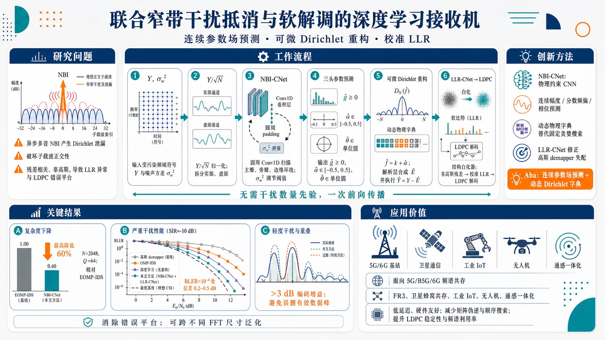
研究问题OFDM 系统中异步多音窄带干扰会通过 Dirichlet 泄漏污染相邻子载波，破坏子载波正交性；传统“压缩感知抵消 + 高斯软解调”流水线在抵消后仍留下结构化、相关、非高斯残差，导致 LLR 极端异常、LDPC 解码错误平台，并且依赖干扰数量先验、迭代延迟高。创新方法提出联合神经接收机：NBI-CNet 用物理约束 CNN 一次前向传播预测每个子载波的干扰幅度、分数频偏和相位，再用可微 Dirichlet 解析重构层合成并抵消 NBI；LLR-CNet 将抵消后的非高斯残差映射为校准软信息，像“结构白化器”一样修正传统高斯 demapper 的失配。Aha 点是把固定字典贪婪搜索变成“连续参数场预测 + 动态物理字典重构”，无需预先知道干扰源数量。工作流程输入受污染频域 OFDM 符号 Y 和噪声方差 σw²；先做 Y/√N 尺度归一化并拆成实部、虚部双通道；圆周 padding 的 Conv1D 扫描频谱泄漏主瓣、旁瓣和边缘环绕；噪声方差拼接到特征后调节检测阈值；三头网络输出非负幅度 ĝ、半子载波范围内分数频偏 α̂、单位圆相位 θ̂；解析层按连续频率 f̂=k+α̂ 用 Dirichlet kernel 重构干扰 Ê；执行 Ỹ=Y−Ê；LLR-CNet 读取抵消后信号与残差 footprint，输出给 LDPC 的校准 LLR。关键结果在 N=2048、Q=64 时，NBI-CNet 相比 EOMP-IDS 最高降低 60% 计算复杂度；严重干扰 SIR=−10 dB 下，在 BLER=10⁻⁴ 目标处仅比最优迭代基线差 0.2–0.5 dB SNR；轻度干扰 SIR=10 dB、Q=12 且频谱重叠严重时，避免贪婪算法误删有效数据信号峰，编码增益超过 3 dB；联合框架消除传统基线的错误平台，并可跨不同 FFT 尺寸泛化。应用价值适用于 5G/B5G/6G 中设备密集、频谱共存严格的 OFDM 场景，如 FR3 中频段、卫星与蜂窝共存、工业 IoT、无人机和通感一体化网络；可在动态、多音、异步窄带干扰下实现低延迟、硬件友好的干扰抵消和可靠软解调，减少矩阵伪逆和顺序搜索，提升 LDPC 解码稳定性与频谱利用率。第一部分：核心概览
该研究提出面向 OFDM 窄带干扰（NBI） 的联合深度学习接收机，将 NBI 参数估计/抵消 与 非高斯残差下的软解调 统一起来。核心贡献在于用 NBI-CNet 单次前向传播替代依赖干扰数先验的迭代压缩感知算法，并用 LLR-CNet 校准残差干扰导致的失配 LLR。该框架在严重干扰下接近最优迭代基线，在轻度干扰且频谱重叠严重时避免传统贪婪算法误删有效数据，代表从“先抵消、再高斯解调”的分离式流程转向“结构化残差感知”的联合神经接收机。
---
第二部分：结构化快速回顾
《Deep Learning for Joint Narrowband Interference Cancellation and Soft Demodulation in OFDM Systems》（None，）
背景
NBI 会破坏 OFDM 子载波正交性，异步窄带信号通过 Dirichlet kernel 在相邻子载波泄漏，导致传统高斯软解调器产生不可靠 LLR。压缩感知方法如 OMP-IDS / EOMP-IDS 能重构干扰，但存在高顺序延迟、复杂矩阵运算、对干扰数估计高度敏感的问题。
方法
提出两个神经模块：NBI-CNet 作为物理约束卷积网络，直接预测每个子载波的 幅度、分数频偏、相位，再通过可微解析重构层合成并抵消 NBI；LLR-CNet 将抵消后的非高斯结构化残差映射为校准软信息，充当 structural whitener。
结果
在 N = 2048、Q = 64 条件下，NBI-CNet 相比 EOMP-IDS 最高降低 60% 计算复杂度。严重干扰 SIR = −10 dB 时，在目标 BLER = 10⁻⁴ 下仅比最优迭代基线差 0.2–0.5 dB SNR。轻度干扰 SIR = 10 dB、Q = 12 且重叠严重时，编码增益超过 3 dB。
讨论
联合框架解决了传统“干扰抵消器 + 高斯 demapper”的流水线失配。即使抵消器性能较好，残留干扰仍呈 结构化、相关、非高斯 分布，传统 LLR 会出现极端异常值并诱发 LDPC 解码错误平台。
局限
系统建模阶段假设目标信号处于 AWGN / 后均衡等效信道，即 Hk = 1；NBI 参数按 OFDM 符号独立变化，属于极端时间波动压力测试。完整实验章节、网络表格参数与训练细节在给定内容中未完整呈现。
结论
联合神经架构通过物理先验、连续频率参数化、圆周卷积 padding 和残差感知软解调，消除传统基线的错误平台，并具备跨 FFT 尺寸与不同干扰密度的泛化潜力，无需预先知道活跃干扰源数量。
---
第三部分：逐章节冷凝解析
Abstract
Pipeline mismatch is the central target
NBI 不仅污染 OFDM 子载波，还会让传统软解调失效；关键问题不是单纯“消除干扰”，而是抵消后残差与高斯解调器之间的统计失配。摘要明确指出：*"Narrowband interference (NBI) severely degrades orthogonal frequency-division multiplexing (OFDM) systems by corrupting subcarriers and rendering classical soft demodulation ineffective."* 传统 compressed-sensing (CS) 抵消会留下 structured, non-Gaussian residuals，导致 *"LLR unreliability, decoder saturation, and severe error floors when employing classical Gaussian demappers."*
NBI-CNet replaces sequential CS with single-shot physical estimation
NBI-CNet 被设计为物理启发的卷积网络，用一次前向传播估计并移除多音干扰，避免传统 EOMP-IDS 的顺序迭代。关键性能数字为：在 N = 2048、Q = 64 条件下，复杂度相比 EOMP-IDS 最高降低 60%，摘要表述为 *"reduces computational complexity by up to 60% (N = 2048, Q = 64) compared to the state-of-the-art EOMP-IDS algorithm."*
LLR-CNet performs residual-aware soft demodulation
LLR-CNet 的角色不是普通 demapper，而是将抵消后的非高斯结构化残差转化为校准软信息。摘要给出精确定义：*"LLR-CNet acts as a structural whitener by mapping non-Gaussian post-mitigation residuals onto well-calibrated soft metrics."* 这意味着网络学习的是残差结构到可靠 LLR 的映射，而非仅预测硬判决符号。
Joint framework eliminates error floors
联合架构的核心实验结论是消除传统流水线的错误平台。摘要写明：*"Simulations demonstrate that this joint framework eliminates the error floors inherent to traditional baselines across dense grids."* 在严重干扰 SIR = −10 dB 下，目标 BLER = 10⁻⁴ 时距离最优迭代基线仅 0.2–0.5 dB SNR：*"operates within a 0.2 to 0.5 dB SNR margin of the optimal iterative baseline at a target block error rate (BLER) of 10−4."*
Signal-peak confusion is avoided under mild but overlapping interference
在 SIR = 10 dB、Q = 12 且频谱重叠严重时，传统贪婪算法会误把有效数据信号峰值当干扰减掉。摘要描述为：*"classical greedy algorithms erroneously subtract valid data components and corrupt the payload."* NBI-CNet 避免这种 signal-peak confusion，获得超过 3 dB 编码增益：*"NBI-CNet avoids signal-peak confusion to deliver a coding gain exceeding 3 dB."*
Scale-invariant design supports FFT-size generalization
架构具备跨 FFT 尺寸泛化能力，不依赖重新训练。摘要直接给出：*"its scale-invariant design enables robust generalization across arbitrary FFT sizes without retraining."* 同时，它绕开了干扰估计错误引发的 2 × 10⁻⁴ error floor：*"circumvents the 2 × 10−4 error floor triggered by interferer-estimation errors."*
---
I Introduction
6G heterogeneous networks shift communication into interference-limited regimes
5G、B5G、6G 的设备密度和异构网络形态提升，使性能瓶颈从噪声受限转为干扰受限。场景包括 URLLC、mMTC、eMBB，以及地面蜂窝、无人机、卫星多波束、通感一体化等多层网络。原文指出：*"the primary performance bottleneck shifts from a noise-limited to an interference-limited regime."* 特别是 FR3 upper mid-band, 7.125–24.25 GHz，具有大带宽但需与卫星和国防业务严格共存：*"6G FR3 upper mid-band (7.125–24.25 GHz), which offers substantial bandwidth but requires strict coexistence with incumbent satellite and defense services."*
NBI is especially damaging to OFDM because it breaks subcarrier orthogonality
窄带干扰 对宽带 OFDM 威胁突出，常来自密集 IoT、传统广播、工业传感器等非协调窄带发射源。关键破坏机制是异步发射不与接收端 OFDM 栅格对齐，造成能量泄漏：*"Because uncoordinated transmissions are typically asynchronous to the receiver’s grid, their power inevitably leaks across adjacent subcarriers."* 因而不是只有一个子载波受损，而是相邻多个子载波软信息质量下降。
Multi-tone and overlapping leakage make strict excision insufficient
多个相近窄带音调会形成重叠频谱混叠，削弱传统抑制算法。原文强调：*"closely spaced tones interact, creating overlapping spectral aliasing that disrupts demodulation and limits classical suppression algorithms."* 因此需要能够识别并抑制相互作用的连续频率干扰，而不能只依赖固定频域删零：*"identify and suppress interacting tones without relying on strict frequency-domain excision."*
Symbol-to-symbol NBI variation motivates adaptive receivers
NBI 常被建模为单帧内静态宽平稳过程，但实际 RF 环境参数会随 OFDM 符号变化，包括活跃音调数、中心频率、分数偏移和瞬时功率。原文指出：*"fundamental interference parameters... fluctuate dynamically from one OFDM symbol to the next."* 因而鲁棒框架不能只靠静态参数估计：*"must continuously adapt to this non-stationary behavior."*
Conventional time-domain and frequency-domain methods trade suppression for data loss
时域处理常在干扰抑制与信号能量保留之间折中；频域 excision 通过能量门限直接置零受污染子载波，导致数据丢失。原文概括为：*"Time-domain techniques often compromise between interference suppression and signal energy preservation."* 以及 *"frequency-domain excision nulls corrupted subcarriers based on energy thresholds, causing unavoidable data loss."*
Compressed sensing mitigates data loss but incurs high latency and model rigidity
OMP 等 CS 方法利用 NBI 的频域稀疏性，重构并相减干扰向量，避免牺牲频谱效率。原文写道：*"compressive sensing (CS) exploits the frequency-domain sparsity of NBI."* 但其代价是高复杂度、矩阵运算、专用资源需求和刚性模型结构：*"require high computational complexity due to heavy matrix computations"*，并且 *"possess a convergence-dependent rigid model structure that cannot cope well with dynamic wireless environments."*
OMP-IDS and EOMP-IDS are strong but model-order dependent baselines
OMP-IDS / EOMP-IDS 被定位为高干扰抵消深度的主要对比基线：*"Advanced variants such as OMP with Iterative Dichotomous Search (OMP-IDS) and Enhanced OMP-IDS (EOMP-IDS) achieve high interference cancellation depth."* 但主要缺陷是迭代复杂度高，并严格依赖准确干扰数估计：*"a major limitation of these methods is their strict dependency on a prior accurate estimation of the interferer count."*
Deep learning has already improved interference localization and soft demodulation
CNN 可处理基带样本并低延迟定位 NBI：*"convolutional neural networks (CNNs) have been actively deployed to process baseband samples."* 去噪自编码器通过潜空间过滤异常分量：*"compressing the corrupted input into a latent-space representation and forcing the decoder network to filter out anomalous components."* 神经接收机也能近似最优 log-MAP LLR，并在相关噪声与多音干扰下捕获局部相关结构：*"1D-CNNs successfully capture local correlation structures to produce highly accurate LLRs without explicitly computing the covariance matrix of the noise."*
The unresolved gap is imperfect cancellation plus mismatched demapping
关键空白是抵消模块与软解调模块之间的失配，而不是单个模块不足。原文明确指出：*"a critical gap remains: the interaction between imperfect NBI cancellation and downstream soft demodulation is fundamentally mismatched."* 抵消后残差具有结构化、非高斯特征，传统高斯 demapper 无法处理：*"Classical soft demappers rely on strict additive white Gaussian noise assumptions."*
LLR outliers can stall LDPC decoding
非理想残差经失配高斯 demapper 处理后会生成极端 LLR 异常值：*"processing this residual structure through a mismatched Gaussian demapper generates extreme LLR outliers."* 在 LDPC 等现代 FEC 中，这些异常值会变成吸收态，阻塞迭代收敛：*"these outliers severely disrupt decoding by acting as absorbing states that stall convergence."* 这解释了为何即使干扰能量被部分抵消，BLER 仍可能出现错误平台。
Four stated contributions define the paper’s novelty
四个贡献分别是：
- NBI-CNet：物理约束 CNN，估计并抵消参数化 NBI，且无需干扰数先验：*"without prior knowledge of the interferer count."*
- LLR-CNet：面向非高斯残差的轻量 LLR 估计器，利用抵消后信号和干扰 footprint：*"acts as a structural whitener to produce well-calibrated soft information."*
- 错误平台消除：联合架构在严重干扰下接近最优基线，在轻度干扰下避免传统贪婪算法破坏 payload：*"eliminates the error floors inherent to conventional pipelines."*
- 跨 FFT 泛化：无需重训练适配不同 FFT 尺寸和干扰密度：*"generalizes seamlessly across arbitrary FFT sizes and interference densities without retraining."*
---
II System and Interference Models
II-A System Model
CP-OFDM signal model is defined over N subcarriers
系统为常规 CP-OFDM，频域符号向量为 X = [X0, X1, …, XN−1]ᵀ ∈ ℂᴺ×¹。IDFT 生成时域信号，归一化因子为 1/√N：*"Let X=[X0,X1,…,XN−1]T∈CN×1 denote the vector of complex-valued data symbols mapped onto the subcarriers during one OFDM symbol interval."* 公式为
s[n] = 1/√N ∑ₖ Xk ej²πkⁿ/N, n = 0,…,N−1。
Cyclic prefix converts multipath convolution into circular convolution
CP 长度为 NCP，前缀复制时域符号尾部。接收端移除 CP 后，若 CP 长度超过最大信道时延扩展，线性卷积转化为循环卷积。原文说明：*"Assuming that the CP length exceeds the maximum channel delay spread, the linear convolution between the transmitted signal and the channel impulse response is converted into a circular convolution."*
Received frequency-domain signal decomposes into data, NBI, and AWGN
第 k 个子载波接收信号为
Yk = HkXk + Ek + Wk。向量形式为
Y = HX + E + W。其中 H ∈ ℂᴺ×ᴺ 为对角信道矩阵，E ∈ ℂᴺ×¹ 为聚合 NBI，W ∼ CN(0, σw²IN) 为复 AWGN。原文给出：*"Yk=HkXk+Ek+Wk"*，并说明 W 的元素是 *"independent and identically distributed (i.i.d.) circularly symmetric complex Gaussian random variables with zero mean and variance σw2."*
Receiver objective includes both cancellation and calibrated soft information
目标不仅是估计并相减 E，还要生成与残余扰动统计匹配的软信息，以支持 LDPC 解码。原文定义为：*"mitigate the impact of NBI prior to data detection, by estimation and cancellation of E, and to subsequently produce well-calibrated soft information that is statistically matched to the residual disturbance."*
II-B Narrowband Interference Model
Each interferer is a complex exponential with continuous frequency
系统假设有 Q 个独立窄带干扰源，每个只占 OFDM 带宽的小部分；典型 NBI 占用不超过总带宽 5%：*"Typically, NBI is characterized by occupying no more than 5% of the total available bandwidth."* 第 q 个干扰在时域建模为
eq[n] = gq ejθq exp(j2πfq n/N)。其中 gq 为幅度，功率 Pq = gq²；fq ∈ ℝ 为连续子载波频率索引；θq ∼ Uniform[−π,π)。
Fractional frequency offset distinguishes synchronous and asynchronous NBI
连续频率分解为 fq = mq + αq，其中 mq ∈ 0,…,N−1，αq ∈ [−1/2, 1/2)。当 αq = 0 时，干扰与 OFDM 栅格同步；当 αq ≠ 0 时为异步 NBI。原文写道：*"When αq=0, the interference is synchronous with the OFDM grid, whereas αq≠0 corresponds to asynchronous NBI."*
Dirichlet kernel governs spectral leakage
DFT 后，第 q 个干扰在第 k 个子载波的频域值由 Dirichlet kernel 控制：
Eq,k = gq/√N · ejθq · ejπ⁽fq−k⁾⁽N−¹⁾/N · DN(fq−k)，其中
DN(fq−k) = sin(π(fq−k)) / sin(π(fq−k)/N)。原文强调：*"This kernel mathematically governs the spectral envelope and leakage behavior of the interference across the subcarrier grid."*
Synchronous NBI collapses to a Kronecker-delta-like subcarrier spike
当 αq = 0 时，Dirichlet kernel 在除 k = mq 外的所有子载波为零，在 k = mq 处极限为 N。原文表述为：*"This concentrates all interference energy exclusively onto the single subcarrier mq, behaving exactly like a Kronecker delta."* 因此同步 NBI 是单 bin 污染，异步 NBI 才形成扩展泄漏尾部。
Asynchronous NBI creates localized but structured leakage
当 αq ≠ 0 时，Dirichlet kernel 连续频率特性导致能量扩散到多个相邻子载波。原文指出：*"the continuous nature of the Dirichlet kernel causes spectral leakage; the interference energy spreads across multiple adjacent subcarriers."* 泄漏仍具有局部主瓣和快速衰减旁瓣，因此聚合干扰 E = ∑q Eq 呈现 sparse or block-sparse structure：*"the aggregate interference vector E inherently exhibits a sparse or block-sparse structure in the frequency domain."*
II-C Problem Formulation and Assumptions
Evaluation isolates NBI estimation, cancellation, and soft demodulation
评估重点放在 NBI 参数估计、抵消、软解调 三个模块本身，避免后续接收机阶段错误影响。原文说明：*"we isolate the performance of the NBI parameter estimation, cancellation, and soft demodulation modules."* 这使结果主要反映干扰处理与 LLR 校准能力，而不是信道估计或同步误差。
AWGN channel assumption approximates post-equalization conditions
目标信号采用 AWGN 信道，即 Hk = 1, ∀k。原文解释为：*"We assume an AWGN channel for the signal of interest (Hk=1,∀k), which mirrors the effective background noise floor of a post-equalization signal in practical deployments."* 这不是宣称真实无线信道无衰落，而是将均衡后的等效噪声作为研究对象。
NBI source fading is absorbed into amplitude and phase
NBI 源经历的衰落或多径不单独建模，而并入接收端幅度 gq 与相位 θq。原文指出：*"Fading or multipath propagation effects experienced by the NBI sources are inherently absorbed into their received amplitude gq and phase θq parameters."* 因而模型仍能表示不同接收强度和相位条件下的干扰。
Symbol-wise independent NBI is a worst-case temporal volatility test
活跃干扰数 Q 及频率、功率、相位等参数从一个 OFDM 符号到下一个符号独立变化。原文将其定义为极端压力测试：*"this symbol-to-symbol variance represents a worst-case scenario designed to stress-test the receiver."* 由于不允许跨符号统计平均，传统 demapper 难以在 14-symbol slot 等较长窗口内跟踪残差统计：*"restricting parameter persistence to a single isolated symbol prevents multi-symbol statistical averaging."*
---
III Classic NBI Cancellation via Compressed Sensing
CS baseline exploits sparse interference without nulling data
CS 方法通过稀疏恢复重构干扰，而非像频域 excision 那样直接置零有效数据子载波。原文定位为：*"To mitigate NBI without sacrificing spectral efficiency... CS algorithms leverage the inherent structural sparsity of the interference."* 在频域中，NBI 表现为少数高能峰，因此可表示为冗余字典原子的稀疏线性组合：*"NBI manifests as a few high-energy peaks."*
III-A Sparse Representation and Dictionary Construction
NBI is represented as E = Φd
频域干扰向量 E ∈ ℂᴺ×¹ 表示为
E = Φd，其中 Φ ∈ ℂᴺ×ᴹ 为字典，d ∈ ℂᴹ×¹ 为稀疏系数向量。原文写道：*"The frequency-domain NBI vector E∈CN×1 can be modeled as a sparse linear combination of atoms from a redundant sensing matrix."*
Dictionary atoms are physical Dirichlet leakage signatures
字典 Φ = [φ1, φ2, …, φM]，每个原子代表某个候选连续频率 fi 上单音干扰的频域泄漏轮廓。原文说明：*"Each atom φi represents the exact frequency-domain leakage profile of a hypothetical single-tone interferer at subcarrier frequency index fi."* 第 k 个元素为
[φi]k = 1/√N · ejπ⁽fⁱ−k⁾⁽N−¹⁾/N · DN(fi−k)，与物理模型中的 Dirichlet kernel 完全对应。
Oversampling addresses asynchronous grid mismatch
由于异步 NBI 的连续频率 fq 不一定落在 DFT 栅格上，字典需要过采样，满足 M ≫ N。原文写道：*"the dictionary is oversampled such that M≫N."* 过完备栅格用于降低真实连续频率和离散候选原子之间的 mismatch：*"minimize grid-mismatch errors."*
Sparse coefficients absorb amplitude and phase
如果物理干扰源 q 对齐字典频率 fi，对应系数非零，且
di = gq ejθq。原文说明：*"its respective coefficient becomes non-zero and maps to di=gqejθq, thereby absorbing the physical amplitude and phase of the source."* 干扰重构为
Ê = ∑ᵢ di φi，最终抵消信号为
Ỹ = Y − Ê。
III-B The Orthogonal Matching Pursuit Algorithm and Extensions
OMP greedily selects the atom most correlated with the residual
给定接收信号 Y 和干扰数估计 Q̂，OMP 在每次迭代中选择与当前残差 R(q−1) 绝对相关最大的字典原子：
i(q) = arg maxᵢ |⟨R(q−1), φi⟩|。原文描述为：*"identifies the dictionary atom φi exhibiting the maximum absolute correlation with the current residual."*
Least-squares projection enforces orthogonality but adds cost
选中的支撑集为 S(q) = i(1), …, i(q)，系数通过最小二乘更新：
d̂S(q) = (ΦS(q)ᴴ ΦS(q))⁻¹ ΦS(q)ᴴ Y。原文指出这是为了保证正交性：*"To guarantee orthogonality, the coefficients... are updated via least-squares projection."* 但矩阵伪逆维度随迭代增长，引入非线性开销。
IDS refines coarse OMP estimates into continuous frequencies
标准 OMP 存在离散栅格 mismatch，IDS 通过局部区间二分搜索连续相关函数
ρ(f) = |⟨R, φ(f)⟩|。原文写道：*"Treating the continuous correlation function ρ(f)=|⟨R,φ(f)⟩| as unimodal, IDS iteratively halves a localized search interval."* 之后利用最终相关值插值得到连续频率，避免超细网格计算。
EOMP decouples overlapping multi-tone leakage
多音近邻干扰会互相影响估计，EOMP 对每个干扰源构造去除其他估计后的残差：
Rref,q = Y − ∑j≠q φi(j) d̂i(j)。原文表述为：*"EOMP isolates each interferer... by subtracting all other active estimates from the received observation."* 然后对该解耦残差执行 IDS，以降低多干扰偏置：*"to eliminate multi-interferer bias."*
Sequential greedy search blocks parallel execution
OMP 的搜索步骤必须按 Q 次顺序迭代执行，无法自然并行。原文指出：*"the greedy search in (15) must repeat sequentially across Q discrete steps, blocking parallel hardware execution."* 这使延迟随干扰数增加，特别不适合低时延场景。
Pseudo-inversion and refinement loops scale poorly
每次迭代都需要 (ΦS(q)ᴴΦS(q))⁻¹，且 EOMP-IDS 在外层 refinement loop 中反复执行减法和原子生成。原文描述为：*"demands a high-precision matrix pseudo-inversion... generating a heavy, non-linear processing overhead."* 以及 *"scales poorly with both the interferer count Q and the OFDM grid size N."*
Model-order errors destabilize CS pipelines
CS 依赖先验干扰数 Q̂。低估会提前停止并留下高功率干扰；高估会把背景噪声投影进支撑集，破坏有效数据。原文非常明确：*"underestimating Q̂ terminates processing prematurely and leaves high-power interferers unmitigated, while overestimating forces... project background noise onto the active support, actively destroying valid data subcarriers."* 这正是后续 NBI-CNet “无需干扰数先验”的动机。
---
IV Neural Network-based NBI Cancellation
NBI-CNet is a reformulation rather than classical CS with learned parameters
神经框架受传统稀疏恢复的物理重构逻辑启发，但不是 CS 理论的直接扩展。原文指出：*"its underlying architecture constitutes a fundamental mathematical reformulation that departs from conventional CS theory."* 它不进行迭代栅格搜索和在线原子 refinement，而是预测连续参数状态并动态合成本地干扰轮廓：*"predict continuous parametric states, dynamically synthesizing the localized interference profile."*
The architecture is physics-informed rather than black-box denoising
区别于直接从污染观测映射到干净信号的黑箱 DL，NBI-CNet 由参数卷积估计器和可微解析重构层组成。原文强调：*"our architecture is designed as a parametric convolutional estimator coupled with a differentiable analytical reconstruction layer."* 网络一次扫描全频谱，同时估计多音 NBI 的 gain、fractional frequency offset、phase：*"extracts the continuous physical properties of the multitone NBI (gain, fractional frequency offset, and phase) for all subcarriers simultaneously."*
IV-A NBI-CNet Architecture
Inputs are corrupted frequency-domain observation and noise variance
NBI-CNet 输入包括 Y ∈ ℂᴺ×¹ 和标量热噪声方差 σw²。原文说明：*"The network accepts two inputs: the noisy, NBI-corrupted frequency-domain observation Y∈CN×1, and the scalar thermal noise variance σw2."* 其目标是从频域观测中推断复杂干扰向量 E 的物理特征：*"deduce the physical characteristics of the complex interference vector E."*
Power-invariant normalization supports scale-invariance across FFT sizes
输入信号归一化为
Yin = Y / √N，以保证跨任意 FFT 尺寸 N 的尺度不变性和梯度稳定性。原文写道：*"To ensure scale-invariance across arbitrary FFT sizes (N) and maintain gradient stability, the complex input signal is normalized to a power-invariant representation."*
Complex input is split into real and imaginary channels
由于网络为实值架构，复数 Yin 被拆分为实部和虚部，形成
χ(0) ∈ ℝᴺײ = [ReYin, ImYin]。原文给出：*"To process the complex signal within a real-valued neural network architecture, Yin is decoupled into its real and imaginary components."*
Noise variance bypasses convolution and conditions dense layers
标量 σw² 不进入卷积特征提取，而是在后续状态条件层中拼接。原文解释为：*"the raw scalar noise variance σw2, which is physically independent of the FFT size, bypasses the feature extraction stage."* 这种设计让卷积专注于频谱形状，噪声水平作为检测阈值调节变量。
Feature extraction uses circularly padded Conv1D layers
为捕获 NBI 泄漏尾部，网络使用 L 层一维卷积。第 l 层输出为
χ(l) = ReLU(Conv1D(CircPad(χ(l−1))))。原文说明：*"To capture the spectral leakage tails, we employ a series of L 1D convolutional (Conv1D) layers."* 圆周 padding 用于处理频带边缘 wrap-around：*"To mitigate spectral wrap-around effects at the band edges, circular padding is applied."*
Noise conditioning adapts sparsity and detection thresholds
最终特征图 χ(L) 与 σw² 沿通道维拼接，形成
χcond ∈ ℝᴺ×(FL+1)。原文指出：*"This conditions the dense layers on the current signal-to-noise ratio (SNR), allowing the network to dynamically adjust its sparsity and detection thresholds."* 因此同一网络可在不同 SNR 下调节“什么算干扰”。
Multi-head output enforces physical validity
条件状态被分为三个逐点 dense 分支，分别预测 幅度、分数频偏、相位。原文写道：*"split into three independent branches of pointwise dense layers, each dedicated to predicting a specific physical parameter."* 输出通过专门激活函数限制在物理有效范围内：*"specialized activation functions are applied... to ensure the network outputs remain physically valid."*
Gain head enforces non-negative amplitudes
幅度头输出
ĝ = [ĝ0,…,ĝN−1]ᵀ ∈ ℝᴺ，使用 ReLU 保证非负。原文说明：*"using a ReLU activation to enforce non-negativity."* 同时，未被占用的子载波可自然趋近零，为后续结构稀疏提供隐式机制。
Frequency-offset head constrains α to half-subcarrier range
频偏头输出
α̂ = [α̂0,…,α̂N−1]ᵀ ∈ ℝᴺ，激活函数为 0.5 tanh(·)，范围严格限制在 [−0.5, 0.5] 子载波间隔。原文写道：*"strictly bounding the offsets to the physical limits of [−0.5,0.5] subcarrier spacings."*
Phase head avoids wrap-around discontinuities using unit-circle representation
相位不直接输出角度，而输出二维笛卡尔张量 χθ ∈ ℝᴺײ，经 L2 normalization 投影到单位圆，表示 [cos(θ̂k), sin(θ̂k)]ᵀ。原文说明：*"To avoid gradient discontinuities caused by phase wrap-around at ±π, the network outputs a 2D Cartesian tensor."* 这避免了角度在 π / −π 处突变导致训练不稳定。
IV-B Interference Reconstruction
A parameter-free differentiable layer maps predictions to NBI waveform
NBI-CNet 使用无参数、全可微重构层，将预测参数转化为干扰波形。原文写道：*"NBI-CNet implements a parameter-free, fully differentiable reconstruction layer."* 该层可在时域或频域等价实现：*"enables equivalent formulations in either the time or frequency domain."*
Predicted fractional offset defines continuous interference frequency
对每个子载波 k，连续频率定义为
f̂k = k + α̂k。原文指出：*"the network’s predicted fractional frequency offset α̂k is used to define the continuous interference frequency as f̂k=k+α̂k."* 这使网络不局限于离散 DFT bin，而能表示异步 NBI 的连续频率。
ReLU gain implicitly enforces sparse active interferers
幅度头使用 ReLU，因此未占用子载波的 ĝk 可自然为零，无需显式 active-set 阈值。原文描述为：*"unoccupied subcarriers inherently evaluate to zero, natively enforcing structural sparsity without an explicit active-set threshold."* 这正是绕开 Q̂ 先验的关键机制。
Time-domain reconstruction sums predicted complex exponentials
时域估计干扰为
ê[n] = ∑ₖ ĝk ejθ̂k exp(j2π f̂k n/N)，n = 0,…,N−1。原文给出：*"the estimated time-domain NBI sequence ê[n] is synthesized as a linear superposition over all subcarriers."* 这与物理 NBI 模型中的多音复指数一致。
Frequency-domain reconstruction uses the Dirichlet kernel analytically
频域第 m 个 bin 的估计为
Êm = ∑ₖ ĝk/√N · ejθ̂k · ejπ⁽f̂k−m⁾⁽N−¹⁾/N · DN(f̂k−m)。原文说明：*"the frequency-domain NBI vector Ê can be reconstructed directly in closed form."* 该表达式直接复用系统模型中的 Dirichlet kernel，保证泄漏形状物理一致。
Dynamic dictionary links NBI-CNet to CS functionality
将 d̂k = ĝk ejθ̂k 作为稀疏复系数，将预测频偏生成的连续原子组成动态字典 Φ̂ ∈ ℂᴺ×ᴺ，则
Ê = Φ̂ d̂。原文说明：*"To explicitly demonstrate the functional equivalence between this neural reconstruction and the classical CS formulation... (23) can be recast as a dynamic matrix-vector product."* 与传统固定过完备字典不同，这里的字典由网络预测的连续频率动态生成。
Single-shot cancellation parallels OMP’s final residual without iteration
最终抵消为
Ỹ = Y − Ê。原文将其解释为 OMP-IDS 终端残差的并行等价形式：*"this single-shot cancellation represents the highly parallelized equivalent of the terminal classical residual R(Q̂) of OMP-IDS."* 差异在于无需 Q̂ 次顺序搜索、无需伪逆、无需迭代 refinement。
IV-C Circular Padding and Spectral Wrap-Around
OFDM frequency-domain circularity requires circular padding
异步 NBI 的连续频率 α ≠ 0 会在相邻子载波泄漏；当干扰靠近 DC 或频带边缘时，离散频谱自然发生环绕。原文指出：*"When the interference frequency m+α is located near the DC or band edges, the interference naturally wraps around the discrete spectrum boundaries."* 因此普通零 padding 会破坏 OFDM 频域圆周连续性：*"Standard zero-padding in convolutional layers destroys this physical continuity."*
Circular padding preserves edge leakage continuity
每个卷积层在卷积前执行圆周 padding。对于核大小 Kl，两侧 padding 大小为
P = (Kl − 1)/2。输入 χ(l) ∈ ℝᴺ×Fl 被扩展为
χpad(l) ∈ ℝ⁽N+2P)×Fl。原文写道：*"To preserve the inherent circularity of the OFDM frequency domain, each 1D convolutional layer l applies a circular padding operation prior to the convolution."*
Modulo indexing implements physical wrap-around
padding 元素按
[χpad(l)]m = χ(l)₍ₘ−P₎ ₘₒd N, m = 0,…,N+2P−1
构造。原文说明：*"constructed using modulo indexing."* 实现上等价于把最后 P 个子载波接到序列开头，把最前 P 个子载波接到序列末尾：*"prepends the last P subcarriers to the beginning of the sequence and appends the first P subcarriers to the end."*
Filters can observe leakage spanning band edges
圆周 padding 使跨越频带边缘的卷积核仍能看到连续泄漏形状，而不是误以为边缘外全零。原文总结为：*"ensuring that convolutional filters spanning the band edges correctly observe the wrapped spectral leakage."* 该设计是 NBI-CNet 具备 FFT 尺寸泛化和物理一致性的关键细节之一。
---
第四部分：深度理解与语言支持
1. 术语解析
#### Narrowband interference (NBI)
NBI 指占用带宽远小于目标宽带系统的干扰，文中给出典型占用“不超过总带宽 5%”。它不同于宽带噪声：宽带噪声通常遍布所有子载波且近似高斯，而 NBI 在频域表现为少数局部高能峰及其泄漏尾部。
#### Fractional frequency offset
Fractional frequency offset 是干扰连续频率相对于最近 OFDM 子载波栅格的偏移 αq ∈ [−1/2, 1/2)。其微妙之处在于：即使干扰源看起来“窄带”，只要 αq ≠ 0，其 DFT 结果就不会只落在一个 bin，而会通过 Dirichlet kernel 泄漏到多个子载波。
#### Dirichlet kernel
Dirichlet kernel 是有限长度复指数经过 DFT 后的精确频域形状。它决定异步 NBI 的主瓣、旁瓣和边缘环绕。这里不能简单理解为“sinc 近似”；它是离散有限长度 OFDM 符号下的周期 sinc，天然具有圆周频谱结构。
#### Structural whitener
Structural whitener 不是传统意义上的线性白化滤波器，而是指 LLR-CNet 学习将结构化、相关、非高斯的残余干扰映射成对 LDPC 解码更可靠、更校准的软信息。重点在“软度量统计校准”，而非必然让样本协方差矩阵变成单位阵。
#### Error floor
Error floor 指 SNR 继续提高时，BLER/BER 不再按预期下降，而停留在某个水平。文中错误平台来自干扰估计错误、LLR 异常值和 LDPC 吸收态，而不是热噪声不足。因此单纯提高 SNR 不能解决。
2. 疑难查证
#### 为什么抵消后的残差会让高斯 demapper 失效？
传统 soft demapper 通常假设接收符号为
y = x + w, w ∼ CN(0, σ²)。在这个假设下，LLR 大小代表某个比特为 0 或 1 的置信度。
NBI 抵消后，残差不是普通白噪声，而可能包含以下结构：
- 局部频域相关：相邻子载波共同受同一个 Dirichlet 泄漏尾部影响；
- 非高斯尖峰：某些 bin 残留大幅度误差；
- 相位结构：残差方向与原始干扰相位有关；
- 模型阶数错误：少估干扰时残留强峰，多估干扰时误删数据峰。
高斯 demapper 会把这些残差错误解释为“非常可靠的符号偏移”，从而输出极端 LLR。LDPC 解码器接收到这些极端但错误的 LLR 后，会在迭代中强化错误信念，形成 absorbing state。于是问题从“前端残差”扩散为“译码器收敛失败”。
#### 为什么无需预先知道干扰数 Q？
传统 OMP 必须运行 Q̂ 次，每次选一个原子。若 Q̂ 错，流程必然错：少跑会漏干扰，多跑会把噪声或数据信号当干扰。
NBI-CNet 不显式选择 Q̂ 个原子，而是对每个子载波位置输出一个潜在干扰参数三元组 (ĝk, α̂k, θ̂k)。真正没有干扰的位置，ĝk 可通过 ReLU 输出接近零。活跃干扰数由非零幅度模式隐式决定。这相当于把“离散选择几个干扰源”的问题转化为“连续稀疏幅度场估计”。
#### 为什么圆周 padding 是物理必要而非工程小技巧？
OFDM 的频域是 DFT 栅格，索引 0 和 N−1 在周期意义上相邻。若一个异步干扰靠近边缘，它的 Dirichlet 泄漏会跨越边界：一部分出现在高频末端，一部分出现在低频开头。
普通 CNN 的零 padding 会把边界外视为零，相当于告诉网络“频谱在边缘断开”。这与 DFT 物理结构矛盾。圆周 padding 则让卷积核在边缘处看到真实相邻子载波，从而正确识别跨边界泄漏模式。
---
第五部分：创新评估与关联
1. 创新性判断
#### 从单模块干扰抵消转向联合残差感知软解调
近年相关工作多集中在两类：一类用 CS 或 DL 抵消 NBI，另一类用神经网络估计 LLR 或处理相关噪声。该研究的新颖性在于明确指出两者之间存在 pipeline mismatch：即使抵消器看似有效，残差统计仍会破坏高斯 soft demapper。提出 NBI-CNet + LLR-CNet 的联合结构，直接面向“抵消后残差如何进入 FEC”这一链路级问题。
#### 物理约束连续参数网络替代离散贪婪搜索
NBI-CNet 不把 CNN 当作黑箱去噪器，而是预测 gain、fractional frequency offset、phase，再通过 Dirichlet kernel 解析重构干扰。这比普通 denoising autoencoder 更可解释，也比 OMP-IDS 更并行。核心创新是把传统 CS 中“固定过完备字典 + 稀疏选择”改造成“神经预测连续参数 + 动态解析字典”。
#### 无需干扰数先验解决 CS 模型阶数脆弱性
OMP、OMP-IDS、EOMP-IDS 的性能依赖 Q̂。过去方法常把干扰数估计作为前置步骤，但该前置步骤一旦错误会导致漏抵消或误删数据。NBI-CNet 用非负幅度场隐式表达活跃干扰数量，从机制上规避 Q̂ 依赖，解决了 CS 基线中长期存在的模型阶数敏感问题。
#### 针对轻度干扰下的 signal-peak confusion 给出反直觉增益
传统直觉认为严重干扰最难；该研究强调轻度干扰且重叠时，贪婪算法反而可能误把有效 payload 峰值当干扰减掉。摘要中 SIR = 10 dB、Q = 12 场景下超过 3 dB 编码增益，说明创新点不只是“更强抑制强干扰”，还包括“避免过度抵消损伤有效数据”。
#### 跨 FFT 尺寸泛化设计具有部署意义
通过 Y/√N 归一化、圆周卷积、逐点参数头和物理解析层，模型被设计为与 FFT 尺寸弱绑定。相较需要针对固定输入维度训练的常规神经接收机，这种 scale-invariant design 更接近实际 OFDM 系统中不同 numerology、不同 FFT 配置共存的部署需求。
#### 对过去 2–5 年工作的推进点
相对近期 CNN 干扰检测、autoencoder 去噪、LSTM LLR weighting、神经 log-MAP LLR 估计等工作，该研究同时推进三点：
- 物理显式性更强：直接嵌入 Dirichlet 泄漏模型；
- 链路目标更完整：从 NBI cancellation 延伸到 LDPC 前的 LLR 校准；
- 硬件友好性更明确：用单次前向传播替代随 Q、N 增长的迭代搜索与伪逆。
最终解决的问题是：在动态、多音、异步 NBI 环境下，如何同时避免 CS 的顺序延迟和模型阶数敏感性，并避免传统高斯 demapper 对非高斯残差产生灾难性软信息失配。
-
20
📊 含图深析
📄 摘要：面向过冷水高密度/低密度液态转变问题，比较表征局域水环境的结构描述符，包括四面体有序度、局域密度以及第一与第二配位壳层分离等。机器学习用于定量评估这些描述符对微观氢键网络和异常热力学行为的判别能力。
💡 亮点：工作用机器学习横向评估过冷水常用局域结构描述符，而非孤立提出指标。结果有助于澄清哪些氢键网络特征最能表征水的低温异常。
📖 展开分析 + 配图
研究问题过冷水中已有 16 种局域结构描述符定义、量纲和物理尺度各不相同，难以判断谁最能捕捉随温度变化的 HDL-like/LDL-like 结构交叉；核心问题是：哪类描述符最敏感地反映第一/第二配位壳层分离、氢键网络重排和常压 Widom line 附近的结构变化。创新方法将“描述符好坏”转化为可量化的机器学习代理任务：用单个 snapshot 中 1000 个水分子的某一描述符值作为 FCNN 输入，执行两温度二分类；用 ROC-AUC 对 16 个描述符统一排名，再用 LIME 标出哪些分子推动高温 HDL-like 或低温 LDL-like 预测。Aha 点是：不直接预设 HDL/LDL 标签，而用温度可分性衡量结构敏感性，并把黑箱分类结果还原为壳层分离与氢键网络的物理图像。工作流程TIP4P/2005 水模型 MD 模拟 200–300 K 过冷水，分别在等容 1 g/cm³ 与等压 1 bar 条件下采样；对每个 snapshot 的 1000 个水分子逐一计算 16 种局域结构描述符；每次选取一个描述符构成 1000×1 输入矩阵送入 FCNN，输出两个温度类别；用 ROC-AUC 比较分类能力；最后对最佳描述符 LSI、ζ、NTC_HB、N_HB 进行 LIME 分析，定位大/小描述符值对低温或高温预测的贡献方向。关键结果LSI 表现最强，平均 AUC=0.998，几乎完美区分温度诱导结构变化；ζ 与 NTC_HB 均为 0.970，N_HB 为 0.957，组成最高性能组。LSI/ζ 证明第一与第二配位壳层清晰分离是低温 LDL-like 结构的关键标志；NTC_HB/N_HB 证明氢键网络连通性提供独立且互补的信息。等压条件整体 AUC 高于等容条件，说明密度涨落增强结构可分性。LIME 显示大 LSI/ζ 和大 NTC_HB 推动低温 LDL-like 预测，小 LSI/ζ 推动高温 HDL-like 预测。应用价值该研究提供了一个可复用的“结构描述符筛选仪表盘”：可为过冷水、液-液相变、Widom line 结构交叉和氢键液体研究选择最可靠的局域结构指标。结论提示未来描述符应同时整合壳层几何有序性与氢键网络拓扑连通性，并可扩展到 GNN、SOAP、ACSF 等高阶结构表示，用于跨水模型比较、机器学习势解释和复杂液体微观结构识别。第一部分：核心概览 (Overview)
通过 FCNN 温度二分类 + AUC 排名 + LIME 可解释性分析，16 种过冷水局域结构描述符被置于同一评价框架下比较。核心贡献在于把“描述符是否能捕捉 HDL-like/LDL-like 结构随温度变化的敏感性”转化为可量化的机器学习任务。LSI、ζ、NTC_HB、N_HB 表现最佳，其中 LSI 平均 AUC=0.998，几乎完美区分温度依赖结构变化。结论突出两类互补信息：第一/第二配位壳层分离的几何有序性与氢键网络连通性共同支配常压过冷水结构交叉。
---
第二部分：结构化快速回顾
《Machine learning evaluation of structural descriptors for supercooled water》（None，）
背景
过冷水异常性质通常与 HDL/LDL 两态竞争、Widom line 附近结构交叉、氢键网络重排相关。已有结构描述符众多，包括 qₜₑₜ、ζ、LSI、NTC、Ψ 等，但定义、量纲、尺度不同，缺乏统一比较。
方法
使用 TIP4P/2005 水模型 MD 模拟，覆盖 200–300 K，包含 等容 1 g/cm³ 与 等压 1 bar 条件。对每个分子计算 16 个结构描述符。构建 全连接神经网络 FCNN，输入为单个 snapshot 中 N=1000 个分子的描述符值，输出为两温度类别；性能用 ROC-AUC 评价。再用 LIME 分析每个分子对分类结果的贡献。
结果
描述符平均 AUC 排名显示：LSI 0.998、ζ 0.970、NTC_HB 0.970、N_HB 0.957 最优；NTC 0.610、Q6 0.563 最弱。等压条件整体优于等容条件，低温区提升尤其明显。LSI 在等容条件 AUC ≥ 0.991，等压条件 AUC ≥ 0.963。
讨论
高性能描述符分别捕捉两类关键结构信息：LSI/ζ 捕捉第一与第二配位壳层分离；NTC_HB/N_HB 捕捉氢键网络连通性。两类描述符相关性较弱，说明信息互补。LIME 显示大 LSI/ζ 值推动低温 LDL-like 预测，小值推动高温 HDL-like 预测。
局限
FCNN 以整个 snapshot 为输入，不能直接识别单个分子的 HDL/LDL 异质结构或描述符分布的双峰性。部分描述符如 Q4、Q6、C.N. 对 cutoff r_cut 敏感。N_HB 为离散整数且范围窄，LIME 解释能力受限。结果可能依赖机器学习模型，逻辑回归下 NTC_HB/N_HB 性能明显下降。
结论
LSI 与 ζ 是捕捉过冷水局域结构温度变化最稳健的描述符；与 氢键网络描述符 联合使用，可更全面刻画 HDL-like/LDL-like 结构交叉。未来方向包括发展整合多尺度信息的新描述符、跨水模型迁移性验证，以及使用 GNN、ACSF、SOAP 等高阶结构表示。
---
第三部分：逐章节冷凝解析 (Section-by-Section Condensing)
Abstract
Anomalous water behavior is linked to LLPT
过冷水异常行为被置于 高密度液体 HDL 与 低密度液体 LDL 之间的 液-液相变 LLPT 框架中。微观层面，决定这些异常性质的是 四面体氢键网络。原文明确指出：*"The anomalous behavior of liquid water is widely associated with a liquid-liquid phase transition between high- and low-density states in the supercooled regime."* 同时强调结构起源：*"At the microscopic level, tetrahedral hydrogen-bond networks govern these properties"*。
Sixteen descriptors are benchmarked by temperature classification
已有结构描述符分别量化 四面体有序性、局域密度、第一/第二配位壳层分离等信息，但长期缺少系统比较。研究对象为 16 个既有描述符，评价方式为 神经网络温度分类。核心方法被概括为：*"Here we evaluate 16 previously proposed descriptors using a neural-network-based temperature classification framework"*，目标是客观衡量描述符区分过冷水温度依赖结构变化的能力，即 *"an objective assessment of their ability to distinguish temperature-dependent structural changes in supercooled water."*
XAI links model predictions to physical structure
除分类性能外，可解释人工智能 XAI 被用于识别驱动预测的结构特征。摘要直接给出方法意义：*"We further apply an explainable artificial intelligence method that identifies the structural features responsible for the model predictions."* 该框架不仅排序描述符，还揭示不同描述符编码局域结构信息的方式：*"This approach reveals how different descriptors encode local structural information and establishes a data-driven framework for benchmarking structural descriptors in liquid water."*
---
Introduction
Water anomalies intensify in the supercooled regime
液态水具有密度最大值等反常性质，其物理来源是 氢键网络局域结构重排。温度和压力变化会触发局域分子结构变化，4 ℃ 附近的密度最大值是典型例子。原文表述为：*"Liquid water exhibits significant anomalies, including a density maximum near 4 °C, in response to variations in pressure and temperature"*，并将其归因于 *"rearrangements in the local molecular structure associated with the H-bond network."* 在过冷区，异常更加显著：*"When liquid water enters the supercooled regime, its anomalous properties become extensively noticeable."*
Compressibility and heat capacity suggest divergent behavior
过冷水冷却时，等温压缩率与比热急剧上升，被视为趋向发散行为的信号。关键证据为：*"both isothermal compressibility and specific heat sharply increase with cooling, indicative of divergent behavior."* 这些热力学异常构成 LLPT 假说的重要经验基础。
LLPT hypothesis provides a unifying framework
LLPT 假说认为水存在两种液态：LDL 与 HDL。原文给出定义：*"water exists in two liquid states: low-density liquid (LDL) and a high-density liquid (HDL)."* 低密度/高密度非晶冰之间的转变被视为更深过冷条件下液-液转变的冻结形式，并终止于 液-液临界点 LLCP：*"terminating at a liquid–liquid critical point (LLCP)."* 该假说被评价为解释过冷水异常的综合框架：*"The LLPT hypothesis has become an important framework that provides a consistent and comprehensive explanation for a wide range of anomalous behaviors observed in supercooled water."*
Two-state models motivate local structural descriptors
基于 HDL/LDL 竞争的两态模型广泛用于 MD 模拟解释过冷水结构转变。原文指出：*"The two-state model describing the competition between HDL and LDL structures is extensively used as an effective framework for elucidating the structural transformations in supercooled water based on molecular dynamics (MD) simulations."* 为了定量考察该框架，各类 标量结构描述符被提出，用于表征单个水分子的局域环境：*"scalar structural descriptors have been diversely introduced to characterize the local environment of individual water molecules."*
Representative descriptors encode different structural aspects
不同描述符聚焦不同物理信息。qₜₑₜ 量化中心分子四个最近邻之间的四面体角有序性：*"qₜₑₜ, which quantifies the tetrahedral ordering among the four nearest neighbors of a water molecule."* ζ 测量氢键网络有序程度：*"ζ, which measures the degree of order within H-bond networks."* LSI 通过局域结构涨落区分 HDL-like 与 LDL-like 环境：*"Local Structure Index (LSI) serves as another structural descriptor that distinguishes HDL-like and LDL-like environments based on local structural fluctuations."* NTC 则扩展到中长程结构：*"Node Total Communicability (NTC) has been proposed as a graph-theoretical structural descriptor... not only local arrangements within the first coordination shell, but also medium- and long-range structural orders."*
Ambient-pressure structural crossover is distinct from LLCP criticality
除 LLCP 附近临界密度涨落外，常压附近也存在 structural crossover。其特征是 HDL-like 与 LDL-like 比例沿 Widom line 连续变化，而非真正相变。原文强调：*"this crossover does not correspond to a distinct phase transition"*，但它标志着密度、比热等异常最明显的区域：*"it represents the conditions under which anomalies in density, specific heat, and related properties become most evident."* 因此，常压下结构交叉的定量评价具有核心意义：*"quantitative evaluation of the structural crossover under ambient pressure is essential for elucidating the universal structural anomalies of liquid water."*
Direct descriptor comparison is difficult without a unified framework
已有描述符在定义、量纲与尺度上差异巨大，难以直接比较。原文明确指出：*"because these descriptors qualitatively differ in their definitions and quantitatively vary in their dimensions and scales, a direct comparison is not straightforward."* 因此需要一致的比较框架：*"a consistent framework for estimating and comparing their performances of these descriptors is required."*
Simulation conditions avoid the LLCP while targeting the Widom-line crossover
模拟使用 TIP4P/2005 水模型，覆盖 200–300 K，包含 等容 1 g/cm³ 与 等压 1 bar。这些条件远离 TIP4P/2005 的 LLCP，LLCP 估计为 T_C≈182 K、P_C≈170 MPa、ρ_C≈1.017 g/cm³。原文给出：*"the temperature, pressure, and mass density at the LLCP of TIP4P/2005 water were estimated as (T_C, P_C, ρ_C) ≈ (182 K, 170 MPa, 1.017 g/cm³)"*。常压 Widom line 附近结构交叉约在 230 K：*"the crossover between HDL-like and LDL-like states occurs near the Widom line at approximately 230 K under 1 bar."*
Temperature classification is used as a proxy for structural sensitivity
核心任务不是直接给每个分子贴 HDL/LDL 标签，而是用 温度分类衡量描述符对温度依赖结构变化的敏感度。原文关键句为：*"The objective of this study is not merely to identify HDL-like and LDL-like structural states, but rather to quantitatively evaluate, within a unified framework, the extent to which different structural descriptors are sensitive to temperature-dependent structural changes."* 温度分类被定义为受控代理任务：*"temperature classification is used as a controlled proxy task for measuring the sensitivity of structural descriptors to such changes."*
FCNN architecture maps molecular descriptor arrays to temperature labels
图 1 中 FCNN 输入为单个 snapshot 中每个分子的描述符值，N=1000，即 1000×1 矩阵。原文说明：*"Number of input nodes corresponds to the number of molecules in the MD snapshots (N = 1000). Therefore, the input is a 1000 × 1 matrix."* 网络结构包括一个与输入节点数相同的隐藏层、一个单节点隐藏层以及 sigmoid 函数：*"Network consists of a single hidden layer with the same number of nodes as that of the input layer, followed by a hidden layer with a single node, and employs a sigmoid function."* 输出为二元温度标签：*"Output layer produced a binary value (0 or 1, corresponding to T1 or T2, respectively)."*
AUC provides scale-independent comparison of descriptors
分类性能由 ROC-AUC 衡量。AUC 接近 1 表示良好区分，接近 0.5 表示随机分类。原文定义为：*"An AUC value close to 1 indicates that the model can accurately distinguish between the two classes, whereas an AUC value close to 0.5 corresponds to random classification."* 这种指标适合比较不同量纲和尺度的描述符。
LIME is used to inspect physical consistency of the neural network
由于神经网络具有黑箱性，使用 LIME 解释模型是否依据物理合理的结构特征分类。原文说明：*"to enhance the interpretability of neural networks, which are inherently black-box predictive models, we employed explainable artificial intelligence (XAI)."* 具体方法为：*"we applied Local Interpretable Model-Agnostic Explanations (LIME), a post-hoc interpretability method."* 目标是检验模型决策是否与物理结构变化一致：*"to examine whether the decision-making of the model is consistent with physically meaningful structural changes."*
---
Results and Discussion
Correlation coefficients among structural descriptors
Sixteen descriptors cover geometry, density, energy, and topology
16 个结构描述符从 MD 数据中计算，覆盖 四面体性、局域密度、相互作用能、氢键网络拓扑性质。原文概括为：*"Structural descriptors quantify the degree of local order around each molecule; for liquid water, they are often defined in terms of tetrahedrality, local density, interaction energy, and topological properties of H-bond networks."* 描述符定义放在 Methods，温度依赖分布见 Supplementary Figs. 3–4：*"The definition of each descriptor is provided in the Methods section, and corresponding temperature-dependent distributions are shown in Supplementary Figs. 3 and 4."*
Descriptor similarity is evaluated by absolute Pearson correlation
描述符之间相似性用 Pearson 积矩相关系数绝对值 |r| 评价。公式对应：*"the correlation coefficient was evaluated in the absolute form of the Pearson product-moment correlation coefficient."* 对每个温度计算 |r|，再对 1000 或 500 个 configurations 平均，最后跨 200–300 K 所有温度平均：*"For each simulated temperature in the 200-300 K range, |r| was calculated and subsequently averaged over the 1000 or 500 configurations sampled, and the resulting values obtained were then averaged over all temperatures."*
Isochoric correlations form four main high-correlation groups
等容条件下，高相关阈值为 |r| ≥ 0.7，描述符分为四组。原文给出标准：*"Structural descriptors with large |r| values (|r| ≥ 0.7) under isochoric conditions were classified into four main groups."* 这说明相同物理信息会在不同数学定义中重复出现。
First group captures tetrahedrality and shell separation
第一组包括 qₜₑₜ、qₙ、d5、LSI、ζ。其中 qₜₑₜ/qₙ 基于角度描述四面体序，d5/LSI/ζ 基于距离描述第一/第二配位壳层分离。原文写道：*"First group comprises qₜₑₜ, qₙ, d5, LSI, and ζ."* 其内部物理差异为：*"qₜₑₜ and qₙ characterize the degree of tetrahedral order according to angular information, whereas d5, LSI, and ζ evaluate the degree of separation between the first and second coordination shells using distance-based information."*
Second group links local fluctuation and orientational symmetry
第二组包括 NTC、Q4、C.N.。NTC/C.N. 用距离信息量化局域结构涨落，Q4 描述取向对称性但不显式考虑局域密度。原文为：*"Second group consists of NTC, Q4, and coordination number (C.N.)."* 这些描述符与第一组不相关，提示其缺少由氢键形成的四面体几何信息：*"the second group assesses the ordering associated with local structural fluctuations and lacks geometric information related to the tetrahedral structures formed through H-bonds."*
Third group captures hydrogen-bond network topology
第三组包括 Ψ、N_HB、NTC_HB，主要描述 氢键网络拓扑特征。原文为：*"Third group comprises Ψ, N_HB and NTC_HB, which characterize the topological features of H-bond networks."* 其中 N_HB/NTC_HB 通过图论方式量化网络连通性：*"N_HB and NTC_HB quantify the connectivity of the H-bond network via graph-theoretical approaches."* 与第一组相关性较弱，说明氢键拓扑不必然等同于四面体几何：*"the topological properties of H-bond networks are not necessarily strongly related to the tetrahedral structures."*
Fourth group captures hydrogen-bond energetic interactions
第四组包括 V4 与 V4−5，均为与氢键负相互作用相关的能量量。原文说明：*"Fourth group consists of V4 and V4−5, both of which represent energetic quantities associated with negative interactions arising from H-bonds."* 这类描述符从能量而非几何或拓扑层面刻画局域环境。
Vvoro and Q6 are weakly coupled under isochoric conditions
Vᵥₒᵣₒ 与 Q6 在等容条件下几乎不与其他描述符相关，等压条件下出现弱相关。原文为：*"Vᵥₒᵣₒ and Q6 exhibit almost no correlation with other descriptors under isochoric conditions, whereas weak correlations emerges under isobaric conditions."* Vᵥₒᵣₒ 估计局域体积涨落，Q6 类似 Q4 描述取向对称性：*"Vᵥₒᵣₒ estimates local volume fluctuations, whereas Q6 describes orientational symmetry in a manner similar to that of Q4."* 结果表明等压密度涨落增强局域结构有序化：*"density fluctuations enhance the ordering of local structures, specifically under isobaric conditions."*
Ψ becomes more correlated with shell descriptors under isobaric conditions
等压条件下，Ψ 与第一组描述符相关性增强，说明氢键网络变化受密度变化影响。原文为：*"Ψ in the third group demonstrates stronger correlations with the structural descriptors in the first group under isobaric conditions, implying that variations in H-bond networks are influenced by density changes."*
V5 is isolated from other descriptors
V5 在等容和等压条件下均不与其他描述符相关。原文直接指出：*"V5 exhibits no correlations with other descriptors under either isochoric or isobaric conditions."* 这表明其捕捉的信息维度较独立，或温度结构敏感性较弱。
---
Machine learning evaluation of structural descriptors
Pairwise temperature classification defines descriptor performance
每个描述符用于区分两个温度 T1<T2。输出值 <0.5 判为 T1，≥0.5 判为 T2。原文说明：*"For each combination, temperatures were selected such that T1 < T2"*，并定义二分类规则：*"determinations of T1 and T2 were set as binary classification tasks when output values were < 0.5 and ≥ 0.5, respectively."* 性能用 AUC 评价：*"The classification performances of the models were quantitatively assessed using AUC values under both isochoric and isobaric conditions."*
AUC ranking identifies four performance classes
基于等容与等压平均 AUC，描述符分为四档。最高档 AUC ≥ 0.9：LSI、ζ、NTC_HB、N_HB。第二档 0.75 ≤ AUC < 0.9：qₜₑₜ、V4−5、qₙ、C.N.、V4、Q4。第三档 0.65 ≤ AUC < 0.75：Ψ、d5、Vᵥₒᵣₒ、V5。最低档 AUC < 0.65：NTC、Q6。原文为：*"Based on these average values, the descriptors were categorized into four groups."*
LSI is the strongest descriptor across ensembles
表 1 中 LSI 平均 AUC=0.998，等容 0.999，等压 0.997，排名第一。原文表格给出：*"Rank 1 LSI 0.998 0.999 0.997."* 进一步细节显示 LSI 几乎完美：*"LSI achieves nearly perfect discrimination, with AUC ≥ 0.991 under isochoric conditions and AUC ≥ 0.963 under isobaric conditions."*
ζ and H-bond descriptors also achieve high accuracy
ζ 平均 AUC=0.970，等容 0.963，等压 0.978；NTC_HB 平均 AUC=0.970，等容 0.968，等压 0.972；N_HB 平均 AUC=0.957，等容 0.951，等压 0.963。表 1 直接列出：*"2 ζ 0.970 0.963 0.978; 3 NTC_HB 0.970 0.968 0.972; 4 N_HB 0.957 0.951 0.963."* 这些值说明 壳层分离与氢键网络连通性均对温度结构变化高度敏感。
Shell separation is a key feature for temperature-dependent discrimination
LSI 与 ζ 的共同高性能说明 第一与第二配位壳层分离程度是区分温度依赖结构变化的关键特征。原文明确总结：*"the degree of separation between the first and second coordination shells, a feature common to both descriptors, is a key factor in discriminating temperature-dependent structural changes."* LSI 优于 ζ 的原因在于纳入更多周围分子信息：*"LSI incorporates information from a larger number of surrounding molecules relative to the central molecule, which accounts for its higher classification performance."*
H-bond network connectivity provides complementary information
NTC_HB 与 N_HB 虽与 LSI/ζ 相关性弱，却分类性能高，说明氢键网络连通性提供互补结构维度。原文为：*"NTC_HB and N_HB exhibit weak correlations with LSI and ζ, revealing that H-bond network connectivity provides an additional structural feature for distinguishing temperature-dependent structural changes."* 这类信息独立于壳层分离：*"independent of the separation between the first and second coordination shells."*
Angular and energetic descriptors degrade at high temperatures
qₜₑₜ、V4−5、qₙ、C.N.、V4、Q4 在高温分类中性能下降；等容条件下部分 AUC 接近随机。原文指出：*"Classification performances of qₜₑₜ, V4−5, qₙ, C.N., V4, and Q4 degrade at high temperatures."* 原因是这些描述符基于角度和距离，更易受热涨落影响：*"these structural descriptors are defined based on angles and distances, and are thus more sensitive to thermal fluctuations at high temperatures."*
Distribution overlap explains reduced high-temperature accuracy
高温下描述符分布函数重叠增加，削弱分类性能。原文为：*"the overlap of the distribution functions increases at high temperatures, reducing classification accuracy."* 这说明机器学习性能并非纯算法现象，而是由描述符统计分布的可分性决定。
C.N. misses full hydrogen-bond information
C.N. 相比 N_HB 在高温下分布差异明显，说明单纯配位数不能完整编码氢键信息。原文指出：*"its distribution differs from that of N_HB at high temperatures as compared to the case at low temperatures"*，并解释为：*"it does not fully acquire the H-bond information, which reduces the classification accuracy."*
Isobaric conditions generally improve classification
等压条件下，许多描述符 AUC 高于等容条件，表明密度变化使局域结构更有序，FCNN 能学习这一趋势。原文写道：*"the AUC values under isobaric conditions are generally higher than those under isochoric conditions"*，说明模型捕捉到 *"the tendency of local structures to become more ordered due to density changes."*
Overcoordination descriptors require large temperature differences
Ψ、d5、Vᵥₒᵣₒ、V5 整体表现较低。等容条件下，只有低温与高温结构差异足够大时才能区分。原文为：*"Ψ, d5, Vᵥₒᵣₒ, and V5 overall demonstrate low classification performances."* 其中 d5/V5 表征第五近邻，量化 overcoordination：*"d5 and V5 characterize the fifth nearest molecule from the central molecule and thereby quantify overcoordination."* Ψ 也间接表征过配位：*"Ψ also serves as an indirect measure of overcoordination characterized by the H-bond network connectivity."*
d5 correlates with LSI/ζ but lacks broader shell-separation information
虽然 d5 与 LSI/ζ 相关，但分类性能较差，因为它只描述第五近邻过配位，不能完整表征壳层分离。原文为：*"although d5 correlates with LSI and ζ, its classification performance is inferior to those of LSI and ζ because d5 accounts only for overcoordination and does not characterize broader features of the degree of separation between the first and second coordination shells."*
Vvoro becomes informative near and below the Widom line under isobaric conditions
等容条件下 Vᵥₒᵣₒ 接近随机，因为固定体积下局域 Voronoi 体积温度依赖弱。原文指出：*"Classification performance of Vᵥₒᵣₒ is close to random under isochoric conditions probably because the local Voronoi volume demonstrates slight temperature dependence when the system volume is fixed."* 等压条件下，当 T1=200 K 和 220 K 时准确率显著提升；该范围接近或低于 Widom line：*"This temperature range is close to and below the Widom line."* 说明 Vᵥₒᵣₒ 对密度可涨落时的 HDL-like/LDL-like 交叉敏感：*"Vᵥₒᵣₒ is sensitive to the HDL-like and LDL-like structure crossover when the density is allowed to fluctuate."*
Distance-based NTC performs poorly compared with H-bond-based NTC_HB
NTC 和 Q6 整体低性能，尤其等容下接近随机。原文为：*"NTC and Q6 exhibit low classification performances, particularly under isochoric conditions, where their performances are close to that of random classification."* 但等压条件下比较 200 K 与更高温度时，NTC 的 AUC 至少 0.95：*"in classifications comparing the 200 K state and higher temperatures under isobaric conditions, NTC yields AUC values of at least 0.95."* 与 NTC_HB 的对比表明，仅用距离定义边不如用氢键定义边：*"the performance of NTC degrades when edges are defined solely based on distance."* 关键结论是：*"This contrast highlights the crucial role of H-bond connectivity in accurately describing the underlying structural features."*
Q6 underperforms Q4 and cutoff sensitivity matters
Q6 的分类性能低于 Q4。原文为：*"Q6 demonstrates inferior classification performance than Q4."* Q4、Q6、C.N. 对 cutoff r_cut 敏感：*"the values of Q4, Q6, and C.N. are sensitive to the cutoff distance r_cut."* 使用 r_cut=0.35 nm，与氢键距离判据一致：*"In this study, r_cut = 0.35 nm was adopted to be consistent with the distance criterion for the H-bond state."* 补充结果显示，在等容 200 K vs 300 K 分类中，AUC 在 r_cut≈0.3 nm 附近达到峰值：*"the AUC values of Q4, Q6, and C.N. for the 200 and 300 K temperature classifications under isochoric conditions peak at around r_cut = 0.3 nm."*
Low-temperature isobaric systems are easier to classify
等压系统整体 AUC 高于等容系统，低温区提升尤其明显。原文为：*"the isobaric systems exhibited higher AUC values than those of the isochoric systems, and specifically evident improvements in classification performance are noticed at low temperatures."* 这说明密度变化与 HDL-like/LDL-like 结构交叉密切相关：*"density changes under isobaric conditions are closely related to the ordering of local structures associated with the HDL-like and LDL-like structural crossover."*
High-temperature classifications are harder because density variations are small
在 260–300 K 高温范围，密度变化小，多数描述符性能下降。原文指出：*"in the high-temperature range of 260-300 K, where density variations are small... the classification performance decreases for many structural descriptors."* 即便如此，LSI、ζ、NTC_HB、N_HB 仍保持高性能：*"LSI, ζ, NTC_HB, and N_HB retain high classification performances."* 这验证其稳健性：*"confirming their robustness as structural descriptors for quantifying local structural order in supercooled water."*
Logistic regression reveals model dependence
为测试高性能描述符极限，使用 logistic regression 进行线性分类。原文为：*"we evaluated their classification performance using logistic regression, a linear classification model."* LSI AUC 基本不变，ζ 略降；NTC_HB/N_HB 大幅下降，AUC 接近 0.5：*"The AUC values of LSI remained largely unchanged, while a slight decline was observed for ζ. In contrast, the performance of NTC_HB and N_HB decreased substantially, with AUC values close to 0.5 for all temperature combinations."* 这说明描述符性能受模型影响，但 LSI/ζ 更稳健：*"LSI and ζ appear to be particular robust among the structural descriptors examined."*
---
Interpretability of machine learning predictions Using LIME
LIME coefficients quantify molecular contributions to classification
LIME 将原 FCNN 在目标预测附近局部近似为线性回归模型，LIME 值即输入特征系数，表示贡献大小与方向。原文定义为：*"the LIME values correspond to the coefficients of each input feature when the original FCNN is locally approximated by a linear regression model around the target prediction."* 绝对值表示重要性，符号表示方向：*"the absolute value of the LIME value indicates the importance of an input, while its sign indicates the direction of its contribution to the classification outcome."*
LIME analysis focuses on the four best descriptors and 200/300 K
LIME 针对第一组高性能描述符 LSI、ζ、NTC_HB、N_HB，使用 200 K 与 300 K 数据。原文说明：*"The LIME values were calculated separately for the FCNN models using LSI, ζ, NTC_HB, and N_HB as target descriptors belonging to group (1), using data at 200 and 300 K."* FCNN 训练为预测高温 T2，损失函数为 binary cross entropy：*"the model was trained to predict the high-temperature state T2 using binary cross entropy as the loss function."* 因此正 LIME 推动高温预测，负 LIME 推动低温预测：*"positive LIME values indicate contributions to the high-temperature prediction, whereas negative values represent contributions to the low-temperature prediction."*
LSI and ζ show physically intuitive LIME trends
LSI 与 ζ 的描述符值在 LIME 更负时增加，在 LIME 更正时降低。原文为：*"LSI and ζ exhibit a clear trend in which the descriptor values increase when the LIME values become more negative and decreased when the LIME values become more positive."* 物理含义是：大 LSI/ζ 对应 LDL-like 低温结构，小 LSI/ζ 对应 HDL-like 高温结构。原文解释为：*"LDL-like local structures contribute to the predictions of low temperatures, whereas HDL-like local structures contribute to the predictions of high temperatures."*
LIME confirms that FCNN learned shell-separation physics
LSI/ζ 的 LIME 趋势与其温度分布函数一致，特别强调第一/第二配位壳层分离。原文指出：*"the classification rationale learned by the machine learning model are consistent with the temperature dependences of the corresponding distribution functions of LSI and ζ"*，并强调其结构特征：*"particularly highlighting the degree of separation between the first and second coordination shells."*
NTC_HB is strongly sensitive to low-temperature H-bond networks
NTC_HB 的 LIME 趋势类似 LSI/ζ，低温氢键网络发展导致 NTC_HB 增大。原文为：*"NTC_HB exhibits a trend similar to those of LSI and ζ."* 物理机制为：*"the development of H-bond networks at lower temperatures... leads to significantly larger NTC_HB values with a decrease in temperature."* 但数据偏向负 LIME，说明模型更强调低温预测：*"the data are biased toward negative LIME values, implying that machine learning models using NTC_HB places considerable emphasis on predicting low temperatures."*
NTC_HB has weaker high-temperature discrimination
在正 LIME 高温预测区域，NTC_HB 值分散较大，并与低温负 LIME 区域重叠，尤其等压条件下明显。原文写道：*"large dispersions are observed in the positive LIME region corresponding to high-temperature predictions, and some values overlap with those at low temperatures where the LIME values are negative, specifically under isobaric conditions."* 这与高温状态间分类准确率下降一致：*"These features are consistent with the reduced classification accuracy between high-temperature states."* 因此 NTC_HB 主要敏感于低温氢键网络结构：*"NTC_HB is predominantly sensitive to low-temperature structures associated with H-bond networks."*
N_HB LIME trends are weak because the descriptor is discrete and narrow-ranged
N_HB 在整个 LIME 范围内接近且略低于 4，只随 LIME 增大略有上升。原文为：*"N_HB values remain close and slightly below 4 across the entire LIME range under both isochoric and isobaric conditions."* 这暗示高温预测强调过配位：*"This behavior implies that LIME emphasizes overcoordination at high temperatures."* 但整体变化很小，可能因为 N_HB 是 2–5 的窄范围离散整数：*"the overall variation with respect to the LIME value is marginal possibly because N_HB takes discrete integer values in a narrow range from 2 to 5."*
LIME complements distribution functions by assigning molecule-level contributions
传统分布函数反映整个系统统计趋势，LIME 可量化单个 snapshot 内哪些分子推动分类。原文对比为：*"While statistical measures such as distribution functions represent trends across the entire system, LIME is characterized by its ability to quantify which molecules contribute to classification predictions within a single snapshot."* 因此 LIME 提供常规统计之外的互补视角：*"Evaluating these local contributions provides a complementary perspective for interpreting machine learning models in addition to conventional statistical analyses."*
---
Conclusions
Sixteen descriptors were evaluated under isochoric and isobaric conditions
16 种过冷水局域结构描述符在 等容 1 g/cm³ 与 等压 1 bar 条件下接受统一评价。原文开宗明义：*"we examined 16 previously proposed structural descriptors that quantify local structures in supercooled water under isochoric (1 g/cm³) and isobaric (1 bar) conditions using MD simulations."* 目标是通过神经网络机器学习评价描述符区分温度依赖结构变化的能力：*"we assessed the abilities of these descriptors to distinguish temperature-dependent structural changes via neural network-based machine learning."*
Temperature classification operationalizes structural sensitivity
每个描述符作为 FCNN 输入，AUC 量化温度分类表现。原文为：*"we performed a temperature classification task using the FCNN, with each structural descriptor used as an input feature, and quantitatively evaluated the classification performance using the AUC."* 温度分类被明确解释为结构敏感性的 probe：*"The temperature classification in this study serves as a prove for measuring the “structural sensitivity” of the descriptors."* 低温 LDL-like 增多，高温 HDL-like 增多，因此温度可分性可解释为区分 HDL-like/LDL-like 环境的能力：*"the classification performance between different temperatures can be interpreted as an indicator of how effectively the descriptors capture the difference between HDL-like and LDL-like environments."*
LSI and ζ are the best descriptors for temperature-dependent structural changes
主要结果显示 LSI 与 ζ 分类精度最高。原文直接总结：*"The results reveal that LSI and ζ achieve the highest classification accuracies, demonstrating that these descriptors effectively describe temperature dependent-structural changes in supercooled water."* 这确立了 壳层分离作为过冷水结构交叉的核心可测特征。
Hydrogen-bond network descriptors are complementary to shell descriptors
NTC_HB 与 N_HB 分类性能仅次于 LSI/ζ，且与 LSI/ζ 相关性弱，说明氢键网络连通性提供独立信息。原文为：*"NTC_HB and N_HB, which exhibit the next highest classification performances, quantify the connectivity of the H-bond network."* 互补性体现为：*"Their weak correlations with LSI and ζ suggests that these descriptors obtain complementary structural features."* 总体结论是：*"structural changes in supercooled water under ambient pressure are governed by both the geometric order of the coordination shell and connectivity of the H-bond networks."*
Isobaric improvement confirms the role of density fluctuations
等容抑制密度涨落，等压允许密度变化；比较两者可检验密度涨落对结构可分性的贡献。原文说明：*"by considering both isochoric conditions, where density fluctuations are suppressed, and isobaric conditions, where density varies, we investigate how the distinguishability of structural changes differs between these ensembles."* 等压下分类整体提升：*"an overall improvement in classification performance was observed under isobaric conditions."* 这说明密度涨落提供额外判别信息：*"density fluctuations provide additional information useful for discrimination."*
Tetrahedral descriptors also improve under isobaric conditions despite lacking explicit density information
即使 qₜₑₜ/qₙ 不显式包含密度信息，等压条件下性能也提升。原文指出：*"even for structural descriptors that do not explicitly include density information, such as tetrahedral order parameters, qₜₑₜ and qₙ, classification performance also improves under isobaric conditions."* 这说明不仅密度涨落重要，局域四面体结构变化本身也重要：*"sensitivity to local tetrahedral structural changes also plays an important role in the classification."*
Snapshot-level FCNN does not directly identify local HDL/LDL environments
模型以每个分子的描述符值作为输入，在隐藏层中非线性整合，最终得到整个 snapshot 的温度分类。原文为：*"the final classification result is obtained by nonlinearly integrating this information in the hidden layers."* 因此它不是直接识别单个局域 HDL/LDL 结构或描述符分布双峰性：*"the model performs classification based on the entire snapshot and does not directly identify individual local environments, including HDL/LDL heterogeneous structures or the bimodal nature of descriptor distributions."*
LIME bridges local structures and global classification outcomes
LIME 可量化每个分子对某个 snapshot 分类结果的贡献。原文为：*"applying LIME enables quantification of the contribution of each input (i.e., each molecule) to the classification result for a given snapshot."* 这种框架可被视为间接分析局域结构与全局分类结果的关系：*"our machine-learning framework can be viewed as a method for indirectly analyzing the relationship between local structures and global classification outcomes."*
LIME supports physically plausible HDL-like/LDL-like interpretation
LIME 显示大 LSI/ζ 分子推动低温 LDL-like 预测，小值推动高温 HDL-like 预测。原文为：*"molecules with larger LSI and ζ values preferentially contribute to low-temperature (LDL-like) predictions, whereas molecules with smaller values contribute to high-temperature (HDL-like) predictions."* 大 NTC_HB 推动低温预测，说明低温氢键网络发展是结构变化关键：*"molecules with large NTC_HB values contribute to the low-temperature predictions, highlighting the development of H-bond networks as a key factor driving structural variations with a decrease in temperature."* N_HB 的 LIME 对应较弱，但高温区过配位贡献增强：*"the analysis emphasizes an enhanced contribution from overcoordination in the high-temperature regime."*
Future descriptors should integrate length scales and information types
未来方向是发展整合已有结构长度尺度与信息内容的新描述符。原文展望：*"the development of new structural descriptors that integrate the length scales and information content of available structures is expected."* 这些描述符可能直接识别 HDL-like/LDL-like 环境，并解决跨水模型迁移性：*"Such descriptors may enable the direct identification of HDL-like and LDL-like environments... addressing the transferability across different water models."*
Higher-order nonlinear representations and ML potential descriptors are promising
未来还可使用 图神经网络 GNN 等非线性高阶结构表示：*"extending the analysis to higher-order structural representations using nonlinear models, such as graph neural networks, is estimated to further advance this field."* 另一个方向是连接 ACSF、SOAP 等机器学习势描述符与手工物理描述符：*"establishing connections between descriptors used in machine-learning potential frameworks, including atom-centered symmetry functions (ACSF) and smooth overlap of atomic positions (SOAP), and physically inspired and hand-crafted structural descriptors."*
---
Methods
MD simulations
Simulation model and software
MD 模拟使用 TIP4P/2005 水模型与 GROMACS 2020.6。可用原文信息为：*"MD simulations were conducted using the TIP4P/2005 water model with the GROMACS 2020.6 package."* 后续 Methods 原文在给定材料中被截断，无法从现有内容提取积分步长、体系大小、平衡时间、采样间隔、电荷截断、温压耦合器等方法细节。
Simulation conditions recoverable from Introduction and Conclusions
可恢复的模拟条件包括 200–300 K 温度范围、等容 1 g/cm³ 与 等压 1 bar 两类 ensemble。Introduction 中给出：*"MD simulations of TIP4P/2005 water were performed under isochoric (1 g/cm³) and isobaric (1 bar) conditions, with temperatures ranging from 200 to 300 K."* Conclusions 也重复了条件：*"under isochoric (1 g/cm³) and isobaric (1 bar) conditions using MD simulations."*
---
第四部分：深度理解与语言支持 (Understanding & Nuance)
1. 术语解析
Structural descriptor
Structural descriptor 指把局域分子环境压缩成可计算数值的结构量。它不是直接的物相标签，而是某种结构信息的投影，例如角度、距离、局域体积、氢键数、图网络连通性。语境中，描述符的价值取决于是否能敏感捕捉 HDL-like/LDL-like 随温度变化的结构差异。
Temperature classification as a controlled proxy task
这里的 proxy task 是“替代性评价任务”。温度分类本身不是最终物理问题；真正想测的是描述符是否能捕捉结构变化。由于过冷水低温更 LDL-like、高温更 HDL-like，若某描述符能准确区分温度，则说明它对这些结构变化敏感。微妙之处在于：高 AUC 不等于直接识别了 HDL/LDL 单分子状态，而是说明整个 snapshot 的描述符分布含有温度可分信息。
Structural crossover
Structural crossover 不是一阶相变，也不是严格临界现象，而是 HDL-like 与 LDL-like 结构比例的连续变化。在 Widom line 附近，热力学响应函数达到极大，局域结构变化最明显。语境中，常压 ~230 K 的 crossover 是评价描述符的核心区域。
Overcoordination
Overcoordination 指中心水分子周围邻居数超过理想四面体网络中的 4 个近邻，常与 HDL-like、较紧密堆积或高温结构相关。d5、V5 与 Ψ 都被解释为直接或间接捕捉第五邻居/过配位信息。微妙点在于，过配位是壳层塌缩或第二壳层侵入第一壳层的一个局部症状，但不能完整代表第一/第二配位壳层分离。
Node Total Communicability
Node Total Communicability, NTC 是图论指标，衡量网络中某节点与其他节点通过不同长度路径连通的总能力。普通 NTC 用氧原子为节点、近邻距离为边；NTC_HB 用氧原子为节点、氢键为边。结果显示 NTC_HB 远优于 NTC，说明“边”的物理定义至关重要：氢键边比几何近邻边更能捕捉过冷水结构本质。
---
2. 疑难查证
为什么温度分类可以评价 HDL/LDL 描述能力？
过冷水中，温度降低通常增强四面体开放网络，LDL-like 局域结构比例增加；温度升高则增强紧密堆积与过配位，HDL-like 特征增加。因此，如果某个描述符在 200 K 与 300 K、或 Widom line 附近温度对之间产生可分布差异，神经网络就能利用它分类温度。
关键逻辑链为：
- 温度变化 → HDL-like/LDL-like 比例变化。
- 比例变化 → 描述符分布变化。
- 描述符分布变化越明显 → 温度分类 AUC 越高。
- AUC 越高 → 描述符对相关结构变化越敏感。
但这不是严格的 HDL/LDL 标签学习。FCNN 输入的是整个 snapshot 的 1000 个分子描述符值，输出是温度类别；模型可能利用分布均值、方差、尾部比例、非线性组合等全局统计模式。因此结论应表述为“描述符对温度相关 HDL/LDL 结构变化敏感”，而不是“描述符直接给出了每个分子的 HDL/LDL 身份”。
为什么 LSI 几乎完美？
LSI 不只是看第五邻居，也不只是看最近四个邻居的角度，而是衡量中心分子周围一系列邻居间距的均匀性/间隔变化。LDL-like 结构中，第一壳层和第二壳层分离清楚；HDL-like 结构中，第二壳层分子更容易侵入第一壳层附近。LSI 对这种“壳层分离是否清楚”极敏感，因此比单纯 d5 或 qₜₑₜ 更稳健。
为什么等压条件 AUC 更高？
等容条件固定总体密度，抑制体积/密度涨落，结构变化主要体现在局域几何和氢键网络内部重排。等压条件允许密度随温度变化，冷却时密度和局域结构有协同变化；这种额外的密度相关信息会增强描述符分布差异，使分类更容易。尤其在 Widom line 附近，HDL-like/LDL-like 交叉伴随显著局域体积和网络变化，因此 Vᵥₒᵣₒ、NTC、qₜₑₜ/qₙ 等描述符在等压条件下性能提升。
为什么 NTC_HB 高性能而 NTC 低性能？
两者数学框架相似，但图的边定义不同。普通 NTC 用“几何近邻”定义边，可能把非氢键近邻也纳入网络；NTC_HB 用“氢键”定义边，更贴近水的结构组织原则。过冷水的结构变化核心是氢键网络重排，而非任意近邻距离连接。因此 NTC_HB 捕捉到物理相关网络连通性，NTC 则混入较多不相关几何噪声。
---
第五部分：创新评估与关联 (Synthesis & Novelty)
1. 创新性判断
Unified benchmarking replaces descriptor-by-descriptor qualitative comparison
过去 2–5 年相关工作常围绕单个或少数组描述符展开，例如用 qₜₑₜ、ζ、LSI、NTC、Ψ 分析过冷水局域结构、LLCP 附近密度涨落或 HDL/LDL 比例变化。主要问题是不同描述符定义、量纲、数值范围、物理含义各异，难以直接判断“哪个更有效”。该研究的创新在于将 16 个既有描述符统一放入同一个 温度二分类 + AUC 框架中，使描述符性能变成可横向比较的数值排名。
Temperature classification reframes descriptor quality as structural sensitivity
新颖之处不在于单纯使用神经网络，而在于把描述符评价问题转化为 controlled proxy task：若描述符能让模型区分不同温度的过冷水结构，说明它捕捉了温度诱导的局域结构变化。该设计避免了直接给每个分子预设 HDL/LDL 标签的主观性，也绕开了不同描述符阈值选择带来的偏差。
Ambient-pressure crossover is emphasized rather than LLCP criticality
很多既有工作关注 LLCP 附近临界涨落与描述符的相关性；该研究强调 常压 1 bar、Widom line 附近约 230 K 的结构交叉，且模拟条件远离 TIP4P/2005 的 LLCP：T_C≈182 K、P_C≈170 MPa、ρ_C≈1.017 g/cm³。这使问题更接近水在常压过冷路径中的普遍结构异常，而非只针对高压临界区域。
XAI turns neural-network performance into physical interpretation
以往机器学习可能只给出分类准确率，但难以说明模型依据什么结构特征做判断。该研究使用 LIME 将每个分子描述符值与高温/低温预测贡献联系起来，显示：
- 大 LSI/ζ → 低温 LDL-like 预测；
- 小 LSI/ζ → 高温 HDL-like 预测；
- 大 NTC_HB → 低温氢键网络发展；
- N_HB 的高温贡献与过配位有关。
这使机器学习不只是黑箱排名工具，而成为检验描述符物理含义的一种手段。
Complementarity between shell geometry and H-bond topology is quantitatively established
最重要的物理创新点是：高性能描述符分为两类互补信息源。
- LSI/ζ：第一与第二配位壳层分离，代表几何有序性。
- NTC_HB/N_HB：氢键网络连通性，代表拓扑有序性。
两类描述符之间相关性弱，但分类性能均高，说明常压过冷水结构交叉不能只用四面体几何或只用氢键数解释，而应同时考虑 coordination-shell geometry + H-bond network topology。
Model-dependence of descriptor evaluation is explicitly exposed
通过逻辑回归对高性能描述符进行对照，发现 LSI 基本保持性能、ζ 略降，而 NTC_HB/N_HB 在所有温度组合中 AUC 接近 0.5。这表明某些描述符的信息可能需要非线性模型才能利用。该点解决了前人较少系统讨论的问题：描述符“好坏”并非完全独立于机器学习模型，结构信息与模型表达能力存在耦合。
Unresolved problems opened by this work
仍未完全解决的问题包括：
- 如何直接识别单分子的 HDL-like/LDL-like 局域环境，而不只是 snapshot 温度分类；
- 如何构造同时整合 短程几何、壳层分离、中程氢键网络、局域密度涨落的新描述符；
- 如何验证这些描述符在不同水模型之间的迁移性；
- 如何连接 手工物理描述符 与 ACSF/SOAP/GNN 等高维机器学习结构表示；
- 如何在不依赖特定 cutoff 或特定水模型参数的情况下定义稳健结构指标。
-
21
📄 摘要：曼彻斯特大学团队提出物理约束计算方法，用于识别可能具有平带的二维材料。平带中电子动能很小，电子相互作用占主导，可关联磁性、非常规超导与拓扑电子行为；工作发表于《科学进展》，目标是加速二维量子材料候选筛选。
💡 亮点：平带搜索被转化为带物理先验的机器学习筛选问题。该路线可在二维材料数据库中优先定位强关联、磁性或拓扑候选。
-
22
📄 摘要：提出用于图像分类的量子启发专家混合策略。相较卷积神经网络中的扩散式平滑和块池化，该混合经典-量子框架使用量子振幅编码等模块提取特征，以更高效方式完成物理图像处理中的模式识别。
💡 亮点：量子启发专家混合网络以振幅编码替代部分传统卷积下采样流程。该框架面向物理图像分类，强调更紧凑的特征提取。
-
23
📄 摘要：提出带记忆的测试时优化框架，用大语言模型处理无训练数据、评估昂贵的黑箱科学设计。框架结合高分候选的情景记忆、分数差反馈和从最佳样本重启，在量子线路合成中最大化 Meyer-Wallach 全局纠缠度。
💡 亮点：大语言模型可在测试时通过记忆、差分反馈和重启策略优化量子线路。该方法面向昂贵黑箱目标，减少对预训练任务数据的依赖。
-
24
📄 摘要：针对小规模用户难以直接运行量子硬件的问题，提出可验证的端到端委托变分量子算法。方案覆盖近端量子硬件上的优化和机器学习任务，使用户在委托执行 VQA 时能够检验量子操作与结果可信度。
💡 亮点：委托式 VQA 需要同时解决硬件访问和结果可信问题。该可验证端到端框架把变分量子优化推向更现实的云端使用场景。
-
25
📄 摘要：提出极简无梯度训练：在单 GPU 上随机突变一个参数，若损失下降则保留，否则重试。该蒙特卡罗策略不依赖反向传播和梯度，声称可实际训练深度网络，且不需要批归一化等常见技巧，直接规避梯度消失与爆炸问题。
💡 亮点：单参数随机突变被用于深网训练，挑战反向传播的唯一性。若在更大模型上成立，将为不可微物理仿真耦合网络提供替代优化路径。
-
26
📄 摘要：综述光泵磁力计和金刚石 NV 中心在分子与材料分析中的应用。OPM 集合体具极高磁场灵敏度，NV 中心兼具原子尺度空间分辨与多模态探测能力，可突破传统分析技术在灵敏度、空间分辨和通量上的限制。
💡 亮点：OPM 和 NV 中心代表了量子传感在材料表征中的两种极限。前者追求宏观磁灵敏度，后者提供纳米尺度多模态成像。
-
27
📄 摘要：针对 5° 扭转双层 WSe2 中观测到的磁有序态，构建自旋锁定莫尔能带的三轨道 Wannier 模型，并加入轨道依赖 Hubbard 相互作用。用矩阵 RPA 随载流子密度计算自旋-谷易感性和 Stoner 边界，分析磁不稳定性演化。
💡 亮点：5° 扭转 WSe2 的磁相可由三轨道莫尔模型和矩阵 RPA 描述。Stoner 边界把载流子密度与自旋-谷有序起始直接关联。
-
28
📄 摘要：研究 Co 基人工自旋-涡旋冰中宏自旋到涡旋转变的 PMA 调控。mumax3 微磁模拟表明 PMA 改变磁能景观并提高涡旋形成概率；实验制备 Ti/Co/Ti/Pt 与 Ti/Co/Pt 多层膜，用自旋波谱寻找验证。
💡 亮点：Co 人工自旋涡旋冰中的宏自旋-涡旋转变可由垂直磁各向异性调节。PMA 通过重塑能量景观提高涡旋态出现概率，给可编程人工自旋冰增加调控旋钮。
-
29
📄 摘要：在超导-铁磁混合结构中利用 II 型超导体磁通钉扎实现零磁场非易失磁热导调控。相较常规材料中非易失开关比低于易失开关的问题，该体系显示巨大的非易失磁热切换响应，面向低能耗热流控制。
💡 亮点：超导-铁磁异质结构把磁通钉扎转化为零场保持的热导状态。巨非易失磁热开关比使热管理器件不再依赖持续外磁场。
-
30
📄 摘要：提出哈密顿量编码量子储备计算：输入数据直接映射到固定哈密顿量，经量子动力学演化生成非线性特征。框架同时针对量子学习中的可训练性、硬件效率与信息稳定性，利用高维希尔伯特空间表征能力，减少可调参数训练负担。
💡 亮点：输入写入固定哈密顿量而非深度可训练线路，量子演化承担特征展开。该设计把量子储备计算与硬件友好编码结合，指向噪声量子设备上的稳健学习。
-
31
📄 摘要：用贴纸-间隔聚合物与活性粒子浴模拟流体凝聚体。活性增强链间连接、抑制链内塌缩，并通过链间缠绕增加拓扑约束，使紧凑液滴转变为跨系统贯通网络；移除活性粒子后，虽有聚合物交换和接触周转，网络仍保持。
💡 亮点：活性浴可在原本会重组的聚合物凝聚体中写入拓扑记忆。链间缠绕和贯通连接为软凝聚态材料的非平衡历史依赖结构提供了具体机制。
-
32
📄 摘要：采用真空升华在 Ar 等离子体处理柔性基底上制备多晶方酸薄膜，并原位包覆金刚烷基远程等离子体聚合物。该无溶剂工艺抑制空气中表面降解；PFM 表征显示铁电响应，面向多源环境能量收集。
💡 亮点：方酸有机铁电薄膜可通过真空升华和原位封装在柔性基底上稳定制备。工艺兼顾铁电活性与环境稳定性，适合低成本柔性能量收集。
-
33
📄 摘要：面向可类比铜酸盐前驱体的银(II)氟化物，结合全局结构预测与第一性原理计算搜索 Be–Ag(II)–F 化学空间。聚焦 AgBeF4，得到 5 个最低焓多形，空间群为 C2、P-1 与 P21/c；所有多形均为反铁磁基态，其中 AgBeF4₄ 与 AgBeF4₅ 被特别指出。
💡 亮点：AgBeF4 的低焓候选结构全部偏向反铁磁基态，扩展了 Ag(II) 氟化物类铜酸盐模拟体系。结构预测与 DFT 联用可加速未探索氟化物磁性相筛选。
-
34
📄 摘要：在钇铁石榴石波导中用时间分辨克尔显微镜观测焦散自旋波束反射。各向异性介质中的反射束并非由界面平行动量守恒和斯涅尔定律决定，而由等频轮廓上焦散点之间的跃迁选择，导致反射载波特征异常。
💡 亮点：YIG 波导中的焦散自旋波反射不遵循传统斯涅尔图像。反射通道由各向异性等频线焦散点选择，改变了磁振子束流器件的设计规则。
-
35
📄 摘要：围绕二维范德华铁磁体 CrI3，结合互补谱学与密度泛函计算，解析 d 轨道构型与低维磁序的关系。结果指向轨道混合和强洪特耦合对自旋有序稳定性的关键作用，澄清卤化 3d 磁体的微观磁性来源。
💡 亮点：CrI3 的低维铁磁性被追溯到 d 轨道混合与强洪特耦合。谱学和 DFT 的交叉约束让范德华磁体的轨道起源更可检验。
-
36
📄 摘要：研究从数据学习非正则哈密顿动力学，并在长时预测中同时保持模型结构与数值格式结构。既有势函数架构和退化变分积分器结合时会因格式的规范依赖导致数值不稳定，甚至无法长时模拟；论文识别该问题并提出修正思路。
💡 亮点：非正则哈密顿神经模型的长时失稳被追溯到规范依赖数值格式。该工作对等离子体、流体和凝聚态有效动力学的结构保持学习尤为相关。
-
37
📄 摘要：理论证明非共线 kagome 反铁磁体在无相对论自旋轨道耦合时也能产生交替面外自旋极化，其来源是磁性晶胞的自旋手性。空间限域下出现由晶格边界终止对称性控制的实空间自旋分离图案，特定边界破缺会重塑分离结构。
💡 亮点：kagome 反铁磁体凭自旋手性即可产生面外交替自旋极化。无需自旋轨道耦合的自旋分离机制拓展了非相对论自旋电子学。
-
38
📄 摘要：分析短脉冲旋转电场在二维铁磁岛中诱导磁化的时空演化。旋转电场激发弹性扭转，并经巴尼特效应作用于磁化；采用连续介质电动力学、弹性理论解析和离散 Landau-Lifshitz 自旋动力学数值模拟，参数对应磁性氧化物。
💡 亮点：旋转电场可先激发弹性扭转，再经巴尼特效应驱动铁磁岛磁化。该机制把电场、声学角动量和自旋动力学直接耦合起来。
-
39
📄 摘要：针对时序图网络中记录节点历史的记忆模块缺乏解释的问题，提出拓扑归因树与记忆回溯树。前者刻画影响预测的结构事件，后者追踪历史交互如何写入并更新节点记忆，从而识别驱动时序图预测的关键过去事件。
💡 亮点：解释对象从图邻域扩展到时序图网络的记忆状态。记忆回溯树可揭示历史事件对预测的延迟影响，适合科学动态图模型的可审计分析。
-
40
📄 摘要：面向二维 SOT-MRAM，研究室温范德华铁磁体 Fe3GaTe2 的电流磁化操控。相较重金属和拓扑绝缘体自旋霍尔材料，轻金属中的轨道霍尔电导可更高；工作展示轨道霍尔效应驱动的磁化翻转，用于降低力矩能耗。
💡 亮点：Fe3GaTe2 中的室温范德华铁磁性可由轨道霍尔力矩操控。用轨道流替代传统自旋霍尔通道，有望降低二维 SOT-MRAM 的写入能耗。
-
41
📄 摘要：结合第一性原理计算与夹层石墨烯纳米带扫描探针测量，发现堆垛诱导反演对称性破缺产生自发面外极化。双稳极化态可通过电场非易失切换，并耦合石墨烯反铁磁态中类铁磁行为，实现电控多铁纳米带。
💡 亮点：夹层石墨烯纳米带因堆垛破缺反演对称性而出现可翻转面外极化。电场可非易失操控其磁电状态，使全碳自旋电子器件更接近可实现。
-
42
📄 摘要：系统研究 Ru-Pt 二元合金薄膜的自旋霍尔角，使用自旋力矩磁光克尔等三种互补测量技术。结果显示合金无序可增强自旋霍尔效应，为超快、低能耗自旋轨道力矩材料筛选提供 Ru-Pt 组合体系依据。
💡 亮点：Ru-Pt 合金把成分无序转化为更强自旋霍尔响应。多技术交叉测量强化了自旋霍尔角评估的可靠性。
-
43
📄 摘要：在与 Kitaev 材料 α−RuCl3 相关的蜂窝层状 α−RuI3 中，μ 子自旋弛豫显示低温自旋行为。样品降至 50 mK 仍保持动态涨落且无静态磁有序，并出现二维自旋扩散证据，支持其作为量子自旋液候选体系。
💡 亮点：α−RuI3 在 50 mK 仍未冻结成磁有序态。μSR 观测到持续涨落和二维自旋扩散，使其成为 α−RuCl3 之外的蜂窝量子自旋液候选。
-
44
📄 摘要：利用核磁共振探测范德华磁体 CuCrP2S6 的逐级相变。降温过程中先出现准反铁电态，随后形成长程反铁电序，最终进入反铁磁有序；NMR 给出局域电、磁有序的微观指纹。
💡 亮点：CuCrP2S6 的电序与磁序被 NMR 分辨为连续发生的三阶段过程。局域探针直接确认准反铁电、长程反铁电和反铁磁序的先后关系。
-
45
📄 摘要：证明只分发含噪纠缠态的量子网络仍可在分布式传感中获得量子优势。针对估计多个局域参数平均值，推导基于 GHZ 型含噪纠缠资源的量子 Fisher 信息闭式表达式，用于量化噪声条件下优势保留范围。
💡 亮点：量子优势不要求理想纠缠分发，含噪 GHZ 型网络仍可提升平均参数估计。闭式 QFI 结果为可部署量子传感网络提供判据。
-
46
📄 摘要：制备 Er1−xGdxFe1−xTixO3 纳米颗粒，x=0、2.5、5、7.5 mol%，以 Gd3+ 等价取代 A 位、Ti4+ 高价取代 B 位调节 ErFeO3。目标是改变晶粒尺寸，并联动调控结构、磁性和光催化性能。
💡 亮点：ErFeO3 通过 Gd3+/Ti4+ 共取代实现 A/B 位协同调控。不同 mol% 掺杂同时影响晶粒尺寸、磁性和光催化响应。
-
47
📄 摘要：结合微扰角关联谱和第一性原理，研究反铁磁金属间化合物 GdIn3、TbIn3 中稀释 Ce 探针的磁超精细场。140Ce 探针揭示超精细场以轨道贡献为主，并显示 Ce 杂质的中间价态行为。
💡 亮点：Ce 掺入 GdIn3 和 TbIn3 后表现出轨道主导的超精细场。实验与计算结合刻画了反铁磁稀土金属间化合物中的中间价态杂质。
-
48
📄 摘要：在二维范德华反铁磁体 NiPS3 中，用非简并各向同性与各向异性泵浦-探测反射研究自旋轨道缠结激子。测量解析激子动力学与磁关联的耦合，可直接探查相关电子体系中的非常规多体相互作用。
💡 亮点：NiPS3 的自旋轨道缠结激子可用超快泵浦-探测追踪。激子动力学对反铁磁关联敏感，连接了光激发准粒子和低维磁序。
-
49
📄 摘要：综述或观点文章讨论下一代脊髓损伤修复从阻隔性瘢痕壁转向神经桥构建的趋同范式。主题涉及损伤后瘢痕环境、神经连接重建与修复策略整合；原始摘要未给出具体实验体系、材料组成或定量结果。
💡 亮点：脊髓修复重点从抑制瘢痕转向跨损伤区建立神经桥。对生物材料和神经接口方向，关键在于同时处理结构支架与功能连接。
-
50
📄 摘要：研究由相同原子经可逆凝聚和断裂形成的平均场反应网络，物种为有序二叉树，定长物种数按 Catalan 数组合增长。模型仍有显式平衡和可处理随机动力学；有限体积 V 给出交叉长度 lc≈ln V，低于 lc 为多拷贝并呈 Zipf 型秩频分布。
💡 亮点：组合爆炸的二叉树组装体仍可解析平衡结构。有限体积诱导的 lc≈ln V 分界把反应网络统计与 Zipf 分布联系起来。
-
51
📄 摘要：为提高电子味觉分类精度，提出多注意通道块残差网络 MACB-ResNet 处理表面肌电流。银电极采集舌尖接受无刺激、咸、雪碧、苦、薄荷、酸等味觉刺激时的面部肌肉 sEMG，数据经去趋势和滤波后用于多类别识别。
💡 亮点：味觉感知被转写为面部 sEMG 流并用多注意残差网络分类。该方案为虚拟感觉系统中的生物信号编码提供具体实现。
-
52
📄 摘要：报道用于长期电生理监测的透气导电水凝胶网络，内部嵌入增强结构以协调机械与电子性能。该皮肤界面面向传感应用，可在长时间佩戴中保持准确监测，解决水凝胶材料中柔顺、导电、透气和稳定性难以同时优化的问题。
💡 亮点：增强导电水凝胶把透气性、柔性和电生理信号稳定采集结合。该材料平台适合长期皮肤电子与软生物传感器。
-
53
📄 摘要：面向跨受试运动想象脑电解码，利用协方差矩阵所在对称正定流形的黎曼几何。方法不仅使用流形表示，还显式处理不同受试者协方差离散度和取向差异，构建几何感知深度同余网络以缓解跨人群变异。
💡 亮点：SPD 流形上的受试者协方差形态差异被纳入网络设计。该几何约束思路可推广到材料与生物信号中的流形数据对齐。
-
54
📄 摘要：面向交通、选举和消费偏好等离散选择模型，提出贝叶斯深度学习路线，兼顾深度模型预测能力与传统离散选择模型对边际替代率等经济量的点估计和区间估计。目标是克服传统模型可解释性强但预测性能不足的问题。
💡 亮点：贝叶斯不确定性被嵌入深度离散选择模型。虽非材料问题，但其可解释预测思想可借鉴到科学实验决策与主动学习。
-
55
📄 摘要：提出脑电情绪识别图正则学习框架，将情绪类别视为图节点，边权由维度情绪理论中的心理接近性给出。比较图标签平滑、基于图通勤距离的正则等 3 类策略，使深度模型不再把情绪标签当作相互孤立类别。
💡 亮点：情绪类别的心理相似性被显式写入损失约束。该方法展示了图先验在脑电小样本、多类别生物信号识别中的可迁移价值。
-
56
📄 摘要：重新界定大语言模型持续学习问题：不只管理上下文和避免遗忘，而是随世界变化提升能力。作者将变化拆分为空间轴的新领域与时间轴的固定任务数据漂移，据此分析何种情形需要参数层面的能力更新，何种可由上下文处理。
💡 亮点：持续学习被拆成新领域扩展与时间漂移两类变化。该框架有助于判断科学大模型何时需要再训练而非仅依赖检索或长上下文。
-
57
📄 摘要：给出光滑普法夫超曲面管状邻域体积上界，将代数簇相关结果推广到由普法夫格式描述的函数。应用于带普法夫激活函数的神经网络分类器，得到鲁棒性条件数分布的尾界；对有理权重单隐层 sigmoid 网络给出多项式型结论。
💡 亮点：神经网络鲁棒性被连接到普法夫几何的管状体积估计。该结果为 sigmoid 等解析激活分类器的条件数尾界提供可计算理论工具。
-
58
📄 摘要：构造 Calabi–Yau 三折叠 Ricci 平坦 Kähler 度量的近似解析表达式，并显式包含 Kähler 模量依赖。流程先用神经网络在模量空间选点学习 Kähler 势，再用含模量参数的解析 Ansatz 拟合，并通过符号回归确定系数随 Kähler 模量变化的解析形式。
💡 亮点：数值神经网络解被压缩成含 Kähler 模量的解析 Kähler 势。该策略把机器学习几何数据转化为可操作公式，利于弦紧化中的参数扫描。
-
59
📄 摘要：研究在相关分布下学习常深电路 AC⁰ 的理论问题。继 Linial–Mansour–Nisan 在均匀分布下用低阶算法给出准多项式时间学习后，论文将保证扩展到局部可采样图模型，并呼应近期对 Gibbs 分布学习保证的推广。
💡 亮点：AC⁰ 学习从均匀分布推进到更一般的局部相关分布。该理论可为图模型先验下的可证明学习算法提供复杂性边界。
-
60
📄 摘要：提出混合现实采集与策展框架 MiNeR，面向 NeRF 与三维高斯溅射等神经渲染。针对随手拍图像重建依赖多视角覆盖和准确相机位姿、离线运动恢复结构慢且易失败的问题，利用混合现实在采集阶段交互检查和改进数据质量。
💡 亮点：神经三维重建的失败检测前移到混合现实采集现场。该交互式策展可提升 NeRF 和三维高斯溅射在实验场景数字化中的可靠性。